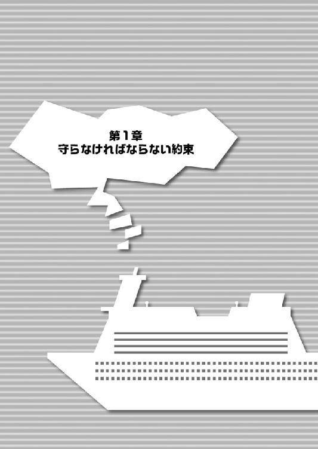
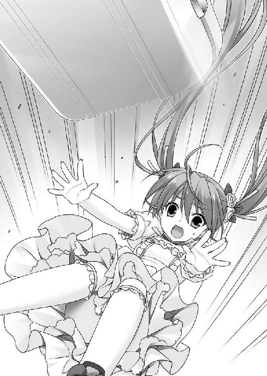

| 桜ノ杜ぶんこ るいは智を呼ぶPLUS 魔女たちと太平洋の星 | |
| 日野亘 | |
| (2013) | |
桜ノ杜ぶんこ
るいは智を呼ぶＰＬＵＳ
-魔女たちと太平洋の星-
日野 亘
プロローグ
『呪い』の話をしよう。
貴方がどこの誰であれ、一度や二度は、その単語を耳にしたことがあるはずだ。あるいは、実際に憎いあんちくしょうを呪った経験も、あるかもしれない。
呪いの歴史は古い。
日本では、最古の歴史書と言われる古事記にも呪いのことが書かれているし、かの聖書にも、気に入らないヤツに呪いと称して罰をくれてやったと載っている。
呪いは、おそらく我々人類にとって、詐欺と並んで古い友人の一人なのだろう。
ここでいう「呪い」とは、貴方の考えるような、古くさい言い伝えや、いい加減なお伽噺、あてにならない都市伝説ではない。実際に、力あるもののことだ。
呪いは、「禁忌」の形を取って現れる。
例えば、朝歯を磨いてはならない、靴下を履く時は裏返しでなければならない、等々。
ルールは罰と一組だ。罰を伴わないルールは、そもそもルールたり得ない。
呪いも然りであり、禁忌を犯せば、罰が与えられる。死を──命を奪うのだ。
しかし、この世に悲劇だけのものはなく、その逆もあり得ない。目に見えなくても、すぐには形に現れないとしても、天秤はいずれどこかで必ず落ち着く。
全ての物事は釣り合いが取れるようになっている。
呪いは災いをもたらすが、同時に恵みも与えてくれる。
それは、人並み外れた力であったり、他人の心を読み取る異能であったりする。
およそ異常である呪いは、与える恵みもまた、日常から外れたものなのだ。
さて、ここに一人の『少女』がいる。
名は、和久津智。
彼女は、田松市の南総学園に通う二年生で、学園では品行方正文武両道の優等生として、特に下級生の女子から慕われるお姉様だ。
生まれつき一つの『呪い』を持っており、その為に随分と不便な思いもしてきた。
その『呪い』が、どこから来たのか、智は知らなかった。
知っていたかもしれない両親は何年も前に死に、秘密は、永遠の秘密となってしまった。
ところで、この世の中では、何にだって例外が存在する。幸福な、あるいは不幸な。
和久津智は、不幸な『例外』の一つだった。いわば片羽の鳥であり、羽ばたいても飛ぶことのできない半端者だ。彼女の秤はいつだって傾いて止まっている。
そう、智は、何の「力」も持ち合わせてはいなかった。
破れば命を奪われる恐ろしい『呪い』と一組のはずの幸い──束縛と引き替えの天の賜物を与えられることなく、不幸な片方だけを押しつけられて生まれきた。
彼女は、正しく呪われていたのだ。
──僕らはみんな、呪われている。
──みんな僕らに、呪われている。
そうして、和久津智は『嘘つき』になった。
彼は、忌まわしい呪いの秘密を隠し通す為に、出会う全ての人たちを、自分以外の世界の全部を、偽り欺き騙して生きていくことに決めたのだ。
だから、これは呪いの話だ。
第３章 カース・オブ・アジュア・ボンド／Ａ
42．避けがたい死について
朗々と浮かぶ月明かりの下、あまりに静かな夜の太平洋上、世界最大を謳われる豪華客船スター・オブ・ジ・オーシャン号が死んだように浮かんでいる。
全長三六〇メートル、全高七〇メートルの巨体は、さながら海原に浮かぶ城塞だ。乗員と乗客合わせて七〇〇〇名近く。船内は、ショッピングモール、プール、カジノから始まり、劇場やスケートリンク、果ては船上公園まで備え、もはや小さな街である。
しかし、不夜城のはずのこの船には、今、死に絶えたような静寂が帳を広げていた。
華やかに彩られたキャビンの通路に、行き交う者の姿もない。
さながら、『マリーセレスト号』だ。
一八七二年一一月七日、ニューヨークを出航したかの呪われた帆船は、一ヶ月後の一二月五日、太平洋上を無人で漂っている姿を発見された。当初何らかの事故が原因の漂流と思われていたが、調査が進むにつれて驚くべき事実が明らかになる。船内には食料や救命ボートが手つかずで残されていたばかりか、食べかけの朝食、湯気の立ったコーヒーなど、今し方まで誰かがいた痕跡を留めたまま、乗員全てが煙の如く消え失せていた。
唯一の手掛かりは船長の残した航海日誌。最後の頁に、短い走り書きが残されている。
「一二月四日、我が妻マリーが」
今なお解けない謎を残す、海のミステリーである。
静かすぎる船内に異を唱えるように、一つの足音が響き渡った。
「......誰もいないのかな」
ちょっとしたデパートを思わせる、やはり人気のない船内ショッピングフロアの上。
吹き抜けの二階から続く大階段を、長い髪の少女が息を切らせて駆け下りてきた。
耳を澄まして、静寂の彼方から届く、一つの音に気がつく。
遠雷のように腹腔に重く響く連続音は、間違いなく銃声だ。
反響して距離感が掴めないが、少女は即座に、銃声を追いかけるように走り出した。
明らかに危険な方向へと。
広場の柱の影から、また別の物陰へ、警戒し身を隠しながら、慎重に移動する。
幾つかの柱を走り抜けた先で、少女は捜していたものとは別のものを発見した。
子供だった。そして──男が自動小銃を向けていた。
考える前に、少女は柱の影から飛び出していた。
全力で駆け寄りながら、子供を抱え上げ、向かいの柱へと逃れようという疾走に、誰よりも早く応えたのは、思いの外軽い銃声だ。
弾丸は音よりも速い。
少女が途惑ったのは、ほんの一瞬。
フロアに反響する発射音を聞いた時には、秒速七〇〇メートルの弾丸は、とっくに腹を貫通していた。苦痛はなく、力の抜けた膝が真下に落ちる。
七月頭のとある日、スター・オブ・ジ・オーシャン号占拠事件に巻き込まれた和久津智は、テロリストが発砲した銃弾で死亡した。

第１章 守らなければならない約束
１．嘘つき少女と呪われた者
その日、北半球ではさんさんたる太陽の光が降り注ぐ夏の最中、七月頭のとある一日は、豪華客船スター・オブ・ジ・オーシャン号にとって、類い希な祝いの日であった。
即ち、世界最大と呼ばれるこの巨大船の上で、船主であるロシアの大商人ニコラエフ・ズファロフの六〇歳の誕生日を祝う一大イベントが開催されるのだ。
太平洋を東に進みながら、雄大な空と広大な海原しか見えない青の世界に、純白の城の如き偉容を浮かべたこの巨大船の胎内は、今やどこを見ても、人、人、人。
全てはニコラエフが自らの人生に関わりを持った相手への感謝を込めて、あるいは、本人以外には窺いしれぬほんの気まぐれから選び、自らの名を署名した、薔薇の香りのする一通の招待状を送って招いた人々である。
彼らは皆、豪華客船の華やかさに負けまいと精一杯自分を着飾り、ある者はこの夏の一時を人生の価値ある一頁として堪能すべく、ある者は蜘蛛の巣めいた人脈が織りなす複雑怪奇な船上の物語に混じり、何某かの儲け話を手に入れようと気負い、またそうでない者も、各々の思惑を携えて乾杯のグラスを合わせていた。
あるいは、この船の乗務員たちがいる。彼らこそ、この船に満ち溢れる天上の美味と優雅な音楽と着飾った人々たちの間を働きアリのように駆けずり回り、ありとあらゆる要求や不備に対応し、不測を粉砕する為に身を粉にして働き続ける者たちだ。優雅な白鳥の水面下でもがく足であり、美々しい宴を舞台裏で支える黒子たちだった。
まさに、これこそ混沌という言葉そのものに違いない。
あまねく広い紺碧の上で、巨大だが海原に比べれば豆粒の如き豪華客船に、数千という人々が乗り込んで、歌い踊り叫びよろめき喧嘩をふっかけ殴り殴られ逃げ出し叫び物を売り飲み物を運び落とし物を捜し子供の手を引き数え切れない料理に舌鼓を打っていた。
しかし、こんなものは序の口だ。今日の祝いの宴は、今夜を徹して朝まで続く。
そう、歓喜の時間が最高潮に達するのは、まだまだこれからなのである。
喧噪からほんの少し離れた場所に、和久津智はいた。
そこは、全二〇層からなるデッキの第一九層。ほぼ最上階近くの、天井が吹き抜けになった開放的なエリアだ。フードコートやパブの他に、テニスコートや日光浴場まであるが、一際目立っているのはビーチ風の大型プールだろう。地上七〇メートルの高みにあるプールは、陽射しや水遊びを楽しむだけでなく、俯瞰した海原を独り占めするような見事な景観を堪能できるという、この船自慢の仕掛けなのだ。
「ふう......」
艶やかな長い髪を掻き上げて、熱気に当てられたように溜息を漏らす。普段人の多い所へ出掛けることが少ないので、この船の賑やかさに目が回りそうだった。
パレオで足下を隠した大人しめの水着姿で、走るでもなく、歩くでもなく、乙女に相応しいお淑やかな足取りで、行き交う人々の間をすり抜けて、プールサイドへと急ぐ。
智は、いつでもどこでも、人目を引く少女だった。
咲き誇る花の派手さはないが、例えるなら、色とりどりの薔薇に混じった一輪だけのスミレだ。真っ直ぐに伸びた長い髪。深い色の黒瞳。形の良い唇。しなやかに伸びた四肢。
語るまでもなく、他と異なる何かをまとっている。
「着替えるの、すっかり遅くなっちゃった。みんな、待ちくたびれてるかな？」
仲間は、全員、先に着替えて行ってしまった。
というよりも、智がワザと遅れて着替えたのだ。やむを得ない事情によって。
仲間。そう、仲間だ。
プールで待っている彼女たちは、いわゆる友達と呼べる間柄ではなかった。
彼女たちは、バラバラのピースの寄せ集めにすぎない。しかし同時に、一つの群れであり、お互いに欠けた部分を補う歪な形の部品であり、何よりもお互いを必要としていた。
それは、人生のとある瞬間に、前触れもなくやってくる選択だ。
ある決断が、それまでと、それまで以後を決定的に、後戻りできぬほど変えてしまう、そんな重大極まりない時間が、人の一生には、必ず一度か二度はやってくる。
あり得ない一つの奇跡のような出逢いは、今からほんの数ヶ月前。
偶然から知り合った智と彼女たちは、友情や他の何かを育むよりも、まず最初に、自分たちが同じもの──同じように『呪い』を背負った者であることを知ったのだ。
彼女たちの身体には、同じ形をした痣があった。
それは、『呪い持ち』であるという、動かし難い徴だった。呪われた者は、身体のどこかに奇妙なカタチの痣が浮かび上がる。例外なく。まるで烙印のように。
呪い、呪い、呪い。
それは言葉よりも雄弁な、智たちが『同類』という証明だった。
禁忌を犯せば命を奪われる「呪い」を負い、引き替えのような異能の才を与えられた、智を含めた、六人の仲間たち。
そして、智は選んだ。智たちは誓い合った。
信じるよりも先に結びつくことを、お互いを救うことを、力を貸し合うことを、独りではなくなることを。他の選択は全て薮小路だった。選ばなければ、おそらく笑顔ではしゃいでいる今なんてなかったろう。
自分たちの繋がりを〔同盟〕と名付けたのは──智自身だ。
智と仲間たちは戦った。行く手には敵があり、罠があり、陰謀があり、窮地があった。独りでは、立ち向かうことさえできなかった。けれど、彼女たちは六人だった。勝ち誇った顔で迫ってくる運命の横面を、全員でよってたかって張り飛ばしたのだ。
それがどんなにあり得ない奇跡だったかは、ここでは語らない。知りたければ、田松という街の物陰で、そっと囁かれる噂話に耳を傾けてみるといい。
とにもかくにも、気づけば、自分たちが街を彩る奇妙な都市伝説の一つになっていた。
凡百の常人とは異なる不思議な力を持った、とある美しい少女たちが織りなす、この二一世紀の日本では信じがたい、あり得るはずのない冒険譚。
──と、少なくとも巷では信じられている。実際のところはともかく。
「............考えてみると、あれから、まだ三ヶ月ぐらいか」
過ぎ去った日々を指折ってみると、たったそれだけなんだ、と不思議に思う。
出逢った頃の春は、とっくに終わった。世間は、すっかり夏の色だ。
あらゆる束縛と、あらゆる苦難から解放された長い夏の休暇の、最初の一歩である。
開放感に後押しされた軽い足取りに、ほんの一瞬、小さな陰が落ちる。
プールサイドを前にして立ち止まり、唇に人差し指を当てて、深く考え込むような顔。
智には、秘密がある。
生まれてからこれまで何年にも渡って、ずっと隠してきた己の「呪い」の秘密。
この先も、誰にも知られるわけにはいかない。勿論、〔同盟〕の仲間たちにも、だ。
智は、彼女は、彼だった。
少女は少年だった。どう見ても女の子だし、戸籍の上でも女だが、しかし、彼女は正真正銘、嘘偽りなく彼であり、それをあらゆる他人とあらゆる視線から隠し通さなければならない宿命があった。
そんな馬鹿げた秘密を守る、その不可能に近い困難を、智はやり遂げてきた。何年も。至難と対決し、容赦をせず、手段を選ばず、綱渡りのような危うい場所を幾度となく踏み越えながら、自分以外の全てを偽り、騙し、隠し、誤魔化してきたのだ。
それが、智の呪いだ。
自分以外の全てを欺かなければならない呪い。
自分の性別を誰にも知られてはならない、『呪い』。
和久津智は、だから、いつでもこう嘯くのだ。
──僕、嘘つきなんだ。
２．花城花鶏の憂鬱
プールサイドのデッキチェアに大胆な水着で寝そべる花城花鶏が漏らすのは、赤道に近い真夏の光に彩られたロケーションとは正反対の、不機嫌と呪いだった。
「面白くない、実に面白くない事態だわ」
彼女の不機嫌は、さして珍しくもない。魔女の血筋に連なると噂される花城家の花鶏にとって、呪いと不機嫌は人生のよき隣人である。
悩める肢体が、青空の下、不思議な生き物のように艶めかしくくねった。
花鶏の日本人離れして整った容姿は、この見事な船にも決して見劣りしていない。クォーター特有の細く伸びた手足と、ヤセ型だが、出るところは出た挑発的なプロポーションを隠すのは、布地面積の実に際どいツートンカラーのビキニ。
ロシアの血からくる白い肌や、彫りが深くてくっきりとした容姿とも相まって、プールサイドを行き来するセレブたちの肥えた目を、引き寄せずにはおかない磁力があった。
その華やかな美貌を憂鬱の色にして、溜息混じりに空へ目を細める。
日本を遙か離れた大洋上の空は、同じ空なのに、田松市の狭苦しいビルの隙間から見上げるものとはまるで別物のような気がする──とかは思わない。
わたしは空疎なロマンはどっちでもいい。むしろ現実が欲しい。今すぐに！
「おほ、ナイスおっぱい!!」
目の前を横切る、たわわに実ったリアルおっぱいに、コンマ二秒で視線が食い込む。ツンと上向きに張りを備えた三つ星クラスの逸品を堪能する唇の端からよだれが漏れる。
花鶏は、だいたいにおいて衝動に忠実な少女だった。とはいえ。
「......あー、駄目だ。そろそろ見飽きてきたわ。やっぱり、わたしのハートを、こうギュッと掴んで離さない愛天使は智だけね」
ここにはおっぱいがいっぱいあるが、ごちそうは三日で食べ飽きるという。船に乗り込んで、今日で四日目だ。新鮮味の失せたおっぱいには、食指も動かない。
花鶏は、女の子が好きな人だった。精神的に、そして、主に、肉体的に。
マイノリティな趣味だ。本人の言葉を借りれば、高貴なる血に連なる少数の選ばれた愛狩人しか理解できない、いと気高き真実の愛である。
「あー、男の視線はスゲーウザい鬱陶しいし、愛が足りてないの！ わたしの為のゴージャスな愛がッ！ 永遠に飽きない美少女のおっぱいとか、空から落ちてこないかしら！」
ご機嫌が斜めの理由はそれだけではない。豪華客船の至る所にある、過積載気味の装飾過剰が視界の隅に入る度、花鶏はふんっと鼻を鳴らしてそっぽを向く。
「クソうぜー、成金趣味丸出しのキンキラキンキンがっ。本物の金持ちってのはね、もっと地味に！ 目立たないところに！ 金かけるもんなのよ、はんっ!!」
「──と、没落エセ貴族めは、今日も対抗意識丸出しのようです」
無駄に痛いところを抉るツッコミを、花鶏が渋い顔で睨み付ける。
「......茅場、居候のクセに余計なこといってると、日本に帰ったら速攻飯抜きよ」
寝転がったままの花鶏の傍へ、奇怪なモノがプールから上がってくる。
それは黒かった。ペタペタと濡れた音を立てて、ペンギンのような不恰好で歩いてくる。足ヒレが大きくて歩きにくいのだ。
「おお、何ということでしょう。茜子さんの貴重な諫言をそのように邪険にすると、いつかケーキの替わりパンを食べている間に下克上でギロチン送りになりますぞ」
相手は太平洋産のＵＭＡではなく、人間だった。黒いのは、完全装備のウエットスーツのせいだ。水中眼鏡にシュノーケルまでセットである。全身ぴっちり包んだ重装備は肌の露出がほとんど皆無で、サービス精神が決定的に足りていない。
というよりも、その恰好は、豪華客船のビーチプールのＴＰＯを十光年分くらい余裕でぶっちぎっていた。もはや冒涜的でさえある。周りのセレブたちの注目を、ごく自然に集めていた。主に、花鶏とは違う意味で。
「アンタ、茅場、せっかく南海のど真ん中まで来たってのに、その恰好はない。せめて、もうちょっと考えなさいよ、ピンクにしてみるとか」
「ふふふ、何をおっしゃいますやら。この茜子さん、環境で自分の主義主張を曲げて尻尾を振るような犬っころではありません。何といっても猫ですので、ニャー」
茅場茜子は、どこまでも我が道を行く猫的少女だった。
「さすがは豪華客船。プールのセレブどもも親切な人ばかりでした。人混みの嫌いな茜子さんが選びに選んだ自慢のバディで、この前思いついた呪いの猫泳ぎを披露していると、愚民どもは恐れ入り、茜子さんの為に道を開けてくれたのです。猫の神は偉大なり」
「うん、アカネの周りには誰もいなかったよね。みんな、全力でヒイてたから」
茜子を追うように、水の中から顔を出してきたのは、皆元るいだ。
身軽な挙動でプールサイドに跳ね上がる。こちらは至ってまっとうな、ビキニの水着。明るくよく動く瞳と、健康的な肢体からは健康的な色気が薫る。束ねた濡れ髪を軽く振って水を切る姿は、サバンナを駆ける獣のような、しなやかな野生美がまぶしい。
「茜子さんのバディの威力に恐れ入ったのです。思い知れ、セレブども爆発しろ！」
「恐れ入っても爆発させるのかよ」
呆れ顔の花鶏を余所に、胸ないすなバディと妙ちきりんなポーズで、茜子はおののくセレブたちに奇怪な猫呪いをかけていた。
「でも、本当にスゲーよね、この船。バイキングはタダだし、船なのに木とか生えてて庭あるし。朝食も食べ放題だったし。プールもうちの学園のとは比べものにならないし、昨日の午後もケーキ食べ放題だったし」
「アンリミテッドストマックは、相変わらず食べ物にしか目がいかないようです」
るいは、どこまでも食べ物に目のない少女だった。
「えー、でも美味しかったし......」
るいが濡れ髪の毛先をいじりながら、朝食べたエッグベネディクトの味を反芻していると、背中の方から、明るいプールサイドには似合わない陰鬱な気配が漂ってきた。
何か思えば、花鶏がじとっと糸を引きそうな半目で睨んでいる。
「花鶏、どっかした？ 陽気にやられて脳膿んだとか？ 普段どおりだけど」
るいは、どこまでも素直な少女だった。
「あのな......口をへの字に曲げて半目で睨むのは、文句ある顔に決まってんでしょう！」
「おい、ハラヘリンクス。ユリラエフ・オッパイスキーめが、何やら申しておりますぞ」
「文句......なんで？」
顔を見合わせて意味不明だと頷き合う茜子とるいを、花鶏はビシッと指差す。
「つーか、茅場、それに皆元......どうして、アンタたちがこの場にいるんだつーの！ あー、もう、まったくあり得ないぐらい面白くないったら、ありゃしない」
騒ぎ始めたそこへ、水着に着替え終わった白鞘伊代が追いついてきた。
普通に歩いているだけなのに、大きな眼鏡と、輪をかけて大きな胸がたわたわと揺れる。これでもかと言わんばかりの凶悪なスリーサイズを布地の少ないビキニに無理矢理押し込めた姿は、プールサイドでも一際派手極まりない。
なのに、どういうことか、彼女は人目を集めない。ズバリ言えば、華がなかった。
素材のせいではなく、身に付いた雰囲気によるものだ。
伊代は、ぶっちゃけ、豊満かつ地味な眼鏡さんだった。
その後ろから小走りにやってくるのは、左右に結んだツーテールをなびかせた鳴滝こよりだ。背中に赤いカバンでも背負ってそうなシンプルボディを、愛らしさ強調のフレア付きワンピースで武装し、足取り一つにもエネルギーが充ちている。
こよりは、平坦かつ無駄に元気のいい少女だった。
伊代とこよりは到着するなり、花鶏の渋い顔とるいの呆れ顔を見比べる。
「どうかしたの？ また、その子が何かやったの？ まったく、貴方たち、こんな所まで来ていつもと同じ調子なんだから。せっかくの海外旅行なのよ。だいたい、ここにいるのは育ちのいい人たちが多いのに、普段の貴方たちみたいに暴れ回ったら、そのまま......」
伊代は、「クソ」が付くほど真面目な少女だった。
馬鹿騒ぎはいつものことだ。るいと花鶏が、事あるごとに角突き合わせるのも、いつものとおり。目くじら立てるほどでもないのに、つい、くどいお説教モードに入ってしまう。
「旅先まで来て長話とは。エロパイ風紀委員長はマイペースに空気読みません」
「ま、イヨ子らしいじゃん」
茜子とるいは慣れたもので、お説教を右から左に聞き流す。
伊代は、とにかく話が長い。なので、二人に限らず、概ね誰もまともに聞こうとしない。
「でも、伊代センパイのお説教も無理ないですよぅ。花鶏センパイ、当たるを幸い縦横無尽で、エロス被害を広めてるッス！ 鳴滝も昨日の夜はさすがに、毒牙にかかりかけてた金髪さんに『えすけーぷ！』って言っちゃいました！」
こよりは、エリートビジネスウーマンな姉の影響でちょっぴり英会話ができる。
「こよりちゃーん。そうやって、わたしの狩りの邪魔してると、前と後ろ同時開発にチャレンジとかさせちゃうわよ〜〜〜？」
「うひぃい、け、結婚までは清い身体でいさせてほしいですよぅ！」
不機嫌に燃える花鶏が、耳ざとく聞きつけて牙を剥く。
花鶏は、三六五日分け隔てなく、エロい少女だった。
が、起こしかけた上半身を途中で止めて、力尽きたようにデッキチェアに倒れ込む。
「おろ、花鶏センパイ、珍しく元気ないですか？ 花鶏センパイがそんなだと、明日は嵐で、この船もタイタニックな感じに沈んじゃうかもしれませんよぅ」
「わたしは元気よ、元気......心配いらないわよ。まったく面白くないってだけよ。この旅行、智と智と二人で来るつもりだったのに、アンタたちまでついてくるなんて」
生真面目な伊代は、常識人らしい反応で、申し訳なさそうな顔をした。
「その、もしかして迷惑だったのなら......」
「いいのよ！ 伊代の巨大おっぱいとこよりちゃんのミニおしりは、あってもいいの。いらないヤツが二人もいるのが問題なのよ！」
「そういうのは、その............私、むしろ、いらない扱いしてほしいんだけど」
「はーい、鳴滝もでーす」
二人の、心の底からの発言もどこ吹く風で、花鶏は天の無情に悲憤するのだった。
「あー、わたしに可愛い女の子のハーレムくれる神様が、どうしていないのかしら！」
３．ズファロフからの招待状
コトの起こりは一通の手紙である。差出人は、ニコラエフ・ズファロフ。花鶏の祖母方、ズファロフ家の縁戚にあたる。内容は、豪華客船クルージングへの招待だ。
ニコラエフは今年で六〇歳。若き日にペレストロイカとソ連崩壊の動乱を潜り抜け、その後、一気に不穏化した新生ロシアの時代の荒波を、数々の伝説と共に掻き分け、ロシア経済界にその人ありと言われるまでにのし上がった、一代の豪商として知られている。
ズファロフといえば、ロシアでは由緒ある血筋だが、ニコラエフはその傍流にすぎず、家系図に記された名前の一つでしかなかった。一方の花城家も、ズファロフの血を迎え入れたとはいえ、遠く日本の地にあり、両者には本来接点などあり得なかったはずである。
運命の悪戯が、遠くルーマニアの地で起きた。
花鶏の祖父、長尚は、ズファロフ一族から妻を取り、その血を遠く東の国へともたらした人物で、ズファロフの先代、セルゲイの若き日を思わせる、破天荒な男であった。
若き日の花城長尚とニコラエフは、好敵手としてルーマニアで出会い、合法非合法を含める紆余曲折のやり取りを経て、互いを認め合った。その後、実は遠からぬ一族の者なのだと知ることになるのは、何とも奇怪な巡り合わせとしかいいようがない。
以来、数十年。長尚は既に故人であるが、花鶏の父・茂保もニコラエフとの交流を続け、ニコラエフが記念すべき還暦の誕生日を、自らが船主である豪華客船で祝うということで、その招待状が、花城家にも舞い込んだのだ。
４．嘘をつくのは水着に限る
花城茂保は、代々奇怪な研究に没頭する酔狂人や波乱を好む迷惑な人種ばかりを輩出してきた花城の末裔には相応しからざる、堅実かつ地味な人物だ。パーティなど好まない父親の代わりに、花鶏が船を訪れることになったのは、当然の成り行きではあった。
「私らも一緒に連れてきたの、花鶏じゃん」
るいが大きな胸を突き出して抗議するが、花鶏は鼻を鳴らして一蹴した。
「一緒に連れてけって、夜討ち朝駆けでベッドの中まで突っ込んできたの、誰よ」
「......えーと、るい姉さん、よく覚えてない」
それは勿論、るいと茜子である。二人は、共に訳あって花鶏の屋敷で居候の身分だ。
「しかし、最終的にゴーサインを出したのは、誰あろう、シベリア産白頭めでした」
「そ、それは......智が、みんなで行った方が楽しいと思う......なんて言うから！」
茜子の的確な指摘に、花鶏は言葉に詰まり、形の良い唇を噛みしめる。
こよりと伊代とるいと茜子が、しみじみと頷いた。
「ともセンパイ、花鶏センパイと二人っきりになるのが怖かったんですねえ」
「それはまあ、当然の判断よね。あの子と同じ立場なら、私だってそうするわ。きっと、そう、ええ、間違いなく絶対に。誰だってそうすると思うの」
「そうそう、だから、るい姉さんもきたんだよ、智のボディーガードとして」
「それにしては、さっきから対エロスシールドそっちのけで、各フロアのバイキング料理で飽食の限りを尽くしていたようですが」
「すごくおいしーんだよ、ここの料理！ しかもタダだし！ そりゃ食べるよね！」
そんなわけで、どこまでも花鶏は不機嫌なのだ。
「ああ、もう、アンタたち、同伴者が何人でもＯＫでよかったわね！ 面白くないったら面白くないわ！ 智と二人っきりのハネムーンが！ 夏の開放感に縮まる距離が！ そして触れ合う唇と愛欲に濡れた長い夜が......うへへへへへへ」
遠い世界へトリップした花鶏を放置して、こよりはプールサイドをぐるりと見渡す。
「あれれ、ともセンパイがいませんけれど......まだですか？」
智が着替えて出てくるのが、随分遅い。女の身支度に時間がかかるのは、太陽が東から昇って西に沈むのと同じくらいの真理だが、さすがに手間を取りすぎている。
「──！」
花鶏が突然、素早く、別の方向へ視線を飛ばす。
妄想のエロスにとろけた顔は、コンマゼロ三秒で獲物を狙う鷹に変化している。
「ごめん、遅くなっちゃって」
遅ればせながら、水着に着替えた智がやってきたのだ。
『おお──』
それまでのやり取りそっちのけで、唐突に座が沸く。
さすがに智もビビって、半歩後ずさった。
「......何故、沸くの？ 女の子同士なのに」
フリルの付いた愛らしいワンピースの似合い具合に、伊代は無意識で半目になる。
「むう......よく似合うわね、羨ましい。私、そういう恰好できないから」
「そ、そうかな。えへへへ」
実に、複雑な笑いを智は浮かべた。
似合わなければ、「呪い」を踏みかねない。つまりは死ぬのだが、面と向かって、似合う、可愛いといわれてしまうのは、何とも言語に尽くしがたい。
「ビキニしか着られないのは、超地球デカイムネダーが大きすぎるからなのでは？」
「そうですよぅ！ いらないなら鳴滝めに半分ください、その巨乳！ ともセンパイもナイムネ同盟の一員として、おっぱいセンパイに是非一言を！」
茜子とこよりが盛り上がったが、智の笑いは微妙に固い。
あっても困る。ぶっちゃけ。清楚系美少女にしか見えなくても、智は男の子なのだ。
「僕、小さい胸でも可愛いからいいよね派だから......」
だが、今、智は、女の子用の水着を着用するという危機的行為に手を染めていた。
全ては、『呪い』の秘密を守り抜く為だ。水着にならないという選択肢もあったが、かえって『疑惑』を招きかねない。疑われることすら危険なのだ。小さな疑惑が、些細なキッカケで確信に変わるかも知れず、その瞬間が、和久津智には取り返しのつかないバッドエンドになってしまうのだから──
だからこそ、敢えて逆を、女の子用の水着姿になったのだ。男の子なのに。
死中に活、虎穴に入らずんば虎児を得ず、飛んで火に入る夏の虫と言うし。
これはその為に、考えに考え抜いた、あらゆる策を弄した水着姿だった。
ちょっと可愛いワンピースは、そこはかとなく布地が多く、こっそり装着している薄型パットの効果を加えて、シンプルな肢体を完璧に形作ってくれる。下半身にはパレオだ。大事な部分を隠し、不測に事態にも対応できる、マーベラスなアイテムである。
これを有効に活用するには「素材の良さ」が求められる。
その点、智はどこからどう見ても、まさに完璧な清楚系美少女だ。艶のある髪、ほっそりとした手足。胸がないのはご愛敬。女の子っぽい容姿に生んでくれた母親に感謝を。
「でも、似合っててよかった」
ある意味、安堵の一息を吐く。
男と女では、骨格や筋肉の付き方が違う。服の上からでも、子細に見比べれば違いがわかる。水着になって素肌とか体つきが判れば、更に発覚の危険は増す。
それだけに、素肌まで見た相手が実は男の子だとは、よもや疑うこともしないだろう。
水着までなら簡単にはバレない自信もあった。伊達に、誰にも気づかれることなく、女装を続けてこられた訳じゃない。長年の研鑽と蓄積の成果が、女の子らしい仕草、女の子という印象を作り出す振る舞いが、ほとんど無意識レベルで身に付いている智を見て、男だと見抜けるプロは皆無に等しい。人間の認識は、思いの外誤魔化されやすいのだ。
言うまでもなく、この場で最も危険な相手は、花鶏である。
エロスの化身。女の子を愛している。レで始まるマイノリティ趣味の持ち主。
だからこそ、花鶏のその直感を欺くことができれば──
「ねえ、花鶏、ど──」
「智ぉ！ 今夜わたしのベッドにいらっしゃーい!!」
今夜どころか、花鶏が今すぐ襲い掛かってきた。
５．殉教者たち
光があれば陰がある。それはこの世が始まって以来の真理であり、スター・オブ・ジ・オーシャン号の喜びに充ち満ちた甲板の下にも、静かな闇が横たわっている。
甲板の下、海中にその身を沈ませた船体下部にあるものは、巨大なエンジン、血管や神経のように張り巡らされた配線やパイプやダクト、それらを機能させる専門の船員たち。
この船を本当の意味で支えているのは、乗客たちの瞳には決して映ることのない彼らの、人知れぬ努力なのだ。
その一角に、秘かに悪意が忍び込んでいた。
薄暗い船倉の片隅。ここにあるのは航海に備えた補修機材や予備部品ばかりで、今日のこの日この時間には、ほとんど人がやってこないのを、十分計算し尽くしている。
暗がりに数十人が整列する。乗客らしい者がいた。乗務員らしい者がいた。パーティの余興を司る芸人らしい者がおり、売店の売り子らしい者もいた。黙然と並ぶ姿は、よく訓練された軍隊を連想させたが、服装や装いはバラバラで統一性がまるでない。
「〈血の兄弟〉たちよ」
オーケストラの指揮者の如く、一人の男が進みでた。
他の者とは明らかに異質な、哲学者の如き風貌である。黒曜石を彫り込んだような目鼻立ちは、モンゴロイド、それも日本人のものだ。二メートル近い長身は巨漢といってよく、否応なく目立つはずなのに、奇妙なほど人の目を引かない。
地味というのではなく、気配が薄いのだ。『真理』に姿形がないように、男の姿は巷の喧噪に紛れて、ふと目を逸らせば、そのまま消えてしまいそうな気さえしてくる。
乗客名簿には「三島」で登録されているが、彼の敵からは別の名で呼ばれていた。
後藤田一益。
世界七ヶ国で、凶悪極まりない事件に関与したテロリストとして手配されている。
「諸君らの信仰が果たされる時が来た。祈る者は恐れてはならない。信じる者は怯えてはならない。我らは等しく兄弟であり、信じることを戦いによって証明する」
重々しく響く低音の声は、囁きめいていながら倉庫の隅々までよく響く。
微動だにしない、整列した軍団たち。それを見つめるゴトウダの眸は、語る言葉の熱情とは裏腹に、異常なほどに冷ややかだ。
整列していた男たちが一斉に散らばった。
彼らはバラバラだったが、同時に一つの者だった。一つの命令に従う歯車であり、同類だった。彼らは、この日の為に準備を重ね、乗客や乗務員に混じって入り込んだのだ。
事前のチェックや船のセキュリティは厳重を極めていたが、神ならぬ人の手による限り、完璧という言葉は存在しない。抜け道は幾らでもあった。例えば、チェック担当者の銀行口座に、ペーパーカンパニーから多額の金銭が振り込まれていたりだ。
「ニコラエフは罪を犯した。罪には罰を。喜びには親愛を。それが釣り合いだ。略奪の船が海を渡らんと欲するならば、かの物語のように、海は意志を以ってそれを打ち砕く」
男たちは、山と積まれた資材から、秘かにマーキングされた所定の木箱を運び出し、荒々しく外装を叩き割った。資材の底に隠された部品を、慣れた手つきで組み立てる。
あっという間にそれは、機能美と殺戮の威力を備えた自動小銃の姿を取り戻す。
「我らは祈ろう。そして眠りを与えよう」
応じるように、銃を握りしめた右手が高く掲げられた。
予定の手順を全て終えたのを確認し、ゴトウダが頷く。男たちはそれぞれ持ってきた荷物に武器を隠し、人目を忍んで計画された所定の位置へと戻っていく。
「──お前に問題はないのかね」
誰もいなくなった倉庫で、ゴトウダは残る最後の一人に問い掛ける。
倉庫の片隅でじっとしていた女------フランシスは、いつも居眠りしているような半目で、茫洋と捕らえどころがない。
どう見てもコーカソイドの女は、他の同志とは明らかに異質だ。おまけに銃を手にしておらず、代わりに黒塗りの棒のようなものを右手で抱えるように携えていた。
それは同志たちには馴染みのない、しかし、ゴトウダはよく知るもの、日本刀だ。
ゴトウダは、この古風な武器以外のものは何も身に付けないおかしな女を、自分の計画表から可能な限り閉め出すことにした。そもそも、今回の計画に志願したこの女の意図を測りかねていた。端的に言って、まるで理解できなかったのだ。
が、戦うことにかけて、フランシスには異才と呼べるものがある。骨董品同然の刀だけで戦場に立ち、これまで生き残っているという異常な事実が、それを証明している。
「ワタシは勝手にやる」
「ふむ......いいだろう。後は予定どおりに。私は『最後の荷』を受け取ってくる」
ボソリと億劫そうに告げる女に、黒い男はあるかなきかの仕草で頷く。
最後の荷とは、今夜のパーティを演出する為の、ゴトウダだけが知る最も重要な一欠片。
それを手にした時、舞台は整い、待ちかねた一夜の喜劇が幕を上げる。
６．いないはずだから、いない
「えっ、えっ、えっ......怖かったよぉ......」
「おーよしよし、悪はるい姉さんがやっつけちゃったぞー」
借金のカタで廻船問屋の旦那に手込めにされた町娘のように、智は泣いていた。
よしよしと、るいが幼子にするように頭を撫でている。
「見事、シルバーエロリストの攻撃を避けきった総受けブルマーピンクに、茜子さんが猫新影流の免許皆伝を与えましょう」
万事にクールな茜子は、何事にも他人事で、合いの手を入れる。いつの間にか、手に入れてきたメロンソーダを啜っていた。
「茜子センパイの免許だと、むしろ祟られそうですよねー」
「呪いに加えて祟りをセットも、最新鋭という感じでイカします」
「いいの、それって......」
自称、一番常識人の伊代は、一番変人枠の茜子の思考に中々ついていけない。
ようやく落ち着いたプールサイドに、るいにプールへ叩き込まれた諸悪の根源たる花鶏が、濡れた銀髪を掻き上げながら這い上がってきた。
「まったく、加減を知りなさいよ、皆元。アンタの馬鹿力で投げられたのがわたしでなかったら、溺れちゃってても知らないわよ」
「ちっとも頭冷えてないな、てめーは」
白い目のるいをさっくり無視して、大げさに肩を上下させると、花鶏は溜息を吐き出す。
見事なモデル立ちで、斜め四十五度上空を見上げて、呟いた。
「そうよね。楽しみは夜まで取っておきましょう。豪華クルーズの宴、ほんのりとセレブな夜の憩い、静かな波音の奏でる名曲、盛り上がる魂、そして愛欲に濡れた智ちゃんのシークレットゾーンを、わたしの白い指が艶めかしく辿る!!」
「花鶏って、どんな時でもマイペースだよね。ある意味尊敬する」
逞しいなあと、しみじみ想う智だ。
「最初は良かったのに、途中から残念賞すぎですよぅ」
「潮の香りに桃色貴族めのエロスメーターがピンクゾーンに突入しておるようです」
「旅先だからって、変に盛り上がっちゃダメよ。普段と違う環境でこそ、人間としての大事なモノが問われる時なんだから。そう一番大切なのは節度なの。節度を失った人間はね、どうしようもない自堕落に（以下略）」
「こいつを智と二人っきりにしたら、その場で襲いかねない」
「襲いかねないというか......」
智がか細く何かを言いかけたところへ、花鶏は大真面目に割って入った。
「もう、押し倒したわよ」
過去形である。
三日前。つまりこの船に来た初日。
智が初めて船室に入った時、荷物の整理をしようと扉を閉めたら、物陰から飛び出した花鶏がケダモノジャンプして、しかも空中で服を脱ぎながら襲い掛かってきた。怖かった。
「それで、どうしたですか、ともセンパイ」
「持ってた痴漢撃退用スプレーを動かなくなるまで吹きつけて扉の外に捨てました」
完全に無表情な棒読みである。
「ゴキブリの化身、エロフォーマーＧです」
「貴方、よく持ってたわね、そんなの。準備がいいって言うか......」
るいや伊代たちとは違い、智の『禁忌』は、自分のテリトリーの外に出てどこで誰が見ているのか判断がつかなくなると、『呪い』を踏む危険が格段に上がる。旅行で、四六時中他人と一緒にいるとくれば、発覚の可能性は数十倍といっても過言ではない。
今回の旅行には、あらゆる状況を想定して、準備万端に整えた。臨戦態勢である。
そもそも、花鶏が宿泊する客室を教えてくれる時に、
「客室の指定が来たわ。ダブルの空きが二つだそうだから、わたしと智はシングルね」
と、言い出した時点で、罠があると予想するのは、智にとって、かき氷を頬張ったらこめかみがキーンとするほど当たり前だ。
船室に入ると、ピキンと脳裏を電流が走った。来る、と思ったら、本当に来た。しかも到着するなり来た。花鶏先生、素早すぎます。
だが、それもこれも、全ては智の予想範囲内で、見事に悪は撃退されたのだった。完。
「それにしても、油断も隙もあったものじゃないんだから......」
メンバーでは一頭地を抜く真面目人間の伊代は、普段から気苦労が多い。
クソ真面目なだけで、常識人かどうかは怪しいあたりが伊代たる所以なのだが、本人は、至って本気で「私以上の常識人はいません」と信じている様子なので、智もその点には、なるべくツッコまないようにしている。
「それよりも。せっかくの旅行なんだし、楽しまないと」
気分を変えようとプールへ飛び込んだ智に、花鶏から甘い誘惑が投げられる。
「暗くなってから、めくるめく快楽ドリームを、おねーさまが教えてあげるわね〜！」
されてたまるか。イケナイことをされてしまったら、隠している性別がバレてしまう。
水に半分沈んだ自分の水着姿を眺めていると、何か取り返しのつかない一線を越えた気がして、随分と遠くへ来ちゃったな、と思ったりした。
これでも去年までは、最後のプライドを死守していたのだ。
女装はしても、水着なんて着けたことがなかった。
みんなと一緒にいるせいで影響を受けて、精神的に女性化してるんじゃないだろうかと、本能的な危険を覚えなくもない。
それを言うなら、みんなと一緒に旅行に出掛けようなんて思うこと自体、自分がどこか壊れてしまったんじゃないかと正気を疑うほど、危うい話に違いない。
身を守るには、「旅行には行かない」という選択が、最も安全かつ確実である。
数ヶ月前の智なら、迷わずそうしていただろう。
実際、これまで遠足や修学旅行だって、可能な限り避けてきた。
角の立たない言い訳と事情を用意して、ドロップアウトを選んだはずだ。
──その選択肢を、選ばなかった。
一緒にいきましょーという、こよりの懇願に負けたのもある。
豪華客船に連れて行ってとしがみついてきた、るいや茜子の姿に、狡猾極まるロシア製元貴族少女が「智が来るなら他の連中も連れて行くわ」と交換条件を出したのもある。
僕って、頭悪くなったかな。
みんなと一緒に居るようになって、甘くなった。それは間違いない。自分から望んで危険に近づくようになってしまった。地雷原でタップダンスを踊ってるようなものだ。
それでも、嘘はつき続けている。
智は秘密を抱えて、仲間を騙して、『男の子』なのに『女の子』として振る舞って。
それは解けない矛盾だ。一生自由になれない、呪われた禁忌なのだ。
でも、まあいいか。楽しいのは本当だ。
ほんのちょっと前まで、あることさえ知らなかった胸の高鳴りが、ここにはあった。
呪いという重圧と束縛。誰かと一緒に旅行へ行くなんて、夢のまた夢。
今は違う。根本的には何も変わっていないが、違う。
知らなかった場所へ、勇気を奮って一歩を踏み出した。
まばゆいイルミネーションと、光射す水面と、波打つシルクのドレスの列。
死と隣り合わせでも、見渡す限りに世界は広くて、輝いている。
「トモちん、どうかした？」
プールサイドから、るいが覗き込んでいた。大雑把なのに、妙なところで勘が鋭いのは、きっと野生の生き物だから。そんなことよりも、前屈みなので、ビキニから溢れんばかりの大きな胸の谷間が目の前にきた。
ダメだ、静まれ僕の魂、昂ぶっちゃ危険だ、色々な意味で！
万に一つ、プールの中で昂ぶってしまったら、恥ずかしくて死ぬ......じゃなく、男とバレて『呪い』で死ぬ。マジで死ぬ。
「なんでも、なんでもないない。全然ない！」
「そうけ？ トモちん、いいことあったみたいだったのにー」
「それを言うなら、いいことっていうか、既にここが良いところでしょ」
るいに並んで、伊代がぺたりとプールサイドに腰を下ろし、素足をプールに漂わせる。
伊代の際どいビキニは、今にも零れてしまいそうだった。
「......デカメロン」
「というか、むしろスイカです、ともセンパイ」
「......なに言ってんの、貴方たち」
素直な感想を漏らしていたら、お袋さんな伊代にシビアな半目をされた。
伊代は最初、本人の趣味で地味っぽいワンピースにしようとしたのだが、お店の人の強引な薦めに負けて、ビキニになってしまった。
「いい、実にいいわ！ そのおっぱいを剥いて今すぐしゃぶりつきたい！」
「それはさておき、本当に良いところだよね。初めてが海外で、しかも豪華客船のクルーズなんて目に毒すぎる。価値観の危機かも」
まともに旅行をしたこともない智には、熱海の温泉旅行程度が想像の限界だった。
「そういえば、惠センパイも誘ったんですよね？」
「まあね。でも、用事があるからいけないって言ってた。今回は仕方ないよ」
上目遣いのこよりが余計な気を揉まないように、なるべく明るく言葉にする。
智たちは、自分たち以外にも、二人の『呪い持ち』と出逢っている。
才之原惠は、その一人だ。
それまで、すれ違いさえしなかった呪い持ちの同類と、こんなにも矢継ぎ早に出逢えたことを、奇跡と呼ぶべきなのか、運命と呼べばいいのか、智にはよくわからない。
せっかくの旅行だから、一緒に出掛けられればよかったのに。
思い出すと少し寂しくなったが、用事と言われては仕方ない。
それに惠も『呪い持ち』だ。込み入った、厄介な事情だってあるかもしれない。
例えばそれは、自分の街から出てはいけない『呪い』、であるとか──
「......あれ？」
吹き抜けになったプールサイド、南国風のパークの奥には、船内への通路がある。
陽射しの届かない通路の暗がりに、知った顔を見た気がして、智は首を傾げた。
いるはずのない顔、あるはずのない姿。
「とーもー、なにしてんのー、こっち来なさいよー」
疑惑はすぐに消えてしまう。
いるはずのない者が、こんな所にいるはずはないのだから。
７．いないはずでも、いる
いないはずの者は、いた。
「央輝です。戻りました」
取り決めどおりの符丁で、三度ノックをしてから客室にするりと滑り込んだのは、狼の鋭利な目をした少女だ。定期的に周囲の安全を確認するのは、彼女の仕事の一つである。
名は、尹央輝。
ほんの一年ほど前、田松市に登場し、ほんの少女でありながら、瞬く間に裏社会の顔役として、一目置かれるようになったニューフェイスだ。
それ以前の過去を知るものはなく、伝説ばかりが知られている。
──ツバあり帽とコートの黒ずくめをなびかせて、陽射しを呪う。
──夜にのみ姿を現し、ひと睨みで荒くれどもの命を奪う奇怪な魔力を持つ。
それ故に、尹央輝はその名前でなく忌み名で呼ばれ、畏れられる。
吸血鬼、と。
事実、央輝には、「力」がある。
お伽噺でも枯れた伝説でもなく本物の、異端とも異能とも呼ばれる力。それは『呪い』の代償である、理外の力。花城花鶏が『才能』と呼ぶ、呪い持ちに与えられた魔力だ。
だが、今日の央輝は、黒でも、魔物でもなかった。
チャイナドレスだからだ。
「うぐ......」
自分の恰好を思い出し、首でも絞められたように呻く。
ドレスは紫の地に白い花をあしらった柄で、背中が大きく開いていてすーすーする。
裾のカットが深くて、足が付け根まで見えそうなのは、頼むからどうにかしてほしい。
「似合っているぞ」
室内には、央輝以外にもう一人、紳士然とした中年がいた。
石の固まりが喋ればそうだろうという声で、型通りの賞賛をするが、央輝の耳を右から左に、ほとんど素通りも同然に抜けていく。
狩りの獲物のウサギを捕らえる代わりに、巣まで丁重に護衛していけと命令されたドーベルマンがいれば、今のこの気持ちを理解してくれるんじゃないだろうかと思う。
「.........ありがとうございます、『常務』」
最後の「ます」が消えそうだったのは、皮肉ではなく、情けなくて泣きそうになったからだ。央輝にとって、衣類は着られればいい。陽射しが除けられて、冬の寒さが凌げれば十分な代物である。こんな服の袖に、己が腕を通す理由も機会もないはずだ。
しかし、命令とあれば、地の底の悪魔でも平然と殴りつけるのが央輝という少女で、不幸にも、このチャイナドレス着用は直属の上司からの命令だった。
二人が居るのは、スター・オブ・ジ・オーシャン号のグランドスィートルームである。
名前は大げさだが、この船にはスィートクラスだけでも一二の等級があり、その中では九番目でしかない。それにしたって、央輝が普段使っているねぐらを、三つまとめてもまだ余るほどの広さだった。内装調度のレベルにおいては、比較するのもおこがましい。
この客室の住人は、央輝と『常務』の二人だけだ。
『常務』が華美を嫌い、実用本位を重んじる人間なのは、央輝もよく知っているが、乗客の立場を鑑みれば、不用心の謗りを受けるところだろう。
「......あの、『常務』、よろしいでしょうか」
央輝は、部品だ。そう自らを定義している。
部品は考えないし、悩まない。歯車が廻るように、ネジの螺旋が食い込むように、黙って命令を遂行することが重要であり、それ以外のことは全て贅肉だ。
「何だ」
「いえ、その......この......ふ、ふく......」
だが、今夜ばかりは、自分に課した一線を踏み越え、訊かねばならなかった。
本当に、私は、この服を着なければならないのでしょうか──と。
「今夜はパーティだ」
央輝が珍しく、切り出すべき言葉に迷っていると、唐突に話題が飛んだ。
「見栄えも必要になる」
央輝の言わんとすることを読み取ってくれたらしい。
いつもの黒ずくめのコートで豪華クルーズの中を歩けば、さぞかし目立つのは間違いない。あからさまに場違いだ。怪しすぎて、警備に通報されてしまう。
「......わかりました。私も覚悟を決めます」
「それでいい」
素っ気ないやり取りだ。
幼い頃、央輝が拾われてからずっと、『常務』との間にはそんなやり取りが続いている。
たぶん、この先も、そうなのだろう。
問題はなかった。
拾われた恩は忘れていない。廻る歯車として、返していくのだと決めている。
尹央輝にとって、それ以外は何もかも余計な贅肉だ。
だからそれは、ほんの小さな奇跡と呼べるものだった。
「──そういえば、最近、彼女らとは、どうしているのかね？」
忘れ物を思い出したように、『常務』が問い掛ける。咄嗟に意味を掴みかねた。
「......彼女？」
「和久津、だったか」
和久津智と、その仲間どものことだ。
数ヶ月前、央輝が仕切る賭試合に飛び込んできた、素人のクセに物好きな連中である。
だが、『常務』と央輝の間では、和久津の名前はもう一つの特別な意味を持っていた。
智たちは、央輝と同じ『呪い』を負った同類──呪い持ちだ。
無意識に、左腕の付け根に指で触れていた。
央輝は、賭試合でのちょっとしたトラブルがキッカケで、和久津智の身体に「痣」があることを知ってしまった。それだけならまだしも、その後、自分も痣を持っていることを知られてしまったのは、痛恨の失敗としかいいようがない。
同類がいる可能性は、以前から示唆されていたが、本物に出遭えるとは思ってもみなかった。これまで、彼らが幾ら捜しても、ロクな手掛かりさえ出てこなかったのだから。
「......ゴキブリじゃあるまいし、次から次に増えやがって、クソッ」
口の中で、『常務』には聞こえないように、汚い言葉を吐き捨てる。
賭試合で、初めて智の痣を見た時、悔しいことに動揺してしまった。
本当に『同類』なのか、気になって、探りを入れてたのだが、正直後悔している。
相手は──和久津智は、央輝が考えていたよりも、ずっと頭の悪い女だったのだ。
一般人で素人のクセに、裏社会に生きる央輝に、わざわざ自分から関わりにやってくる。よほど死にたいのか、それともお人好しの細菌で脳が発酵しているとしか思えない。
「どうということもありません。他の『呪い持ち』と連んで好きにやっているようです。最近は同類だからと、私にまで頻繁に声を掛けてきます。怖いもの知らずな連中で......」
できれば、あの連中とはこれ以上絡みたくないが、歯車としてはそうもいかない。
命令が来ているからだ。「観測しろ」と。
彼らは、単に「組織」と、呼ばれていた。
「機構」と呼ばれることもある。
それは裏社会ですらない、央輝を裏の住人とするなら、いわば裏の裏──実在を知る者さえごく限られており、央輝のような端末にとっても全容を窺い知れない巨大な存在だ。
『常務』は、「組織」を実務面で経営する、選ばれた〈委員会〉の一員である。
「組織」は、和久津智のような、あるいは尹央輝のような異端を「観測」する。
彼らの目的──など知らない。知りたいとも思わない。興味があるのだろう、多分。
普通でないものは珍しい。この国では、珍獣を集めて動物園とやらに飾っておくそうだし、稀少というだけで有り難がって集めたがる金持ちにも、腐るほど出会ってきた。
「それと、連中ですが......どういうわけか、さっき、ここのプールで見かけました」
危うく見つかりそうになったので、早々に引っ込んだから、まだ、こちらの存在には気づかれていないはずだ。
「......どこからかチケットを手に入れたのではと。連中の一人にロシア系がいるので、ニコラエフ繋がりかも知れません」
必要なら──というニュアンスを込めると、『常務』はあっさりと背を向けて、テーブルに置かれたトランクを、確かめるように軽く叩く。
「......興味深くはあるが、我々は今夜のことで忙しい」
役割以外のことに興味を向けるなど、この人らしくない──と思ってしまった。
不要な思考だ。央輝は余計なことを考えるのを止めて、頭を切り換える。
この船に来た目的は、今夜のパーティに紛れて、重要な交渉と取引を行う為だ。央輝はその護衛役である。交渉や取引の内容は知らない。知る必要がない。
それなのに、まさか、こんな所にまで、奴らが現れるとは思わなかった。
どうか、面倒なことになりませんように。
央輝は珍しく神に祈ろうかと思ってから、無駄なことは止めておいた。
呪われた者に微笑んでくれる神様なんて、探したところでいるはずもない。
８．人の頭を殴るように作られてはいません
プールで好き放題遊んだ後、智たちは、それぞれ客室へ戻った。
右デッキの一一階には智と花鶏の、一〇階にはるいとこより、伊代と茜子がペアで宿泊している部屋がある。
まだ午後も浅い時刻だ。今夜のパーティまで、数時間余裕があった。ひと休みしてから、改めて出掛けよう。
──油断といえた。
静けさは常に嵐の前触れであり、勝利した時こそ、最も警戒すべき瞬間だ。
普段からハリネズミのように尖らせている警戒本能は、プールでのけだるい楽しさの余韻が麻痺させていた。客室に戻った自分のすぐ後ろに、まさに黒い悪意が跫音を殺して近づいているのに、決定的瞬間まで気がつかなかったのだ。灯りを点け、後ろ手にオートロックのドアを閉めようとした時には、何もかもが手遅れになっていた。
「あら偶然ね智こんな所で逢えるなんてきっと運命の導きよいいえ何も言わなくてもわかってる貴方と私は一つになる為にこの世界に生を受けたの赤い糸みたいなものなのよだから大人しくさあ服を脱いで智ちゃんの可愛いところを全部見せてぇ〜げへへへ」
「いやあああああああああ」
花鶏が部屋にいた。というか、まさに比喩ではなく、警戒の緩んでいた智のすぐ真後ろ、鼻の触れそうな距離に音もなく忍び寄って、一緒に入ってきたのだ。
「やめてよして近寄らないではじめては好きな人にあげたいのーッッ!!」
昼ドラで義理の父親に押し倒される憐れな女学生のように悲鳴をあげてから、智は這いずって逃げた。あっさりと壁際へ追い詰められた。正真正銘の生命の危機だ。
まさか、こんなので、僕は『呪い』を踏んじゃうの!?
死亡診断書の死因欄には、花鶏の愛と書くことになるのだろうか。往復ビンタの一ダースを食らわせたが、花鶏はまったく正気に戻らないので（どうやら、コレがデフォらしい）、手を伸ばしたら偶然触れたトランクで強めに殴った。
「ぶげら」
踏んづけられたガマガエルの如き呻き声をあげて、恐怖のエロマッスィーンは床の上に這いつくばった。動かなくなった花鶏を見下ろしながら、安堵で、ない胸を撫で下ろす。
「よし、捨てちゃおう」
三秒ほど熟考して、決めた。このまま置いておくと怖いので、廊下にポイ捨てする。
ここは豪華客船の中だし、廊下で寝てても怪我とかしないし。多分。
「......後で起こして拾っておけば、大丈夫だよね」
花鶏を追い出して、念入りに戸締まりを確認し、ようやく一安心。
落ち着いたので、少し気は早いが、夜のパーティの準備を整えておくことにした。
客室のキャビネットにしまっておいた、パーティ用ドレスを出してくる。ベッドの上に広げて、じっくり見たり触ったりすると、生地の良さと仕立ての見事さが指先に伝わる。
「このドレスのお値段、幾らなんだろう？」
この智のものを含めた、仲間たちがパーティで着る予定のドレスは全て、出発前に花鶏が用意してくれたものだ。
（お代なんてみみっちいこと、言いっこなしよ！ 一緒に連れて行った連中がパーティに普段着で出席なんて、花城家の名誉に懸けて、そんな格好の悪いこと、できるわけないじゃない！ ほら、このわたしが用意してあげたから、全員キチンと着ていくのよ！）
相変わらず口は悪かったが、フォーマルな服といえば学生服しか持ち合わせのない智たちに、花鶏なりに気を遣ってくれたのだろう。
客室の姿見の前で服を合わせて見ながら、自然と感謝が笑みになって零れた。
さっき咄嗟にだけど、トランクでぶん殴ってしまったのは、やり過ぎだったろうか。仕方ない。それもこれも『秘密』を守る為なのだから。
実際にドレスの袖に腕を通して、ファッションモデルよろしく、クルリと回る。
ドレスは清純な白を基調に、胸元には一輪の花のアクセサリーをあしらっている。花びらのように、ふわりと波打ち広がるスカートの裾。大人しめデザインが、かえって智の素の良さを引き立てている。これを見立てた、花鶏のセンスの良さは、かなりのものだ。
「花鶏って、何でもできるんだなあ。エロスなのに......」
天は二物を与えずというが、花鶏は誰が見ても目を引く美少女で、学園での成績はトップクラスで、智から見ても二物も三物も持っている。引き替えのように、エロスだったり、変態だったり、危険人物だったりで、『呪い』がなくても、人目をはばかる欠点が山盛りだ。人間、どこかで釣り合いが取れるようになっているらしい。
「しかも、服のウエストぴったりだし。サイズ測ったわけでもないのに、恐ろしい......」
さて、今回の招待は、豪華客船による一週間のクルーズ付きで、四日目の夜が誕生パーティだ。その本番まで、あと数時間を残すばかり。
この三日間にも呆れ果てるほどだった船内の華やかささえ、ほんの前奏曲である。
スケールが実感しがたい。智にとって、パーティなんてものは、映画や小説の中に出てくる不思議な空間──要するに、別世界の出来事だった。
智だけではなく、それは『呪い持ち』にとっての、一つの必然だ。
『呪い持ち』は、それぞれ異なる『呪い』を持っている。
どんな『禁忌』であれ、それは否応なく、日々の行動を厳しく縛り付ける。
例えば──「未来の約束を禁じる」呪いであれば。指切りや口約束は元より、未来の行動を定める契約書やネットの予約販売に至るまで、全てが死の罠に早変わりしてしまう。
厳密に、どこまでが「呪い」の範疇に含まれるのかは、『呪い持ち』自身にとっても曖昧だ。安易に試してみることもできない。確認してアウトなら、そこで終わりである以上......どこまでいっても、手探りにならざるを得ない。
他愛ない『日常』に潜んでいるかもしれない、思わぬ『呪い』を回避する一番の方法は、閉じ篭もり、他人との関わりを可能な限り絶つことである。
智も、これまでは、それに近い方法で身を守ってきた。仲間と出逢う以前は──。
たった一つの禁忌。それっぽっちでも、世界は決定的に変貌する。
曖昧で、先行きのない「呪われた世界」こそ、この先も決して変わることのない、智の棲む国のはずだった。
──今は、違う。
独りではなくなった。危険を承知で、外の世界へ踏み出した。
この船の出来事は、何もかもが新鮮で、興味深く、些細な変化に胸がときめく。
勿論、呪いは恐ろしいけれど、それとは別に、だ。
「母さんが生きていたら、何て言ったかな？」
勇気があると誉めてくれただろうか、あまりに危なっかしいと叱ったろうか。
鏡の中の自分は、どこか寂しそうな顔。
頬を両手でピシャリと叩いて、パーティにお似合いの表情を作り直す。
改めて見ると、自分のドレス姿は、なるほど、中々に可愛いかもしれない──などと、ちょっぴりでも思ってしまった。複雑な気分。
「......もしかして、本当に女の子化が進んでる？」
女の子ばかりの「仲間」と連むことが増えたせいだろうか。
もしそうなら、アイデンティティの危機だ。困るよ。僕は男の子なのに。
例え、それを誰にも告白できず、一生隠し通さなければいけないのだとしても。
また俯き具合になりかけたので、気分を変えることにした。
ドレスに合わせて、アクセサリーも着けてみようと思い立つ。
といっても、世知辛い学生の身分である智には、選べるほどアクセサリーの物持ちはない。今夜の為に持ってきたのは、素っ気ないチェーンのネックレスだ。
大した値打ちもないはずだが、大事なものだった。
これは智の死んだ母親が残した、数少ない形あるものの一つなのだから。
荷物の中から出しておこうと、トランクをベッドの上に運ぶ。
花鶏を撃退するのにも役に立った、飾り気のなく頑丈そうな大型のトランクは、明らかに女の子が旅行に持ってくるデザインではない。
このトランクは、茜子から貰ったものだ。まともに旅行など出掛けない智が持っているのは、愛用の小さなバッグだけだった。今回は一週間の予定なので、それでは間に合わない。新しいのを買うのは出費がかさむ。水着を新調したばかりだし。
悩んでいるところへ、颯爽と現れたのが、無数の猫を引き連れた茜子である。
「おい、小公女ブルマー。このトランクをお使いになられるがよいのです」
茜子が、よく引き連れている野良猫軍団が、足下で「賛成！」とでも言うように、一斉に「ニャー」と鳴く。いつも不思議に思う光景だ。明らかに野良な猫のヒトたちでも、茜子には、まるでよく躾けられた飼い猫のように、不思議なほどよく懐く。
「そんな過剰に不幸そうな怪人名やだけど......何、これ？」
「足長茜子さんが猫猫会議場で偶然拾い......こほん、ではなく偶然手に入れた古代ニャンタリア文明のトランクです。きっとご加護があるでしょう」
「今、拾ったって......」
茜子は智をさっくり無視して、ほとんど肩近くまでの高さがある、下に車輪の付いたタイプのごついトランクを、これ見よがしに見せた。
「茜子さんは、一緒に発掘した、この大きなつづらを持って行く予定です。何といっても荷物が多いですから。ブルマー女とペア・アタッシュではないですので、ご心配なく」
ちなみに、智は常日頃ブルマーを着用している。趣味ではない。万一スカートの下を見られた時の用心だ。苛烈な娑婆には、危険が一杯潜んでいる。スカートをめくってくる悪ガキ、満員電車でそっと下着の形を実測しようとする特殊性癖者などなど。下着は薄いので言い訳できない。ブルマーで更にカバーするのは、生きる為の知恵である。
が、世間の主流はブルマーからスパッツに移った。女の子が体育で着用するブルマーは排斥され、失われた文化となりつつある二一世紀。智にとって生きにくい時代であった。
智は、茜子が拾ってきたトランクを使わせて貰うことにした。選択の余地はない。憎むべきは市場経済論理である。どこを見ても金、金、金。なんて呪われた世界であることか。綺麗にすれば使えるはずだ。デザインが可愛くないのは我慢しよう。
「──あれ？」
ダイヤル錠を合わせたのに、トランクが開かなかった。
９．とある無口な少年との出会い
智が一〇階でエレベーターを降りると、ちょうど伊代と茜子と鉢合わせした。
「おや、おっぱいナインだー、大きな荷物を持って、遂に夜逃げの時がきましたか」
目敏い茜子は、智の右手の大きなトランクに早速食いつく。
「夜逃げじゃないけど......そっちは？ 二人でなんて、ちょっと珍しいね。買い物？」
〔同盟〕で一番の爆弾と、一番のお説教好きである。
水と油ではなく、ニトログリセリンに花火のような組み合わせだ。
「もうすぐ夕方だし、せっかくだから、ほら、あそこ......景色のいい高い所を散歩してみようかなって思ったの。せっかくの旅行なんだし、精一杯楽しまないとね」
「景色のいい高い所......最上階の展望フロアのこと？」
「そう、それよ」
智の同類、『呪い持ち』である伊代にも禁忌はついて回る。
白鞘の血筋が宿すのは、「ものの名前を呼んではいけない」呪いだ。
名前とは、固有名詞のことで、誰かの姓名などは最たるものだ。魚や船のような大雑把な括りのものを呼んでも禁忌には触れないらしいが、不用意に『呪い』を踏んでしまうのを怖れて、伊代は普段から、大概のものを「あれ」や「それ」で済ませるようにしている。
なので、ただでさえ長い伊代の話は、得てして更に長くなった。
「精一杯楽しむ、か......。伊代らしいよね。何にでも真面目で」
「なによ、それ。そんなの、別に真面目じゃなくても......」
ちょっとした誉め言葉でも、伊代はすぐに真っ赤になる。微笑ましい。
「茜子さんは、巨乳派キックオフに付き合いながら、人気がなくて狭い所を探しています。ええ、猫ですので」
「茜子もいつもどおりだけど......ところで、るいが今どこにいるか知ってる？」
「あの子と一緒だと思うけど、部屋かしら」
あの子──こよりのことだ。
「どうかしましたか？」
「大したことじゃないんだけど......持ってきたトランクの鍵が壊れちゃったんだ。るいに開けてもらおうと思って」
花鶏を叩いた時に壊れたのか、トランクが開かなくなってしまったのだ。
るいなら、鍵を壊して無理矢理開けるのも簡単だ。皆元るいは、そういう「力」を持っている。トランクは本格的に壊れてしまうが、仕方がない。
茜子が獲物を狙うようにトランクに顔を近づける。自称猫は、犬みたいに鼻を動かした。
「茜子さん的には、犯罪の臭いがします。そう、折り畳まれたエロリアンの死体とか」
「入ってません」
そういえば、通路に放置した花鶏は、いつの間にか姿を消していた。目を離した隙に復活したらしい。しぶとい。まるでホラー映画の不死身の怪人だ。一人でシャワーを浴びていると、後ろから襲い掛かってきかねない。この場合、ナイフではなくハレンチな器具で、ヒロインの乙女ポイントを狙う恐るべき魔人なのである。
「猫からのお裾分けを壊してしまうとは。物持ちの悪い黒髪アントワネットです」
「元は、貴方が拾ってきたものなんでしょ？ 古くて壊れかけてたんじゃないのかしら」
「おお、茜子さんはド級巨乳から謂われなき因縁をつけられました！」
花鶏の頭にぶち込んでしまったのが原因だとは、言い出しにくい空気になった。
「と、とにかく......るいたちの部屋まで持って行ってみるよ」
「待って。私も一緒に行くわ。せっかくだし、私たちだけじゃなくて、後で、みんなで見晴らしのいい所へ上がるのはどうかしら？」
「みんなで見る、か......それ、いいアイデア」
「茜子さんも賛成しましょう。一人より二人より六人。そして騒ぎが大騒ぎに。けけけ」
不吉な予言はさておいて、智は部屋へ向かう。茜子が、通路の壁際を猫のように歩いて後に続く。速度を合わせて茜子の隣、通路側を並んで歩くのは、伊代の気遣いだ。
「僕のでも結構かさばるけど、茜子のトランクはもっと大きかったよね？」
「一週間の旅行で荷物が多くなるのは、茜子さん的に必然なのです」
「それにしても多すぎるんじゃないかしら。あんなでっかいの、客室に置いててもすごく目立ってるし。普段からもっと整理整頓を心がけて、旅行の時はなるべく荷物を少な目にしないと、行き来だけでも大変なんだから──」
そろそろ伊代の話が長くなってきたところで、るいとこよりの客室前に到着した。
早速ノックするが、反応はない。何度かドアを叩いてみても、物音一つしなかった。
「......るいたちも出掛けたのかな？」
「あの子たちのことだから、おやつでも食べに行ったんじゃないかしら」
「ありそうな展開です。そして、すれ違いが生む誤解から深刻な別れ話に発展します」
智は、つまらなそうに笑って肩を竦めた。
「そんなの、大昔のドラマじゃないんだから」
今時なら携帯電話で一発通話。すれ違いはあり得ない。とはいえ、ここは日本を遠く離れた太平洋上だ。智たちの携帯電話は当然のように、圏外表示を決め込んでいる。
その時、智が廊下の隅に蹲っている子供を見つけたのは、まったくの偶然だ。
「どうしたの、キミ？」
どこか異質な子供だった。砂浜に混じった一つだけのガラスの欠片のように。
声を掛けても、僅かに顔を上げるだけ。返事どころか声も出さない。瞬き一つしない無表情。よくできた人形を思わせる。
この子の親らしい大人の姿は、どこにもなかった。しばらく席を外している、といった様子でもない。それに、エレベーターホールからここまで、通路は一本。智たちは、この部屋の前に移動するまで、他の大人とはすれ違っていない。
「人見知りの激しい子なのかしら」
「もしかして、キミ、迷子？ ......日本語通じないのかな」
子供はやはり声も出さず、代わりに応えたのは茜子だ。
「迷子のようです」
茜子が言うのなら、それは推測ではない。
他人の感情が見える──『呪い』と引き替えに、茅場茜子が得た「才能」だ。
共感覚というものがある。複数の感覚がリンクする為、音を形として認識したり、形を匂いとして知覚したりする現象。茜子の力は、それに近い。思考を読み取れるというほどではないが、他人の感情が、色彩や形として認識できる。
智の「迷子」という台詞に、人形のように見えても、心はキチンと反応したらしい。
「キミ、もしかして、帰る所がわからなくなった？ 僕でよかったら案内するけど、どの辺りにいたとか、覚えていること何かないかな？」
「......」
目線を合わせて智が言うが、返事はやはり無言だ。
「この子の親を捜してあげるの、駄目かな？ パーティまでは、時間もあるし」
「いつもながら、怪傑ヘンペイダーは無駄に余計な世話の好きな正義の味方もどきです」
「私は賛成よ。だって、放ってもおけないじゃない」
伊代も茜子も反対はしなかった。しても意味がないのは、とっくにご承知だ。
そして智は、左手にトランクを右手でお姫様をエスコートするように、やけに無口な子供の手を取った。子供は抵抗もせず、大人しくついてくる。
「そういえば、キミ、名前は？」
正直、返事は期待してなかったのに、初めて反応があった。それは、囁きのように幽かで、風に紛れれば消えてしまいそうな、それでも意外なほどハッキリとした日本語で。
「──白露」
10．潜伏する悪意
それは、秘かな取引だった。
白昼堂々と執り行われながら、誰一人として秘めている危険性に気がつかない。毒が音もなく静かに命を奪っていくように、悪意は深く潜伏し、人の目を欺く。
ゴトウダが、船内の保管所に預けられていた荷物を受け取ったのは、午後もまだ浅い時刻のことである。さして珍しいものでもない、無骨なトランクだ。航路の途中で寄港した際に積み込まれた荷物であり、届け先は仮の姿である招待客の「三島」となっている。
それは事実だったが、事実の全てではない。トランクは、船のセキュリティチェックを受けず、買収された数名の乗務員によって秘かに運び込まれた品だ。
「それでは、受取証にサインを」
ゴトウダは形式どおり、ペンで書類にサインをし、係員に礼を述べ、荷物を受け取った。
石膏像のように熱のない表情は変わらないが、トランクの表面を撫でる手つきには、一編の自信作をようやくものした詩人のような、ささやかだが確かな満足が窺えた。
全ては予定どおりに進行している。悪意は、黒い男の手に渡った。
──彼が待ち望む、この船の最後を飾る舞台の開幕まで、残すところ数時間である。
11．予言は下される
この船のデッキは逆Ｕ字の構造で、その底部分に当たるのが前部デッキだ。客室の他にエレベーターホールや多目的ラウンジなどの大型施設がある。
智たちが白露を連れて入った前部デッキ八層にあるサルーンでは、古風な舞踏会を思わせる催しがなされていた。最初に耳に届いたのは、スローペースの音楽である。サルーン付きの楽隊が演奏するバラードだった。
智の知っている生演奏といえば、吹奏楽部がせいぜいだ。智の通う南総学園は文化方面に力を入れており、音楽祭というイベントもあるが、やはり学生レベルを出ない。
だからそれは、智の体験する、生まれて初めての、本格的な音の円舞である。
電子機器の作る音楽とは別種の重厚さ。
押し寄せる音、音、音。間近で演奏される、本物の楽器。バス、バイオリン、ピアノ。まだ区別もつかない低音と高音が手を取り合って織りなす、見事なダンスに翻弄される。身体のリズムが演奏される音の洪水に巻き込まれ、押し流されていく錯覚をする。
左手を握る白露の気配が僅かに動き、智はサルーンへ来た理由を思い出した。
「ごめんね、ほったらかしにしちゃって」
子供相手でも大真面目に謝る智だが、白露は気にした様子もない。
「この子の親、ここにいるんだよね？」
智が確認したのは、白露ではなく、茜子の方だ。
「......と、この無口っ子三千里めは申しております。親かどうかは、断言できませんが」
「この子の両親でなくても、保護者らしい人を見つけられそうなら、問題はないかな」
勿論、白露が名前以外の具体的な何かを喋ったわけではなかった。智が、艦内地図を見せて順に指差し、その反応を茜子が読み取っていったのだ。
「でも、その子......このホールから来たって、自分でわかってたってことなの？」
「......まあ、そうなるんだけど」
伊代の当然の疑問に、智も腑に落ちていない顔をする。
自分が来た場所を、迷わずこのホールだと答えた白露を、果たして迷子と呼んでいいものか。場所はわかっていても、行き方がわからなかっただけかもしれないが。
「この船には、あそこ、ほら、案内する所とか、あるわよね？ 専門の人がいるだろうから、任せた方がよかったんじゃないかしら」
「それも考えたけど、乗りかかった船だし......それに、ちょっと気になる子だったから」
そっと耳打ちしてくる伊代に、同じように小さく囁いて返事をする。白露に聞こえて、子供なりに変に気を回したり傷ついたりしないようにとの気遣いだ。
「ねえ、キミのお父さんかお母さんは、どこにいるの？」
自動機械のようにサルーンを見回す白露の顔を、茜子がジッと覗き込む。
「おそらく、あれです。ダークネスドクター横溝（仮名）」
茜子が指差す先は、周囲の華やかさとは明らかに別種の空気が漂っていた。
一人の老人がいた。枯れ木のようなといえば、きっと枯れ木が気を悪くする。身に付けているのは、着古した白衣。それだけでもパーティの席から浮き上がるのは自明の理だが、まして、世界の不幸を一身に背負ったような不景気な顔つきとくれば！
彼は、絢爛な空気にほんの僅かも溶け込めず、それこそ彼の方が迷子のように、着飾った人々と豪華なテーブルの間を所在なさげに彷徨っている。
「どう見ても、この子のお父さん......じゃないわよね。お爺さんかしら？」
「そうかも。茜子、あの人で間違いない？」
「猫占い。当たるも八卦当たらぬも八卦」
茜子は、是とも否とも断言しない。できないからだ。
智が老人の方を示したところで、白露の感情は動いた。そこまでは読み取れた。
茜子の「才能」は感情を知覚できるが、人間の感情は複雑で、確実に論理的ではない。個人差も大きい。特に白露のような、感情表現が特殊で、茜子との付き合いが浅い相手の場合、知覚したものを正しく読み取るのは難しくなる。
「......わかった。あのお爺さんに直接尋ねてみよう」
「そうね。それが一番早いわよね」
伊代が頷いて、茜子と位置を変えた。
智と自分で、子供を連れた親のように、茜子と白露を二人の間に入れる。
人混みは、茜子の天敵だ。それこそ、彼女に「才能」と共に与えられた禁忌だからだ。
茜子は、いつだって肌を見せない。人の多い所では、なるべく壁際を選んで歩く。満員電車やラッシュのバスには、頼まれたって乗ることがない。
それは、独りにしかなれない呪い。
他人に触れてはならない『呪い』だ。
智たちは、だから、茜子に見知らぬ人を近づけないようにする。
そんな位置取りをして歩く。誰かが躓いたり、弾みで手を伸ばしたり、そんな些細なことでもやってくる呪いの罠を遠ざける為に、この数ヶ月でごく自然に身に付いた習慣だ。
「ありがとう。茜子がいなかったら、きっと大変だった」
「ニャー」
お礼の返しは、実に素っ気ない猫の声。
なるべく人の少ない壁際を回って、老人へと向かう。間近に近づくまで、老人は動かなかった。きっと、智たちのことは視界にも入っていなかったろう。
「すみません。あの、もしかして......この子のお爺さんじゃありませんか？」
智は驚いた。
老人の反応に、ではない。予想もしなかった、という顔をする老人の元へ、白露が小走りに飛び込んでいったからだ。出会ってから、ようやく見せた動きらしい動きだった。
「白露......」
「その......下の階で、迷子になっていたので」
「そうか、わざわざ連れてきてくれたのだね。申し訳ない」
智の説明に、老人が目を落とす。何かを諦めるような、重苦しい空気。
その場にいる者に余計な質問を諦めさせる、そんな奇妙な質量を思っていた。
とはいえ。広い世の中には、そんな繊細な圧力を一顧だにしない剛の者もいる。
「あの、余計なことかもしれませんけれど」
空気を読まない伊代は、いつもの調子を発揮する。伊代が伊代たる所以だ。
「ご家族なんですから、もっとしっかり見ていてあげてください。子供さんは目を離したらすぐいなくなってしまいますよ。こんなこと言うのは何ですけれど、昼間からそんなにお酒を飲んでるなんて、お孫さんがいる歳なんですから、もう少し責任感を──」
これもいつものことながら、智と茜子は心底おののいた。
「伊代、ある意味恐ろしい......」
「超空気読め」
伊代は無敵の空気読めないなので、意図せずに地雷を踏んで、状況を更に混乱させることがある。よく、ある。三倍差以上はありそうな人生の先輩に、小言じみた台詞を吐くあたりは、いかにもクソが付くほど生真面目な伊代らしい。
子供を放置して酔っぱらう大人を、智だって、良しとは思わない。
だが、そこへ踏み込むのは躊躇する。人の事情はそれぞれだ。責任を取れるわけでもないのに、部外者が軽々に口を挟んでも、物語の主人公のように解決できるはずもない。
だから、伊代はスゴいよ。
智が足踏みしてしまう線引きを、伊代は気安く飛び越えていく。打算も計算もそこにはない。お節介な口出しは、きっと余計なお世話なのだろうと、伊代だって自分でわかっているはずだ。それでも黙るという選択肢は、彼女には最初からあり得ないのだ。
そんな空気の読まなさこそ、伊代の一番いいところだと思う。
「お節介度では、偽装清純派オトメイデンも同レベルだと思います」
「そうかなあ......っていうか！ 僕、口に出してなかったよね!?」
そこまで精密に心の中を読み取られたのかと、正直、智の心臓は止まりかけた。
もし、正しい意味でそんなことができるなら、智の抱えた秘密も、誤魔化しも、白日の下にさらされて、『呪い』の爪が首筋に食い込んでくる。
「こう見えて、茜子さんはスーパーきゃっとですので......」
「......で、ですので？」
ごくりっ、と無意識に喉が鳴る。
読まれているはずはない。智は、まだ『呪い』を踏んでいないのだから、確実だ。
「付き合いが長くなるほど......まあ、何となく細かいところも」
わかってくる、のだと。
恐ろしい。智は、さっきとは別の意味で、心底おののく。
茜子の力は、親しくなるほど精度を増し、智の危険は増していく。
仲良くなる為にもっと上手に嘘をつき、近づくほどに更に危うくなる。コインの裏と表のように、決して切り離すことはできない矛盾だ。
いつか来る、避けられない破綻を予感する。
それは、果たして何時だろう、一ヶ月先か、半年先か、それともすぐ目の前のことか。
もしも、駄目になってしまったら──〈同盟〉とは一緒にいられない。
今更それは、寂しすぎる。
「......すまなかったね。これからは、気をつけるようにするよ」
老人が申し訳なさそうに頭を下げる。いつの間にか、伊代と老人の話が終わっている。
どうやら、自分で思っていたより長い時間、思考に沈んでいたらしい。
「いえ、そんな......私はただ、その......とにかく、わかっていただければ、いいんです。その、えと、お爺さん、お孫さんを大切にしてあげてください」
「ああ、まだ名乗っていなかったね。私は黄泉瀬という」
見られている、と思った。伊代に頭を下げる老人の視線は、何故か智へと向いていた。
（なんだろう、どうして僕を......？）
「ところで、キミたちに、お礼をさせてほしい」
「そんな、お礼だなんて。僕たちは別に......」
降って湧いた大げさな話を断ろうとした智を、枯れ木のような老人は、らしからぬ不思議な温度の篭もった眸で、食い入るように凝視する。
「白露に、礼をさせねばならない。人としての道理だからね。だから」
ほんの少し待ってくれ、と黄泉瀬は智たちの返事も待たず、隣の白露に耳打ちする。
何を囁いたのかは、聞こえなかった。
ただ、白露が、人形のように首だけを回して、智を見た。
そして、また聞こえない声で、今度は白露が何か囁き返す。
何ともいえない重苦しい感覚。形のない、けれど何か大きなものが、すぐ近くで息を殺して、こちらを見つめているような。
「白露はこう言っている。危険が近い」
言っている意味が、咄嗟にわからなかった。
「茜子さんビックリ。流離いドクターと見せかけて、ミスター天中殺でした」
「それって、運勢を占ったり手を見たりする人っていうことかしら？」
伊代たちのツッコミに、予想外な展開すぎて停止していた智の頭が再起動する。
占い師！ なるほど──とは、言いがたいが。
お礼とやらは、確かに占いの類であるようだ。迫る危機。近づく不幸。白衣の占い師なんて初めて見る。地味すぎだ。商売する気があるなら、派手な外見の方がいいだろうに。
「私は医学者だよ。私の父も祖父も。私も当然同じ世界に入った。後悔しているよ」
「え、でも......」
「私は医者だが、白露は別だ。白露はこう言っている。キミの危機が近い」
「ほほう、それでは危機はどこから？」
返答に困った智の横から、トンデモ好きの茜子が口を挟む。
占い師らしい曖昧な返答を予想したのに、答えは簡単にして明瞭だった。
白露の小さな指先が一方を指し示す。それは、智を。正しくは、智の背後をだ。
「──上から来る」
通訳じみた黄泉瀬の言葉と同時に、まさしく危機が智の頭上へ降ってきた。
12．とある愛の奴隷
ニコラエフ六〇歳を祝う誕生パーティの本番を今夜に控え、人の流れは途絶えることがない。世界を股にかける豪商の招いた客の顔ぶれは、ロシア、中東、アメリカ、日本、中国、欧州と、人種の見本市の如く、多彩の極みである。
「これはこれは、お美しいレディ。初めまして、ボクがニコラエフです」
「冬篠松の娘、宮和でございます」
船内を廻っているパーティの主催者に、冬篠宮和は非の打ち所のない礼儀作法で頭を下げ、流暢な英語で挨拶をした。
冬篠家は一五〇年の歴史ある名家であり、宮和はその一人娘だ。いかにも深窓の令嬢という品の良い物腰で、ふわりと裾の広がるスカートのパーティドレスは、楚々とした花のように落ち着いた彼女の魅力を、過不足なく引き出している。
どこにも僅かな瑕疵さえなかった。少なくとも、外から見る限りでは。
宮和がこの場にいるのは、母の仕事の付き添いで、彩りみたいなものだ。冬篠家の一人娘としての役割でもある。宮和の母は、女の身で世界を飛び回る女傑だ。ある意味、父以上にこの世界と深く関わっている。父とではなく、宮和の家と結婚したのだと、陰で囁かれる所以だった。
「おや、英語が随分とお上手だ」
そういうニコラエフは、愉快そうに見事な日本語で返答をした。
「恐縮です。ニコラエフさまこそ、日本語が本当にお上手なのですね」
「実は、日本贔屓でしてね。親類が日本にいるんですよ」
大げさに破顔するニコラエフは、一言で言うと樽のような男だ。年齢より一〇歳は若く見える。とはいえ、不摂生と美食の賜物の体型には、かつてバルカン半島でその人有りと知られた海賊商人の面影はない。
「わたくしは、ロシアについては十分な知識があるとはいえませんが、逞しいお国柄だと伺っております。特にボルシチなどが」
「おお、ボルシチがお好きですか。いいですな、ボルシチは。特に日本製のマヨネーズを入れたりしますとこれが素晴らしい。そうそう、素晴らしいといえば」
無駄に大げさな笑顔で示したのは、ホールの側面のガラス張りだ。
陸の影も見えぬ大洋と、そろそろ午後の傾きを得た太陽がそこにはある。
「ミス・宮和、まだ御覧になっておられないようなら、後で、是非とも展望フロアに上ってみられるといい。あと数時間もすれば、赤く燃える水平線と夜へと沈んでいく日没が見られます。海の上七〇メートルで見る日没は、この船だけの特権的光景というヤツです。日本語で言うと、そう、『絶景かな』！」
「是非そうさせていただこうと思います」
目にも鮮やかなパーティに混じり、招待客としての礼を完璧に尽くしながら、宮和はふとした拍子に、うわの空めいた表情を見せる。
彼女の魂は、まさにここにはなかった。愛の奴隷であった。
愛！ ああ、この胸に燃え盛る炎の如き情熱よ。
今すぐに、身分も、立場も投げ捨てて飛んでゆきたいと、普段からよく弾むたわわな胸を押さえる。ここは洋上なので、飛び出したら溺れてしまうのだが。
（愛しい愛しい和久津さま。今すぐお顔を拝見したいですわ......）
和久津智。
奇跡のような、運命のような出逢いと恋をした相手は、同じ学園の生徒で、優等生で、何という赤い糸の導きかクラスメイトだった。同性の女性だったのが、唯一の問題といえば問題だが、それは些末でしかない。
そう、誤差だ。愛に誤差は付きものである。
今頃日本では昼頃だろうか。時差を思いながら、愛しい人の面影を瞼の裏に思い描く。今夜の誕生パーティは、さぞ豪華で絢爛なものになるだろうが、独りでは味気ない。
──そして、おもむろに目を転じた少女は、そこに愛を発見した。
13．最初の危機
確かに──危機は、智の頭上から来た。
「和久津さま！」
「誰か、貴方のこと呼んでるんじゃない？」
伊代に言われて、それが居るはずのないクラスメイトの声だと思い当たる。
「......宮和？」
まさかと見上げれば、サルーンの二階、吹き抜けに突き出したバルコニーの上から、本当に宮和が駆けてくるところだった。智の知る、宮和らしくない情熱で。
バルコニーにいる大勢の人々の間を、さながら結婚式に花嫁を強奪する為に現れた運命の恋人のように走り抜ける。そのままノンストップで、上品にスカートの裾を指で持ち上げながら、二階から続く大階段を二段飛ばしで駆け下りてきた。
あまりに急いだせいだろう、最後の十段の半ばで、宮和は宙を飛んでいた。
「宮、わ──ッ!!」
人目もはしたなさも忘れて叫んだ。智の行動は早かった。周りの人間が事態に気づいて悲鳴をあげるよりも、サルーンの執事たちが慌てて駆け寄るよりも、足を滑らせた宮和が空から落ちてくるよりもさらに。重い荷物を投げ捨てて、身軽になって飛び出していた。
「このように、人間は空を飛ぶこともできるのです。即落ちますが」
茜子は、クールかつシビアにツッコミを入れた。誰も聞いている余裕などなかったが。
鈍い音。誰かの悲鳴。巻き込まれたテーブルと料理とテーブルクロスが空を飛ぶ。
「危ないから、気をつけて......」
「和久津さま、宮を助けてくださったのですね......」
宮和は無事だった。飛び込んだ智が受け止めて下敷きになっていたからだ。
潤む乙女の瞳。愛とはかくも重いものである。主に物理的に。
「あ、貴方、貴方たち！ ちょっと、怪我とかしてない!?」
動転して駆け寄る伊代に、宮和は乙女抱きに智の腕に抱かれたまま、
「申し訳ありません、和久津さま......！ わたくしの不始末で、こんな......もし、和久津さまにもしものことがあれば、宮もその場で後を追います」
宮は極めて真剣だった。
「あー、大丈夫、ほら、僕も平気だから......ね？」
智は、宮和のお尻の下敷きから這い出して立ち上がる。身体を動かしてみると、少々痛いが、かすり傷だけだ。宮和も怪我はない様子だし、結果オーライだろう。
「和久津さまにお怪我がないのでしたら、それは何よりです」
「それはいいんだけど......宮、どうして、こんな所に？」
「和久津さまこそ。わたくしは、母と一緒に招待されたのですが、ここで和久津さまとお逢いできるとは夢にも思いませんでした」
ひしと親愛の手を取られたが、周りの状況がそれを許さない。
すぐ隣に、不幸な事故に巻き込まれた見知らぬ男性が倒れているのに、気がついた。
近くに、智が放り出したトランクが落ちている。宮和を助ける為に荷物を放り出した際に、鈍い音と悲鳴を聞いた気がする。
投げた手荷物、倒れている男性。嫌な足し算が頭の中に浮かび上がる。
いや、まさか、そんな。僕は無実のはず......多分、きっと......。
「あの、大丈夫ですか！」
駆け寄った智に、黒い服に長身の男------ゴトウダは頭を振って、軽く手で制して立ち上がると、心配いらないと態度で示す。
「すみません。どこかにぶつけたり、汚れたりは......」
「いや、平気だ。何の問題もないとも」
日本語で応えた男はよほど急いでいるらしく、智の謝罪もそこそこに、傍に横倒しになっていた自分の手荷物を拾うと、足早に立ち去ってしまった。
「あの人、随分、せっかちなのね」
「約束でもあるのかも......」
「ところで花柄乙女殺人事件、警備の連中が逮捕にきやがったようです」
サルーンの入口に、パーティの客とは明らかに異なる、肩飾り付きの騎兵隊じみた青い制服姿が現れた。誰かが、騒ぎを警備に報告したらしい。
「......逃げよう」
即決で、足下のトランクを拾うと、その場を逃げ出した。
14．とても教えられない事情
宮和とトランクを抱えて、サルーンを逃げ出した智たちは、客室のある区画まで移動して、ようやく一息をつく。
「よく考えますと、事情を説明すれば、逃げる必要はなかったのでは」
「えーと......まあ、その、その場の勢い......？」
常識的には宮和の言うとおりだが、智たちの棲んでいる世界は、必ずしも常識が幅を効かせている場所ではない。
──僕たちは『呪い持ち』なんだ。
宮和にも、とても教えられない事情を笑って誤魔化す。
警察や警備やお役所は、『呪い持ち』にとって鬼門だった。
ちょっと書類にサインしてとか、貴方のお名前は？ とか、念の為に精密検査とか、危険なトラップになりそうな状況は幾らもある。得てして『呪い』は性悪だ。特にタチの悪い『禁忌』であれば、まともに医者に掛かることだってできやしないのだから。
「茜子さんは三〇センチの高さから落ちても死ぬキャラですので、追われると理性では押さえきれない衝動で、身体が勝手に逃げてしまうのです」
「そういう事情とはつゆ知らず、差し出たことを申し上げました」
宮和が真面目な顔で深々と頭を下げる。どこまで本気なのかは、智にもよくわからない。
「船の方々には、わたくしが上手く説明をしておくようにいたしましょう。ニコラエフさまにも、お話の途中で中座してしまいましたので、お詫びを伝えなければなりませんし」
「あ、それは助かるわ、貴方。その、ありがとう」
「メロン愛人二号は気の利く女でげす」
咳払いを挟んで、智が言った。
「ところで宮、やっぱりあれは危ないよ。廊下は走ってはいけません」
「それは......申し訳ありません。本当にご迷惑をお掛けしてしまいました。ずっと和久津さまのことを想っていましたら、つい、押さえきれない衝動が、溢れ零れてしまい......」
もう一度、深く頭を下げてから、宮和は、ほうと悔いの吐息をつく。
「愛にも罠はあるものなのですね」
「まあ、愛はいいとして」
宮和の『愛』はいつものことなので、智はさらりと聞き流した。
「迷子問題は解決したけど......まだトランクの問題が残ってるから、るいを捜さなくちゃいけないんだけど、このままじゃ......」
智は髪を指で摘んでみせた。
さっきの騒ぎで飛んできた料理を被ってしまって、随分なことになっている。
「美味しそうな頭です」
「ドレスが汚れなかったのは、助かったんだけど。気持ちが悪いし臭いも酷いし、このままで歩くのは、むしろ迷惑だし。ちょっと待っててくれる？ シャワー浴びてくるから」
「うほっ、サービスシーンというわけですな」
「誰が、誰に、サービスするの？」
花鶏にか？ そんな恐ろしいこと、とてもできない。
「和久津さまの入浴シーン」
くらりと、のぼせて倒れ込みそうになってから、宮和は果てしなく真剣に申し出た。
「今夜、和久津さまのお部屋にお邪魔しても構いませんか？」
「......あの、明日まで考えさせてください」
15．黄泉瀬とジョニー様
サルーンの人数が少しばかり減ったところで、そんな些細な変化を気に留めるものはいない。他人の運命に心砕く暇があるなら、自分の未来を思案するのが人間である。
しかし、何にでも例外はあるものだ。白露を連れて、静かな所を探そうとして、人混みから抜けられないで立ち尽くしてた黄泉瀬は、その数少ない例外の一つだった。
「......どこにいても、思うようにはいかないことばかりだよ。そんな私でも、昔は、さっきの子らのように笑っていられたと思うかね、白露？」
傍らの白露へ語る言葉は、限りなく独り言に近い。
老人も、若い頃は希望に燃えていた。志す学問で、人類と社会に貢献できるのだと信じていた。いつから、そうでなくなったのだろう。歯車のように廻り続け、気がつけば、何か大事なものを見失っていた。そして逃げ出してきたのだ。何もかも一切合切から。
黄泉瀬の「職場」は、舞台から降りた者を、それでよしとはしない。遠からず、処分されるだろうが、それでも構わなかった。手も足も枯れるほど生きて、今更、自分の死を恐れる理由はない。
この豪華客船に乗ったのは、ほんの偶然だ。
「職場」から逃げ出す前日、古い付き合いの知人から、招待状を手渡された。まだ誰が行くのか決まっていなかったパーティに、たまには羽を伸ばせばいいと「職場」の代表として黄泉瀬を選んでくれたのだ。
何という気遣い！ あまりに皮肉めいていて、乾いた笑いさえ出なかった。
長年の勤務こそが、黄泉瀬の魂を削り取ってしまったのに。
いざ来てみると、逃げ出したくなった。場違いも甚だしい。人生の最後に、一度くらい絢爛豪華を楽しんでみようと思ったが、やはり間違いだったのだ。
「おい、アンタ」
訛りの強い英語に呼び止められて、黄泉瀬は物思いから帰ってきた。
振り向くよりも先に、胸ぐらを掴み上げられた。唐突すぎて何が何だかわからない。
目の前で、鼻息を荒くしているのは、派手な恰好の男だ。ラメ入りスーツ、ミラーシェードのサングラス、おまけにリーゼント、ときた。
どこかのテレビの司会者もかくやの派手さだが、研究一筋の黄泉瀬でさえ一目でそうと知れるほど、彼が身に着けている代物は、揃いも揃って「安物」だった。
「あー、いいか、下を向くってのは、死んだヤツだぜ」
「ジョニーがまた馬鹿やってる」
「何を今更、ジョニーは元々馬鹿じゃない」
「テメェら！ いつも、うるせェんだよ!!」
ジョニーと呼ばれた男は、相手も見ずに吠えグセのついた駄犬のように怒声をあげる。
後ろにいるのは、どう見てもこの男とは不釣り合いな、二人の美女だ。青年向けグラビア誌から抜け出してきたようなブロンドとプロポーション。ジョニーより随分マシなドレスを身に着けており、素材の良さも手伝って、それほど周りから浮いてはいない。
「いいか、ジジイ。ジョニー様を舐めるんじゃねえぞ」
「いや、その、わたしは──」
「下向いて、いやがったろうが」
筋も道理も通らない、完璧極まる因縁だった。
「吠えたわ、馬鹿よね」
「違うわ、馬鹿だから吠えるのよ」
ストレートヘアのツリ目と、ウェーブの掛かった髪のタレ目の二人は、ステレオスピーカーのように左右から喋る。顔立ちはまるで似ていないのに、双子の姉妹のようだった。
ジョニーはステレオＢＧＭを無視して、老人の首をねじ上げる。
「ジョニー様がガキの頃の話をしてやろう。俺はダチと一緒に歩いてた。ヤツは下を、俺は上を向いて、な。二ブロック先のビルのある角を曲がった時だ。上から、どデカいチキンの丸焼きが落ちてきた。そいつはチキンに潰されて死んだ。俺は落ちてくるのが見えていたから、上手く避けて、おまけに美味い晩飯にありつけた」
すぐ鼻先で、ミラーシェードが凄んでいた。
こんな風に手荒に扱われるのは生まれて初めての黄泉瀬は、声も出せない。
「いいか、下を向いてるヤツはいつか死ぬ。下からは、モノは落ちてこねえ。いいものってのは、いつか神様が空から落としてくださる。わかったろう、世の中ってヤツは、いつかだ。それを信じられねェヤツは、ハッキリ言って生きてる資格がねェ。俺は信じてる。俺の、いつかをだ。デカいことをする。アンタみたいに下を向いてるヤツには、いつかは絶対にこねェ」
ねじ上げていた襟をあっさりと離すと、空いた両手でリーゼントを丹念に撫でつける。
「よく聞け、ジジイ。だから、さっさと上向きな。このジョニー様みたいにな！ ああ、そうとも。信じてればいつか叶う！ 俯いたらゲームセットだ！ いい言葉だろ。ジャパニーズコミックで言ってんだぜ。俺は、この言葉が大好きなのさ」
チンピラは、犬歯を剥いてニヤリと笑う。大物を演出したいのだとすれば、完膚なきまでに失敗しているのだが、本人は至って満足そうだ。
「......ま、待ってくれ」
颯爽と立ち去ろうとした所を、今度は、へたり込んで目を白黒させたままの黄泉瀬が呼び止める。振り向いたジョニーは満足した。床の老人は、ごく自然に上を向いている。俺の言ったことが少しは解ったらしい。
黄泉瀬の傍には、さっきまで気配も見せなかった白露がいた。
「......迷ったら、階段を下りなさい。白露がそう言っている」
「なんだ、そりゃ。何かの占いか？ もしかすると、礼のつもりかい？ ジョニー様に礼をいう暇があるなら、せいぜい上を見て生きるんだぜ。あばよ、ジジイ」
颯爽だと自分で信じている顔を作り、ジョニーは二人の美女を連れて、その場を立ち去る。よくわからない老人のことは三歩で忘れた。すれ違う人が、皆、揃って目を丸くし、ジョニーを見送った。恐れおののく畏敬の眼差しに、すっかり悦に入る。
もっとも、人々がおののいているのは、大胆に胸元や太腿を見せつける女たちが華麗に振りまく色香のせいだ。もっと言うなら、傍にくっついている男のチンピラ具合が、女たちとは、どう考えても釣り合わないからだった。
「それで、ジョニー」
「デカい事するの？」
「ああ、当然だろ！ その為に、この船まで来たんだからな」
ジョニーは、華麗なる怪盗だ。そう呼んでいるのは本人だけで、現在のところ、せいぜいがコソ泥だった。そろそろ一皮むけようと、銀行強盗を計画した。計画は穴だらけだったから、実行していれば、ジョニーがリアル穴だらけになっていたはずだ。幸か不幸か、銀行に向かう路上をいつもどおり上を向いて歩いていると、空からカバンが降ってきた。
タイミングを逸して襲撃計画は延期になったが、カバンの中には、このパーティの招待チケットが入ってた。何という奇跡------やはり、人間、上を向いていてこそだ。「いつか」を信じているから、叶ったに違いない。
「だからよう、コイツも運命ってヤツなのさ。このデカい船で、デカい事を始めろってな」
任せておけとばかりに、自分の胸を叩く。当然、名案はあった。
「ここにいる金持ちどもから、たんまり金目の物を頂戴するぜ！」
「まあ、だよねー」
「まあ、そんなものね」
二人は、しみじみと顔を見合わせて頷いた。
ジョニーの考えつくデカいことというのは、その辺りが精一杯なのだ。
16．運命は猫のように身勝手に振る舞う
運命は、いつだって問答無用にやってくる。
尹央輝はその事実をよく知っているつもりだったが、運命というヤツがどれほど悪辣かについては、いささかながら甘く見ていた。
智が騒ぎを起こした時、央輝は不幸にして、同じサルーンの三階バルコニーに居た。主催者に挨拶をする『常務』の護衛として、チャイナドレスで、だ。着慣れたコートと帽子がないと、裸のようで落ち着かない。
当然、下の階の騒ぎは耳に届いた。様子を見に行った彼女は、その場で頭を抱えなければならなかった。トラブルの元凶が、よりにもよって、よく知った顔だったからだ。
「......クソッ、歩く時限爆弾どもが！」
智たちの辞書には、慎重とか、慎みとかが載っていないのか!?
太平洋のど真ん中まで来て、地元の街と同じように余計な騒ぎを引き起こすとは！
どうにもならない腹立たしさに憤り、今後の方策に悩み、足に絡みつくチャイナドレスの裾の鬱陶しさを感じながら、足早に『常務』の待つ隣のホールへ引き返す。
眠気のする音楽と息苦しい数の人に交じり、『常務』は立ち話に興じていた。
相手は品の良さそうな、よく笑う女だが、央輝の本能は警戒しろと命じている。記憶の中、昨夜見せられた写真と相手の顔が一致した。なるほど、あれは今夜の交渉相手だ。
本交渉の前の挨拶か、それとも偶然鉢合わせたのか。にこやかに談笑しているとしか見えない二人が、虚々実々の駆け引きを繰り広げているのは、想像に難くない。
央輝は居住まいを正す。今は役割を果たすべき時である。気を引き締め、影のように侍るべく足音を消して、『常務』に近づく。
一歩踏み出したところで、場違いに胡乱な男と目が合った。
奇妙なことに、ショーの芸人じみた男は、腹でも痛いのか、その場に蹲っていた。
（この野郎......）
朝から思うようにいかないことだらけで、いい加減頭に来ていた。チャイナドレス、騒ぐ顔見知り、まったく全てが腹立たしい。目の前の男の、異様なまでの浮きっぷりは、央輝の忍耐のコップを溢れさせる、最後の一滴として十分すぎた。
央輝は、凶暴かつ気の短い少女だった。
「貴様、あたしの前を遮ってんじゃ──」
偶然目が合った不幸を嘆きやがれと、央輝は八つ当たりを開始する。
この船で一番幸福な男、ジョニー様に向けて。
17．人は分かり合えない
突然、襟首を持ち上げられて、ジョニーは視点の変化に目を丸くした。
高くなるのは悪くない。むしろ良い。何しろ、上に近いのだから。問題は、高さが半端なことだ。首を掴み上げている相手は、まだほんの少女だったのだ。
たった今掴み取った荷物を胸に抱えたまま、猫の子のように釣り上げられたが、立ち上がると結局は見下ろすことになった。背丈なら、ジョニーの方が三〇センチは高い。
「貴様、あたしの前を遮ってんじゃ──」
「おいおい、スゲーな。なんだ、マフィアごっこか、お嬢ちゃん。悪いこといわねえ。本物の悪党に憧れるのなんてヤメときな」
日本語で怒鳴られても、ジョニーにはまったくわからなかったが、そんなことは大した問題ではなかった。少なくとも彼は困らなかった。
ジョニーは、貧乏くさい髪型を左手だけで整えて、上を見上げた決めポーズを取った。俺こそ、本物の悪党である、と言わんばかりに。
少女は感銘を受けたのか、ジョニーを見る目が露骨に変わった。
それは、今夜のディナーにバラそうと思ったブタが、とっくに腐ったお肉だったと知った料理人のような、ある種の諦観にも似ていたが、ジョニーが気づくことはなかった。
「......もういい、さっさと行け。今のあたしは、アホの相手をするのは飽き飽きなんだ」
「そうとも、お嬢ちゃん！ ジョニー様が教えてやろう。アホってのは下を向いてるもんだぜ。そして、そうじゃない俺は、だから上を向いてるのさ！」
ジョニーは左手の親指を立てる。指の先まで上を向く。最高だ。
いよいよ肩を落とした少女は、もうどうにでもなれという風情で、しっしっと手を払う。
「日本語は通じないのか？ クソ面倒な......。分かり易く言ってやる。ここは、お前が居ていい場所じゃない。あたしの気が変わらない内に失せろ」
「ま、そういうわけなのさ！ あばよ。これからは俺様みたいに上を見るんだぜ！」
片手で自慢の髪を撫でつけながら、ジョニーは颯爽と立ち去る。
「──待て」
「あん、なんだ？ ジョニー様の教えを請いたいってのか、お嬢ちゃん？」
呼ばれたらしいことは理解できたので、立ち止まる。
背後の央輝をではなく、斜め上を見上げながら、サングラスを左手の中指でキザに差し上げるジョニーは、どこから見ても頭が悪そうだった。
「お前の持っている、それをよく見せろ」
ドスの利いた声が、鋭利な刃物と化して突き刺さる。ここが豪華客船ではなく裏路地なら、実際にそうなったに違いない殺意も、残念ながらジョニーには届かない。
結論から言うなら、立ち話をしている暇があるなら、さっさと立ち去っておけばよかったのだ。そうすれば、おそらく央輝は間に合わなかった。手際そのものは悪くなかった。
だが、ジョニーは──本当に頭が悪かったのだ。
「それは、いったい誰のトランクだ？」
ジョニーには、少女が何を言っているのかさっぱりわからない。しかし、成り立てほやほやのジョニーの荷物に、彼女の殺気を孕んだ視線が食い込んでいるのは、よくわかった。
つまりは、そういうことだ。
「ははあ〜ん、なるほど。こいつはな──」
ジョニーは、全力で走り出した。後ろに向かって。
要するに、逃げ出したのだ。
18．約束を守る主義について
頭の悪そうな男が抱え込んだトランクを、央輝は見逃さなかった！
当然だ。それは『常務』の手の中にあるべきものである。今夜の交渉に使われる大切な資料が収まった、央輝にとって、自分の命よりも大事な物だ。
曲者の指先が、それを後ろから掠め取って逃げていこうとしていた。
「待て！ 逃げるな！ ブチ殺すぞ！」
何人かの客が、央輝の直裁すぎる悪態にギョッと目を剥いたので、騒ぎを避ける為、咄嗟に口を噤まなくてはならなかった。
それでも言わずにはおられない呪いの言葉を、腹の中にまとめて一ダースは吐き捨てながら、人の壁の向こうに見え隠れする男に全力で追いすがる。
央輝のただでさえ少ない忍耐は、もはや、とっくに一桁だ。イヤになるほど腐れ縁な厄の種どもが場所も弁えず騒動を起こし、その上にチャイナドレス！
「ウヒョー！ ジョニー様は今日も最高だぜ！」
かてて加えて、調子に乗ったバカが、神経をますます逆なでにする。
（もうコロす！ 八つ裂きにする！ 貴様のデカい鼻をそぎ落としてやる！）
どうして『常務』のトランクを狙ったのか。意図があったのか、こそ泥が偶然荷物を浚っただけなのか。お調子者のバカの思考回路などわからない。わかる必要もない。
そんな些末より、トランクを取り返すことだ。文字どおり、命に代えても。
腹立たしいことに、バカの動きは予想外に素早かった。サルーンに集まった大勢の招待客たちの隙間を器用にすり抜けていく様は、見事な走りっぷりだと誉めてやることさえできたろう。相手が、自分たちの荷物を盗んだのでさえなければ。
捕まえるだけなら、「泥棒！」と一声あげれば、すぐに警備の連中がやってきて、通路を埋め尽くしてくれる。ドジなこそ泥の運命など、風前の灯火も同然だ。
しかし、その方法は選べない。
──『常務』のミスになる！
『常務』には、あらゆる意味で敵が多い。重要なトランクを盗まれる不始末をしでかしたとなれば、結果的に取り戻したにせよ、大きな失点と見なされるだろう。
「クソッ！ それだけは、絶対にさせるか！」
苛立つ央輝を余計に不機嫌にさせる黄色い声が、左と右から届いた。
「こっちよ、ジョニー」
「こっちにしましょう、ジョニー」
招待客の人壁の向こう側に見え隠れするのは、二人の女だ。右にはブロンドと巨乳を見せびらかした女が手を振っており、左にはウェーブの掛かったブロンドと巨乳を見せびらかした女が緊張感なく飛び跳ねていた。二人の女が軽快なジャンプをする度に、これ見よがし開いたドレスの胸から、大きな塊が零れそうになる。
（デカけりゃ偉いと思うなよッ!!）
央輝はキレかけた。
その時、バカが偉そうに右の親指を立てた。トランクが床に落ちる。
「──!?」
何の真似だと、訝る央輝の視線の先で、トランクが蹴り飛ばされた。
ホッケーの円盤よろしく、毛足の長い絨毯の上を滑走する。
見事なパスワークだ。男から女へ。女から別の女へ。大勢の紳士淑女の足下を、誰にも気づかれることなく、魔法のようにすり抜けながら、トランクは行ったり来たり。
「クソ、この！ あっちか!? いや、こっちか!?」
右と思えば左。左の次は後ろへ戻り、いつの間にか男の所へ帰っている。アホの男とやたらと大きな胸がむかつく女たちトリオの呼吸は、腹立たしいほどピッタリだ。
翻弄され、息の切れ始めた央輝の頭のどこかで、ブチリと何かの切れる音がした。
「────────────もういい、今すぐ死ね」
血に飢えた野獣めいて口の端を釣り上げた央輝は、チャイナドレスの内側からライターを取り出した。何の変哲もない、どう見ても安物のプッシュライターを、まるで皆殺しの爆弾のスイッチを入れるかのように点火──する最後の一瞬に、辛うじて踏み留まる。
（......落ち着け、尹央輝。こんな所で使ってどうする。人目に触れすぎる。いや、それよりも、あたしの力は、あたしと同じで大雑把すぎるんだ。こんな人が多すぎる所で使ってみろ、間違いなく......取り返しのつかない騒動になるぞ......）
「どうする、マジ怒ってる」
「どうしよう、別れようか」
か細い忍耐力の綱渡りを続ける央輝を余所に、女たちは仲のいい双子のように頷き合う。
バカな男と二人の女は、最初から予定していたような鮮やかな逃げ足で、別々の出口からサルーンを飛び出した。一瞬迷った央輝は、バカが使った出口から後を追った。が、外の通路のどこにも、男の姿は見当たらなかった。
「逃がした、だと......」
言い訳のできない失態に、呆気に取られて立ち尽くす。
くそ、なんて様だ、お粗末だ、役に立たない犬はくびり殺されて死んでしまえばいい。
『常務』に失点を付ける真似はできない。交渉は夜からだ。まだ時間はある。あのこそ泥どもを捕まえて荷物を奪い返し、その後で、奴らには相応の代価を支払わせてやる。
「......あたしは約束は守る主義だ。船ごと攫っても、そのバカ面を抉ってやる」
第２章 三つのトランク
19．呪いの仕組み
「るんるるるるん〜」
鼻歌交じりに、智はシャワーを浴びていた。自室のバスルームでだ。
当然ながら一糸も纏わぬ姿。ここのシャワーは、ノズルを回すと即座に程良い熱さのお湯が出る。自分のアパートの備え付けよりも、ずっと高級品で羨ましい。
ふと、自分の写った鏡を覗き込んだ。そこにある鏡像は、どうしようもなく男の子だ。
「────────────────むう」
背はそれほど高くない。ほっそりしている。手足にそれほど筋肉はついていないから、服さえ着ていれば、まだ当分「女の子」だと誤魔化していられるだろう。
左手で、無意識に右腕の付け根に触れた。
そこにある奇妙な痣こそ、『呪い持ち』が身体のどこかに必ず持っている徴だ。
智が「性別を隠さなければ」ならない禁忌を与えられた証明だった。
学園での高嶺の花。優等生のお姉様。
何という、紛いものだろう。全てが嘘で固められた、和久津智のもう一つの姿は。
プラチナのフリをしても、銀メッキは銀メッキ。どれだけ嘘を積み重ねたところで、和久津智が「男」だという事実は、頑として変わりはしないのに。
「やめよう。せっかくの旅行だし。今ぐらい、後ろ向き思考は止めないと」
バスルームから出て、裸にタオルを巻いただけの恰好で寝室へ戻る。
部屋に誰もいないのは確認済みだ。だとしても不用心なのは事実だが、自分のテリトリーの中でくらい、気楽でいたいとも思う。花鶏はいないし。花鶏もいないし。
「センパイセンパイセーンパイッ！」
「なになになにーっ!?」
突然のノックとドアを隔てた声に驚いて、咄嗟にバスタオルを押さえる。
廊下からの声の主は、例のアレでなく、どうやらこよりだったので、安心した。
だって、入られる心配はないのだから。
「こより、どうかしたの？ もしかして、るいもそこにいる？ 今捜してたんだけど」
「ほえ？ さっきまでるいセンパイと一緒に、船上公園でおやつ狩りをしておったのですよぅ！ そしたら、どこからともなく、忌まわしく名状しがたき者が現れてですね......」
「ああ、花鶏、そっちに行ったんだ」
まさに神出鬼没。言わずもがな、智は全ての成り行きを思い描くことができた。
「はいです。それで、ですね......そうしたら......その、ひじょーにそのぉ......」
ドア越しに、何やら恥ずかしそうに口篭もるこより。
続きの内容も、わざわざ聞くまでもない。つまり、分別とか平常心とか倫理規定とか年齢制限とかの言葉を知らない、流離いの愛狩人が、いたいけなこよりに襲い掛かったのだ。
具体的には、触ったり、引っ張ったり、舐めたり、手を入れたり、○○したり。花鶏の狩りは、健全な女子学生では表現しきれない、めくるめく倒錯に充ち満ちている。
「というわけで、鳴滝こより、全身全霊をもって逃げてきました！」
「ぶっちゃけすぎだけど、よく頑張ったね、こよりちゃん」
誉めてあげると、デヘヘと照れる気配がした。
「それで、ともセンパイ、鳴滝のこと捜してたですか？」
「実は、るいに用事があって。こよりと一緒にいたっていうから」
「ほほう、なるほど。本命は、るいセンパイ......」
「その言い回しは微妙」
「るいセンパイなら底なし胃袋ですから、まだ食べてると思うッス！」
「それじゃあ、後で一緒にるいを捜しにいこうか。用事が済んだら、パーティまで、みんなで展望フロアに上って、夜景でも見よう」
「はーい！ それって最高です！」
嬉しそうに飛び跳ねているらしい。こよりは、やたらと人懐っこい。
〔同盟〕最年少の妹分なのもあるが、元々寂しいと死んでしまうウサギ気質なのだ。ある意味、『呪い持ち』としては異質である。
「僕、シャワー浴びてたところなので、伊代たちと一緒に待ってて。みんな、エレベーターホールにいると思うから」
こよりの返事がしばらく遅れた。そして、おもむろに一つの決意を定めた声が、
「わかりました、不肖鳴滝こより。ともセンパイのお背中を流すでありますっ！」
「..................意味わかんない」
「女同士、たまには裸のお付き合いとか、いいもんですよぅ！」
「こよりんの気持ちは嬉しいんだけど、その、裸見られるのって恥ずかしいし......」
「そんなの、気にしちゃダメですよぅ。鳴滝だってちっぱいですから！ ともセンパイが洗濯板でも、全然ちっとも恥ずかしくないです！」
全然ちっとも恥ずかしい以前に、そんなのは駄目なのです。絶対に、だ。
「でも、髪が汚れたのを洗ってただけだから、もう上がっちゃったし......」
「もう一回入るとか......」「何故そこまで」
「一緒に、お風呂......」「何故に」
「......」
時と場合と状況では、冷たく容赦なく臨む智だった。
こよりが懐いてくれるのは妹ができたみたいで嬉しくても、それとこれとは話が別だ。
女の子と一緒にお風呂なんてそんな嬉し恥ずかしい──ではなく、裸を見られたら、確実に間違いなく「男」だとバレてしまう。そして死ぬ。正しく生命的に死んでしまう。
最近、こよりのスキンシップ度が増してきた気がする。
まさか、花鶏ウィルスに感染し、影響を受けているのではあるまいか。
〔同盟〕内にこれ以上感染者が増えてしまったら、まさに末法の世。僕の運命は、怪獣無法地帯に紛れ込んだ、憐れな人間も同然だ。
「......また、機会があったらね」
「いた仕方ありません......じゃあ、鳴滝は、伊代センパイたちと待ってますです！」
泣いたカラスはすぐに笑う。いつも元気が、こよりの美点だ。陽気なアニメソングの鼻歌混じりに、気配は遠ざかっていく。
また、と最後の一言付け加えたのは余計だったろうか？
意気消沈してしまったらしいこよりに、つい隙を見せてしまった。
自分でサインした死刑執行書の束が、日々積み重なっていく気がしてならない。
ともかく着替えようと、ドレスと下着を手にした時、
ぶれるのは視界だ。二枚のフィルムを重ねたように、別の光景を垣間見る。
唐突だが、石を並べよう。まずは、ほんの少し先のことから。
世界が前触れもなく切り替わる。
それは、白昼に見ている夢だ。現実は酷く曖昧になり、世界の半ばが濁っている。
自分がどこにいるのかわからない。酩酊感にも似た浮遊。落ちているのか昇っているのか、そもそもここはどこなのか。
「......誰もいないのかな」
自分の声なのに、まるで水平線の彼方のような、とても遠くに聞いていた。
足はまるでゼンマイ仕掛け。自動的に回り続ける。大きな階段を下りていく。
やたらと広い空間に足を踏み入れる。
ついさっき、ここではないどこかに居たはずなのに、わからない。
さっき銃声がした方向へ走り出す。
広場の柱の陰から、また別の物陰へ、警戒し身を隠しながら、慎重に移動する。
幾つかの柱を走り抜けた先で、探していたのとは別のものを発見した。
何の為にここにいるのか。理由をどうしても思い出せない。
子供がいた。そして、見知らぬ男が自動小銃を向けていた。
考える前に、柱の影から飛び出していた。
助けなくちゃ！
全力で駆け寄りながら、子供を抱え上げ、向かいの柱へと逃れようという疾走に、誰よりも早く応えたのは、思いの外軽い銃声だ。
フロアに反響する発射音を聞いた時には、秒速七〇〇メートルの弾丸は、とっくに腹を貫通していた。苦痛はなく、力の抜けたひ（検閲）
「──────」
切れた回線が復帰したように、世界が戻る。そこは自分の客室だった。
ホールでも、柱の陰でもない。シャワーから上がったばかりで裸のまま、服を手にして暈けたように突っ立っている。
視界はぶれていないが、思考は混濁していた。
ついさっき、見ていたはずの何かのことをよく思い出せない。
死の味が喉の奥から上がってきた。汚泥に近く、胃液よりも錆じみた鉄の味。
喉が詰まり、口内に溢れかえって呼吸さえ拒まれる。
そして、痛み！
真っ赤に焼け爛れた鉄の棒を差し込まれたような灼熱が、脇腹を背中まで貫通する。
存在しない傷。存在しない痛み。なのに、この苦痛はどこまでも現実だ。千の針に抉られる。架空の傷から架空の血液を喪失して体温が下がる。視界が黒く落ち、平衡感覚はとっくにない。真っ直ぐ立っていることもできなくて、必死に伸ばした手指が何かに触れたが、その感覚さえ麻痺していた。
カチリとどこかで音がする。
計算され尽くした歯車の噛み合うような、閉ざされた錠が開くような、そんな音。
まるで糸に曳かれるように倒れ込む。消えてしまった手足で、あったはずのドアに縋りつき、死にゆく身体を支えようとする。
──ロックの外れたドアが開く。
寄りかかっていた智は支えを失い、あまりに無防備な姿のまま、廊下へ一歩を踏み出し。
目の前に視線があった。そこに老人がいた。
「あ────」
視界と思考が急速に復元される。存在しない傷が痛むはずはなく、血は流れず、手と足が当たり前の力を取り戻す。
だが、それもこれも、全ては後の祭り。
相手は知っている顔だ。ほんの数十分前に会ったばかりの、名前は確か──黄泉瀬。
白露という名の不思議な子供の、保護者。
どうしてこんな所に!?
「きみ......」
老人の枯れた表情に張り付いたのは、明らかな驚きだ。
見開かれた眸に映っているのは、智の有りの儘の姿。
タオル一枚で中途半端に隠しただけの、嘘のない剥き出しの素肌。
どこかでガラスの割れる音がする。
それは喩えようもなく不吉で、決定的な何かが砕ける音だ。
普通なら。
「きゃぁぁぁー痴漢!!」と叫んで平手の一発もくれた後、涙ながらに廊下へと飛び出してしまうシチュエーションだろう。
智は、普通ではない。
バ レ た、と 思 っ た。
たっぷり一〇秒置いてから ようやく、智の思考と身体が、まっとうに繋がり動き出す。
露わな肌を恥じらい、隠そうとして、絶対的に手遅れだと悟る。
違います。これには事情があって。
取り留めもなく、その場逃れの言い訳が浮かんでは消える。
そんなものでは、逃げられない。
性別を知られることを禁忌とする──『呪い』。
それは人間ではない『呪い』の機構。慈悲なく容赦なく乱れなく、休むことなく隙を窺い、這い寄って禁忌を破った魂を自動的に掴み取って奪い去る。
智は、自分の秘密を暴いた相手に、最初の一言を発そうとして。
「──────」
それを見た。
廊下の天井に走るダクトの後ろから、天井との間のほんの五ミリもない隙間から、蜘蛛を思わせる細い長い腕が這い出していた。絶対に人間のものではあり得ない、吐き気を催す黒い腕。蠢きながら熱を奪う汚濁。輪郭が曖昧で、本物の影のように薄暗く、確かな姿を持っていないのに、ハッキリと腕だとわかる。最初は肘まで、続いて二の腕全体が。這い出てくる、いや、近づいてくるのだと、誰に言われなくても理解できた。
生まれて初めて、全身の血が退いていく音を聞く。それを目にしただけで、体温が二度も下がる。腕だけでそれなら、全身を目の前にすれば、どうなるのか。姿を見るだけで気が触れてしまうかもしれない。
わかっているとも。あれがいったい何なのか。
あれこそが、禁忌を犯した相手に死を与える『呪い』のカタチ──『ノロイ』。
逃げなければならない。追いつかれれば、命はない。
「ああ──、うあ──」
声にならない悲鳴を叫んで、身体にバスタオル一枚巻いただけの恰好で、智は後ろも見ずに部屋を飛び出した。
恐怖だ。生き延びようとする本能よりも何よりも、まず恐ろしくてどこまでも逃げる。
黒い影が、その後を追う。智には、もはや最悪な自分の恰好を意識する余裕さえない。
胃が裏返りそうな吐き気に耐え、必死にタオルで前を押さえながら、どこも同じようにしか見えない客室の扉の並んだ廊下を遮二無二に走り続ける。
どこへ行けばいいのか？
形の無いモノには、音もなく、姿もない。足音一つしないのに、智の背後に張り付いていて、秒読みのように確実に距離を詰めてくる。逃げても走っても一向に引き離せない。
呪い、呪い、呪い！
どこへ逃げればいいのか。どこまで逃げればいいのか。
──僕は、これを知っている。
生存本能がシナプスを刺激して、命を掴む為の僅かな可能性を記憶の棚から検索する。
以前にも一度、この死の臭いをどこかで嗅いだ。
それは、ずっと子供の頃、まだ智が自分の不幸を深く意識したことのない時代のことだ。
『呪い』はとっくに背負っていた。ずっとずっと。
子供の頃の智は、だから女の子の恰好をしていた。他人に知られたら、大変なことになるから、決して知られてはいけないと、母親にキツく言いつけられていた。
どれだけ強く言い聞かせたとしても、子供が完璧に禁忌を守り続けるのは不可能だ。遅かれ早かれ、『呪い持ち』はしくじりを犯し、『呪い』の真の意味を思い知る。
智もそうだった。幼い日の過ちだ。何年も前のことなので、よく覚えていないが、仲良くなった女の子相手に、つい口を滑らせてしまったのだ。
──僕、本当は男の子なんだ。
『呪い』という仕組みには、情けも容赦もない。子供だろうと大人だろうと方程式と同じ。禁忌と結果は切り離せない一組であり、一線を踏み越えた者に等しく死が与えられる。
その日の夜、『呪い』の具現──『ノロイ』はやってきた。
そこから先、智の記憶は曖昧だ。恐怖のあまり、細部は忘却の彼方に消えてしまった。黒い影めいたモノの這いずり迫ってくる恐怖だけが、何よりも強く焼き付いている。
だが、『呪い持ち』の本能が告げていた。
──あれに捕まってはならない、と。
そう、これは死を賭けた鬼ごっこ。
なんて悪趣味な儀式だろう。
20．老人はかくの如く呟き
目の前を、さっきの少女（？）が血相を変えて走り去るのを、黄泉瀬は呆然と見送った。
わざわざ捜して訪ねてきたのに、結果はこれだ。
「まさか──」
老人は、手元の紙のような物と、智が消えた方向を見比べて、沈痛な声を吐き出した。
21．夜の雷声
「こよりちゃーん、どこかしら〜。花鶏お姉様が優しくしてあげるから、大人しく覚悟を決めて出てらっしゃ〜い」
猫なで声は、姿を消したこよりを捜して小道を彷徨う花鶏のものだ。
るいは、漫画に出てくるような大きな肉の塊にかぶりつきながら、すっかり呆れていた。
「なんてウブな、こよりちゃん。ちょっぴり愛のレクチャーぐらいで隠れちゃうなんて。ああん、そんなに花鶏お姉様を焦らしたいのね......」
「花鶏って、つくづく諦め悪いよな」
二人が歩くのは、小さな森の小道だった。草木があり、ツタの絡んだアーチがあり、小さな川が流れていた。足下の芝生の間を緩やかに抜けていく小道は、煉瓦敷きである。
船の上ではないのか。然り！ 間違いなく、スター・オブ・ジ・オーシャンの甲板上、太平洋のど真ん中だ。
この豪華客船は、通常よりも遙かに船幅が広く設計されている。日本風に言えば、数百倍に拡大した超巨大な屋形船とでも言うべき外観なのだ。
城壁のようにそびえる左右のデッキの間は、吹き抜けの散歩道になっており、陸地の緑を移したような船上公園もそこにある。
この散歩道には屋根がなく、普段は人工の光ではなく自然光を取り入れて、緑の小道を柔らかく彩る。天気が崩れれば本物の雨が芝生を濡らす。船上に公園を作ってしまった設計者たちは、それこそが「粋である」と信じていたに違いない。
セントラルパークを中心に、上下数階層のデッキには、多くの店舗が集まっている。この一帯は、この船のメインストリートであり、今夜の誕生パーティの主会場でもあった。
今の時刻、船内で一番人が集まっている場所だろう。
「うわ、何だろう、このお肉！ すっごく美味しいし柔らかいし食べたことないし牛じゃなかったけど何かな？ ワニ？ カンガルー？ コモドオオトカゲ？」
まだ本番のパーティ前だというのに、公園内に広げられた幾つものテーブルには、次々と国際色豊かな料理の数々が運ばれてくる。イタリア風、インド風、日本風、中華料理......るいが名前も見ずに浚ってきた骨付き肉は、本当にほっぺが落ちそうなほどの美味だ。
この三日間で、るいは、この世にも楽園が実在するのだと信じるようになっていた。
ここがそうだ。まさにユートピア。どこへ行っても食べ物があり、これまで食べたどの料理よりも贅を凝らした材料と手間暇を掛けたそれらを、タダで幾らでも食べられる。
何よりも、一日中食べていても、誰にも怒られないのだから（連日、ハメを外しすぎだと伊代にお説教をされていたが、るいはすっかり忘れていた）。
「......皆元、アンタ、さっきからひたすら口動かして、よく飽きないわね」
「花鶏の家だと、こんな美味しい料理食べられないし。だいたい、あそこはお肉少なすぎるよ、野菜ばっかりで──野菜スティックとか料理じゃないし！」
「こ、コイツ、居候のクセに口の減らない......ッ」
るいは喋る間も惜しいのか、次々と新しい料理に手を伸ばした。
〔同盟〕が結ばれるより以前、独り独りだったるいたちは、それぞれが「訳あり」の少女たちだった。るいは家出少女で、日々のねぐらとして廃墟を転々とする生活だったし、花鶏は家族との間にちょっとした問題を抱え込んで、広い屋敷に一人で（両親はとっくに引っ越してしまっていた）暮らしていた。他の四人だって、多かれ少なかれだ。
独りが六人になり、力を合わせて、それぞれの「訳あり」に折り合いをつけることに成功したのだ。るいが、今は茜子と一緒に、花鶏の屋敷で居候しているように。
「ほんとにスゲー美味しいんだから。花鶏も食べてみたら？」
「ま、そうね。じゃあ、それを取っ──らなくていいわ。こっちにする」
花鶏は、手近なサラダの皿を、不味い料理でも食べたような顔で口に押し込む。
「こよりちゃんも逃げちゃうし、伊代のおっぱいもないし、愛しい智もいないとは......」
「自業自得つーんだよ、セクハラも時と場合を選べつーの」
「時と場所を選べるものを、わたしは『愛』と呼んだりしないのよ」
セクハラがそもそも愛か、という問題は考えない。
花鶏は、心に沢山の棚を作れる少女だった。
「皆元じゃあ、走って揺れる巨乳を横目で眺める以外には取り柄ないし......どうせ、もうすぐパーティの時間だから、食っちゃ寝してないで、さっさと智たちと合流するわよ」
「......私は、どっちでもいい」
「もう忘れたの？ 時間が来たら智の部屋の前に──」
集合の約束だ、と言いかけて、花鶏は口を噤んだ。
「ま、アンタは適当についてくりゃいいわ」
花鶏は身勝手なくらいさっさと踵を返し、エレベーターホールへと歩き出す。
後ろから、るいはしっかりついてくる。そんなのは確かめるまでもない。
「誕生パーティ、何時からだっけ？」
「アンタ、本当に時間を覚えないわよね。開幕は......あと一時間ほどよ」
腕の時計で、花鶏が時間を確かめる。
公園の広場に当たる部分には、ステージが組み立てられていた。あと一時間であの壇上に主役が登場し、パーティの開催を告げるのだ。
「ビヤ樽腹なんて、誰が見たいってのよ！」
吹き抜けの空はもう夜の色で、沈んだ夏の太陽に代わり、照明が散歩道を輝かせていた。
誰もが期待に胸躍らせている、その瞬間------
一つの音が、会場に響き渡った。
鋭く激しい破裂音は長く尾を引いて、左右のデッキの間を木霊のように何度も反響する。
最初は誰も気にしなかった。パーティには余興が付きものだ。どうせその一つだろうと。
すぐに、それがまるで異質なのだと気がついた。
「銃声」と誰かが呟く。「銃を持ってる？」、「誰？」、「なんだ」、呟きの波紋が広がっていく。
それが最初の一発でしかなかったことに気づけた者は、まだほんの一握りだ。
遠くから激しい音が連続し、一歩一歩確かめるように、次第に近づいてくる。
そして──パニックが始まった。
22．遠い残影
智は逃げ続ける。客室の通路をひたすら走り抜けていく。
客室から飛び出した時、運よくパーティ用のドレスを掴んだままだったが、今身に巻いているのはバスタオル一枚。
こんな恰好で走り続けて誰かに見られれば、それこそ『呪い』の二重遭難だ。
しかし、後から迫る気配が恐ろしく、とても立ち止まって着替える余裕なんてない。
走る、走る、走る。
通路には奇妙なほど、誰も居ない。まるで無人。明るいはずの船内の視界が、やけに狭くて薄暗い。汚れたフィルムのように、ノイズめいた黒い皹が視界を横切る。
誰かいないの!?
自分がタオル一枚の危険な恰好をしていることさえ忘れて、悲鳴をあげる。
乗客たちはどこへ消えたのか。話し声どころか気配さえない。
世界から自分一人が切り離されて、孤独に寂しく死んでいくような悪い夢。
誰も自分に気づいてくれない。誰も自分に視線を向けない。
呪いは、遠ざけるべきものだから。
きっと誰もが知らないフリをする。目を閉じて、耳を塞いでやり過ごし、そんなものがこの世にあるなんて信じないと何度も唱える。
無人の廊下にある音は、自分の荒い息遣いと足音だけ。
後ろから追ってくるモノに足音はない。
それでも追ってくる、決して諦めずに追ってくる、追ってくる。
あの時は、どうやって生き延びたのか？
肺はとっくに酸素を補充するのを忘れている。呼吸は石を呑み込んでいるのと同じで、喉が詰まる。口から心臓を吐き出してしまった方が、きっと楽。
諦めろ。逃げ場はない。終わりはどうせ決まっている。
あの時は、どうやって逃げ延びたのか？
幼い頃にも、確かに禁忌を犯したはずだ。
あの時は、『呪い』から逃げ切った。自分が、今生きているのが、その何よりの証明だ。
何故？ 子供だから呪いの力が弱かったのか。それとも、他に理由があるのか。
諦めろと、また誰かが囁く。
「ここは──────」
廊下の天井を走るダクトの形に見覚えがあった。まさか？ でも、間違いなく!?
ここは自分の客室のすぐ近く。最初にいた場所だ。
「あんなに走ったのに!? 一周したとでも──」
わけがわからない。船のデッキは逆Ｕ字型。前に走り続けて一周するなんて不可能だ。
このまま普通に走っていても無駄だと、智は手近なドアに飛び込んだ。
中は狭いスペースで、棚があり、タオルやシーツが積み込まれている。
おそらくは、リネン室か何かの業務スペースだろう。万が一、セキュリティのカメラに見られないように、シーツの陰に身を隠して、着替えのドレスを身に付ける。
指先が、恐怖で震えて動かない。固まっている関節を無理矢理折り曲げながら、ドレスの袖に腕を通す。下着はないけど、素肌は隠せた。それでもまだ落ち着けはしない。
何とかこのまま『ノロイ』をやり過ごそうと、ドアを閉ざして息を殺した。
よくある映画の一シーンを思い返す。
不死身の怪物に追われるヒロイン。狭い部屋やロッカーのような逃げ場のない所へ入り込んで隠れている。怪物がすぐに目の前へやってくる。ヒロインが近くにいるのがわかるのだ。行ったり来たり。やがて、ゆっくりと振り返るソレの目がヒロインの居場所に──
前触れもなく、ドン、とドアが激しく音を立てる。
心臓が、本日何度目かに止まりかけた。
誰か、いる。
ドアの向こうで、拳を叩きつけるようにして、何度もドアを叩いている。
違う。誰かじゃない。
全身の肌が泡立った。ドアの上半分が、割れるのでも、砕けるのでもなく、熱に溶かされたプラスチックのように折れ曲がり、ぽっかりと隙間が空いた。
そこから指が。蜘蛛の足を思わせる、長く節くれ立った黒い指が、蛆のように蠢いて、二つに折れ曲がったドアを掴み、下から、何かの頭のようなものを引っ張り上げてくる。
死にたくない。こんなところで、まだ──
まだ、何だろう？
そんな意味のない思考が、ほんの一瞬頭をよぎる。
黒いモノは、扉の隙間から身を乗り出して、いよいよ部屋に入り込もうとしていた。
まるで黒い炎に包まれた髑髏。影でできた虚。歩き回る死そのもの。
全身が総毛立った。無色透明の猛毒じみた気配に咽せそうになる。
溶けて曲がりくねったドアが金具から外れて、音を立てて床に倒れる。その向こうから現れたナニカが、手と足を使って、人型の蜘蛛のように這い回り、遂に内側へ入り込む。
距離は一メートルとない。
呪い──『ノロイ』。
禁忌を犯した者をどこまでも追い詰めて、命を奪う。
呪いのもたらす死は、変えることできない結末だ。
それは、元より非在のもの。どんな手段も届かない。
──......やだ。
その瞬間に唐突に訪れた焦がれるような衝動は、死の恐怖よりも深く胸を焼いた。
それが何なのか、自分でもよくわからなかった。
ただ。
──このままはイヤだ、と。
まだ、こんな所で終わってしまいたくない。
だって、約束をした。みんなと、仲間たちと、出逢った時に。
力を貸し合おう、助け合おう。
キッカケは、ただの方便だ。その時その場の状況を乗り越える為の。
一時凌ぎの約束が、けれど教えてくれた。
手を差し伸べてくれる、誰かがいるということを。
手を差し伸べられる、自分がいるということを。
秘密を隠し通さなければならない、ずっと独りで『呪い』を受け入れて生きるしかないはずの自分が、決してそうではないのだと教えられた。
黒い影は、あと数秒で足下に届く。だから。
──まだ時間は残されている。
身体の震えを無理矢理に押さえつけ、近づく何かに真正面から立ち向かう。
それでどうするのだと、頭のどこかで嘲るように誰かが囁く。
立ち上がったところで、立ち向かうことができるのか？
これは終点であり絶望だ。呪いは絶対、それを変える術はない。
そんな理屈は百も承知で、ただ、このまま諦めてしまうことだけを拒絶する。
最後の一瞬まで考え続ける。子供の僕は、どうにかして、これから生き延びた。
残された猶予で、朧気な記憶をひっくり返す。必ずどこかに手掛かりはあるはずだ。
そして、手を伸ばせば届くような距離で。
眼球のない空洞だけの目が、逃げ場を失った獲物を遂に見つけ出して、
声が聞こえたのは必然だ。実在しない聲を聞くのは、当然ながら耳ではない。「大丈夫」と、脳をくすぐる懐かしさに涙ぐんでも、そんな記憶はどこにも皆無。死に霞んだ思考は、それが、いつも傍にいてくれたのだと知っている。
思い出した。記憶から探り当てたのは稀少な断片だ。あの日、誰かが呼んでいた。
黒い影の爪、高熱にうなされる夜の中、耳元で確かに『大丈夫』と。
その瞬間、一つの音を聞いた。
────頭のどこかで、ガキンと歯車のずれる音がした。
「......つ様！」
音は声だ。自分以外の誰かの声だ。
突然、世界が明るくなる。何も変わってないのに、黒い霞が拭われたように消え去った。
空っぽの眼窩が自分の上を素通りし、部屋の隅から隅へ、何かを捜すように行き来する。
仕草が酷く曖昧だ。あるべき者を、居るべき者を突然に見失いでもしたかのように。
その時その瞬間の判断には、根拠なんてまるでなかった。
咄嗟の、一縷を賭けてのギャンブルだった。途惑っているような『ノロイ』の傍を全力で走り抜け、智は廊下へ、先ほど聞こえた声の方へと飛び出した。
視界が白に染まり、目が眩む。全力で何かにぶつかって、バランスを崩し無様に倒れる。
「宮、和......？」
そこは、通路の一角で、おそらく客室のあるフロアのどこかに違いない。
目の前に、智に押し倒された格好のまま、宮和が頬を染めている。
「和久津さま、まあ、なんて情熱的な」
それはまるで、とても見慣れた日常のようで。
後ろから来るモノに捕まるという奇妙な恐れと実感は、いつの間にか消えていた。
23．悪意なるものに前兆はなく
「貴方、今までどこに居たの？」
恥じらう宮和を押し倒した智を、上から不思議そうに見下ろしているのは伊代だ。
隣には我関せずな茜子と、あられもない智の姿に「あわわ」と焦るこよりもいた。
あまりの安堵に、腰が抜けそうになった。
自分の客室からそう離れていない場所である。あれだけ走り回った一幕が全て幻だったといわんばかりで、まるで狐に化かされたような気分。
「この子と合流できたけど、貴方が中々戻ってこないから、迎えにきてみたら......部屋に誰もいなくて、ドアは開いたままだったし......心配になって捜してたのよ」
「......和久津さま、どうかされたのですか？」
智が普通でないのを察して、押し倒されたままの宮和が下から尋ねてくる。
取り繕おうとしたが、カラ元気を引っ張り出してくるのも一苦労だった。
「ご、ごめん......あの、ぶつかっちゃって、怪我とかしなかった？」
「はい、宮は何とも。わたくしはずっとこのままでも、何の問題もありません」
「えー、それは鳴滝が困るッス!!」
宮和とこよりに、まだ強ばった顔で笑みを作り、智は身体を起こして立ち上がる。
手足が鉛のように重くて、ただそれだけのことに、息が切れるほど疲労した。
「あの......ともセンパイ？」
「......オトメイドめは、相当参っています」
こよりは心配そうに覗き込むが、茜子は平然としていた。
もっとも、茜子はどんな時でも表情がほとんど変わらないので、いつも平然としている。
だが、僅かだけど普段とは声の調子が異なっていると、智にはわかった。
茜子には、智の感情が見えている。
恐怖。絶望。悪夢。『ノロイ』を──死の縁を覗き込んで生き延びた者の感情が。
「まさかとは思いますが──」
曖昧に濁して言葉にしないのは、この場に『呪い持ち』ではない宮和がいるからだ。
なんて説明したら、いいのだろう？
世界を区分ける「呪い」の、あちら側とこちら側。
違いすぎて、幾千の言葉を重ねても、理解し合えず、解り合えない。
「貴方、本当に大丈夫？」
「いつもの和久津さまらしくありません。これは──」
しかし、宮和は、和久津智の数少ない友人にしてクラスメイト、学園では「天災さん」と呼ばれる紙一重の変わり者の彼女は、察しが良すぎるほど良い。
振り向いて問い掛けたのは、智にではなく、伊代と茜子たちへだった。
「何か事情がおありでしょうか？」
それこそは、まさしく智たちの急所を貫く問い掛けだ。
智は咄嗟に、制止の意思で宮和の手を、指先を掴んだが、その先の言葉は出てこない。
『呪い』を語ることなどできない。語ったところで信じてはもらえない。おかしなヤツと奇異の目で見られてお終いだ。仮に信じてくれるとしても、それは『呪い持ち』にとって、自分の命を容易く奪う方法を他人に教えるのと同じ意味だ。
「......わかりました。宮は何もお尋ねいたしません」
「宮、その......いいの？」
「何も仰らなくて、大丈夫です、和久津さま」
蒼白になった智の顔色から何かを察し、自ら踏み留まってくれたことに感謝しながら、本当のことを言えないのを秘かに詫びる。言葉にできない何もかもが、もどかしくて辛い。
智と宮和の奇妙なやり取りから、仲間たちも事態を察したらしい。
「ともセンパイ、もしかして、やっぱり......」
ふらつく智を、こよりが隣から支える。
廊下にいても仕方ない。どうするにせよ、部屋に戻った方がいいだろうと思うのに、ようやく救われて気が抜けたせいか、足に力が入らなかった。
「後で話すよ、みんなにも。......酷い恰好だから、ちょっと着替えてくるね」
落ち着く為にも、時間が欲しかった。
智は、一人で客室に戻って、半端の服装をちゃんと着替えた。
自分の胸に手を当てる。心臓は奇妙なほど、平静に戻りつつある。
アレは通り過ぎて、戻ってこない。もう恐れる必要はなくなったのだと直感するのに根拠はなかったが、何故か、そう信じることができる。
『呪い』は、行ってしまったのだ、と。
事実とすれば、とても重要なことだ。不可避である禁忌と死。犯せば命を奪われる『呪い』から生き延びる、何らかの方法があるのだとすれば。
気掛かりはもう一つある。ある意味では、そちらの方がより重大と言えた。
──知られてしまった。
和久津智の秘密。仲間たちにも相談できない本当の姿。僕が「男」であるということ。
性別を知られてはならない『呪い』。
黄泉瀬は見てしまった。だからこそ、智は呪いを踏んでしまった。
相手は智の素性を知らない。即致命傷にはならないが、爆弾を抱えてしまった。
難攻不落の城壁も針のひと穴から崩れ出す。あの老人が、他の誰かに口を滑らせないとは限らない。それが、巡り巡って、後ろから追いついてくるかもしれない。
この世界は悪辣だ。不運という名の巣を張る蜘蛛のように。最悪の予想は、いつでも現実に覆される。洗濯物を干し始めれば土砂降りになるのだ。
何か、手を打たないと──
気を静めてから、智は仲間のところへ戻った。その時だ。
思索を断ち切るように、鋭く尾を引く破裂音が、最初の一発が鳴り響いた。
それは、煌びやかな時間の終わりを告げ、新たな波乱の幕開けを告げる──
間違いなく「銃声」だった。
24．スター・オブ・ジ・オーシャン号占拠事件
セントラルパークに、前部ホールに、上層デッキの廊下に。
武装した男たちが、次々と現れる。
至る所で、銃声と悲鳴と逃げる人々の叫びが、狂想曲を演奏する。
動き始めた悪意の毒は、すぐに巨大な船の心臓まで届く。
足音は雷鳴のように、厳かな静寂を踏みにじった。
この船を制御する艦橋にも、武装した男たちが雪崩れ込んできた。
海の城の心臓を守る最新鋭のセキュリティは、どういうわけか終始無言のままだった。
船長以下のスタッフに銃を突きつけた武装テロリストの中から、リーダーらしい黒衣の長身、ゴトウダが歩み出た。
「現在、この船は我々が占拠した。以後は、我々の指示に従ってもらいたい。君たちが愚かな行動に出れば、君たちだけではなく、外にいる乗客たちにも、不幸な事故が生じるだろう。優秀な乗務員諸君ならば、そのような選択はしないものと信じている」
続いてゴトウダは、艦内放送を使って、船内全てに宣言する。そのスター・オブ・ジ・オーシャン占拠事件の本格的な幕開けを告げる演説は、流暢な英語で行われた。
「我々は、この船を占拠した。船内の十数ヵ所に爆弾を設置してある。ボタン一つで、これらを爆破することが可能だ。諸君らの内の一人でも愚かな抵抗を試みれば、この爆弾を起爆しなければならなくなる。その時、誰が犠牲になるかは、我々にもわからない」
聴衆に言葉の意味が染み込むのを待つように、敢えて一拍の時間を置く。
「まず、我々の言葉が、単なる脅しではなく、真実であることを証明しよう」
ゴトウダが、手元で携帯電話を改造したと覚しきリモコンを操作した。
数秒後。爆発音に続いて、激しい揺れが艦橋を震わせる。
宣告どおり、それは船内のどこかに仕掛けられた爆弾だ。決して小さくはない威力が、純白の船体に癒えることのない醜悪な傷跡を刻み付ける。
「理解できたことと思う。我々は、パーティを楽しむ諸君らの時間を奪い、拘束したいわけではない。しばしの間、大人しくしてほしいだけなのだ。私が与える『禁忌』は二つ。我々の指示に反抗してはならない、外部との連絡を行ってはならない──忘れないでもらいたい。誰か一人でも禁忌を犯せば、全員が罪を償うことになると。もしも、君たちの隣人が愚かな行為に手を染めようとしていたら、それを止めるのが最善だと、私は伝えておこう。それでは、中断されたパーティを今しばらく楽しんでくれたまえ」
放送を終えたゴトウダを、銃口を目前にしながら、船長が強い目で睨み付ける。
「船を占拠してどうするつもりだ？ 逃げ場のない海上だぞ。自殺行為としか言えんな」
「そんなことは、キミの考えることではないとも、船長」
やがて、外の通路が騒がしくなり、ハッチが開いた。
ゴトウダの部下たちが、何者かを連行してきたのだ。
室内の全ての目が、左右から手荒にライフルを突きつけられているビヤ樽じみた人物に注目する。それは、今夜の主催者であるニコラエフ・ズファロフその人に他ならない。
「主賓の到着か。ようこそ、そして初めまして、ニコラエフ・ズファロフ」
「いやいや、すっかりお待たせしてしまったかな。ボクは時間には正確なのが売りなんだが、なんと言っても急なお誘いだったからね！」
ゴトウダの鉄の表情に、僅かに変化らしいものが浮かび上がる。
ほんの一ミリほど持ち上がった片方の眉。
ほとんど見分けなど付かないそれは、男にとって、確かに表情と呼べるものだった。
「自分の置かれてる状況を理解しているのかな、ニコラエフ・ズファロフ」
「どうせなら、親愛を込めて、ニコライと呼んでもらえるかね」
「いいだろう、ニコライ」
「語尾にもう少し愛があるともっといい」
黒衣のテロリストは愛想笑い一つ浮かべない。
饒舌すぎるニコライの舌に対し、ゴトウダの鉄面皮は、まるで誂えたように対照的だ。
「おやおや、愛はお気に召さないかな。ところで、ミスター・テロリスト。あー、呼び名としては不適なので尋ねたいんだが、ボクは、キミのことを何と呼べばいいのかね？」
「テロリストで結構」
「では、ミスター・テロリスト。早速ではあるが、今日はボクの誕生日でね、祝いの席での予想外のスペクタクルだ。だが、悪くないとも。人生には予想外が付きもので、だからこそ人生は面白い。さて、提案なんだが、ボクと一緒に下にいって、肩を組んでパーティのワインでも楽しむというのはいかがかな？ 今夜は、ボク秘蔵の七二年モノの──」
「不要だ」
放っておけば朝まで続きそうなニコライのお喋りを、冷淡に断ち切る。
自分の置かれた状況をまるでわかっていないと言いたげな、人を食ったその態度。
しかし、昔日の面影はなくとも、この男は、一代でロシアに財を成した傑物である。愚かであるはずはない。ならば、全ては計算の上か？
そう考えるべきだが、ニコライの赤ら顔あるのは、子供じみた稚気ばかりだ。
人生のほとんどを紛争や内戦の中で生き抜いてきたゴトウダにも、底が窺い知れない。
「何とも掴み所のない男だ」
「キミは、見た目によらず率直な男のようだねえ」
ニコライは自分の突き出た太鼓腹を、大発見だといわんばかりにペシリと叩く。
「私は、これでも忙しい。本題に入ろう。ニコライ、貴方に頼みたいことがある」
ゴトウダはずっと左手から離さなかったトランクを、艦橋のテーブルに乗せた。
「さて、ボクに出来ることだといいんだが？ まるで自信がない」
「この船の隠し区画を開けて貰いたい。ロックを解除するパスワードがあるはずだ」
「それはいったいなんだね、ミスター・テロリスト？」
ニコライは、まさしく見事なものだった。
問われた意味を、本当は知っていたにせよ、知らなかったにせよ、理解できないというように困り果てた顔は、ほんの些細な綻びさえなく完璧だった。十人に尋ねれば十人が、例え動かしがたい証拠を前にしても「彼は何も知らない」と結論づけたろう。
黒衣の男は、無造作に手元の携帯電話を操作する。
数秒遅れの、引き裂くような爆発音と、地響きに似た衝撃。
二度目の爆発が艦橋を震えさせ、事態を察した船長たちが蒼白になった。
一発目に比べて艦橋の揺れが小さかったのは、爆弾との距離が離れていたからだ。
「爆発したのは船尾に仕掛けた爆弾のようだ。犠牲はおそらく最小だろう」
「......酷い話もあったものだね。麗しい海の貴婦人の艶姿が台無しだ」
「これから一〇分ごとに一発、起爆させていく。憐れな招待客たちの為にも、なるべく早めに思い出すことを薦めよう」
神託の如く告げられる言葉に、さしものニコライもその笑みを消した。
艦橋のモニターの隅に表示された現在の時刻は、一八時〇三分。
それは無慈悲な秒読みだ。「時よ止まれ」とは、およそ古今最も口に出された祈りの一つだろう。だが、時間は、何時如何なる時であれ、容赦なく走り続けるものである。
これより約六〇〇秒の後、三発目の爆弾が白亜の船体を炎で焦がす。
ゴトウダは不吉な未来など素知らぬ顔で、トランクのダイヤル錠にナンバーを合わせた。この荷こそ、計画の為に誂えたパズルのピースの、最も重要な一欠片だ。
だが、手を掛けたまま、ゴトウダは凍りつく。
トランクが開かなかった。
ナンバーに間違いはない。トランクを持ち上げる。重さが僅かに違っている。
ゴトウダが怒りに近い表情を浮かべるほど、それは初歩的すぎるミスだった。
これは、用意したトランクではない。どうして、今まで気がつかなかったのか!?
いや、今考えるべきはミスの原因究明ではなく、本物がどこにあるのかだ。
受け取った時は、間違いなく本物だった。では、いったい？
「まさか──」
ゴトウダは、艦内のセキュリティを確認する。壁一杯にある無数のモニターには、船内各所にある監視カメラからの映像がリアルタイムで映し出されている。
男の目が、異様な熱を帯びた。モニターの一つに、目的のモノを発見したからだ。
「......どうかしたのかね、ミスター・テロリスト？」
黒衣の男は、ニコライを無視して、無線機でモニターの位置に最も近い部下を呼び出し、人質たちには理解できない言語で指示を与えた。
「右デッキの──階通路に黒髪の少女がいる。他に数名。少女の持つトランクを回収しろ。ただし、トランクを傷つけてはならない。発砲は出来る限り控えろ」
25．会場にて
最初の爆弾は、前方デッキの最上階付近で炎を咲かせた。
眩い火花のような光、そして叩きつけるような轟音。衝撃波が豪雨のように降り注ぐ。
るいと花鶏は、セントラルパークのパーティ会場から、それを見上げた。
ガラスの破片が、それこそ煌めく雹と化し、招待客の悲鳴が交響曲を演奏する。
「花鶏、今の放送──」
「英語ね。船を占拠して爆弾を仕掛けたから逆らうな......みたいな内容だと思うわ、多分」
るいにとっても、半ば予想したとおりの内容だったが、それよりも気になることがあった。
「多分なのかよ。花鶏、ハーフのクセに」
「クォーターよ。英語もロシア語もわかんなくても仕方ないのよ！ 悔しかったら、日本語喋ってみろつーの」
何が悔しかったらなのかはわからないが、とにかくそういうことらしい。
パーティ会場では、本来の主催者が登るはずの壇上から、自動小銃で武装したテロリスト数人がパニック寸前の群衆を威嚇し、早口で何かをまくし立ててる。
「あいつらが悪者だな。なんて言ってんだろ？」
「大人しくしろ、暴れるようなら撃つぞ......みたいな内容でしょ、どーせ。放送からすると、船の中はどこも似たような騒ぎかもね」
「智たちが心配だよ！ アカネは体力ないし......」
「パニックに巻き込まれたら、化け猫は死んじまうわね。わたしのおっぱいが一緒のはずだから、まあ......」
自称常識人の伊代は、あれで中々に逞しいが、有り体に言えばザンネンな少女だった。
「イヨ子、運動神経鈍いし」
「アンタみたいな爆走ゴリラに比べれば、ジョン・Ｌ・サリバンだって弱くて鈍いわよ」
「とにかく、このままじゃしゃーないと思う」
「珍しく意見が一致したわね。連中に目を付けられない内に、ズラかるわよ」
パニックの人波とテロリストの目を避けて、人混みに隠れながら二人は移動を開始した。船上公園にいる武装したテロリストは、これだけの乗客全てを監視するには人数が少なかった。紛れて行けば、おそらく見咎められることはない。
「──花鶏！」
右側デッキの通路に忍び込んだ辺りで、るいが通路の先を指差した。
ほんの数メートル先。そこにいるのは、老人と子供だ。隠れていた二人を見つけたらしい男が、ライフルで小突き回しながら、他の人質たちの所へ追い立てていた。
それは黄泉瀬と白露だった。黄泉瀬が、智の部屋を捜してデッキの上層に上がっていたせいで、二人は船上公園で拘束された人質の中にはいなかったのだ。
「ちっ、ここにも見張りがいたか。見つかったら厄介だ。やり過ごすわよ」
「そんなの、お爺ちゃんが──」
「大丈夫よ。外の連中とまとめて人質になるだけだから。すぐに殺されたりしないわ」
しかし、テロリストに乱暴に扱われたからか、老人はつんのめるようにその場に倒れた。足を滑らせたのかもしれないが、どちらでも同じことだ。
子供は無表情のまま、倒れた老人に取りすがる。
追い立てる男は、老人に手を差し伸べる敬老精神とは無縁だったが、何よりも忍耐力が決定的に欠けていた。銃を構える。仕事の邪魔と見なし、二人を撃ち殺すつもりだ。
「──ッ」
「ちょっと皆元！ まさか、ライフル相手に喧嘩するつもり!?」
花鶏は、後先考えず飛び出そうとしたるいの肩を掴んで引き留める。
いつもいつも、コイツは脳まで筋肉で考えなしなんだから！
「お爺ちゃんたち、殺されちゃうよ！」
「わたしらが死ぬつーの！」
二人が小声で怒鳴り合う間にも、テロリストは銃口を老人に向けていた。
それ以上、るいは一瞬も待たなかった。花鶏を振り切り、廊下の陰から真っ直ぐ飛び出す。陸上競技の関係者が目撃していれば、万難排してるいを連れて帰ろうと決意しただろう。一〇〇メートルをほんの一〇秒で駆け抜ける速度。るいの姿は、もはや走る弾丸だ。
花鶏が「このバカ！」と舌打ちした。
男がるいに気づいてライフルを向けるよりも先に、るいの拳が命中する。ほとんど手加減抜きの一発に、男の身体は、ワイヤーアクションさながらに吹き飛ばされた。
冗談のような勢いで、廊下の壁に激突。あっさりと気絶する。
「ほら、大丈夫だった。案ずるより食うが易しってヤツだよね！」
花鶏は、頭の悪い女にデコピンでお仕置きした。
「いたいよ」
「産むが易し、よ、このど阿呆。いくらアンタがゴリラでも、一発撃たれたら死ぬのよ」
端から見れば余裕の勝利だが、相手が一秒早く気づいていれば、結果は逆だったろう。『呪い持ち』に力があっても、所詮は生身。撃たれれば死ぬ。
「いいじゃんか、お爺ちゃんたちは助けられたんだし」
るいは、まだ、ぶつくさ言っている。
本気で頭の悪いヤツ。もう一発、デコピンくれてやろうかしら。
「それにアンタ、やりすぎ。結構デカい音がしたわ。連中の仲間が来たら、シャレになりゃしないってーの。もう面倒だから......そっちの二人も連れて、さっさと離れるわよ！」
だが、さっき転んだ時に怪我でもしたのか、黄泉瀬は通路へたり込んだまま動かない。
「お爺ちゃん、こんな場所で座ってたら死んじゃうって」
るいが駆け寄っても、相手は反応らしい反応を見せなかった。
「私は放っておいてくれていい。どうせ先のない身だ。そうだ、私よりも白露を──」
「お爺ちゃん、この子だって、心配してるんだし！」
白露は人形のように付き従い、老人の袖を掴んで離さない。
花鶏は小さく肩を竦める。助かる気のないヤツが死ぬのは自然の摂理だ。
それは仕方ないことだし、そんなことにわざわざ口を挟もうとは思わない。
ただ、わざわざ口を挟む暇人が、意外に多いことは知っている。
「よし！ それなら、こうだ！」
「な、何をする！」
るいは黄泉瀬を無視して、人間一人、まるで小荷物みたいに肩に担ぎ上げた。
「おっし、準備完了」
「ま、そうくると思ったわ。アンタといい智といい、面倒事が好きよね」
「そんなの、いいでしょー。好きでやってんだから！」
花鶏はるいのお人好しを鼻で笑うが、止めようとはしない。
皆元も智も頭が悪いが、そういうバカと付き合う自分は嫌いじゃない。
「離してくれ、下ろしてくれ、これ以上は迷惑に......」
「もう十二分に迷惑になってるってーの。皆元、行くわよ。そこのガキ、アンタ歩けるんなら、勝手についてきなさい」
黄泉瀬の都合などまるで無視して、花鶏は次の目標を定める。
智にしろ、伊代にしろ、今頃同じように窮地のはずだ。さっさと合流した方がいい。
移動を再開した二人の耳元で、一つの音がした。
風を切る速度の音は、鋭利な殺傷力と化し、るいたち目掛けて弧を描いた。
26．刀を持ったテロリスト
耳元で、切り裂く音を知覚した瞬間、花鶏は思考の速度を切り換えた。比喩ではなく、文字どおり、思考の速度を加速する。
それが花鶏の持つ「力」だ。
花鶏は、他の仲間とは違う。『呪い』の『禁忌』と引き替えに与えられた「力」を、花鶏は自分への権利だと信じている。それは烙印ではなく、聖痕なのだ。
与えられた「力」を、彼女は『思考加速』と名付けた。
加速した花鶏にとって、あらゆるものは数十分の一の速度、静止しているに等しい。
静止した無音の世界で、低速に動き続ける銀の弧を見る。
それは、およそ刃渡り一メートル程度、僅かにカーブを描いた片刃の刃。
いわゆる、日本刀と呼ばれる類の武器だった。
......なんで、んなものがあるわけよ？
いきなり斬りつけられるのも笑えるが、相手の武器が日本刀というのは、いっそ滑稽だ。シュールなギャグだとしか思われない。銃器よりもナイフや刃物が優勢な状況というのはあるが、だからといって、実際の戦場で常日頃からそんなものを振り回す輩がいるとすれば、珍獣として動物園にでも飾ってやった方がいい。
事実は小説より奇なりと言うべきか、目の前にその実物がいる、ときた。
まったく、笑えねーってのよ！
『花鶏の世界』を、刃は這う速度で走り続ける。
花鶏は計算する。思考加速では身体の動く速度は変わらない。
いかに避けるか、いかに反撃するか。それは一種の詰め将棋だ。相手の速度と軌道を見極め、自分の速度を理解して、最短の手数と最善の速度で対応する。
左上から右下に。袈裟掛けに切り込まれる刃の軌道。動線上には、白露の姿。花鶏の手が白露の背中を突き飛ばす。自分の身体をコントロール。腰。膝。足首。踵。思考の速度と身体の速度が不整合を起こすこの瞬間の感覚は、何度やっても慣れるということがない。
身体を反転させる。前に動きかけていた重心と、それまでの慣性を打ち消す為の運動をする。皆元のことは放っておく。皆元なら、きっと気づいている。必ず避ける。余計な手出しは、かえって危険を招くだろう。
膝から力を抜いて、重力に任せて身体を沈める。静止世界で強引に動けば、次の動作を難しくする。慎重に。そして迅速に。自分の身体の動きが酷く遅い。相手の刃が速い。静止世界で速いと感じる速度は、つまり相手の技量によるものだ。思考加速を切れば、まさに目にも止まらぬ速さだろう。危険。頭の隅に警告が赤く点灯する。
下へ落ちる花鶏の、ほんの三センチ前を、交差して飛んでいく刃の銀──
「皆元──！」
時間が戻る。世界は高速で動き始める。振り抜かれた刃を、るいはとっくに避けていた。
思考加速を解いた花鶏では、正確に見極めることは難しい。
思考加速の時間には限度がある。水の中に潜るようなもので、加速するほど身体への負担は増す。息継ぎをするように、解かねばならない。
るいが向きを変えていた。刃を避けた瞬間に反転したのだろう。敵の方向に向き直り、前屈みに姿勢を低く、両手を地面につけている。まるで、飛び掛かる寸前のケモノだ。
少なくとも、ここまで本気の目をしたるいを、花鶏は初めて見る。
その頬に、薄く線が入っていた。刃の作ったラインに赤く淡く血が滲んでいた。
完全には躱しきれなかったのだ。あの、るいが。
もう一つ、花鶏は気づいた。るいが背負っていたはずの老人がいない。
どこにいるのか──わかった、空中だ。重りをつけたまま回避はできないと悟ったるいの放り投げた黄泉瀬の身体が、正確に花鶏のいる場所へ落下してくる。
手荷物じゃ、ないってーの。
思考加速をかける。るいの注文どおり、花鶏は落ちてきた老人を受け止める。
その時には、戦場の盤面は、更に一つ先へと進んでいた。
そこに──日本刀を右肩に担ぐように構えた女がいた。
テロリストの一味らしいが、他の連中とは雰囲気が違う。顔立ちも、どう見ても白人だ。
伸ばした髪を首の後ろで束ね、動き易さ重視なのか、黒いシンプルな服を着ている。
自分たちよりも数歳年上といったところだろう。たったそれっぽっちの差しかないテロリストという現実が、花鶏を酷く不快にさせた。
るいの唇が動く。加速状態では聞き取れる言葉にはならないが、最初の唇の形を読めば、頭の悪い居候が何を言わんとするかは想像できる。
「行け」だ。
るいは、目の前の女を引きつけるつもりだ。その間に逃げろと叫んでいる。
「爺さん、頭下げてなさい！ ガキ、ちゃんとついてくんのよ！」
「な──」
これ以上はしっぺ返しがあると承知で、ジジイが何か言う前に、再々加速した。
あっという間に、世界から言葉は消える。ここは花鶏しかいない世界だ。孤独な世界の頂だった。あらゆるものがほとんど止まっている。ここで思考を続けられるのは、支配者である花鶏一人だけなのだ。
半端な姿勢で黄泉瀬を抱えたまま、花鶏は強引に移動する。思考加速の負担に、老人とはいえ一人分の体重を抱えれば、すぐに限界が訪れる。その前に、この場を離れなければ。
花鶏は計算する。
あの刀の女は危険な相手だ。るいが負けるとは思わないが、簡単に勝てるとも思えない。二人なら──否、と花鶏は否定する。黄泉瀬と白露という余分な足手まといを連れたまま、この場でやり合うのはむしろ危険だ。刀の女の仲間だって、すぐにやってくる。
だから、るいは「行け」と言った。アイツは何も考えていないだろうけど、本能で最適解を選択した。
死ぬんじゃないわよ。
当たり前だ。バカが死ぬはずはないだろうに。
「たく、ついてこいって言ったのに」
非常階段を使って、二階層上に辿り着いたところで、花鶏は不機嫌そうに呪いを吐いた。
ただでさえ、黄泉瀬を連れた色気のない逃避行なのに、かてて加えて、後ろについてきていたはずの白露の姿がどこにもいない、ときた。
「......途中までは、いたわよね」
走って逃げている最中に、はぐれたのだろう。そこまで気を回す余裕は、花鶏にもなかった。思考加速を連続で使いすぎた負荷だ。集中力が落ちている。
「はふぅ......うわ、眠......」
おまけに急な眠気がやってくる。マズい。せめて、智と合流するまでは──
「取りあえずガキを捜して、伊代を......無事なおっぱいを見つけて揉んであげてから智と合流する。全部しなくちゃいけないってのが、超絶美少女の辛いところよね。爺さん、歩けるようなら、ちゃんと後からついてくんのよ」
「......白露を捜さなければ」
「ちょっと、勝手に動くとヤバいのよ！」
黄泉瀬は、ふらふらとおぼつかない足取りで、白露を捜して歩き出す。
溜息混じりに花鶏は、老人の頼りない背中を追った。
27．爆弾によって世界は侵略される
遠雷のように轟いた、胃をひっくり返すような破裂音。続いての、より決定的な、前方デッキ全体を揺るがせた破滅的衝撃。それは一発目の爆弾によるものだ。
前触れのない銃声と、爆発音。
例え「呪い持ち」でも、日本での平和な日常に慣れ親しんだ智たちにとって、全てが非現実的だった。繰り返される放送が、コメディじみた現実感のなさに拍車をかける。
『我々は、この船を占拠した。船内の十数ヵ所に爆弾を設置してある。ボタン一つで、これらを爆破することが可能だ──』
宮和が通訳して伝えた放送の内容に至っては、もはや乾いた笑いしか出ない。
伊代たちと合流した智がいるのは右デッキ一一層の通路。窓から、先ほどの爆発によるものか、前方デッキ最上階付近が破壊され、黒煙を噴いている様子が見えた。
セントラルパークでは、混乱する大勢の招待客を、武装した男たちが一箇所に集めようと追い立てている。
まるで戦争ものの映画だ。
「和久津さま......ニコラエフさまや招待客の皆さまは、ご無事でしょうか？」
「窓に近づいちゃ駄目だ！」
「ひゃわわ!?」
外の様子を確かめようと不用意に窓へ近づく宮和を、強い語調で制止した。よほどせっぱ詰まった顔をしていたのか、宮和よりも、隣にいたこよりが驚いて跳ね上がった。
智自身も、素早く通路の奥へと移動する。
「みんなも注意して。外は暗い。窓の傍に立ったら、目立ってすぐに見つかる」
「そう、ですね、わかりました......母が一緒に来ているものですから、つい、心配で」
「......大丈夫だよ。さっきの放送、連中は人質を取るのが目的だって言ってたんでしょ？ そう簡単に殺されたりはしないよ」
何の根拠もなかったし、脅しとはいえ、いきなり爆弾を爆発させるやり口を見ても、この船を占拠したテロリストが、人質の命を硬貨よりも安く考えているのは確実だ。
それでも智は、大丈夫だと言葉にする。
これ以上、みんなを不安にさせたくない。
「ともセンパイ......これって......」
「現実に起こってる、のよね？ 全部冗談ってことは、さすがにないんでしょ？」
「茜子さん、感激。まさに夏の大スペクタクル映画篇です。『ザ・バトルクルーザー〜閉ざされた海上を襲撃するテロ軍団と超人コックが戦います！』的な」
「茜子の神経太いところ、時々羨ましいかも」
すっかり怯えて青い顔のこよりと伊代。いつも平静な宮和も、さすがに表情は硬い。茜子だけが普段どおりだ。
「幸い僕らは、まだ連中には見つかっていない。どこかに隠れて、状況を把握しよう。こうなったら、できるだけ早く、るいや花鶏と合流した方がいいだろうし」
「でも、ともセンパイ......あいつら、銃とか、持ってるんですよぅ？ 逆らったら、撃たれたり、されたら......あの、大人しくしてた方が、いいんじゃないのかなって......」
こよりは、今にも泣き出しそうだ。
「まずは逃げた方がいいと思う。それに──」
その先の言葉を呑み込んだ。
大人しく捕まる選択肢を、『呪い持ち』は最初から選べない。
自由を奪われれば、『呪い』を踏む危険は大きく増してしまう。
例えば、身体に触れられたら？ 服を脱がされてでもすれば？ 名を名乗れと命令されたら？ 普通の人なら何でもない些細なことが、『呪い持ち』には致命の毒に変わる。
ついさっき、イヤというほど思い知った。
『呪い』は平等だ。一切の予断も斟酌もなく、『禁忌』を破った者の命を奪おうとする。
「そういえば、貴方、これ......」
伊代が思い出したように右手のものを差し出してきた。
それは間違いなく、部屋から逃げる時に置いてきたはずの、智のトランクだ。
「なに、これ。というか、どうして、伊代が持っているの？」
「だって、さっき貴方の部屋を見に行った時、これがあって、ドアが開いたままだったでしょう？ 貴重品とか入ってたら危ないと思ったから、私が持ってきておいたのよ。はい」
はい、ともう一度差し出された。智は、何とも難しい顔で受け取る。
テロの最中で、これから逃げようと相談している時に、わざわざ余計な荷物を持ってこなくてもいいのに。実際大事なものも入っているし、盗まれるかもしれないし、気遣ってくれたのはすごく有り難いんだけど、つまりこれは、要するに、一言で言うと。
「空気読め」
魂の代弁者・茜子に、しみじみ頷く智だった。
「あれ──？」
受け取った手の中に、小さな違和感が残る。なんだろう？ 思い当たらない。
その時──再び爆発音と、地鳴りめいた衝撃が客室を揺るがした。
二発目の爆弾によるものだ。
「また爆発!? 一発脅しに使うだけじゃなかったの!?」
爆発の余波なのか、船体が身をよじるように軋む。
外に集められている招待客たちの悲鳴が、ここまで聞こえてくる。
この状況でも、智は冷静だった。我ながら意外と図太いなあと、しみじみ思う。
頭の隅に、何かが引っ掛かっている。腑に落ちない。筋が通っていない。
ここは太平洋の真ん中の船上。どこにも逃げ場はないが、袋のネズミも同然なのは連中も同じだ。爆弾を使えば、その被害に自分たちも巻き込んでしまう。
そんな無茶な真似をするものなのか？
テロリストが何を考えているのかは、想像もつかない。世の中には自爆してテロを行う者だっている。それが彼らの世界なのだと言われてしまえば、智には反論できない。
わからないことだらけだ。無知は災い。知らないとは、対策できないのに等しい。
「どこかに隠れられる場所を探そう」
智は先頭に立って歩き出した。といっても、行くべき心当たりはない。
外から見つからないよう注意しながら、取りあえず船尾方向を目指して移動する。しばらく歩いて、不意に足を止めた。ついてくる伊代たちにも、片手で静かにと合図をした。
微かな機械音が聞こえる。
エレベーターの作動音だ。通路の正面突き当たりにある、船尾側エレベーターホール。表示板に出ている数字が増えていく。
七......八......九......。
エレベーターが動いていた。
危険を察知した野生の獣のように、智は全身の毛を逆立てた。こんな状況で、誰が、わざわざエレベーターを使うのか。自分の居場所を知らせるようなものなのに。
間抜けな問い掛けだった。そんなもの、居場所がバレても、撃たれる心配のない連中が使うに決まっている。
「一一階、です。ドアが、開きます」
到着を告げる、英語の電子音声。自動ドアが左右に開ききるまで、あと数秒。
このエレベーター。誰か乗っている。この階が目的だ。何故？ 僕たちがここにいるのを知っているからか？ どうして見つかった？ 廊下の天井に半円型の装飾。あれは船中の至る所に設置されている監視カメラ！
この船を占拠した連中は、既にセキュリティを掌握している!?
「──逃げろ!!」
智が数瞬の猶予で辿り着いた判断は、「隠れろ」ではなく「逃げろ」だ。
声に弾かれて、伊代も、茜子も、宮和も、考える前に散らばる。
エレベーターから現れたのは、どう見ても日本人には見えない男たちで、一人ではなく三人である。乗客然とした折り目のついたスーツを着込んでいたが、お仕着せのように似合っていない。手にした凶悪な自動小銃が、何よりも雄弁にその正体を語っていた。
「ひん......」
動くよりも立ち尽くしてしまったこよりを、智が背中から引っ掴まえた。
動かなければ、撃たれたら、死ぬ。Ｔ字路で一番近い左の角へ、こよりを横抱きにして倒れるように飛び込む。遅れて宮和が駆け込んでくる。
数秒前までいた廊下の床に、立て続けの火花が散った。
至近距離で聞く自動小銃のフルオート射撃の発射音は、それだけで暴力じみた威力だ。
逃走に、明らかにトランクが邪魔だった。いっそ捨ててしまおうかとも思ったが、それはできない。大切な母親の形見が入っているのだから。
「ひゃ、ひゃーーーーーーー!! ほんとに撃ってきましたよぉう!!!」
我に返ったこよりは、完璧に泣き出していた。
「伊代！ 茜子！」
二人は無事だった。右の通路へ逃げ込んで難を逃れている。智たちからは、ちょうど向かい側だ。廊下を舐めていた銃声が止む。代わりに足音が迫ってきた。
「僕たちは何とかするから、伊代たちも逃げて！ 後で合流しよう！」
「は、はい！ みんな、怪我とかしないで！」
「茜子さんが必要な時は、いつでもテレパシーで呼んでください。それではまた後ほど。俺、無事に帰ったら結婚するんだニャア」
「こんな時に、わざわざフラグ立てなくていいから！」
固まっていた伊代と茜子も、智の叫びに背中を押されて、通路を奥へ走っていく。それを見定めてから、こよりと宮和に向き直る。正直、合流できる見通しは何もなかった。
「僕たちも逃げるよ！ 二人とも立って！ 早く！ 奥へ！」
「は、はい、和久津さま！」
宮和がロクに動けないこよりの手を引いていき、智もトランク片手に最後尾を追う。
銃弾が、何度も傍を掠めて跳ぶ。どうやら、相手は全員、こちらに食いついてきたらしい。智たちは、伊代たちと真反対の方向に逃げている。だから、少しだけ安心した。こちらに厄介が回ってきた分、伊代たちが無事逃げ切れる確率は高くなる。
「あーうー、とーもーセンパーイ............ッ」
「和久津さま、どこへ向かえば......」
泣き出すこよりと、息を切らせて走る宮和。
問題は、自分たちがどう逃げるかだ。智はほんの一瞬考えてから、
「あれだ！ こより、あの非常階段！」
「は、はひ！」
指差されたとおり、こよりは通路の突き当たりへ転がるように駆けていく。
非常階段と表示されたドアへ、いの一番にしがみついて──取っ手を握りしめた姿勢で金縛りになった。
「あう〜、ともセンパイ、宮和センパイ、お先にどうぞぉ............」
ミスを悟った智は、不可解顔の宮和を追い越して、身体ごとぶつかるようにして非常階段のドアを押し開ける。
「ゴメンね、こより」
「いえー！ 鳴滝、全然大丈夫ですよぅ！」
「さあ、早く！」
こよりと宮和の背中を押して、二人を非常階段に押し込む。
前触れもなく、焼きゴテを押しつけられたような違和感に左肩が抉られた。
左手が断ち切られたように感覚が失せ、トランクが床に落ちて跳ね転がる。
遅れてきた鋭利な痛みに、ようやく、撃たれたらしいと理解できた。
まさに、その瞬間！
天恵のように、智は一つの理解に辿り着いた。
追っ手たちが落ちたトランクに食い込ませる視線に、逃げた伊代や茜子には目もくれずに真っ直ぐこちらへ向かってきたその一歩目に、間違いないのだと確信する。
（──トランク！）
連中は、自分たちを捕まえに来たのではなかった。
狙いは、最初からこのトランクなのだ。
こんなものをどうして。中身は、ただの荷物でしかないのに？
そして智は、伊代からトランクを受け取った時の違和感がどこから来たのか、遂に思い当たった。それは『重さ』だ。手にしたトランクの重量が、若干重い。
これは、僕の荷物じゃない！
それなら、これはいったい誰のモノなのか。
どこかで、取り違えたのか？ それとも、すり替えられたのか。
そんなタイミングがあるとすれば──
（危険は上から──）
あれだ。迷子の白露を黄泉瀬老人の所まで連れて行った後。白露が予言し、宮和が階段から飛んできた時。宮和を庇おうとして、不注意からぶつかってしまった男は、智と同じ形のトランクを持っていた。
バラ撒かれた点が繋がって、必然の形を明らかにする。
偶然と過ち。入れ替わった荷物。緻密に並べられたドミノ倒しのように、何もかもが一つのところに端を発していた。
このトランクは、テロリストたちの物だ。
ヤツらは、これを取り戻そうとしている！
「和久津さま!?」
悲鳴に近い宮和の声を背に、追っ手が待ち構えているはずの通路へ飛び出した。
智は危険を承知で、床のトランクに飛びついていた。
自殺行為も同然の、撃たれるのも覚悟の無茶が、かえって男たちの意表を突いた。
──これを渡しちゃいけない！
トランクの中身は想像もつかないが、これが連中の手に戻ってしまったなら、何もかもお終いになるのだという直感がある。
智たちに目もくれず、トランクに伸ばしていた男たちの手の下に、スライディングの要領で滑り込む。
競り合いは一瞬だ。距離が近かった分、智の手が先に届く。
銃弾が掠めた衝撃で、痺れてまだ力の入らない左手の代わりに、右手を使ってトランクを掻っ攫い、そのまま向かい側の通路へ転がり込んだ。
ようやく銃弾から身を隠せる所まで着いた時、全身の血が引いて声も出なかった。
だが──智が飛び込んだ通路の先は行き止まりだ。逃げ場がない。目の前の獲物を攫われた怒りも露わに、男たちが追ってくる。
ほんの一秒だけ迷う。
決断は早い。自分の直感を信じ、宮和とこよりのいる通路の反対側目掛けて、智は全力でトランクを蹴り飛ばした。
「──連中には渡しちゃ駄目だ！」
床を滑ったトランクを、こよりが咄嗟に受け止める。
「え、センパイ？」
「走って、こより！」
叱責よりも命令に近い智の言葉に、こよりは反射的に非常口の階段へ身を躍らせる。トランクを両手で抱えたまま。
周囲の状況は最悪なのに、小さな安堵が訪れる。
やった。これでいい。
こよりは逃げる。トランクは連中の手に入らない。
残った問題は、自分をどうするか、だ。
身構えた視界に火花が散った。頭上から鈍器のように振り下ろされたのは、男の持っている小銃のストックだった。
頭を庇った両腕に痛みは骨まで突き抜けて、智は床に投げ出される。
「和久津さ──」
宮和の声が何か叫んでいるが、よく聞こえない。
宮、早くここから逃げて。言い返したいのはそれだけなのに、舌が上手く動かなかった。
倒れた智の眼前に、ぽっかりと黒い口を開けた銃口が突きつけられる。
三人の男が、逃げ損ねた智と、逃げなかった宮和を、死んだ魚の目で見下ろす。
智は、本物の銃を見たことがある。
以前、こよりの姉を巡るちょっとした騒動に巻き込まれた時、街のギャングが持っていた拳銃も、この男たちが持っている無骨な凶器に比べれば、子供の玩具も同然だ。
濁った目を、初めて正面から覗き込んで、智は理解した。
この男たちは、殺すことを正しく何とも思っていない。命が重いとか軽いとか、人を殺す罪悪だとか、智たちが当然だと信じてきた倫理の全ては、小さな世界でのみ通じる約束ごとに過ぎなかった。
異常は、正常が規定されなければ成立しない。それは、まさしくコインの裏表だ。
男たちが生きるのは、殺すこと、殺されること、それこそを日常とする世界。智にとっては、あまりに違いすぎ、遠すぎた。理解しようとすることさえ及ばない。
ほんの一欠片の慈悲もない冷酷な銃口に、一秒先に訪れる確実な死を想う。
もう駄目だ──と、投げ出してしまえれば、きっと楽だった。
それは、できない。
通路の反対側で、宮和が銃を突きつけられている。
逃げていればよかったのに。こよりと逃げ出せる時間はあったはずなのに。
けれど宮和はここにいて、独りではなく二人だから、投げ出せば死ぬのも二人だ。
だから。
できなくても考えろ。宮和を助ける方法を。
智には、特別な力は何もない。仲間たちが持つような『力』、『呪い持ち』のもう一つの徴を持っていない。
自分だけが違っているのはどうしてだろう。
自分一人が「力」もなく、「異性」なのは何故だろう。
他の『呪い持ち』との、越えがたい大きな違い。
ずっと嘘をつき続けていることへの罰を与えられているようで、時折、どうしようもなく切なくなる。
「──────」
だからどうしたと、倒れたままの姿勢から、一か八かで不意を打った。
上体を跳ね上げ様、向けられた銃身を左手で外に払う。目の前の男の反応は一瞬遅れ、無様な銃声と弾丸があらぬ方向へ飛んでいく。
何も持っていない、徒手空拳の自分。
いいとも、空っぽの手札で勝負するのは、今に始まったことじゃないのだから。
相手の左側へ転がるように飛び込んで、反動で身体を立ち上がらせる。
智の右手が、スーツの胸元を掴まえた。身体ごとぶつけるようにして、まだ回復しない左腕を諦めて、右腕一本で相手の体重を崩す。崩しとは腕力ではなく、重心を外すことだ。案山子の足を横にはじけば、転倒するのが自然の理である。
護身術は母親の直伝だった。元は、痴漢対策。ぶしつけな手から「男」だとバレないようにする為の技術だが、意外なところで役に立つ。花鶏対策とか花鶏対策とか。
相手の体勢が半端だったことに救われた。背中から投げられた男は、受け身も取れず、後頭部から着地して動かなくなった。
残りは二人。
だが、二人の男は暗い怒りの凶相で、とっくにライフルの狙いを、智に定めていた。
──間に合わない。
その一人の喉に、高いヒールの靴底が容赦なくめり込んだ。
「ちゃ、チャイナ──!?」
チャイナドレスの深いスリットと、そこから覗く白い脚線が踊るように智の眼前で舞う。
喉をヒールで潰された男はヤバい角度で床にぶつかって、ヤバい角度に手足を曲げて倒れたっきり動かない。
廊下の影から現れるなり跳び蹴りをくれたチャイナドレスの麗人は、今すぐ殺すと書いてあるような振り切れた表情の〈吸血鬼〉──尹央輝。
「......訳のわからない手間ばかりかけさせやがって」
場違いににこやかな央輝の口調に、何故か智は、自分が責められているような気がして、「僕なにもしてないよね？」とコンマ三秒ほど真剣に苦悩した。
最後の一人が、智から闖入者へと銃を向け直す一秒足らずの時間より更に速く、西部劇の決闘よろしく、央輝の右手がライターを抜き打ちにして点火する。
「──見ろ！」
一言で、その場の全員が、意思に反して動けなくなった。
智が咄嗟に目を逸らす間もなく、腹腔から湧き上がったものが頭蓋の内側を塗り潰す。
本能的な恐怖に、あらゆる思考が喰い殺され、手足を縛られて、瞬き一つできない。
智は知っている。これが、央輝の力だ。
『呪い持ち』の持つ、『禁忌』と引き替えに与えられた力。
一睨みで相手を殺す邪眼の伝説のように、央輝の視線は、相手の感情を増幅する。
智たちを身動きできなくしているのは、増幅された自分自身の感情だ。ライターの炎を見た瞬間の、生物の本能的な忌諱感を捕らえて増幅し、敵の魂を呪縛する。
「くたばれ、クズども！」
呪縛され、床に転がったテロリストたちの急所に、央輝は容赦ない一発を加えていく。今度こそ、悶絶した男たちは呻きもあげずに動かなくなる。
ライターの炎が消えると、智の恐怖は跡形もなく消え去った。
「央輝......やっぱり、昼間見たのは気のせいじゃなくて、本当にいたんだ」
「こいつら、いいものを持ってるな。手間が省けて助かる」
央輝は返事もせずに、辺りに散らばったライフルを拾い、倒れた男たちの持ち物を手際よくチェックしていく。役に立ちそうなものを回収してから、持ち物の中にあった拘束用のワイヤーを使って、三人の男を縛り上げた。
「無線機......は、駄目か。聞こえても言葉がわからん。英語じゃないが、何語だ？」
「......和久津さま、お怪我はありませんか？」
そこへ、命拾いした宮和が駆け寄ってきた。
「央輝が助けてくれたから大丈夫だよ」
「わたくしも命を助けていただき、ありがとうございます」
「......こんなヤバい連中相手に立ち回りだと？ 街のゴロツキどもとは違うんだぞ。本気で死にたいのか、貴様は！」
床に転がした男たちを横目に、央輝は酷くいらついた顔で唾を吐く。
「──それよりも、だ」
不機嫌は、何故か、智へと向けられていた。それはほとんど敵意に近い。
「さっき、貴様が持っていたトランク、どこで手に入れた」
ライターの発火口が、まるで拳銃のように智の喉元を狙っていた。
28．ラン・アンド・ラン
逃げ回り続けたこよりは、とっくに現在位置を見失っていた。
ここは、いったい船のどの辺りだろう？
トランクを抱えて、行き先も見つからないまま逃げるこよりの行く手に、武装した新手の追撃者たちが現れる。
「ぎゃわー、何人いるんですよぅ!!?」
涙目のこよりがどこへ逃げても、追っ手は次々とやってきた。
セキュリティの監視カメラで行動が丸見えだとは、こよりは思いもよらない。
「あー、うー」
次第に追い詰められていく。まだ捕まっていないのが、ほとんど奇跡に近かった。
か弱いウサギ娘とテロリストでは、体力一つとっても差は明白だ。
かてて加えて、こよりには避けがたい『呪い』がある。
こよりの『禁忌』は、「未知なる扉を開けてはいけない」だ。
独りになってはいけない呪い。
未知なる場所へ進むことを禁じる『呪い』。
こよりは、自分でくぐったことのない「扉」を開けてはならない。開ければ死ぬ。いつでも誰かと一緒にいて、知らない扉は開けてもらわなければ、ほんの一歩も進めない。
こよりの走る通路は、幾度も別の通路と交差する。その回数だけ行くべき道が現れるが、どれが逃げ切る為の正解なのかがわからない。
「鳴滝は、どうしたらいいんですか、誰か教えてくださいよぅ......」
いつも正しい解答へ、こよりを連れて行ってくれる智も、怖い時には守ってくれる仲間たちも、今はいない。独りだ。実感すると、寂しくて哀しくて、またこよりは涙目になる。
どこかの扉を開けて、その中に逃げ込んで、目を閉じて膝を抱えて隠れているという、そんな逃げ道さえ、独りのこよりには許されない。
いっそ、白旗を上げてしまおうか。
大人しく捕まれば、命まで奪われることは──ないと思いたいが、現実はどこまでも冷酷非情で、例え命は助かったとしても、『呪い』を踏まされてしまうかもしれない。
それでも、こよりは、助かるという幻想にすがりたかった。
怖いのはイヤだ、寂しいのはイヤだ、何もかも投げ出して楽になりたい。
──トランクを渡しては駄目だ、と智は言った。
いきなり撃ってくるような「悪者」たちに、これを渡したら、どうなるのだろう。
それは、こよりの大好きアニメ番組に出てくる悪役たちの悪事よりも、惨くて救いのないことになるのかもしれない。
もしかしたら、智や、るいや、花鶏や、伊代や、茜子や──こよりの大切な人たちだって、巻き込まれて酷い目に遭うかもしれない。
そんなことはイヤだ。
怖いより、寂しいより、もっとイヤなことだ。
「じゃあ、鳴滝が何とかしなきゃ......」
どうしようもなく怖いのに、それでもトランクを手放さないよう抱きしめる。
少し前なら、本当に独りぼっちの頃なら、きっとそんな真似はできなかった。
今は、独りじゃない。智が、それを〔同盟〕と名付けた。
このトランクは、託されたのだ。
智が、どうにもならないあの一瞬に、危険を承知で、こよりに委ねた。
どうして？
きっと、同じだ。自分よりも大事な何か、守りたいモノがあったからだ。
だから、こよりには投げ捨てられない。
ひと欠片の勇気を振り絞って踏み留まる。
「かくなる上は、秘密道具〜！」
腰につけた大きなポシェットから、ピンク色の女の子パンツが出てきた。
「あ、こりはお守り代わりにこっそり貰ってきちゃった、ともセンパイのおぱんつ！ こっちじゃなくて......これ！ ちびウサぱわー！ マジカルチューニング!!」
こよりはモノホンの魔法少女ではないので、呪文は景気づけだ。
本物の秘密道具、愛用のインラインスケートが現れる。
パーティ用のパンプスをその場に脱ぎ散らかし、秘密道具を両足に装着する。
「ともセンパイ、鳴滝がんばるっす！」
ローラーが廊下の床を噛んだ。
こよりは一気に加速する。それまでの、逃げ回っていた時とはまるで別物の、一流スケーターを彷彿とさせる見事な走行だ。
進路前方、右手の通路から、二人の男が現れた。目には冷酷な殺意、その手には長大なフォルムを持つ凶悪なライフル。
秘密道具と合体し、勇気一二〇倍（当社比）のこよりは、もはや躊躇わない。
迷いなく相手目掛けて滑走する。さながら、一直線に空を横切る矢のように。
こよりの、それまでとは段違いの速度に、男たちの判断が狂う。銃を構え直す、ほんの一呼吸の間に、こよりは相手の懐へ滑り込んでいた。
銃口の下をかいくぐる。並んだ二人の中間を、一陣の風になってすり抜ける。
男たちが振り向いた時には、小さな背中は遙か先だ。
発砲されるより早く、通路の角を素早く左折、更に別の通路へ、もう一度別の──と。
通路を、とは言わず、手摺りの上を、階段を、壁を、床すれすれを、自在に通過する複雑怪奇な曲芸じみたこよりの走行には、もはや監視カメラさえ追いつかない。
29．偶然は罠の口と同じ
ジョニーは上を見ていた。
迷った時は、上を見ることにしている。幸福は、いつだって上からやってくるからだ。
外にはテロリストが徘徊し、船内には爆弾が仕掛けられていたが、自分の仕事にとっては、むしろもっけの幸いだった。
「ま、何だって何とかなるもんなんだぜ！ このジョニー様にかかりゃあなあ！」
右デッキ上層階の通路である。通路の右には、客室のドアが規則正しく並ぶ。ジョニーと相棒の女たち二人は、次なる獲物を物色している最中だった。この辺りは一等客室、いわゆるお金持ちたちの宿泊場所にしている区画だ。テロリストが騒ぎを起こしたおかげで、ほとんど無人になっており、いわば宝の山も同じである。
監視カメラを潜り抜け、ドアを突破し、部屋に入って金庫の扉をノックする。首尾良くいけば、怪盗がやってくるのを首を長くして待ち侘びていた貴重品と対面できるのだ。
「ねえねえ、ざくざく手に入るのかな？」
「そんなの、ざくざく手に入るに決まってるわよ」
「良さそうな部屋を見繕ってんだ。ちったあ静かにしてろ！」
本日の、今のところは唯一の獲物であるトランクを片手に、通路の真ん中を偉そうにのし歩くジョニーは、誰がどう見ても、頭が悪そうだった。
後ろに続くステレオ放送の二人は、声を揃えて「はいはい」と気のない返事。
二人の女がジョニーと出会ったのは、ブロンクスの隅っこで、まだ小さな二人が下を向いて残飯漁りに精を出していた頃だ。ジョニーはほんのガキだったが、夢だけは大きいこそ泥で、一〇年以上経った今も、背は伸びたが、やっぱり夢だけは大きいこそ泥だ。
ジョニーは、いつでもデカいこと、と口にする。一ヶ月に一度は言い出して、いつの間にか忘れてしまい、またカレンダーが次の月になる頃に、新しく言い出すのだ。
物色するのに良さそうな部屋が見つからない内に、通路が終わった。
そこは大きなダンスホールで、天井が高く、吹き抜けの二階がバルコニーのように張り出している。テロリストどもが出てくるまでは、賑やかなパーティが行われていたらしい。テーブルや、料理が、無秩序に床に散らばっているのがやけに寂しげだ。
「そういえば、あの子、すごい顔してたわ」
「そうね、すごい顔してたわね」
二人が話しているのは、ジョニーが、大事そうに抱えているトランクを手に入れた時に追いかけてきた、チャイナドレスの女の子のことだ。あんなに真剣に追いかけてくるなんて、トランクに、よほど大切なものが入っていたのかもしれない。
「やっぱり、返してあげようか」
「まだ開けてないじゃない？」
「でも、大事なものが入ってたのなら、あの子が困るでしょ？」
「返したら感謝してくれるかしら」
「きっとしてくれるわよ、大事そうにしてたから！」
それはとてもハッピーそうだ、と二人が大きな胸を弾ませた時、
「うわーん！ どいてくださーい！」
チャイナドレスの娘に負けず劣らずのスゴい顔をした女の子が、中二階のバルコニーと一階を繋ぐ階段の手摺りの上を突っ走ってくる。
──インラインスケートで滑走していた、こよりだ。
進路の真正面にいた障害物を避けようと、咄嗟の急停止に失敗して、階段半ばでロケットみたいに宙へ飛び出した。重力に引かれたこよりが、ジョニーと二人の頭上から激突し、四人はストライクを出されたボーリングのピンよろしく散らばった。
「おおう、大きなクッションが......」
こよりも床に投げ出された。派手な転倒だったのに痛みがない。目の前が柔らかい。
落下地点に大きなクッションがあったので、命拾いした──と思ったら、それはエアバックみたいな大きな胸で、こよりの顔がすっぽり谷間に挟まれている。
これは、伊代センパイよりスゲーのではッ!?
胸から顔を引き剥がし、こよりは跳ねるように立ち上がる。
「あんっ」
何だか、声が色っぽいですよぅ！
「ごめんなさい、思いっきりぶつかっちゃって!! あ、来た！ 追いかけてきた！ ごめんなさいッス、皆さん、危ないから逃げてください！ えすけーぷえすけーぷ！ それじゃあ、鳴滝もさよならしまーす!!」
こよりは、転がっていたトランクを素早く拾い、慌ただしく走り去る。
「なんだ、あのガキ。ジョニー様にぶつかって、逃げろだと!? ジョニー様が逃げるわきゃあねえだろう？ そんなのは下を見てる負け犬どもと相場が決まってるんだぜ！ だからジョニー様が教えてやる、人生ってのは──」
「「ねえ、ジョニー、何かくるけど」」
さっきのアクシデントでジョニーが放り出したトランクを拾いながらハモる二人が、こよりがきた通路の方向を指し示す。そこに現れたのは武装した男たちだ。慌てたジョニーたちは隠れようとしたが、見晴らしのいい通路には身を隠せそうな場所はない。
だが、男たちはジョニーたちに目もくれなかった。こよりの後を追いかけて、彼らの目の前を走り過ぎていく。ガン無視------ジョニーたちにとっては幸運だったことに、彼らには、デッキに残っている乗客如きに手間を割く余裕はなかったのだ。
「もしかして、さっきの女の子」
「追っかけられてたみたい」
「なんだと、そいつは、イカスじゃねえか！」
ジョニー様は即座に立ち上がり、乱れてしまった髪型を両手で整える。
「自分が追われてるってのに、ジョニー様に逃げろだと！ 見上げたオコチャマだ！ そうさ、上から落ちてくるぐらいだからな！ 見所のあるオコチャマに手を出してるヤツってのは、そいつは下しか見てねえ負け犬なのさ！」
「「どうするの、ジョニー？」」
ステレオ放送に、ジョニーは自分で最高だと信じている、不敵な笑顔を浮かべた。
どこから見ても頭が悪そうだったが、本人はこれっぽっちも気にしなかった。
「見上げたオコチャマを放っておくのは、上を見てる俺様のすることじゃねえ！ 何よりもだ、上から降ってくるってのはラッキーなんだ！ わかるか、デカいことはこの先にあるんだよ！ 運命ってやつを掴みにいくぜ！」
と、上しか見ない悪党が宣った。
30．続く決闘
一度目の爆発の直後。右デッキ八階の通路で、〝決闘〟が続いていた。
一対一で、片方は素手であり、片方は日本刀。
そんなものは戦闘ではなく、まさしく「決闘」と呼ぶべきだろう。
パーティドレスのるいであり、黒い衣装と刀のフランシスである。
最初から、るいは全開で行った。
いつもなら、やりすぎないよう無意識に力をセーブするが、そんな余地はない。本能が警告している。少しでも気を抜けば、目を逸らせば、その一瞬で、自分は倒されてしまう。
クラウチングスタートじみた姿勢から、全力で身体を発射する。
ミサイル同然に静止不可能な速度で打ち出す寸前、後ろ足を勢いよく前方に振り出して、強引すぎる急ブレーキをかける。女の刃が、るいの軌道上に移動していたからだ。
まるで手品だ。いつ刀を動かしたのか、これっぽっちも解らない。
「────」
突進を止められたるいは、今度は後ろへ向けて飛ぶように走る。距離を取ろうと大きく身体を弾ませた彼女を、刀の女は音もなく、地表を滑るような身のこなしで追ってくる。
自分は後ろ向きに走って、相手は普通に走っている。その差はあるが、るいにとって、力任せに相手を振り切れないのは、生まれて初めてだった。
焦って下手に打って出れば、あの刀は間違いなく自分を捉える。
剣術のことなど少しもわからないが、るいには、何となくそういう実感がある。
振り切れなくてもいい、距離を取れれば、花鶏たちから引き離せる。
刀の女は、仲間を呼ぼうとしなかった。こちらを侮っているのか、相手はたった一人だ。なのに、るいは反撃に打って出る隙を見つけられない。
るいが後退すると、その分、前進して詰められる。距離は三メートルから変わらない。
るいにとっても、女にとっても、あと一歩踏み込めば手が届く距離だ。
一撃はどちらも必殺。るいの拳は鉄槌に等しいが、刀の殺傷力はそれ以上だろう。
どうやれば勝てるのか、そのイメージが湧いてこない。それも初めての経験だった。
刀の女が身を低くした。肩に背負われ、ほとんど寝ていた刃が真上に向かってそそり立つ。分かり易い。これから踏み込んで、振り下ろしますと、如何にもそういう構えだ。
......そうなの？
るいは、迷った。この達人が、本当にそれだけなのか。
刀の女が、その迷いにつけ込むように滑り込んできた。るいの呼吸が止まる。
三メートルの安全圏を、一歩で踏み越える。降る刃は一瞬の閃きに等しい。
小細工など何もない。本当に、上から下へ振り下ろすだけの、一見単純極まりない動作は研ぎ澄まされた最適だ。
切っ先の一点に運動の速度と体重の全てを与え、高速で刃を射出する技術の精髄。
反撃の手も出せず、るいは後ろへ大きく跳ね飛んだ。四メートルをひと跳びにする、おそらくは刀の女にも予想外の脚力が、るいの窮地を救った。
「────すっごい、本物の『達人』だ」
素直に感嘆した。漫画や映画には出てくるが、本物を見るのは初めてだ。
この人、私よりも速い。その実感に、畏れとも感動ともつかない震えが走る。
誰もが自分より後ろにいる、それが、『るいの世界』だった。
『呪い持ち』たちには、るいにもできないことをやってのける「力」がある。
それでも、るいと同じステージには、るいしかない。
るいの「力」は、単純明快な『力』そのものだ。
人間よりも優れた筋力、速力、体力。本気でやれば、オリンピックに出てメダルでオセロができるだろう。力や速さの性能そのものを競う限り、人間が虎や豹に勝てないように、誰もるいには届かない。
この刀の女は、それを踏み越えてくる。
力でも、速さでも、勝っているのは自分の方なのに、追い越されて届かない。
るいだけの世界に初めて現れた訪問者に、胸がときめいた。
それはまるで、生まれて初めての恋のように。
31．フランシス
フランシスは、テロリストだ。自分ではそう思っていないのだが、客観的に見て、彼女はテロリストで犯罪者で危険な女以外の何者でもなかった。
テロとは、道具である。
世の中を変える為であったり、主張を通す為であったり、怒りの捌け口の場合もあるが、あくまでもテロリズムは「手段」にすぎない。
彼女にとっての戦いは、自らを高める為の「行為」そのものだ。
刀を使い、戦場を潜り抜けて生き延びる。命のやり取りと、敵の打倒と、自分の生存が、彼女を求める高みへと近づけてくれる。
これまでずっと、より以上の困難と、より強い敵を求めて歩いてきた。
その長い歩みが、遂に報われる時がやって来たのだ。
フランシスは神様に祈ったことがないので、その代わり、彼女に剣を教えてくれた師匠に感謝を送る。
ワタシ、やっと逢えた。
斬りたかった理想の相手、それが少女の形をして、まさに目の前にいる。
ほんの数秒の刃を交わして──太刀合ってみて、よくわかった。
この少女の形をしたものは、見た目どおりの生き物じゃない。
構えからしておかしい。まるで素人なのに、隙がない。一流の剣の使い手は、愛するように敵を洞察する。見て刃を交えれば、理解は更に深まる。
フランシスには断言できた。この少女──るいには、およそ技術は皆無である。素人だ。なのに、足運びや身のこなしは最適化された結果に近い。技術の裏付けがないのに、最初から身体に染みついているように、敵と戦う術を知っている。
そんなものは、人間の論理ではない。
人の技術は、薄紙を重ねるように培われていく。
生まれた時から自分を使う術を持っているとすれば、それは獅子や虎の同類だ。
この少女は、そういうものだった。
──大好き。
斬りたい心と、好きという心はよく似ていると思う。
他人に説明しても、不思議と理解されないのだが、フランシスには自明のことだった。
人間以外のもの、人間以上のもの。
何故こんな者がいるのか──という面倒なことを、フランシスは考えない。
世界には、自分の常識で計れないことが幾らでも起きる。
彼女は、今までずっと世界をそのままに受け止めてきた。
それがどういうものであれ、大事なのは「斬る」ことだ。刀は悩んだりしない。
フランシスは、もう一度さっきと同じ構えを取る。
寝かせた刃を肩に担ぐ構え。走り込んで振り下ろすという、最も単純な戦術の為の準備であり、フランシスが教えられた只一つの技だった。
フランシスは、呼吸を止め、そして。
踏み込んだ。
単純にして、無二の技。シンプルな分だけ、その一撃は極まっている。
るいが本能で最適を選び取るように、フランシスが鍛錬と経験と技術で造り上げた最適は、人間の速度と反射を振り切って目標に到達する。
しかし──それでは届かない。
フランシスの前にいるのは、人間以上だ。
速さも、力も、反応速度も、るいは人間という概念を凌駕する。
単純な速さを競っても意味はない。力を比べたところで勝ち目はない。
だから、フランシスは先手を打った。
狙い撃つのは、先の機。人外の速度を、力を、発揮する前の零の時間。るいが動く為に体重を傾ける直前の、秒にも満たない一刹那。
性能を比べては勝てない差異を、技術という人間の『力』をもって打倒する。
先ほどと、何一つ変わらない構えから、上から下へ振り抜かれる刀身。
発射された切っ先の速度は、一度目よりも僅かに劣っていた。フランシスが、無駄な動きを作った。半歩余分に踏み込んだからだ。
しかし──るいには想像さえ及ぶまい。
それこそが、反応を殺す為の最短だ。
僅か半歩の差異で、切っ先の加速を失う代わりに、刀の出所が見えにくくなる。
故に一撃は、相手の意識の外から飛来する。
どんな力もどれほどの速度も、見えていない攻撃を避ける術はない。
「──────」
相手の速度が最も殺される一瞬を狙撃する、それは最短にして必中の刃。
その刃の軌道から、るいの身体が消えていた。
一秒とない思考時間で、フランシスは失敗を悟った。相手は人間の形をしていても、獣と同じだ。獣の動きを人間と同じに予測する時点で誤っている。
るいが着地したのは、左の壁だ。
垂直に、ほんの一瞬、重力さえ無視して踏みしめて、もう一度壁を蹴って飛来する。
フランシスは刀を振っている最中だ。今更刃を止めることはできない。運動を止めるには、加えた力と同等の力が必要だ。この場合、振り下ろす力に重力を加えた分が。
それを一瞬で絞り出すことは、この体勢からは不可能だ。
だから身体ごと投げ出した。
刃を振り下ろす自分の動きに合わせ、全身で前に転がるようにした。
こめかみのすぐ横を、るいの拳が掠めて過ぎる。
一瞬でも判断が遅れていれば、今の瞬間に勝負は終わっていただろう。
──なんて素敵。
何もかもが、いっそ官能的でさえある。
──ワタシにもっとアナタを魅せて。
フランシスは、更なる高みを目指す。
相手の、次の手を予測する。
解析し、思考し、更に先を読み、構築し、実行し──
その時、二度目の爆発が、スター・オブ・ジ・オーシャン号を震撼させた。
32．逢瀬は短く、想いは長く
フランシスが強引な回避で体勢を崩し、立て直した直後、通路が揺れた。
通路だけではなく、船全体が怯えたように震えている。
ゴトウダが起爆した、二発目の爆弾によるものだとは、るいはわからない。
考える前に、るいは逃げ出した。
後ろも見ずに全力で刀の女を振り切り、適当に突っ走って、右側デッキの四階まで駆け下りてから、ようやく、ずっと止めていた息をまとめて吐き出す。
「はあ──」
呼吸を止めていたことに、今になってようやく気づいた。
誰かと戦う時、こんなにも緊張したのは初めてだ。拳銃と向き合ったこともあるが、それだって、もっと気楽に相手ができた。
上ってきたばかりの階段に目を落とす。正確には、ここからは見えないが、ずっと下にいるだろうフランシスに、だ。
生まれて初めての、仲間たちと居てさえ得られなかった、自分と同等の何か。
もう少し──と、るいは思う。
もう少し、どうしたかったのか。それは自分でも、よくわからなかったが。
そんなことよりも、今は智たちが、みんなが危ない。捜して合流するのが先だ。
「なんか、変な気分......」
胸の中に正体不明のわだかまりが残っている。
もう一度逢いたいと思う。今度はもっと、ちゃんとした時に。
「花鶏のヤツ......お爺ちゃんたちのこと、ちゃんと連れて行ってくれたかな」
33．ある取引
前世からの仇と対峙しているような、ささくれだった空気が肌に刺さる。
智の眼前には、安っぽいライターが銃口のように突きつけられていた。それはまさに、場合によっては銃以上に危険な『武器』だ。後ろでは宮和が、何だかよくわからなくても、場の空気を察したのだろう、息を潜めて状況を見守っている。
智にとって、尹央輝は「よく知っている」とまでは言わないが、少なくとも知らない相手ではない。〔同盟〕が田松市で都市伝説になる過程で、何度か向き合った。裏社会の若き顔役、〈吸血鬼〉と畏怖されるアウトロー。そして、七人目の『呪い持ち』。
ある時は敵で、ある時は味方で。そのどちらでもない時が一番多かった。
同世代といってもよい齢なのに、央輝が歩いているのは、智の想像も容易には及ばない場所だ。
「どこで手に入れた？」
央輝の物言いは、いつもシンプルで、余計な成分を含まない。それだけに、誤解を受けやすい──とは、これまでの関わりを通しての智なりの感想だ。
普段から気は荒いが、今夜はよほどご機嫌斜めなのか、央輝はすぐにでも噛みついてきそうな顔で笑う。こうなると猛犬注意のシールが必要になる。
でも、と智は思う。
央輝は隠し事は沢山するけど、嘘をつくのは上手くないんだよね。
嘘つきのレベルなら智の方がずっと上だ。胸を張っていいことかどうかはともかく。
「その前に央輝、キミに黒のパンツは似合わないんじゃないかな」
「何の話をしてやがる！ お前、いつ見やがった!?」
央輝が耳が先まで赤くなる。実は、さっき跳び蹴り食らわせた時に見えたのだ。
「それで、どうしてトランクを？」
「ッ......余計なことは考えなくていい。質問にだけ答えろ」
央輝のペースで押し切られるとマズいので出鼻をくじいておいてから、智はこよりの飛び込んだ非常階段に、チラリと横目を走らせる。
今はこよりの所有物と化したトランクは、（おそらく）この船を占拠した連中が持ち込んだものだ。中身は想像もつかないが、間違いなくロクな物ではないだろう。
問題は、央輝の意図だ。何の為の質問で、ひいてはトランクをどうしたいのか。
まさか、テロリストの仲間とは思わないが、いつだって、世界は唐突で、理不尽で、思いも寄らないことが空から突然に降ってくるのだ。
訊いて、素直に答えてくれる相手じゃない。
駆け引きで、解答を引っ張り出すことはできるだろうが、時間が掛かる。
そんな余裕はない。一刻を争う事態なのだ。
──こよりを助けにいかないと。
トランクをパスしたのは、智だ。持って逃げるように指示をした。
他に選択の余地がなかったからだ。
だとしても、智の選択が、こよりを危険に晒してしまっている。
「──僕は、こよりを追いかける」
「あたしの質問に先に答えろ！」
口論の時間も惜しいが、同時にそれだけが、こよりを救えるかもしれない方法だった。
つまり、これは賭けであり、取引だ。
こよりを助ける為の、今はどこにいるのかわからない仲間たちを救い出す為の、この船の状況を「やっつけて」しまう為の、だ。
「こよりが危ないんだ。トランクは、こよりが持っている」
「何度も同じ質問はしない。無理矢理喋らせる手もあるんだぞ」
「......手遅れになると、トランクは手に入らないかもしれない」
たった今この場で、ほとんど徒手空拳の智が持つ、唯一かもしれない手札を切った。
こよりを助けられなければ、自分が敵に回るかもしれない、という暗黙の示唆だ。
智が敵に回れば、〔同盟〕をまとめて敵に回すことになる。
今の央輝にとって、それは酷く面倒で厄介なことのはずだ。
「............」
智の意図するところは、央輝に正しく伝わった。
苛立ち混じりの眸に冷静さが戻り、数秒、思案する為の時間が過ぎる。
ここまでのやり取りで、智にはもう一つ判ったことがある。
どうやら央輝は、トランクを手に入れたいらしい。
「こよりを助けられたら、僕はきっと心から喜ぶと思うよ」
「......お前が喜んで、あたしに何の得がある？」
「機嫌のいい人は、他の人にだって優しくなるものだと思わない？」
この先にある危険へ、わざわざ巻き込むのは気が引けた。
智が何もしなくても、おそらくは高い確率で、央輝は自分の目的の為に、占拠状態の船から脱出する為に、この〝状況〟に突っ込んで行く──のだとしても、だ。
やっぱり、後ろめたいものは後ろめたい。
「今みたいな時は、るいや花鶏とは協力した方が、央輝としてもやりやすいでしょ？」
それでも、智には央輝が必要だったから、最後の賭けに出る。
──央輝は、あんな連中の仲間じゃないよね。
これまでの自分の知っている央輝と、自分の目を信じての一点賭け。
万が一読みが外れていて、彼女が連中と何らかの協力関係にあるのなら、今度こそお手上げだ。その時は自分の人を見る目が節穴だったねと、笑うしかない。
「......いつもいつも面倒なヤツだ。お前と関わると、本当にロクなことがない」
「えー」
その愚痴の半分ぐらいは、央輝自身の気の荒さからくる自業自得なのでは──と思わなくもなかったが、智は円滑な人間関係の為に黙っておくことにした。
世の中には、嘘をついた方がいいことだってある。多分。
「......いいだろう。当面、お前の口車に乗ってやる。それで、どうする？」
「こよりを追いかけて、助ける」
言い終わる前に、智は歩き出していた。
本当に一刻を争う。これ以上、時間を無駄にしてはいられない。
「それは......和久津さまでも無茶がすぎます」
これまでの間、ずっと黙ったまま余計な口を挟まなかった宮和から発せられた制止。
「うん、自分でも無茶だと思うけど......でも、何とかしなきゃ」
相手は武装したテロリストが大勢で、こちらの手札は、今のところ自分と央輝の二人。
宮和の知らない「力」があっても、奇跡の一〇ダースぐらいはまとめて起こさなければ、この差を埋めるのは不可能だろう。
宮和の言うことの方が、きっと正しいが、それでも足は止めなかった。
こよりに行けと、言った。必要だと直感したから、智はそう言った。
お互いに、必要な手を貸し合い、助け合う約束──それが〔同盟〕だ。
こよりは、その約束を守って、自分の分の責任を果たしている。
だから、次は、智の番だ。
「面倒な上に、頭の悪いヤツだ」
舌打ちしてその上、肩を竦めながら、央輝は後を追ってくる。
宮和も、それ以上は何も言わずについてきてくれる。
「宮、この先は、一緒にいると危なくなるよ。だから......」
「和久津さまが覚悟を決めておられるのでしたら、わたくしも仕方ありません」
「どこかに隠れてた方が、よくない？」
「和久津さまの足手まといになる前に、そうしようと思います。でも今は、一人でも人手が多い方がよさそうですので」
智はよく知っている。宮和は、一度こうと決めたら梃子でも動かないのだ。
「宮が怪我したら、僕、泣いちゃうからね？」
「ご安心ください。冬篠家の娘は、代々運が強いという言い伝えです」
「それからさ......央輝がトランクを探してる理由は──」
「五月蠅い、黙れ。お前とは金輪際話したくない」
そっぽを向いて、嫌いなものでも食べたみたいな顔で唾を吐く。
まるで駄々を捏ねているようで、ある意味可愛いなあ、と智は思った。
央輝にバレたら、その場で絞め殺されかねないが。
「じゃあ、急ごうか」
「......チビの居場所の見当は？」
話したくないと言っても、即席のパートナー同士には、会話が必要不可欠だ。
智は黙って階段の上を指差す。そこから絶え間なく続くのは、間違いなく銃声だった。
何が起こっているのか、詳しくわからないが、連中がこれだけ撃ち続けても、まだ仕留めきれないほど、すばしこくて足の速い何者かがいるのは間違いない。
「チビが景気よくやってるのか？ 別の誰かかもしれんぞ」
「あとは直感で」
今は、それだけが頼りだった。
34．世界とは矛盾なき場所である
──僕はもうすぐ死ぬ。
この船に乗る直前、白露が黄泉瀬に告げたのは、変わることのない結末だった。
白露は、「未来」を見ることができた。ごく近い「時間」に限られるが、一瞬の映像として現れるそれは、誇張抜きに「未来の光景」と呼べるものだ。
未来の情報を測量する『異能』。生まれつき身に付いていた「才能」は、確実に生き物の在り方を変容させ、決定づけてしまう。
白露にとって、世界は最初から最後まで決まりきった、矛盾も希望もない場所だった。
白露のような子供たちが、『窓のない施設』には大勢いた。そこには、その何倍もの大人──沢山の医者や、学者や、ビジネスマンたちもいた。
白露たちに求められたのは、より正確な「未来」の測量である。
未来とは未だ定まらぬもの。測量しようにも、不定のものには形も大きさもない。
あり得ないものを測量しなければならない矛盾。
その矛盾を解決する為に用意された『ＭＤ』は、最初二〇人近くいたが、次第に減り続け、最後に残ったのは四人で、最も予定に近い性能を上げたのが「白露」だった。
白露は正しく「未来」を垣間見たが、不定のものを測量し、形を与えれば、それはもはや未来ではなく既知である。
未来予知ならぬ未来知。
測量された未来は、後から何をどうしても、「決して」変わることがない。
なるべくしてなるようにしかならない「結果」。
結局のところ、そんなものは、大人たちにとって、あまり意味のない代物だったのだ。
白露が自分の死を予告した時、黄泉瀬は、彼を外に連れ出した。
黄泉瀬は『施設』の大人の中で唯一、白露たちを「人間」として扱ってくれていた。もっとも、白露には「人間」の意味がよくわからなかったけれど。
「──せめて、お前は死なないでおくれ」
と、黄泉瀬は彼の頭を撫でたが、そんなことは不可能だ。
結果は決定されており、何をしたところで、辿り着くべき所へ辿り着く。
手を引かれるままに、生まれて初めて『施設』の外へ出た。
それでも、何も変わらないのだと──白露は、誰よりもよく知ってた。
花鶏や黄泉瀬とはぐれた白露は、船内のどこかを当て所なく歩いている。
自分でも、もはや現在位置はわからなくなっていた。
黄泉瀬を捜そうと思えば、簡単だ。『施設』の大人たちが有り難がる力を使えばいい。といっても、「力」は勝手に向こうからやってくるだけなのだが。
動かなくても、捜しに行っても、結果は変わらない。辿り着く場所はいつも同じ。
この世界に矛盾はなく、全てはなるべくしてなり、だから、どんな希望も生まれない。
だが、いつもならしばらく待ってるとやってくる、黄泉瀬と居る「未来の光景」が、いつまで経っても訪れてこなかった。
──どうして未来はやってこないのだろう？
生まれて初めて途方に暮れて、当て所なく歩き続ける。
白露は、ふと、顔を上げた。数秒遅れて、船体が怯えたように震え出す。
三発目の爆弾が、爆発したのだ。
35．果たすべきたった一つのもの
三発目の爆弾が爆発した時、花鶏と黄泉瀬は、第五層のメインストリートにいた。いなくなった白露を捜して下層へ下りたのだ。
これまでの二発よりも近い位置から伝わる衝撃は、おそらくは船首付近での爆発だろう。
それは、ストリートの店舗を地震のように揺るがし、砕けた硝子の欠片が、雪のように通りに降り積もる。
他のフロアに比べて三倍は高い位置にある天井を睨み、花鶏は頭上のどこかから聞こえてくる地響きめいた爆弾の余波にシニカルな笑みを零した。
「連中、マジでバカなのかしらね。自分の乗ってる船吹っ飛ばしていくなんて。欲求不満が溜まってんでしょーね。やっぱり、欲望には素直に生きないと......わたしみたいに」
メインストリートの左右は二階建てで、沢山の店舗が集まり、大型のショッピングモールを連想させる構造になっている。灯りが点いたままなのは有り難い。普段なら船内で一番賑やかな場所だ。花鶏たちも遊びにきた記憶があるが、今は寂れきり、ただ一人の乗客の姿もない。穴だらけの廃墟に似た静寂。テロリストどもが全部追い立てたか、それともどこか隅で、穴熊みたいに隠れて息を殺しているかのどちらかだろう。
これまでの様子から察するに、テロリストどもには、この船を完全に制圧するだけの人数はいないらしい。おかげで目の届かない所も多く、動き回ることもできている。
「ちょっと、爺さん、もう少し隠れて歩きなさい。通路の真ん中をウロウロしてたら、いくら何でも見つかるわよ」
「私のことは気にしないでくれ......」
黄泉瀬の頭は白露を捜すのに手一杯で、他のことにほとんど気が回っていなかった。
「アンタが平気でも、わたしの見てる所で死なれたら、寝覚めが悪いのよ。だからって、見捨てたりしたら......きっと智が泣いちゃうのよね」
泣き出すかどうかはともかく、助けられなかったのを知れば、智は悔いるだろう。
この爺さんが、他の誰かであっても、きっと同じだ。手の届く範囲で誰かが傷つけば、わざわざ助けに行くような、そんな頭の悪い子なのだから。
「智の泣き顔なら是非とも見てみたい、むしろ見せてほしい！ でも哀しくて泣かれるのは性に合わないから、どうせなら、この手で啼かせてあげるのが最高ね！ 涙で泣き濡れながら『花鶏お姉様......』と言わせたい、否、言わせてみせる!!」
花鶏は一人で盛り上がったが、今の問題は、白露をどうやって見つけるかだ。
船が占拠されている以上、放送で呼び出すわけにもいかない。
ガキを見つけて、爺さんを連れて、智たちも捜し、そして、全員無事に帰国する。
それは、どうしようもなく困難な目標だった。難攻不落の砦であり、解法のない方程式だ。逃げ場のない船の上で、相手は凶悪なテロリストと爆弾。
こんなのを笑いながら解決できるのは、それこそ主人公だけだろう。
「これが映画なら、最後の三〇分は沈む船からの脱出よね......」
それはもう景気のいいハイライトだが、自分たちが巻き込まれるのでは笑えない。
花鶏は、超絶美少女だが主人公ではないので、地道な努力こそ必要だと承知している。実のところ、努力は好きだし得意だった。頑張っている子などと見られるのはまっぴらゴメンなので隠しているが。トップクラスの成績も、学園のお姉様のステータスも、超絶美少女自慢のスタイルも、花鶏はいつでも努力で勝ち取ってきたのだ。
そう、まさに白鳥のようにね!!
誰も見てないのに自慢げに胸を反らそうとして、花鶏はスイッチでも入ったような素早さで、柱の影に身を隠した。
幽かな音を聞いた気がする。息を殺して、聴覚に集中する。
黄泉瀬はほとんど警戒らしい気遣いもせず、柱の影を歩いてゆく。
「......こういう時、独りだと面倒くさいのよ」
彼女たちはオーケストラだ。〔同盟〕とはそういうものだった。
それぞれは只の楽器にすぎないが、組み合わさることで変幻自在の音楽を創り出す。限られた数の音符から偉大な演奏が生み出されるように、独りでは乗り越えられない困難も、六人になることで乗り越える力が手に入る。
危険を最初に切り開くのは、るいだ。こよりは後ろから追いかけて、必要に応じて技術を提供した。隠れた罠を暴き出すのには、茜子が役に立った。花鶏の、他の連中とは違うものの見方は反対側から向かうべき進路を矯正したし、無軌道に陥りがちな彼女たちの背中を守っているのは、実は伊代と何よりもあの巨乳の力だ。巨乳は偉大なのだ、花鶏的に。
タクトを振るのはいつでも智だ。最初に、彼女たちを六人にしたのが智なのだから。
それは不思議な出来事だった。花鶏にとっては特にそうだ。
花鶏は、ずっと孤高に生きてきた。他人に頭を下げたことなんてなかった。ズファロフの血が、そんなことを許さない。
独りが先だったのか、誇りが先だったのか。どちらでも意味は同じだ。
そんな生き方が傍にいれば、さぞかし鬱陶しいだろうと自分でも思うが、真っ直ぐな矜持を曲げる気は更々なかった。
イヤな顔をしなかったのは、結局、アイツらだけだ。
まあ、イヤな顔ぐらいはしてた気もするが、あの面倒好きのお人好しどもは──智や、皆元や、こよりや、伊代や、茅場は、花鶏のあるがままを受け入れてくれた。
だから──花城花鶏は、〔同盟〕である責務を絶対に忘れない。
刀の女が現れた時、るいは、花鶏に黄泉瀬たちを連れて行けと言った。
花鶏を信じて、任せたのだ。
あの筋肉ゴリラが勝手に投げて寄越したのだとしても、責務は果たされなければならない。逃げている最中で余裕がなかった、なんて言い訳はしない。
──命に代えても、爺さんとガキは引き受ける。
それは絶対に揺るがない、花鶏しか知らない、皆と交わした『誓約』だ。
「さっさと智と合流しよ。考えるのは頭脳労働担当にやらせないと面倒で──」
もう一度、聞こえた。今度は気のせいではなく、確実な、金属の擦れる不吉な音だ。
「──爺さん、走って！」
花鶏が隠れていた、コンクリだか大理石だかの円柱が弾丸に削り取られて、表面に幾つもの深い疵を抉られる。発砲された。一〇メートルほど離れた柱の陰で、自動小銃のマズルフラッシュが閃く。断続的な連射音が幾重にも反響する。嘲笑っているようで喧しい。
「止まってないで走るのよ、爺さん、前は見えてる!? あっちよ！ 急げ！」
「おお、おおお......し、しかし......」
状況もわかっていないだろう黄泉瀬を、鋭く叱咤する。
「いいから行け。立ってたら、わたしの邪魔だっての！」
老人がのたくらとメインストリートを走っていく。
過酷な状況でこそ、余裕が必要だ。安っぽい自己犠牲なんてやるつもりはない。
そもそも、そういう散り際の美みたいなのは、まったくもって趣味じゃない。美しさは、生きていてこそ楽しめる。後先考えず突っ込んでいくのは、自分ではなくるいの仕事だ。
簡単には身動きできなかった。こちらの居場所はバレている。
手間取っていると、頭の悪い連中の仲間が武器を振り回してやってきかねない。
だからといって、黙ってやられてやるつもりも、毛頭なかった。
「わたしが命懸けになるのは、智ちゃんの処女を奪ってあげる時だけよ、ふへへ」
まずは柱を盾に相手の後ろに回り込んで、そしたら華麗なアクションシーンだ。
花鶏は舌なめずりをしながら、身を低くして移動を始めた。
36．行くべき路
こよりは、次第に上へ上へと追い詰められていた。カメラの監視も追いつかないほどの速度と機動にも、ゴトウダは冷静に、下の階から虱潰しにしていくよう、指示を出した。
いわば、これは詰め将棋だ。
こよりがどれだけ走ろうと、いずれは逃げ場を失って詰みになる。
「──あれ？」
トランクを抱いて走りながら、何かが違っているような気がしたこよりだったが、進路の前に男たちが現れて、そんな余計なことを考えている余裕はなくなった。
「うひぃ、ともセンパーイ!!」
悲鳴で智の名前を呼びながら、通路を塞ぐ二人一組の男たちの足下を、地面すれすれまでしゃがんだ姿勢で滑走してすり抜ける。
こよりの耳元で何かが弾けた。
いつまでも捕まえられないのに業を煮やしたか、容赦ない銃弾が降り始めたのだ。
「あーうー、本格的に撃ってきましたよぅ......!!」
通路の左右には幾つも扉があった。別の通路へ抜けるハッチもあるかもしれないが、それは全て『呪い』の場所。鳴滝こよりには、進める場所が限られている。
自分の周囲に散るこの火花が全部弾丸なのだと思うと、今度こそ泣きそうになった。
今までも幾度も死にそうな目に遭ったが、ここまでの危機的状況は初めてだ。
ギャングよりも警備員よりも恐ろしい。というか、そんな者ばかり相手にするようになって、鳴滝はすっかり不良になってしまいました、と心の中で敬愛する姉に反省する。
不良とか、ヤンキーとか、色々なレッテルが世の中には横行している。
わからないものというのは、何であれ恐ろしい。だから、ラベルを貼って、わかったつもりになるのだ。普通と違うというラベルをつけて区別する。
「普通じゃない」ことは、他のどんなものよりも簡単に、他人を排斥する理由になった。
そこに物語が引っ付けば、人は天才と呼んでもてはやす。
しかし、物語ではなく、何かが欠けている時、そこに生まれるのは『呪い』だ。
それを知っているから、弾かれないように頭を低くしてきた。
こよりは、独りでは生きていけない。独りでは「新しい扉」を開けない。誰かが手を引いてくれなければ、前に進めない。
ウサギは、一匹では寂しさに耐えかねて死んでしまう生き物なのだ（「本当は一匹でも死んだりしないのよ」と、伊代はいつも口を挟んだ）。
向けられる銃口。早口の言葉。理解できない恫喝。嘲るような含み笑い。何かに追われるのは、初めてじゃない。
背格好も顔立ちも違うのに、追ってくる男たちは、誰も彼もがよく似ていた。
それは目だ。死んだ眸。男たちは揃って、まるで誂えたように、明日に何の価値も持っていない、薄暗い穴を思わせる目をしている。
あれは──どこかで見たことがある、とこよりは思う。
どこだっけ？
とても近いところ。よく知っているところ。
そうか、と思い当たる。ほんの少し前まで、毎朝起きて見る鏡の中に、よく似た瞳の色があった。同じものではなかったかもしれない。でも根っこは、きっと同じだった。
こよりは、トランクを持ったまま全力で逃げに徹する。何度も細かく通路を蛇行し、普通には歩けないパイプやダクトや手摺りの曲芸よろしく跳ね飛んで逃げ続ける。
「──逃げる、ですか？」
こよりは、踏み留まる。
インラインスケートを前に蹴って加速しながら、身体ではなく心が止まる。
逃げる？
違う。逃げているが、逃げてはいけない。
時には逃げることだって必要だ。怖ければ逃げたって、辛ければ泣き出したっていい。
でも、最後まで自分の手札でする勝負を投げては駄目だと。
みんなから、それを教わった。
出逢って、ほんの数ヶ月。考えてみれば、随分と短い。両親や姉とは比べものならないほど短い時間なのに、〔同盟〕のみんなとは、ずっと一緒にいる気がする。
だって、生まれて初めて出逢う「同類」だったから──では、ない。
あの日あの時、独りをやめて六人になった時、お互いに助け合うと誓い合った。
それは、簡単に救いをもたらしてくれる、便利なお祈りではなく、誰かに手を差し伸べられて、誰かに手を差し伸べる為の、等価の『契約』だ。
だからだ。
ずっと誰かの後をついていくしかなかったこよりを、初めて対等だと言ってくれたから。
このトランクは、こよりの分だった。
今まで助けられた分だけ、助け返す為の『責任』だった。
「鳴滝だって──」
負けたくない、と思ったのは、きっと生まれて初めてだ。
智の背中を想う。
真っ直ぐなのに曲がりくねって、それでも、いつも前を向いている背中を目蓋に描く。
るいの、花鶏の、伊代の、茜子の──みんなが、こよりに与えてくれたものを想う。
「やる時は、やりますよぉ──ッ!!」
そして、こよりは前を向く。
昨日と今日ではなく、辿り着く先を見て、曲がった道を越えていく為に。
全速力で、真正面へ行った。
こよりにとって、世界は後ろからついていかなくちゃいけないものだった。
考えてはならない。誰かの後ろについていくのが安全だ。間違いも、過ちもわからない。自分で選んだことなんてなかった。
気楽な生き方。悩みはなく、その分、喜びもない生き方。
今ならわかる。喜びのない生き方──だった。
苦しみがないから、喜びもない。
だって、何一つ苦労なんてしたことはない。
誰の動きだって、真似るのは簡単だ。生まれた時から、見ればできた。
それが、鳴滝こよりの「力」だ。
扉を開けられない「禁忌」と引き替えに与えられた──「動作を再現する」力。
こよりは、その目で見たあらゆる身体の動作を、正確に再現することができる。ストリートパフォーマーの活躍を見れば、翌日には一流のダンスで喝采を浴びた。世界大会のビデオを一本見れば、完璧なフォームの泳ぎで大人たちを驚かせた。インラインスケートの走行も、動画サイトで見たものすご動画にあった、色々な動作の組み合わせだ。
小さい頃は誉められるのが嬉しくて見せつけるように使っていた「才能」を、いつからか隠すようになってしまったのは、結局のところ、誰も幸せにならなかったからだ。
必死の努力も、地道な積み重ねも、およそ身体を使う動作である限り、こよりには必要ない。他の誰かの長い時間の結実を、一瞬でコピーして再現してしまうこよりは、何も知らない大人たちからは褒めそやされ、友人と信じていた相手からは恨みや妬みを買った。こよりの「才能」を見て、自分の才能を諦めて、去っていった人もいた。
だから、逃げることにしたのだ。
自由に外を歩くのを夢見たこともあったけど、無理だといつしか諦めた。
きっと、追ってくるあの人たちも、前に進めなくなったのだ。
世の中が理不尽だから、立ち止まるしかなかったのだ。
もう、そんなものには、負けたくなかった。
突っ走るこよりの行く手に、大きな階段が現れる。
最上階から一階まで、螺旋を描きながらデッキを縦に貫く、吹き抜けの大階段だが、半ば壊れ、鉄筋の骨組みを覗かせていた。
酷く焦げ臭く、壁の一部に開いた大穴から、地上七〇メートルの風が吹き込んでくる。
ここは左右のデッキを繋ぐ、前方デッキの最上階だ。
船を揺るがせた二発の爆弾の内、最初の一発がここで爆発した。
「何だか、すごいことになってますよう」
こよりは、更に進める場所を探すが、崩れた壁や天井の瓦礫で、路の状態は最悪だ。ここをインラインスケートで駆け抜けるには、サーカスどころではない曲芸が必要で、更に間の悪いことに、背後と階段の下から、追撃者たちの足音が聞こえてくる。
「あーうー、こうなったら............おーんーなーはーっ！」
行く道など、一つしかない。ならば、行くしかない。
小さな身体一杯に深呼吸をして、フロアの床を蹴る。
「度胸ーーっ!!」
こよりは怖いのを我慢して、自分の声に背中を押され、銃声を忘れて瓦礫の山を飛び越える。亀裂を乗り越え、障害物を迂回して突破する。
背後も、階段も追ってくるヤツらで塞がっている。扉には入れない。
だから、こよりの目指したのは壁の大穴だ。
それは、まだ誰も通っていない路だった。
穴の向こうに何があるのか、誰も教えてくれない。
行き止まりかもしれない、そもそも路なんてあるのかどうかもわからない。
けれど、こよりには、その先に行くべき路が見えている。
それは、生まれて初めて挑む、こよりが自分で選んだ、まだ誰も知らない真っ白の路だ。
身体の節々に痛みがある。やはり、今夜の「再現」は無理をしすぎているらしい。
動作は再現できても、身体はこより自身のものだから、身体機能を大きく逸脱する再現には、相応の反動がついて回る。
構わない。手足の痛みが、今は不思議と心地いい。倒れた柱の上を滑走し、落ちたシャンデリアを回避し、瓦礫の間を縫うようにして、一流のパルクールさながら、こよりは立ち塞がる壁を越えていく。
下への階段と背後の通路から、男たちが姿を現した。合わせて四人か、それとも五人か。
武器を構えたが、フロアに爆発の影響で立ち篭める黒煙と一面に散らばった瓦礫の塊が邪魔になり、飛び跳ねるこよりを簡単には捉えられない。
今が距離を離す好機だった。
前傾姿勢から身体を全力で前に弾いて、壁の大穴の路へと身を乗り出し、
「──────」
こよりは、声を無くした。
生死の境にいることさえ、その一瞬には遠く去った。
星が、近い。大穴の向こう、天井のない空。砂を撒いたように鏤められた海の上の星。
街で、智たちと夜遊びしている最中に見る夜の空とは桁の違う、今にも降ってきそうな圧倒的な光は、本当に手を伸ばせば掬い取れてしまいそうだ。
赤道に近い見慣れない天の光。この光を頼りに、昔の船乗りは海を渡ったのだろう。
自分たちの住む街と同じ地上のどこかから見上げている光景とは、とても信じられない。
男たちが瓦礫を越えて近づいてくる音で、我に返った。
こよりは慌てて、大穴の向こうに行けそうな路を探す。
「──────」
そこには何もなかった。
ただ空へと続く穴が、そして、数十メートル下にセントラルパークの光が瞬いてた。
背後の男たちは、焦る様子もない。
追い詰められた獲物を逃がさないように、取り囲むべく、着実に、距離を詰めてくる。
むべなるかな。道はここで行き止まりだ。行ける場所も隠れる場所もない。
「ともセンパイ──」
最後の最後かもしれないこの瞬間に、呟くのは、やっぱりその名前だった。
応えてくれる人はいない。こよりの後ろを追ってくるのは、情け容赦のない悪人たちだ。
高所の風が吹きつけて、おさげにして垂らした髪を乱暴に弄ぶ。
こよりには、わかった。この先の路はないのだと。
どうにもならないのだと、嫌でも思い知った。
だから、最後まで諦めてやるもんかと決めた。
ローラーを鳴らして、こよりが追ってくる男たちに向き直った時。
声が聞こえた。
ないはずの返事が、夜の向こうからやってきたのだ。
37．決断と結果
「──こより!!」
高所の風を越えて、誰かが、こよりの名前を呼ぶ。
優しくて、暖かくて、ほっとする。
それは、聞き間違えるわけもない、智の声だった。
「ともセンパイ!? どこですか!?」
「こっちだ！」
智がいた。宮和もいた。何故か、央輝まで一緒にいた。
そこは、こよりから見て二階層下の、右デッキの廊下だ。左右のデッキの内側、セントラルパークに面した側は、セントラルパークでイベントが行われる際には、乗客がここから鑑賞できるように、バルコニー状の通路になっている。
智が追いかけてきてくれたのだと解って、こよりは嬉しくて涙目になる。
「こより!!」
デッキの吹き抜け側通路から、智は精一杯の声で叫んだ。
──間に合った。
ここへ辿り着く数分間が、何よりも長い道のりだった。
手遅れかもしれないという不安で、こよりを失うかもしれない恐怖で、それこそ心臓が潰れそうだった。
しかし、智の手はまだ届かない。
一〇メートルとない距離が、未だ二人の間には立ち塞がっていた。
「すぐにそこまで行くから！ 少しだけ待ってて！」
「ともセンパイ、だめですよぅ！ ここへ来ちゃ！ 悪いヤツが沢山いて──」
まるで、花火の服を纏っているように、こよりの周りで数え切れない火花が散った。
それらは全てが弾丸だ。追ってきた男たちが命中させていないのは、こよりの抱きかかえたトランクを破損させるのを恐れているからだろう。
「央輝、なんとか──」
「ここからだと、駄目だ！」
央輝の「力」は、央輝の目を見た相手にのみ作用する。
フロアの中から発砲しているテロリストたちからは、央輝の姿は見えない。
「和久津さま──」
「何とかする！ こっちへおいで、こより！」
一瞬の逡巡の後、智は手摺りから身を乗り出して、必死に手を伸ばした。
「うええ」
詰まるところは「飛べ」と言われて、さすがに、こよりも尻込みした。
この位置からジャンプして、あのバルコニーまで届くだろうか。
距離だけなら十分に跳べそうだが、着地し損なえばタダでは済まない。
足を滑らせれば最後、下のセントラルパークまで二〇メートル以上は落下して、着地を決めることになる。いくら何でも無理だ。るいでも駄目に決まってる。
上からの銃声に気がついたのか、セントラルパークのざわめきも増した。
集まっている人質の何人かが、最上階のこよりを指差す。
「お、女は度胸──」
行くしかない。
一見、簡単に飛べそうに思えるが、実際に見えているよりは距離があるだろう。
でも、行ってやろうと決めた。
「鳴滝さま、トランクを前に構えて！」
「ふえ」
よくわからないが、宮和の言うとおり、盾のように構えてこよりが反転すると、銃撃はピタリと止んだ。トランクに命中させるのを恐れたからだが、理由のよくわかっていないこよりには、宮和が何か不思議なおまじないでも使ったようにしか思えない。
どちらにしても、これが最後の機会だ。
銃撃の止んだ一瞬に、こよりが追っ手に向かって疾走した。
いつ相手が撃ってくるかもわからない。その瞬間に終わってしまうかもしれない。ほんの数秒なのに、今夜一番長い時間を使って数メートルを走り、一八〇度ターンを決める。
これは助走距離だ。
お守りのパンツに祈ってから、思いきり、床を蹴って真っ直ぐに加速した。
目指すのは壁の大穴。その向こう側へ。
こよりには、進むべき路が見えている。
身を低くして速度の風を頬に受けて、最後の一歩を思いきり踏み切り、こよりは跳んだ。
「──────」
跳ぼうとした足下で、前方デッキ全体が縦に激しく揺れ動く。
それは──三度目の爆発だ。
ゴトウダが約束どおり、一〇分に一度起爆したその三発目は、前方デッキのすぐ近く、船首付近に仕掛けられていた。
最後の一歩で、こよりは大きくバランスを崩し、デッキの揺れに跳ね上げられた。
泳ぐように空へ飛び出す。支えるものは、何もない。
智はそれを通路から見ていた。悲鳴のようにこよりの名前を呼んだ。
央輝は舌打ちをして身を乗り出そうとしたが、届かないことはわかっていた。
宮和にも、当然為す術はなかった。自分がバルコニーから振り落とされないようにするので、精一杯だった。
テロリストたちも息を呑んだ。傷つけてはならないと命じられたトランクが落下して破損したら、それは自分たちが傷つけたことになるのだろうかと考えていた。
宙を泳いだ。
掴まるべき手摺りはなく、踏ん張るべき床もない。
囂々と巻く風の音を耳元に聞く。
重力に捕まるまでの、ほんの一瞬の無重力。
一秒後に落ちていく数十メートル先の地面は、どこまでも真っ暗な闇の色をしていた。
眼下に瞬く灯を、ついさっき見た星のようだと思う。
「──────せんぱーい！」
それは咄嗟の判断だった。
このトランクは、こよりの分の『責任』だ。
だから、絶対にアイツらには渡さない。
重力に捕まるまでのほんの一瞬を使い切って、こよりはトランクを投げた。
無慈悲な重力の爪が、翼のない小さな身体を捕まえる。
逆らいようのない落下の加速。
風の唸りと流れていく光景の中、こよりは、確かに見た。
足場もない空。狙いをつける余裕はなかった。体勢も不十分。
けれど、願いは届いた。
ベランダの床に、飛び込んできたトランクが何度もバウンドして落ちる。
──やったぁ！
セントラルパークまで一〇階層分の高さを、真っ逆さまに落ちながら。
──ともセンパイ、
「鳴滝、ちゃんとできました──」
「──こより！」
智の絶叫が、三度目の爆発の余波の中に響いた。

第３章 カース・オブ・アジュア・ボンド／Ｂ
38．哲学者はかく騙りき
三度目の爆発の余韻が十分に消えるのを待ってから、ゴトウダはニコライに問い掛けた。
「今のが三発目だ。どうかな、ニコライ」
「快適な気分とは言えないね。とはいえ、この船の空調設備は素晴らしい。まあ、ボクの船だが。これほど人を怠惰の罪に溺れさせる発明品は、古今稀だと思うね」
「貴方の饒舌ぶりは、憐れな招待客たちの苦しみと引き替えであることを忘れないよう」
ニコライが大げさに溜息を吐く。愛する子供からどうしようもない無理難題をふっかけられた、憐れな老祖父を思わせる慈顔だった。
「おやおや、ボクは知らないと告白しているのに、どうしても信じてもらえないのだね」
「その時は、いずれ招待客全員が犠牲になるだけだ。言い忘れていたが、セントラルパークにも爆弾を仕掛けてある。何発目に爆発するか、賭けようか？」
「......困ったね。ここだけの話なんだが、ボクはギャンブルが弱いんだ」
刹那、一つの声があがる。艦橋で人質になっている若い副長のものだった。銃を突きつける見張りをも恐れない。彼の声は、確かな怒りに燃えていた。
「ハッタリだ、テロリストども！ 仮に、この船を沈めるだけの爆薬を持ち込めたとしても、使えば、お前たちだって死ぬんだぞ！ お笑いだ。こんな杜撰なやり方でふ、」
若い副長の弾劾はそこで終わった。見張りの一人が、銃を突きつけて無造作に引き金を引いた。足下の石を蹴るような、あまりに無感情な音が艦橋に反響し、副長はその場に倒れて二度と発言することがなくなった。
「片付けておけ。邪魔になる」
無感情なゴトウダの命令に、見張りの男たちは無言のまま従う。
水を打ったように静まり、誰も声を出せない艦橋で、ニコライが沈痛そうに頭を振る。
「何てことだろう。命というものは、もっと大切にするべきだと、ボクは思うよ」
これまで、ニコライの非難にも、副長の弾劾にも揺るがなかったゴトウダの唇が、うっすらと開いていた。それは、ある意味では、嘲笑であったのかもしれない。
「全ての始まりは、ニコライ、貴方がしでかしたことだ。貴方のかつて扱った商品が、彼らの人生を変えた──タミナスという国を覚えているかね」
淡々としていたが、それは紛れもなく弾劾だった。
「アフリカ大陸南部の、ごく小さな国だね」
「だった、が正しい。既にその名前の国はない」
「勿論、承知しているとも」
ニコライは頷き、言葉少なく先を促す。
「貴方はとある独裁者に武器を売り、国を破壊し、利益を破壊し、多くのものを奪い去った。彼らは、その残された最後の一欠片の呪いだ。彼らには、もはや何もない。帰るべき場所も、守るべき人も、自分たちの人生の未来も、だ」
「だから、キミが銃を与えた、というわけかね」
「望みを叶えた、と言って貰いたい」
抑揚はないが、声は優しくさえあった。
悪魔が本当に存在すれば、それはきっとこんな声で、悩める者に囁きかけるのだろう。
「キミの方こそ、商人のような言いぐさだね。彼らの望み、か。実に商売上手だ。故郷を踏みにじられた恨みを抱いた者たちに銃を与えれば、行き着く先など決まっているな」
「貴方が種を巻いた。私は、その稲穂を刈り取っただけだ。後悔するのならば、かつての自分の行いをこそ責めるべきだろう」
さも心外と言わんばかりに、ニコライは肩を竦めてみせる。
「ボクは、いつもズファロフの名と誇りを懸けて商いをする。タミナスでどれだけの血が流れたにせよ、どうして、ボクに後悔の必要が？ まあ、こういう結果がもたらされたのは残念ではあるが、不本意とは思わないよ。因果応報。まさに正しい結末だ。正しくない結末よりは、ずっといい。だが、そうなると、一つわからない」
「わからないとは？」
「彼らがボクに恨みを晴らしたいとするなら、どうしてボクを、まだ生かしておくのか？ その......隠し区画とやらを開けさせる為かね？」
「ある意味では。もっとも、その理由がなくとも、彼らはキミを殺さない」
「これは、何とも奥深い謎掛けだね！」
大げさにわからないという顔を作るニコライ。
「ニコライ、本当の憎悪とは、どのようなものだと思う？」
「相手の存在を抹消することかね。憎悪の究極、ただ在ることが許せない」
「否だ。憎悪とは、底の抜けた水瓶だよ。彼らの望みは、正しき復讐だ。いいかね、それは、命を奪うなどという行為で、容易く果たされるものではない」
死神の判決に似た断罪に呑まれたように静まった艦橋に、慌ただしい足音が近づく。
外からハッチが開けられ、また、新しく誰かが連行されてきた。
「今度は誰を連れてきたのかな。ボクの客人たちに、手荒な真似はしないでほしいね」
二人の男に挟まれるように追い立てられてきたのは、ほんの少女たちだった。日本人は得てして若く見えるというが、そうでなくても彼女たちは若い。
それは、逃げ延びていたはずの伊代と茜子だった。
39．太平洋の百足人間
重力の顎に捕まって、数十メートル下の地面へ、こよりは落ちていく。
爆発の余韻に揺すられながら、智は、咄嗟に駆け出そうとした。
どこへ？
通路を走り抜けて非常階段を下りた先、セントラルパークへだ。先回りして、こよりを助けようとした。間に合うはずがない。外には、武装したテロリストたちだって待ち構えている。今更飛び出しても結果はより悪くなるだけで、こよりを救う術は皆無だ。
そう頭ではわかっていたが、身体は勝手に動く。他に方法など思いつかない。
「和久津さま！」
身を翻した智の右腕に、行かせまいとするように宮和がしがみついた。
反射的に振り払おうとした智の肩に、走ったものは痛みだ。それは落ち着けと言わんばかりの小さな痛みで、ささやかな力なのに、確実に智の意識の横面を張り飛ばした。
身体を突き動かしていた嵐のような激情が去り、まともな、いつもの思考が戻ってくる。
宮和に噛みつかれているんだと、頭に入ってきたのは更に一瞬後だ。
こういう時はビンタじゃないのと、どこか抜けた考えが頭の隅に浮かんでいた。
「──おい！」
直後、央輝が叫ぶように智たちを呼んだ。
爆発による揺れに対処して、バルコニーの手摺りに掴まりながらの、その視線の先に、
変なモノがいた。
変なモノは、さながら百足人間だ。
よく見れば、金髪で、際どいドレスで、大きな胸が今にも零れそうな女の足を、別の女が掴み、その足をベランダにいる男が掴んで、というように連結している何かだった。
空中ブランコのように一二階のベランダ状通路から飛び出して、曲芸じみた身のこなしで、落ちていくこよりをすれ違いにキャッチした。
──やいなや、瞬きする間にベランダの奥へ消えてしまう。
消え去り際、じゃーねーというように手を振っていた──のかもしれない。
「──ナニアレ」
「新手の怪生物さまでは」
呆気にとられて、完全に棒読みだ。
まだしも暗闇でチュパカブラと遭遇した方が、多少は意味のわかる顔をしたに違いない。
未知との遭遇に、お互いの顔を見合わせる智と宮和の隣で、央輝だけが引き攣ったような、今すぐ噛みつきに行きたいとでも言うような、表現しがたい顔をしていた。
「──まさか、アイツらは」
40．ネオ・ピンクポッチーズ
こよりが最初に思ったのは、「うわ、生きてる」だった。
実際、死ぬところだった。『呪い持ち』でも、二〇メートルから地面に落ちれば死ぬ。
「いいか、オコチャマ！ 本物は上を見るんだぜ、このジョニー様は、どんな時でも上を見てるから、いつか神様が幸せをくださった時、間違いなく巡り会えるのさ!!」
男は、こよりを小脇に抱えて駆けていく。トランクを持ったままの左手で髪型を整えつつ斜め上を見上げる顔に、どこか見覚えがあった。
......さっき、サルーンでぶつかったガイジンさんだ。
すぐに思い当たったが、ジョニーがここに居る理由はわからなかったし、自分が持ち運ばれている理由は更に見当もつかなかった。早口の英語も半分ぐらいしかわからなかったが、この「ジョニー様」に助けられたらしいのは、こよりにも理解できた。
「ありがとうございます！ でも早くしないと、悪者に見つかっちゃったから......！」
連中はトランクを追っていた。それは既にこよりの手元にはないが、だからといって、派手に動き回る乗客が残っているのを、連中が放っておくとは思えない。
こよりの必死の訴えを、ジョニーはいつもの不敵な笑みで受け止める。
「おおそうか、感謝の言葉か！ 礼なんていわれるようなことじゃないぜ、ジョニー様にとっちゃあ、この程度は当然ってわけなんだからな！」
勿論、ジョニーには日本語なんてわからなかった。
「そういえば、この荷物、さっきと重さが違わねえか？」
「そういうなら、そうなんじゃないの？」
「そういってるんだから、そうなんでしょう」
ジョニーは、見た目はともかくプロだった。外見からは想像できなくても、僅かな重量の差異を、こよりを片手に走りながら不審に思う目を備えていた。
左手に掴んだトランクをしばらく上げ下げしていたが、
「どっちでも構わねえ！ このジョニー様は、いつだって上を向いてるんだ！ きっと、神様の恵みってヤツはついて回るのさ！」
が、ジョニーは頭が悪かった！
頭の悪いジョニーは深く考えなかったが、こよりはもう少し考えた。
「ぎゃわー!? どうして、ともセンパイの荷物を、このグラサンさんが!?」
こよりは焦った。が、智のトランクは、さっき投げたばかりだ。
「じゃあ、似てるだけで別のヤツなんだ......」
安心しそうになったが、新しい問題が持ち上がる。
同じ形のトランク。さっき感じてた違和感。それって、もしかして......。
「もしかすると、ともセンパイに渡したのって──」
ジョニー様が持ってた物、つまり、ぶつかった時に入れ違ってしまったヤツなのでは。
最悪だ。失態だ。あり得ないような大問題だった。
預けられた責任を果たせなかったばかりか、智だって困り果てているだろう。
「う、うえーーーーん」
緊張の糸が切れてしまったのもあって、こよりはジョニーの小脇に抱えられたまま、泣き出した。ガン泣きである。
「困ったぞ、こういうのはどうしたらいんだ......うれし涙か？ そうだろ、そうだな？」
「......違うんじゃない、これは？」
「......何か哀しいことが、まだあるんじゃない？」
「哀しいだと!? オコチャマ、そういう時は上を見るんだぜ！ どんな時でも、『いつか』ってヤツを忘れるんじゃねえ。いいか、そいつを忘れて下を見ちまうと、神様が微笑んだってわからなくなっちまうんだからな！」
「あー、うー」
こよりはジョニーにしがみついた。そして言った。
「へるぷへるぷへるぷ！」
こよりは必死で訴えた。英語は難しいので真心で訴えた。
そのトランクは、ともセンパイの物かもしれないので、助けてください、と！
ジョニーは自信満々の顔つきで、任せておけというように指を立てた。上に向けて。
「お前の言いたいことはわかったぜ、オコチャマ！ さすがだ、見所があるヤツだと思ってたんだ！ ああ、いいぜ、このジョニー様が手を貸してやる、あの下しか見てねえ悪党どもに、目にもの見せてやるんだな！」
「いえすいえすいえす！」
言葉はわからなくても心は通じている気がして、二人は、映画でストリートギャングがよくやるように、拳をガシガシとぶつけ合う。
「ともセンパイ、待っててください！ 今すぐ鳴滝が──」
独りではなく四人なのでチーム名がいると、こよりは思った。こよりはチーム名が好きだった。何がいいかなと考えていると、ブロンドハニーたちの揺れる巨乳が目に入った。
「そう！ 『ネオ・ピンクポッチーズ』が、お助けにいっちゃいますから!!」
41．罪人よ、魔女を恐れよ
「そして長い冒険の末に、剣士バインバインと賢者ニャンコルフは、悪の神殿へと辿り着いたのでした。おお、素晴らしきかな冒険！」
「ちょっとは、状況を考えなさい......」
伊代と茜子は、左右から銃を突きつけられ、艦橋に連行されてきた。
智たちと別れた後、隠れられる場所を探してウロウロしていた二人だが、結局は見つかって捕まってしまったのだ。運動音痴の伊代と茜子では、ある意味当然の結末ではある。
伊代は、艦橋の様子を見回しながら一つの疑問を思い浮かべた。
自分たちは、どうしてここに連行されてきたのだろう。
人質は、全てセントラルパークに集められていたはずだ。ツンドラ地帯のように空気の凍てついたこの場所に居るのは、数名のテロリストに、何故か主催者のニコライと、黒い服の偉そうな人と、人質となっている乗務員の人たち。
空気の読めない伊代だが、下手に刺激するのを絶対に避けなければならないのは、わかる。
伊代にも、茜子にも、単に人質になる以上の、まさに行き止まり的危機状況だ。
──特に茜子にとっては。
茜子は、素肌に触れられただけで『呪い』を踏む。ここに来るまでにも、簡単なボディチェックをされ、肝が縮む目に遭った。その時は服の上からだったので助かった。花鶏が用意した茜子のドレスは、「呪い」を避ける為に、肌の露出がほとんどない。
それは、単に運が良かっただけにしかすぎない。もう大丈夫、ということではない。
この先、どうやって無事に済ませるか。考えるだけで、吐き気がしてくる。
「うう、でも、いっぱい吐いたら痩せるかも。それっていいことじゃないかしら......」
「腹回りが気になるメガネぽっちゃりは、パニック寸前ですね、ぶっちゃけ」
伊代たちの前に、ほとんど足音を立てず、リーダーらしき男、ゴトウダが近寄った。
「......彼女と行動を共にしていたが、友人同士かね？」
伊代たちにはまったく予想外なことに、それは日本語だった。
「か、彼女......？」
「長い髪の娘だ。大きなトランクを持っていた」
「か、彼女は、ええ、多分......」
「彼女の名前は？」
「え、あ、それは、あの、その──────」
名前──それは伊代にとっての『呪い』だ。
眼前に立つ長身の男に威圧され、冷静さを奪われ、追い詰められていく伊代に、
「あやつめの名前は、和久津智です」
茜子が横から口を挟んだ。満足げに小さく頷き、立ち去るゴトウダ。見えない圧力から解放された伊代は、両足の力が抜けて、その場にへたり込みそうになる。
伊代にとっては、まさに九死に一生だった。
「は、は......あ、貴方、ありがとう」
「それよりも、おい、おっぱい。どうやらこやつら、よからぬ──」
余計な口を開くなというように、見張りの男の一人が茜子目掛けて拳を振るった。
突然で、無造作な一発だが、茜子には致命傷だ。
誰かが触れれば死ぬ『呪い』──『呪い持ち』たちの命を奪うのは、あまりに容易い。
「あ────」
手加減はなかった。短い悲鳴と、人が床に倒れる音。
殴られたと思った茜子は、その場で硬直していた。その足下には、伊代が倒れている。茜子の前に横から顔を突き出して、いわば代わりに殴られたのだ。
「そ、その子には......手を出さないで......」
伊代は床の上で身じろぎし、上半身だけを起こす。
殴られた時に飛んで床に転がった眼鏡を、ゴトウダが拾い上げる。
「友達想いなことだ」
口の中を切ったのか、唇から血を流す伊代の顔に、いかにも紳士的に眼鏡を掛け直す。
友情などという、生易しいものではない。普通の常識からすれば、ささやかなやり取りでも、『呪い持ち』にとっては生死を分ける綱渡りなのだ。
「丁重に扱え。大切な客だ」
殴った見張りに短く命じて、黒い男は、再びニコライの正面の席に着く。
「子供には拳ではなく愛を与えるべきだと思うね、ミスター・テロリスト」
「タミナスには、古くから少数部族が居た。女も、子供もいただろう。知っていたかね？」
「無論だよ。知らないはずがないだろう」
どちらも武器を構えているわけでもないのに、二人の間の空気が、まるで斬り合っているかのように酷く張り詰める。
「だが、安心するといい。彼女たちには別の件で役に立って貰うつもりだ」
ゴトウダは感情のない冷淡さで、時計を指し示す。
「あと五分あるが......次はどこで爆破が起きるか、賭けようか？」
当然ながら、ゴトウダとニコライの会話は英語なので、伊代と茜子にはわからなかった。
ところどころ、伊代には理解できる部分はあったが、断片的に聞いている限りでは、どう考えてもロクな内容ではない。
「......貴方、ねえ、大丈夫？ 触られたりしていなかった？」
耳元でそっと囁きかける。
「キャー、痴漢です。茜子さん、一機撃破」
「いや、貴方、当たったら全滅でしょ......」
何故だか、茜子が不思議な顔で伊代を見つめていた。
普段からほとんど表情らしい表情がなく、「置物」と自称することもある茜子だが、彼女だって普通に嬉しかったり哀しかったりするはずだと、少なくとも伊代は思っている。
「あの......」
更に珍しい。あの茜子が口篭もっている。
「なに？」
「お......」
「お？」
「......おたふくみたいな顔になってます。是非、記録に残しておくべき」
殴られたせいで、伊代の左の頬が腫れていた。
「......私、すごーく、痛くて、すごーく怖かったんだけど!!」
「恐怖を乗り越えることで、人は成長していくのです。茜子さんの有り難い蘊蓄。しかし、それ以上胸が成長したらヤバい。人類が危機になりますが」
どうやら、茜子がいつもの調子なのを確認し、伊代はほっと安堵の息を漏らす。
「大丈夫なら大丈夫と言いなさい、心配するでしょう。貴方、平気なのね。本当に......その、踏んだりしていないわね？」
「......まあ、どこぞの地味デカパイのせいで、茜子さんは元気です」
「じ、地味......やっぱり私って地味なの......」
「自称常識人のクセに、地味扱いでダメージる辺り、空気読みが足りていませんね」
見張りの男たちは、こそこそ喋る二人を怖い目で威圧したが、リーダーの命令は絶対なのか、直接手出しはしてこない。
伊代と茜子は大人しく──などはしなかった。
伊代はともかく、茜子に大人しくしろと言うのは、猫に台所から魚を咥えて走っていくなと命令するのと同じくらい不可能だ。
少女たちは一応周囲の目をはばかり、声のトーンを落として囁き合う。
「うー、取りあえず、いきなり撃たれたり、その、酷い目に遭ったりはないみたいだけど、何とかなるのかしら」
「既に相当酷い目に遭っている感じですが、胸の脂肪の分、痛みに鈍い輩です」
「それに......あの子たち、みんな、無事だといいけど。そのうちキチンとしたところとかが来て、何とかしてくれるといいのに」
「キチンとしたところと言うと、警察とか、自衛隊とか、地球防衛軍とかですか」
「そう、そういう感じの......」
伊代はモノの名前が呼べない。従って、会話はどうしても面倒くさくなる。
人質になっても、まったく空気の読めない巨乳だった。
「そういえば、この間、桃色脳髄エンプレスがレンタルしてきたＤＶＤの話ですが、ビルにテロリストが人質を取って立て篭もったところ、颯爽と軍の特殊部隊が現れて」
「現れて？」
「ビルにミサイルばんばん撃ってテロリストをやっつけていましたが、考えてみると、あれは人質も全滅だったのではと思ったりします。チーン」
「あんたって子は......」
伊代はげっそりした。まったくシャレになっていない。
それはもう、火薬庫に火のついた花火を持ち込んで遊んでいる気分だ。
「そういうのは願い下げなんだけど......このまま待ってて何とかなりそうかしら」
「茜子さん的には、ＨＡＨＡＨＡ，そんなのナイスジョーク！ と笑いをとって誤魔化したいところですが、状況的にギャグが通じそうにないのが残念です」
いよいよ窮地だった。行き止まりどころか絶対絶命だ。
これまでにも〔同盟〕は、ほんの数ヶ月ほどの間に、幾度も試練と苦境を迎え、何度もそれを乗り越えてきた。
伊代たちは『呪い持ち』だ。それは、時に余計な好奇や、様々な悪意を引き寄せる。
直接ではなく、結果的に『呪い』のもたらしたもの。ある意味では、姿を変えた「呪い」そのもの。ある時は、街のギャングの姿をして。ある時は、偽りを口にする大人の顔で。彼女たちに近づき、あるいは搾取し、あるいは蹂躙しようとする『呪い』。
智がいて、みんながいて──〔同盟〕は、そんな『呪い』を打倒してきた。
智の言葉を借りれば、「やっつけて」きたのだ。
それでも、これは極めつけだ。相手は自動小銃で、爆弾で、そしてテロリストだ。
自称常識人の伊代からすると、まるで異世界の生き物のような連中が、大手を振って目の前を闊歩している。
「......こういう人たちって、沢山いるのよね」
「いられたらぶっちゃけ困りますが、まあ、掃いて捨てる程度にはいるらしいです」
伊代たちの棲む日本は、『呪い』があっても、犬も歩けばテロリストに当たる、なんてことがない程度には平穏無事だが、世の中には、そうでない場所も沢山ある。
誰だって自分の世界で生きるのに精一杯だから、自分の目で見ないと実感はわかないが、それは異世界の出来事のようでも、互いに今そこにあるもの同士だ。
だから、時には出会ってしまうことだってある。
異なる世界の出会いは、往々にして齟齬と軋轢と不理解と衝突と、破滅的な結果を招く。
「......何とかしないといけないわ」
伊代の呟きに、茜子がほんの少し変な顔をする。
いつもどおりの無表情にしか見えないが、もしかすると驚いたのかもしれない。
「いつの間にか、三パイウーマンがキモの太い女にクラスチェンジをしています」
「貴方たちみたいなのと付き合うようになったら、自然とそうなります」
「敢えて自分の素養に目を逸らすあたり、超空気読めてないムネムネです」
心の中で、私は常識人なのよと力説しながら、伊代は思い悩む。
何とかするといっても、どうすればいいのか。
伊代は、荒事に向いていない。思考が、そもそもそちらに行かないからだ。
あの人たちにやっていることが無益で悪いことだと話して聞かせたら、わかってくれるだろうか。絶対に無理そうだ。
「──茜子さんは、気になります」
「え、何が？」
茜子は、思案の時も、やはり表情が変わらない。
「あのブラック大帝が、おそらくボスだろうと思いますが」
「そうね。それっぽい。私もそう思う」
「他のテロニーチャンどもと違っています」
意味がよくわからなくて、伊代は首を傾げた。
違うのは当然ではないか。相手が組織のリーダーなら、視点も思考も他のメンバーとは同じレベルでは行わないだろう。
「──という感じに考えていると思いますが。大ハズレ賞を先にプレゼントしましょう」
「ええー、どうして、わかっちゃうの!?」
先手を打っておいて、茜子は触れるギリギリまで伊代の耳に唇を寄せた。
「......どうも他の連中と考えていることというか、目指してるところというか、目的自体が違っているような気がします。それも鯖の味噌煮と鰹のタタキぐらいに」
「いや、その違いは、私、よくわからないんだけど」
「主婦属性なのにオカズの違いもわからないとは、ふっと嘲笑いたしました」
「それよりも、どういう意味なの？」
「そこはそれ、漠然と見えただけです。茜子さんのニャー能力、超スゴい」
「............」
スゴいにはスゴいが、余り役に立ってないと、しみじみ伊代は思ったりした。
「......それよりも、貴方も何とかする方法を考えなさい」
いつも困った時の対処法は智任せなのだが、ここにはその智がいない。
考えてみると、お互いが〔同盟〕として指切りしてから、すっかりあの子に頼りきりだ。
困った時に振る打ち出の小槌のように、問題があると名案を頼った。あの子はそれにいつも応えてくれた。苦しい時も、辛い時も、何もかも背負ってもイヤな顔一つせずに。
伊代は、思う。
たまには、返してやらないと、いけない。大したことはできない自分でも、だ。
〔同盟〕は、お互いに手を貸し合う。それが対等であるということだった。
「仕方ありません。かくなる上は、茜子さんが秘密兵器を繰り出しましょう」
「......そんなの、どこにあるの？」
秘密とかいう時点で駄目そうだと、伊代は思った。
しかも、相手は茜子だ。真面目に聞いていると足をすくわれる。
「私が考えろって言っておいてなんだけど......貴方は大人しくしてた方がいいと私は思うの。そうでなくても、こういう状況で貴方のやりそうなことは、それが何かわからないけど、とにかく無茶で、いくら何でも問題があるんじゃないかって思うし......」
わかっているが、わかるわけにはいかないのだ。
という顔を茜子がした。
「実は、べろべろブルマーたちが、既に暴れているようです」
「わかるの？ あの子、無事だったのね......というか、それが本当なら、でも、いかにも本当にやりそうだけど、それも大きな問題があると思うけど」
茜子は、人の話をよく聞いてはいるが、あまり気にはしないマイペースな女だった。
「さっきのあのボスが、我が軍のメタ漏る卑劣ッ子の名前を聞いた時に、『くそ、あのゲス女、俺の邪魔ばっかりしやがって、ブチ殺す』、という感じの感情が見えました」
「それ、かなり意訳っぽくないかしら」
「貧乳策士が何かしでかしたということは、どうせ他の駄肉犬どもも、高確率でイキに暴れ回っています」
「それは、まあ、わりとそうでしょうけど......」
「茜子さんたちも、殺るしかありません」
「今、殺すっていう字を使わなかった？ ねえ？」
何とかしようと言い出したのは自分だが、だからといって、茜子が「やる」と言ってその気になっていると、いよいよ安心よりも不安の方が先に立った。
常識人代表として、伊代は最後まで果敢に抵抗を続けた。意味はなかったが。
「......だから、貴方はいつまでもそういうことをしていると問題があると思うの。もっと真面目になって、もっと地道な努力から始めて、毎日を堅実に生きていくのが大切なのよ。だから、今、貴方が考えている方法よりも、絶対にいい方法が他にあると思うわ」
「空気読めない長い話は後にしましょう。今は」
「今は？」
「アクションシーンの準備をしなければ。茜子さん用の」
「えー」
非道い話だ、と伊代は諦めに似た溜息を吐く。
「私、普通の女の子なのに、どうしてこんな目にばっかり遭うんだろう」
「くどいメロンレディが普通なら、茜子さんもアイドルデビューできそうな気がします」
「............それで具体的にどうするの、見張りの人たちがいるわよ」
「お任せあれ。考えがありますとも」
伊代と茜子が密談をしている間にも、時間は無情に過ぎ去っていく。
腹腔に響く振動が、四度、白い船を揺らした。
四発目の爆弾──悪夢を伝える地響きは、艦橋まで遅れて届く。外から取り留めのない悲鳴が聞こえていた。爆発がセントラルパークに近かったせいだ。船中央からの届くパニックめいた絶叫と、それを取り押さえようとする無数の銃声が収まる気配はない。
「次は五発目だ」
「......ボクには、キミが殉教者には見えないな」
次の言葉まで、僅かに間があった。
「この窮地をどうするのかね、ニコライ」
「──それなんだがね、その、パスワードとやらを思い出した」
それは、正直意外な申し出だった。
ゴトウダは、この人を食った商人が折れるには、もう少し時間が掛かると思っていた。
「招待した客人たちを、これ以上危険にさらすのは、ボクの本意じゃない。例え、その先が行き止まりだとわかっていてもね」
「キミの英断で、彼らは救われる。キミに感謝するだろう」
「いやはや、ミスター・テロリスト。実に見事なお為ごかしだ」
今にも拍手しかねない口ぶりでニコライが浮かべたのは、不思議な表情だ。
それはショーウィンドーに飾ってある宝物をいつかは手にしようと夢見る少年のような、あるいは、遙かに年老いた、訊ねる者に機知を授ける賢者のような、どちらともつかぬ、ゴトウダにしても初めて見る表情だった。
ニコライの視線の先にあるのは、さっき連れてきた二人の人質──伊代と茜子だ。
そこに何があるのか、ただの無力な、これから手札として使われるだけの役目しかない少女たちに何の意味があるのか、ゴトウダにはまるで理解しがたい。
だが、これまで幾多の苦難を乗り越え、その最後の極めつけの一線に挑む時、ニコラエフ・ズファロフは、こんな顔を浮かべていたに違いない。
「ところで、話は変わるんだが、ボクはこれでも、魔女の血筋なんだよ。親戚に今時珍しい本物がいるんだ。実は、今夜のパーティにも招待していてね」
「だからなんだと？ 魔女が我々を呪い殺すのかね」
いやはやと、ニコライは笑う。
「呪い？ 『呪い』ね。それを言うならば、まさにキミたちこそが大きな『呪い』だ。今もこの世界を覆い尽くす、何者よりも強い『呪い』だよ。しかし、キミの言うとおりだ。君たちの偉大な呪いを、今夜魔女が呪い殺してしまうかもしれないよ」
「賭けるのかね、ニコライ」
「まさか、ボクは賭け事が弱いと言ったろう？ 負ける勝負はしない主義なんだ。だから、これは賭けじゃない。敢えて言うなら―警告だよ。罪人よ、汝、魔女を恐れよと」
ゴトウダは、もはや相手にしなかった。
「これから、もう一件の用事を済ませたら、貴方にロックを解除して貰う」
「いいとも。おっと、その前にもう一つだけ、キミに訊いてみたいことがある―『呪い』はどこから来るか知っているかね、ミスター・テロリスト？」
「嫉妬だ」
ゴトウダは即答した。
短く明快極まる解答に、ニコライは、是とも否ともつかない顔で笑った。
42．避けがたい死について
頭上からの衝撃に、船は嵐に巻かれたように震えた。
智たちが第六層まで下りてきたのと、ほぼ同時だ。
セントラルパークのある八層目以下の階層は、左右のデッキが繋がった構造で、船内の移動がしやすい。追い詰められるのを避ける為に下層へ下りたが、追われている内に仕方なくという方が、より実情には近かった。
四度目の爆発だと、智はこれまでの回数を指折り数えてみる。
ほぼ正確に一〇分に一度、何かの秒読みのように繰り返される。そこに何かの意味があるとしても、それを探っている余裕はなかった。
あの救援者は何者か。仲間と合流する方法は。テロリストが欲しがっているトランクの中身は──考えるべきことは山のようにある。
「こより、無事だといいけど......」
落下したこよりが助けられたのは確認したが、無事かどうかまでは判らない。一二階の通路には行ってみたが、既にこよりも謎の救援者の姿もなかったからだ。
「どうやら、テロリストは、和久津さまの手荷物を追ってきてくださっているようですので、その分、鳴滝さまは安全かと思います」
「それに期待してる」
伊代、茜子、るい、花鶏......まだ仲間の誰とも合流できていない。全長三六〇メートルの巨船は、はぐれた人間と偶然出逢う場所としては広すぎる。
加えるに、智の手元に帰ってきたトランクへの追っ手も続いている。気の短い央輝が反撃に出ることもあったが、数という明白な差は如何にも埋めがたい。
現在の同盟相手である央輝の「力」は強力とはいえ、相手が央輝の眼を見ている必要がある。相手の視界に身を晒さねばならないのだ。奇襲で先手を取ればともかく、銃撃戦の最中に使うのは無謀だった。
結果として、戦略的撤退の防戦が続いている。
せめて──この場に、るいか花鶏がいれば、央輝の不足を補ってまともな反撃に出られそうだが、ないものねだりをしても始まらなかった。
天井の大きなシャンデリアを揺らしていた四発目の爆発の余波がようやく収まった頃。
ちょっとしたデパートを思わせる、六層のメインストリートに智たちは差し掛かった。バルコニー状の中二階で、大きな階段が下へ続いている。
「和久津さま。放送では、脅しに一発爆発させるだけとのことでしたが」
「......今ので四発目だね。央輝は、どうして、そんなことをすると思う？」
「イカレどもの考えなんぞわかるか！ クソ面倒ばかり起こしやがって！」
央輝の癇癪はあまりに明け透けで、智も苦笑しながら本音だと納得する。
「──ということは、央輝はやっぱり連中とは無関係なんだよね」
「当たり前だ！ お前、あたしをあんな連中の同類だと思ってたのか、バカ！」
訊いても答えてくれないでしょ、と思ったが、保身の為に黙っておくことにした。
「教えておくと、このトランクは連中のモノだよ」
「そうなのですか、お会いした時に持っていたのと同じものですから、宮はてっきり......」
「うん、だからあの時に──」
「わからんことを言ってるな、バカ！」
成り行きが理解できなくて、また大声を出す央輝に、智は言葉を選び直した。
「連中のと僕のトランク、入れ違っちゃったんだ」
「......なんだと？」
言われたことを噛み砕く為に、しばらく腕を組んで考え込んでから、ようやく央輝の顔に理解の色が浮かぶ。そして、疑惑の表情も。
「トラブルがあって、外見が同じだったから、連中、僕のを間違って持って行った。でも、このトランクの中身に大事なモノが入っているらしくて、だから今追われてる」
「......間違いなくか？」
「まあ、多分ね」
推測込みの部分もかなりあるが、説明すると長くなるので、そこはまるまるカットだ。
「尹さまも、同じトランクをお捜しなのですか？」
口を挟んできた宮和を威圧的な横目で一瞥するが、相手が宮和では柳に風のように受け流されてしまう。央輝は小さく舌打ちしてから、頷いた。
「そうだ。あたしのだ。大事なものが入っている」
「外見は、これと同じ？」
「......ああ、それを......あのクソ野郎が掠め取って、おかげでこの有様だ」
話の流れに乗せられたからか、央輝にしては素直な告白だった。
すぐに、話しすぎたと口を噤む。
「......あたしに、そのトランクを渡せ」
「でも、これはテロリストの──」
「違う。念の為に確認する。鍵の番号は違うはずだ。試してみれば、誰のかすぐわかる」
何事にも大雑把なのに、念を入れる慎重なところが央輝らしくて、智はまた苦笑する。
智のトランクは、部屋から持ち出して、その後、テロリストの持ち物と入れ違った。その後は、智にこよりにと、持って逃げ回っている。
まさか、央輝のトランクのわけがないから、本当に念の為なのだろう。
「わかった。後で番号を教えて。僕が試してみる」
「いいだろう」
央輝は、あっさりと了承した。
今はこうして行動を共にしているが、智たちと央輝は一時的な協力関係でしかない。
不用心にトランクを渡す行為は、その一線を踏み越えさせてしまう。
それは、信義ではなく信頼だ。
尹央輝にとって信義は血と同じで、尊く、換わりはない。馴れ合いはしない。できない。
それを汲んで、智は「自分で試す」と返した。
「──毎度ながら小賢しいヤツだ。狐め」
「僕は、それが取り柄だからね」
見エルデショウ？
──────頭のどこかで、カシリと歯車の噛み合う音がした。
大階段に一歩を踏み込んだ時、智の足が止まった。
「どうかされましたか、和久津さま」
「......別に、なんでもないんだけど」
同じことを以前にもした。同じ風景をどこかで見た。だから、この先には進めない。
降って湧いた、そんな寒気に似た既視感を、頭を振って振り払う。
ここには、みんなと遊びに来たこともある。見覚えがあるのは当然で、この奇妙な感覚の何もかもは、緊張の生む錯覚だ。
「──みんなを見つけて合流しないと」
「他の人質と一緒に、捕まってる可能性もあるぞ」
「伊代はまだしも、るいや花鶏は、そんなに大人しくしてそうにないけどね」
その二人はともかく、他の三人はそれぞれに心配の種がある。
そう、呪い──『禁忌』。
『呪い』の多くは、自分が注意深ければ避けることができるが、特に智と茜子の『禁忌』は、他人の不注意で踏まされてしまう、危険で厄介な代物だ。
「......誰もいないのかな」
警戒しながら、メインストリートの広い空間に足を踏み入れる。跫音を殺しながら、よく耳を澄ませる。今のところ、物音らしいものは聞こえてこない。
「おい」
智の手の中に、無骨な鉄の塊が落ちてくる。
それは銃だ。敵から奪ったライフルの一丁。央輝が肩に担いでいた物を寄越したのだ。
「なに、これ......」
「安全装置を外して、肩付けして狙いを定めて、引き金を引けば弾が出る。フルオートにはするな。こいつは反動が強い。素人がまともに扱えるものじゃない」
「......相手を撃てってこと？」
「撃たないで、この状況をどうにかするつもりか？」
手渡された武器は、酷く冷たく重い。無骨な銃、傷ついて、これまでにも使い込まれていたと覚しきライフル。発射すれば、容易く人の命を奪えるだろう。
央輝は間違っていない。
この状況を打開するには、テロリストたちをどうにかしなければならない。
どうにか！ なんと欺瞞的な言葉だろう。それは言わずもがな、打倒することだ。対峙する者を打ち破り、破砕し、破滅させることである。
孤立無援の海上で、どうやってそれを成し得るのか。話し合いか？ 無意味だろう。拳を振り上げるしかないではないか。それは変えようのない結論だ。決まりきった方程式のように、数字を代入すれば導かれる解答だった。
「......僕には、撃てない」
「こんなもの、引き金を引くだけだ。ガキにだってデキる。それとも、本気で死にたいのか？ お前が撃とうが撃つまいが、連中は平気で、お前やお前の仲間どもを撃ち殺すぞ」
「わかってる」
「いや、わかってないな」
央輝は、笑う。これまでよりもずっと冷ややかに、どこか見下すように。
「あの連中は、お前とは棲んでる世界が違う。わかるか？ あたしはあっち側で、お前はこっち側だ。だがな、ここはもう、あっち側なんだよ。お前がどんなお花畑に生きていようが、ここでは、奴らとあたしの世界が正常だ」
それは、一つの真理だった。
言葉を換えて現れる、世界の姿。理解し合えないほど隔絶した、世界のあちら側とこちら側。そんなものが、すぐ近くにあるのだと、誰もわざわざ気づこうとはしない。
けれど、それは紛れもなく在る。目を背けてしまう忌まわしい汚れようのように。
ルールは不変でも絶対でもない。世界に付随している決まり事。そこが円滑に機能する為に定められた約束だ。
央輝は言う。だから、ルールを変えろと。
世界が変わったのだから、生き残りたいのなら、その選択を決断しろと。
僕らはみんな、呪われている。
智は、そんなことは、ずっと以前から知っていた。
呪い。それは、まさしく『呪い』だ。
ここが、疑う余地なく「呪われた世界」だという意味だった。
「だからって──」
「ふん。お前の命だ。あたしに迷惑を掛けない範囲で、好きに使え。どうしたって、近い未来にそういう時はくる。それが世界の選択ってやつだ」
返事もまたず、央輝は先頭に立って歩いていく。
毅然とした背中が、これ以上無駄話をするつもりがないと語っていた。
「とにかく、その銃は持ってろ。撃たなくても、持ってれば脅しぐらいにはなる。あたしも、バカを丸腰で行かせたなんて、後で気に病まなくて済む」
「......気に病んでくれるんだ？」
「勝手に死ね、このバカ！」
しばらく考えて、銃を捨てることも構えることもできず、両手に持ったまま後に続こうとした智を、宮和が呼び止めた。
「和久津さま、わたくしは、尹さまのご意見に賛成です」
宮和が足を止めて、真剣な顔をしていた。
普段でも見たことのない顔で、だから、本気で答えるしかないとわかる。
「いつも和久津さまが無茶をされるところを見てきました。ご自分のことではなく、他の誰かの為に。普段なら、宮も何も申しません。ですが、今は違います。和久津さまに、もしもということがあれば、宮は生きていけません」
「............心配してくれて、ありがとう、宮。でも、僕には撃てないよ」
「でしたら、宮が──」
智の持った銃に、宮和が迷うそぶりもなく手をかける。
その刹那に去来したのは、ただ一つの問い掛けだ。
誰が、この銃を引き受けるのか。
手放してしまえば簡単だ。決断はそれぞれのものだと、踏み込んではならない誰かの意志に、託してしまうことさえできた。息苦しいのは迷うからだ。答えのない問い。白でも黒でもない灰色で煮え切らない。方程式のようには割り切れない、この「呪われた世界」。
──だから、委ねてしまえば。
真理は、生まれた時からすぐ隣にある。呪い。呪い。『呪い』。数多の形で現れる彼ら。
みんな、僕らに呪われている。
スカートを履かせた母親、独りの子供時代、友達のいない教室、誰もかもを遠ざけて。
央輝の嘲笑、嘘をつくことで成り立った仲間たち、宮和にも教えられない本当のこと。
そうやって、この先も、ずっと続いていく変わらない結末。
智は、銃を引き寄せた。
取り残された宮和の手が途惑って、緩く握りしめられる。
「和久津さま？」
「僕は撃たないよ」
「はい、ですから──」
「宮にも撃たせない」
選択は、理性的なものではなかった。感情よりも速く、手は動いていた。注意深く掘り返せば理由を見出すこともできたかもしれないが、そんなものを必要とはしなかった。
智に命じたものは、あるいは歳月であり、るいや、花鶏や、こよりや、伊代や、茜子との他愛ないやり取りだ。他の誰かの顔さえしていた。それはこれまでの、ここへ至るまでの全てだった。ここから先へ続いていく何もかもだった。
それの名前を、和久津智といった。
だから、手放せるわけなんてない。
「でも......」
「撃たないし、撃たせない。でも、宮和は死なせない」
「和久津さまも......でなければ、いやです」
「そうだね、僕も死なない」
それは、笑えるほどの無茶に違いない。央輝なら、それこそお花畑だと笑うだろう。
でも──と、何の迷いも後ろめたさもなく、まるで当たり前のように思う。
その為になら、命を賭けられる。
「怖くないわけじゃないんだ」
撃たれるのは怖い。死ぬかもしれないのは怖い。立ち向かうのは怖い。踏み込むのは怖い。他人と触れるのは怖い。
そこには、『呪い』がある。それは誰にでもある。見えない鎖、踏み込めない禁忌。
長く、智は独りだった。
持って生まれた秘密を守ろうとして、ずっと嘘をついて、他人を遠ざけてきた。
今の学園に入学するまで、まともな友達なんて、一度も作ったことがない。
本当にそうだったろうか？
近づくことはできなかったかもしれない。遠ざけなければいけなかったかもしれない。
でも、今ならわかる。近くにはいなかったかもしれないが、誰かはいたはずだ。
智の張り巡らせた高い城塞の向こう側にも、広く土地は広がっていた。
そこには沢山の人がいたはずだ。その城壁を飛び越えてやってきた、宮和のように。
沢山の悪意や拒絶や禁忌の中に、きっと手を差し伸べようとしてくれる人はいた。
善意も、悪意も、等しくあった。かつてなくて、突然現れたりしたわけじゃない。
自分が、それを見ようとしていなかった。呪いを恐れて。禁忌を怖がって。
世界が『呪い持ち』をはじき出すように、『呪い持ち』もまた世界を拒んだ。
──僕らはみんな呪われている。
──みんな僕らに呪われている。
それが呪いだ。
異なるから拒絶する、わからないから遠ざける、触れ合わない為の魔法の呪文。
僕らは呪われている「から」、みんなとは違うのだという『呪い』だった。
「怖いけど......これを誰かに向けて撃ってしまったら、宮に撃たせてしまったら、後になって、やっぱり僕は後悔すると思う」
これまで、後悔ばかりがあった。
数え切れないほど吐いてきた嘘と偽りの向こう側で、幾つもの手を振りほどいた。
これからも、沢山の嘘を重ねていくのだとしても。
「この先に、後悔はしたくないんだ」
「和久津さま......」
宮和が手を下ろす。もう止めない。引き留める言葉もない。
「......脳まで腐って死にやがれ、このお花畑ども」
先に行っていた央輝が、想像どおりの口調で吐き捨てた。
あまりにそのままだったから、智も堪えきれずに吹き出してしまった。
「何を笑ってやがる!?」
「いやあ、別に何でもないんだけど......そういえばさ、央輝」
「あぁ、なんだ!?」
有り体にいって刺さりそうな目つきの央輝に、智はとびっきりの笑顔で言った。
「宮和には撃たせないし僕が守るけど、央輝は勝手にやってね」
「あぁっ!?」
「だって、友達じゃないし」
「────ッ、当たり前だ、誰が貴様と馴れ合うか、二人まとめて死ね、バカ!!」
噛みつきそうな顔で、今度こそ先行く央輝の後に、智と宮和も続く。
「宮も......僕のこと、バカだって怒ってもいいよ？」
「和久津さまが決められたことであれば、宮からは何も申し上げません。ただ、お忘れにならないでください」
「それは」
「......和久津さまにもしものことがあれば、宮は後を追ってまいりますから」
「もしかして、脅迫されてる!?」
「愛でございます」
「愛、重い！」
笑おうとした、そこへ、央輝が押さえた鋭い声を飛ばした。
「──静かにしろ！」
唇に指を当て、声を出すなの合図。智と宮和は口を噤み、耳を澄ませる。
遠雷のように腹腔に重く響く連続音は、銃声だ。
ホールに反響し距離感が掴めないが、そう遠くない。
「──誰かいるんだ！」
銃を使うのは、まず間違いなくテロリストの連中だ。発砲したということは、彼ら以外の誰かがいたということでもある。隠れていた乗務員か、招待客か、それとも──
智は即座に、銃声を追いかけるように走り出した。明らかに、危険な方向へと。
「おい、どうするつもりだ！」
央輝の声を置いて、智は駆けていく。銃撃は続いている。その誰かが撃たれてしまったら、もしも傷を負ったりしたら、急がなければ間に合わないかもしれない。
広場の柱の陰から、また別の物陰へ、警戒し身を隠しながら、慎重に移動する。
幾つかの柱を走り抜けた先で、捜していたものとは別のものを発見した。
広いメインストリートの真ん中に、ぽつんと一人で立ち尽くしている。
迷子のように孤独で、人形のように表情の抜け落ちた子供。
白露だった。
「────！」
一度目は不明だが、二度目は容易い。全ては予定されている。計算し尽くしたレールの上、繰り返される試行によって、ただ一つの正答へ辿り着く。
あり得ない記憶をなぞるように、身を回す。
腕は自然にライフルを肩付けに据えている。廻る銃口と、旋回する照星。
速度に歪んだ智の視界が停止した先、最初からそこにいるのが判っていたように、柱の陰に隠れた男の姿が飛び込んできた。
男は、白露に銃を向けようとしていた。
ネグロイドの男に殺意はない。そんなものは必要ない。人を殺すには、銃と引き金を引く指先があれば十分だ。機械が動くように、何の感情もなく、男は目障りな子供をＡＫ４７で取り除く。
央輝はまだ後ろだ、間に合わない。智の手の中には銃がある。
重く冷たい鋼の塊が、敵を撃てば間に合うと、嗤っていた。
判断は、ほんの一瞬だ。無骨なグリップを強く握る。安全装置を外す。映画やテレビの見よう見まねで、男の身体に銃口を定める。
──────撃った。
「──重っ」
銃口を真上に向けて、引き金を弾いた。
思いの外大きな反動と銃声。ホールに反響する音に、誰よりも自分が驚く。
目的は十分に果たしていた。
轟いた銃声に、自分を狙う銃の存在を知った男が、先に排除すべき敵として、智に銃口を定めようとする。
それが、ただ一つの正答だ。
隠れていた白亜の柱を、フルオートの射撃が削り取っていく前に、智は走り出している。
ほんの一瞬でも足が竦めば、立ち止まれば、きっと何もかも間に合わない。
その場を飛び出して、別の柱の陰に飛び込む。男まで、あと四メートル。
止まらない。智は、前だけを見て走る。相手が、自分の姿を見つける前に、残された距離を踏破する為に。
「──バカ！ 無茶すぎだ！」
ずっと後ろで、央輝の叫ぶ声がする。
床と弾丸の触れ合う火花が、すぐ後ろから追ってくる。追うものが追いつくことはない。また一つ石を倒す。百万分の一の確率を拾い上げる。
発砲音。床と弾丸の触れ合う火花が、すぐ後ろから追ってくる。
男との間にある四メートルが、瞬く間にゼロになる。
剣のように銃を叩きつけた。盾のようにかざされた男の銃が受け止める。
「白露、今の内に逃げて！」
鍔迫り合いながらあげた祈るような叫びに、もう一つの音が重なった。
最初、何なのかわからなかったそれを、メインストリートの空間に幾度も反響した紙を破るような音を、確かに「銃声」だと意識する。
──もう一つの銃声！
テロリストの仲間が、もう一人いた。
別の柱の影から突然現れた二人目の男が、白露を狙って無造作に発砲する。
考える前に、再び、智は飛び出していた。
弾丸は音よりも速い。
フロアに反響する発射音を聞いた時には、秒速七〇〇メートルの弾丸は、とっくに腹を貫通していた。苦痛を感じる暇はおそらくなく、力の抜けた膝が真下に落ちる。
「────お爺さん!!」
まるで、スローモーションのような時間の中。
智が見たのは、撃たれた黄泉瀬がその場に膝をつき、倒れていく場面だ。
メインストリートの奥から走ってきた老人が、白露を庇おうとして突き飛ばした、その一瞬後の出来事だった。
宙に散った赤色を、まるで見事に咲いた薔薇のようだと思う。
柱の陰から老人を追うように、もう一人誰かが飛び出してきたが、智の目には入らない。
「てめえは──！」
智を追ってきた央輝からは、相手が見えていた。
間違いなく、それは花鶏だった。
43．再開
跳ね上がる銃口、倒れる黄泉瀬、動けない白露、そして、その場に立ち尽くす智。
全てが、花鶏の視界に入っていた。
「智──!!」
叫ぶが、目の前には、黄泉瀬を撃った二人目の男がいる。
花鶏には時間がなかった。
これ以上使えば危険域だと承知しながら、無造作に思考加速を掛ける。
息を止めるように静止する世界。二人目の男の銃口から真っ直ぐに伸びる射線を避けて、左から回り込むように移動する。二発目で白露を狙う男の後頭部に、手に持ったモノを叩きつける。静止世界に音は響かず、飛び散る破片と、鐘のように大きく揺れる男の頭。
それは、その辺の店舗から、花鶏がこっそり拝借してきた大きな壺だ。
派手に飛び散り続ける白磁の破片と、ゆっくりと顔から床に倒れていく二人目の男。
黄泉瀬がどうなったのか。
視線を向ける余裕はない。もう一人の敵が、一人目の男が智に狙いを定めているからだ。
馬鹿馬鹿しい！
花鶏は、加速した胸中で吐き捨てる。
爺さんは撃たれた。一人で走り出したから。無愛想な子供を庇おうとして。
なんて頭の悪い自己犠牲。そんなもの、自分だけが納得して喜べるだけなのに。
花鶏は走る。世界は遅く、コマ送りの速度がじれったい。床に倒れた一人目の男がライフルを持ち上げる。引き金に掛かった指に力が。智は、まだ固まっていて動いていない。
思考加速では、身体の速度は変わらない。だから、ここからでは間に合わない。
咄嗟に智の前へ飛び出そうと思ったが、それさえできない距離の遠さに歯噛みする。
──銃声がした。
音が聞こえた。
それは花鶏が解く前に、限界を迎えて、思考加速が解除されてしまったということだ。
「──智!!」
急激な時間感覚の変化によろめき倒れかけながら、叫ぶ。
悲鳴に近い声を、短く続く銃声が寸断する。
ロクに狙いもつけずに、央輝が掃射したライフルのものだった。それは意図したとおり、智に狙いをつけていた一人目の男を怯ませる。
「智！」
もう一度。
その声に弾かれたように、智が動き出した。
置かれた状況を思い出し、もう一度、ライフルを剣のように叩きつける。
一人目の男が手で受け止めて、ライフルを奪い取ろうと揉み合いになる。
「わたしの智に、なんてことすんのよ！」
呼吸を乱して駆けつけた花鶏が、膠着にトドメを刺した。
男の急所を容赦なく蹴り上げて、床に落ちていた男のライフルを遠くへ蹴り飛ばす。そこまでが一連の、水際だった動作だ。
「......花鶏、なの？」
「智......本当に、マジで智なのね......」
ほんの数時間ぶりの、あまりに長い別れの後の再会だった。
44．それは唐突に訪れるもの
黄泉瀬は動かなくなっていた。
智と、花鶏、央輝、それから追いついてきた宮和が、声もなく見守っている。
白露は、何もわかっていないような顔で、老人の傍らに座り込んでいた。
足下に流れていく血が、不思議だとでもいうように。
智は、血の気の失せた顔で、何を言っていいのかわからない。
央輝にすがるような目を向けたが、能面じみた無表情は、何も言わずに首を横に振る。
無駄だと。弾丸は腹に当たっていた。致命傷だ。
起きている事実が、頭の中に入ってこなかった。
目の前にあるのは、死だ。
一つの命の終わり。誰にでも訪れる幕引き。人という形の到達点。
それは前兆と共に、あるいは突然に、何の前触れもなく訪れる。
それは理不尽に、不条理に、嘆きにも、祈りにも表情を変えることなく、見知らぬ誰かを、ついさっきまで話していた親しい誰かを、等しく連れ去ってしまう。
智は、よく知っている
母親。病気。それは突然の別れ。
父親。あまり顔を合わせない。事故。車。突然の飛び出し。おくやみを申し上げます。
命が消えていくのが見て取れるほど、黄泉瀬の肌は秒刻みで色を失っていく。
受け止めきれない感情が、オーバーフローを起こしかける。
「──お爺さん」
動かずにはいられなかった。倒れた黄泉瀬を起こそうとするのを、手が制した。
黄泉瀬自身の手だ。驚くほど白い色の肌は、足下に広がる血の色が抜けて落ちたようだ。
伸ばされた手を取る他に、何ができただろう。一つの命が消えていこうとしているこの時に、一個の薬も、一本の包帯もない。智たちにできることは何一つない。
無力という言葉の意味を正しく知った。
「和久津、くん......」
「はい」
自分を呼ぶ老人の手を握り返して、すぐに気がついた。
僕は、彼に「和久津智」だと名乗ったか？ 名乗っていないはずだ。
サルーンまで迷子の白露を連れて行き、黄泉瀬と会ったのが初対面で、挨拶もそこそこに宮和が飛び込んできて、有耶無耶の内に別れることになったのだから。
「どうして、僕の名前を......」
空いている左手が引き攣るように弱々しく動く。
それは、苦しい息と乏しい命で、何かを示そうとしている動きだ。
「......胸ポケット、と仰っているのでは？」
宮和に言われて、老人の胸ポケットを慎重に探ってみると、一片の紙切れが出てきた。
正しくは、それは写真だった。カラーだが酷く古びた、一枚の写真。隅には撮影した日時が印字されていて、それを信じるなら二〇年以上前のものである。
「これが──」
写真を凝視し、智は出かかった言葉を呑み込む。
それは、どこかの学園かキャンパスらしい場所を背景に撮影されたものだ。内輪での、ちょっとした集合写真というところか。写っているのは六人で、五人が白衣を着ているのは、ゼミの仲間内なのかもしれない。
一番左端に映っているのは、中年の男。どこか、黄泉瀬に似ている気がした。そこから右に四人、男が並んでる。どこの顔も若いところを見ると、おそらく学生なのだろう。
最後の一人、後ろにいる男の一人が親しげに肩を抱いている彼女だけは、この写真でただ一人の女性だった。
「これ、なに......」
そこに、智が写っていた。
一人だけ白衣ではなく濃い色の、紺か黒の和服を着ているのが目立つ。
否、よく見れば違う。それは智ではなく、よく似ている誰かだ。
「............美保......キミの、母......」
苦しい息の下、弱い呼吸音に紛れて消えそうな声が告げる。
「今、なんて......？」
「......この傷............助からない............だろう............から......」
「心配はいらない」
「────黄泉瀬......さん」
全てがあまりに突然だ。何一つまともに理解も納得もできない。
美保子。何年も前に死んだ、智の母親の名だ。
黄泉瀬は、死んだ母親と知り合いだった。だから──？
わからないことだらけだった。話したいことがあった。尋ねたいことがあった。
その全てが形になる前に、時間が全てを奪い去っていこうとしている。
「........................頼みが」
「しっかり、お爺さん！ 頼み......なんですか、それは──」
「白露を」
黄泉瀬のもはや色を失った震える手が、傍らの白露の手を取って、差し出した。
「............白露......この子は......普通で......ない......から......この子............たの」
命の残り火を吐き出すようにして言葉を紡いで、それでも最後まで言い切るだけの時間は残されていなかった。黄泉瀬の唇から最後の力が消えていく。
「その和久............写............それを............」
糸が切れたように腕が落ち、無音のメインストリートに、小さな石を倒すような幽かな音が一度だけ生まれて消えた。
45．何とかする為に
「──行くぞ。用意をしろ」
突き放すような央輝の声に、智はやっと自分たちの置かれた状況を思い出した。
どれぐらい、その場に立ち尽くしていたろうか。
実際には、一分とない時間、ほんの数十秒だったはずだ。
央輝は、床に倒れているテロリストたちを縛り上げ、感情を交えることなく、機械を思わせる手際の良さで、武器や使えそうな持ち物を奪っていく。動かなくなった黄泉瀬には目もくれず、弾の尽きた銃を捨てて、新しい銃を構え直す。
「......行くって、どこへ？」
「いつまでもここに突っ立てたら、あのイカレた連中の仲間どもが群れてくるだろうが」
間の抜けた智の問いへの苛立ちをぶつけるように、央輝がライフルを天井へ向けて発射する。デタラメに見えたフルオートの一連射が、天井の一部、セキュリティの監視カメラを破壊して火花を降らせた。
「......高い所から見下ろしやがって」
「お爺さんを、このままには──」
「墓でも掘りたいなら後にしろ。それとも連れて行くのか？」
唇の端を片方だけ、イヤな形に釣り上げた。
どこか見下すような、芯の冷めた笑みは、智が央輝と出逢った頃、よく見せられた顔だ。
智にも、わかっている。
ここで突っ立って待っていても、死んだ人は生き返ってこない。亡骸を前に涙を流すのは、突き詰めれば感傷でしかなかった。死人は道端の石ころと同じだ。笑わない、苦しまない、悲しまない。例え、この場に捨てておいてもだ。
だが、新手の敵がやってくれば、今生きている自分たちが死ぬことになる。
それこそ、「白露を頼む」といった黄泉瀬の願いを無にしてしまうだろう。
それでも、理屈だけでは動けないのが人間だった。
「────」
足に根が生えたように動き出せない智の傍で、花鶏が唇を結んでいた。
智にも見せたことのない固い表情で黙り込んでいたが、重い扉を軋ませるように開いた唇から、短い言葉が漏れる。
「皆元と別れる時に、この爺さんとガキを預かったの」
それだけしか花鶏は言わないが、それだけで、智には十分だった。
花鶏は、黄泉瀬が死んだことに責任を感じている。もっと自分がよく見ていれば、もっと正しい選択をしていれば、もっと、もっと──絶対に口には出さないけれど。
「花鶏のせいじゃない」と、反射的に言いかけて、口を噤む。
慰めじみた言葉は、かえって誇り高い花鶏を傷つけるだろう。
躊躇った智に、花鶏は普段どおりの顔で向き直る。
「それで、智、どうするの？」
その一言が、智に正しく自分を取り戻させた。
黄泉瀬のことは、どうにもならなかった。花鶏は最善を尽くしたと、智は信じていた。
だが、言葉を幾ら重ねても、誰よりも花鶏自身が「仕方ない」に納得なんてしていない。
大きな悔い、走っていく黄泉瀬を止められなかった事実を、自分の「失敗」だと引き受けながら、それでも花鶏は「どうするのか」と訊ねた。
智にだ。
立ち止まることなく、いつものとおりに、まさに、さあ行こうと手を差し出したのだ。
──他に何がいるというのだろう？
いつだって〔同盟〕は、お互いに手を貸し合う。
差し出された分だけ、自分の手を差し出し返す。
それが、彼女たちの流儀だった。
こんなところで、呆けている場合じゃない。
智は、大きく深呼吸するように息を吸って、自分の顔を両手で挟むようにして叩く。
思いきり力を入れたせいで、メインストリートに果てしなくいい音が響き渡る。
「と、智、ちょっとなによ、大丈夫なの！ さっきどこか打った!?」
唐突すぎた行動に焦ったのか、花鶏は智の額に手を当てたり、赤くなった頬を引っ張ったりして、様子を窺う。
「......どこも怪我とかはないわよね」
「大丈夫だよ、ちょっと気合い入れ直しただけだから──この場から移動しよう。今はどうにもできない、このままにしておくしかないけど......後で、必ずちゃんとする」
一度後ろを振り返って、宮和たちにも聞こえるように言う。
ついさっきまで黄泉瀬の死を引きずっていたのが嘘のような、花鶏から見ても、それは普段どおりの智だった。
「......本格的に調子出てきたじゃない、智」
「ふん、腑抜けが、多少はまともな面になったな」
意外に早い立ち直りに驚いた顔の央輝は、少し先で智が来るのを待っていた。
「泣いてる暇ないからね。やることは沢山あるんだ。るいたちを探すとか、連中をどうにかするとか。それこそ、黄泉瀬さんのしたことを無駄にしたくない」
だから。
「──何とかしに行こう」
「そうこなくちゃね」
智は央輝を追っていく。その隣、左側に花鶏が並んで立つ。
「──花鶏、調子は？」
思考加速は、多用すれば負担が大きい。
智たちと合流するまで、花鶏は一人で、黄泉瀬を庇って逃げ切ってきた。
疲弊は小さくないはずだ。この先の状況で、あるいは花鶏に頼ることができないほど。
「絶好調よ」
打てば響く返事には躊躇いはない。だからそれ以上、智は何も聞かなかった。
花城花鶏が大丈夫だというのだから。
「もう一頑張り、よろしくね」
「何なら、今すぐキスしてあげてもいいのよ〜ん!!」
「そ、それは後にしてください......」
「後ね!? 後ならいいのね！ 確かに聞いたわ、約束よ！ 気合い入ってきたあ!!」
「あ、あうぅ......」
思わず滑ってしまった舌に、本日一番の後悔をしたりもした。
「何とかするとは、大きく出たな。あたしたちだけで、何をするつもりだ？」
央輝が鼻で笑うが、さっきの冷めた笑みとは違って、イヤな気はしない。
「央輝が協力してくれるなら、イイ線いけるんじゃないかな」
「はん、あたしを仲間扱いするな」
「えー、でも」
「あたしたち......ねえ、ぷぷっ」
智に目配せされた花鶏が、央輝の失言を、これ見よがしに笑う。
「き、貴様ら！ 巫山戯るな、誰が馴れ合うか！ 笑うな、ブチ殺すぞ!!」
笑う智が足を止めたのは、後ろから来ているはずの宮和の足音が聞こえなかったからだ。
宮和は追ってきていなかった。白露の手を引いたまま、後ろに残っている。
「どうしたの、宮？」
「わたくしは、この子を連れて、皆さんとお別れしようかと思います」
宮和に手を取られた白露は、やはり人形のように何の反応もない。自分で立ち、手を引かれれば歩くこともするが、感情らしいものを何も現さない。
昼間会った時もそうだったが、まだしも、黄泉瀬にだけは親愛らしいものを窺わせた。
今は、それさえ忘れたように、されるがままになっている。
「ここからは、和久津さまとご一緒すると、足手まといになってしますので」
何とかしに行く、と智は言ったのだ。
単に仲間を捜すのではなく、あのテロリストたちを敵だと宣言した。
この先に進むには、宮和も、白露を連れて行くのも、足手まといにしかならない。
その分、宮和は、白露を引き受けると言っている。それは一つの役割だ。
仲間を先に進ませる為に、誰かが引き受けなければならない選択だった。
「......わかった。ありがとう、宮。その子のこと、任せるから。二人で、どこか見つかりにくくて出来る限り大丈夫そうな所を探して、隠れてて」
「はい。宮たちのことはご心配には及びません」
別れの言葉は少なかった。無事を祈ることさえしなかった。
約束なら、さっきもうしたから、宮和にとって今更付け加えるべきことはない。
「────？」
改めて出発しようとした智の歩みが、小さな力で後ろに引かれる。
白露だ。引き留めるように、智のスカートの裾を掴んで離さない。
「どうかしたの？ もしかして......何か言いたいことがあるとか？」
白露の、自主的に何かしようと行動するのを初めて見る。
白露の唇が幽かに動いたが、声が小さいのか聞き取れない。智が耳を寄せると、
「──閉じた部屋で、あなたも撃たれて死ぬ」
それは、まさしく託宣だった。
荒野で出会う魔女の告げる運命への導のように、抑揚のない声で、不思議な確信をもって告げられたそれを、紛れもなく白露が見たのだと、智は奇妙なくらい信じられる。
だが、『見た』とは──白露は何を見たのか。
昼間のサルーンでの、黄泉瀬たちとの別れ際を思い出す。
上から危険が来ると、白露の言葉を黄泉瀬が伝え、正しく上から宮和は落ちてきた。
振り返ってみれば、アレが、ここへと至る「危機」の始まりだった。あの事件こそが、二つのトランクを入れ違えさせたのだ。今日のこの場に智たちを引き寄せた、遠大なるキッカケに違いない。
白露は「普通」ではない──と、黄泉瀬は最期に言い残した。
普通でない！ それは例えるなら、自分たち『呪い持ち』のように。
怪異や異能と呼ばれるものは、実在する。
智たちは誰よりもよく知っている。自分自身こそが、まさに怪異そのものなのだから。
「......それは、この先の話？」
智の問い掛けに、あるかなきかの仕草で頷く白露。
昼間、白露が示唆したのは十数秒先の、「未来」の出来事だった。
──未来を垣間見る異能。
それが白露の「普通ではない」理由だと、智はようやく腑に落ちた。
「そっか」
だが──白露が「未来」を見ているとすれば、ここで智に示された路には先がない。閉ざされた部屋。撃たれて。あなたも。
それは、「行き止まり」の結末だった。
智は、微笑って手を伸ばした。
そっと、大切な壊れ物でも扱うようにして、白露の頭を撫でてやる。それでも、人形のような表情は変わらなかったけれど。
「白露......キミは、僕もそうなるって、心配してくれるんだね」
──黄泉瀬のように。
──智も。
少しだけ、智は安心した。
この少年が本物の人形なら「貴方も」ではなく「貴方は」と言っただろう。
黄泉瀬の遺言どおり、確かに、この子は『普通』ではないのかもしれない。
生まれつき身に付いていた「才能」は、否応なく生き物の在り方を変容させ、決定づけてしまう。智たちが『呪い』と共に生きざるを得ないように。
それでも、白露の漏らしたほんの僅かな言葉に、心の断片を見出せた気がした。無表情でも、少しばかり違う形をしているとしても、この子は人形ではなく人間だと。
だからこそ智には、告げてやらなければならない言葉があった。
「そんなのは、やってみないとわからないよ」
未来は本来不定なものだ。
仮に、未来を知ることができるなら、それは未来が規定されているという証明になる。
最初から決まっている結末。何をしても揺るがない過程。一切の矛盾もない代わりに、どんな希望も入り込まない世界の在り方。
そんな呪われたものを、和久津智は絶対に信じない。
全身全霊で否定してみせる。
「キミは宮と待っていて。全部終わったら、キミのお爺さんを、一緒に弔ってあげよう」
白露の前に腰を屈めて、手を取った。右手同士の小指を結んで、指切りをする。
「約束だよ、絶対にね」
自分のしていることもわかっていないような白露と、必ず果たされるべき誓いを交わす。
──その時、船内放送が入った。
46．顔なき声の慈悲なき宣告
突然の船内放送は、船首の通路でも、デッキの客室でも、セントラルパークでも、船尾の作業区画でも、船内全てのスピーカーから出力されていた。一斉放送を行ったのは、央輝が監視カメラを破壊したせいで、智たちの居場所を正確に特定できなかったからだ。
放送は日本語で、それを聞いたほとんどの者には無意味な内容だったが、ごく一部の聞くべき者には正しく理解できた。
『──ミス・ワクツ』
肉声なのに、無意味に乾いた石のようで、機械音声を思わせる声。
それはある意味で、実に見事な開幕のジャブだった。
智は、第一声に込められたゴトウダの意図を余すところなく完璧に受け取れた。その一言で、状況を示す天秤が、最悪の方向へ一つ傾き、文字どおり後がないことを理解した。
「......僕を名指しか」
智にも、これまで「敵」と呼ぶような相手はいたが、そんな相手にも、ここまで明確な、怒りに似た感情が湧くことはなかった。
今夜は違う。黄泉瀬が死んだことで感情的になってるんだと、自分を分析する。
もっとも、それを差し引いても、この船を占拠している連中に、好意的になれる要素は微塵もなかったが。
重要なのは──名前を知られていることだ。
おそらく、智を知っている「誰か」に確認したのだろう。それは、仲間が捕まっていることを意味している。だとすれば、相手の目的は一つしかない。
『手近な内線で、艦橋まで連絡を入れてもらいたい。大切な友人が待っている』
簡潔に告げて、ぷつり、と放送は切れる。必要最小限で十二分。短いやり取りは冷静で、果断な印象を与える。単なる印象だけではなく、それは有効な脅迫を兼ねている。
一つ間違えれば人質の命はないのだと、容赦なく殺意を実行できる自分たちの冷酷な姿を暗黙の内にアピールする、実に効果的なプレゼンだ。
「智──」
「和久津さま」
放送の伝えた「友人」が意味することは、花鶏と宮和にも正しく伝わった。
──頭のどこかで、歯車のずれる音がした。
何にせよ、選択の余地はない。
状況のクソったれ具合に小さく舌打ちする央輝に、決死じみた固い顔で智が問い掛ける。
「......内線、どこにあるか知ってる？」
47．とある内線通話
──内線一〇四・一九：一三開始。
「ハロー」
『ミス・ワクツかね？』
「......驚いた、日本語なんだ」
『今夜は久しぶりに使っている。上手く通じているのなら幸いだ。日本語は実に多彩な言語だと、私は思う。久しぶりの会話を楽しみたいが、これでも忙しい身の上なのでね』
「僕は、和久津智。さっきの放送──は、貴方でいいのかな？」
『私が、現在この船を占拠している集団の代表と思ってもらって構わない』
「忙しそうだけど、船を占拠して人質を取るぐらいの暇はあるんだね、テロリストさん」
『それは仕事の一環だ、ミス・ワクツ。そろそろ、本題に入りたいのだが』
「その前に。どこの内線から連絡しているのかは判ってると思うけれど......もし、貴方の仲間がここに現れたら、焦った僕は、手元にあるトランクを壊してしまうかもしれない」
『............話し合いが終わるまで、手を出さないと約束しよう』
「取引が終わるまで、でしょ、テロリストさん？」
『それは、この後の話し合い次第だろう。にしてもだ、率直に言うが、非常に興味深いな。キミは日本の学生と聞いたのだが、とてもそうとは思えないほど落ち着いている』
「人聞きが悪いね。僕は一介の女学生だよ。それがこんな大事件に巻き込まれるなんて、生まれて初めての海外旅行が台無しだ」
『人生とは、予期せぬ出来事の連続だ』
「貴方がこのまま帰ってくれると、僕は残りのクルーズを安心して楽しめるんだけど」
『キミの行動には、友人二人の生命が懸かっていることを思い出して貰いたい』
「......念の為に、声を聞かせてくれない？」
『何か言いたまえ、ミス・ワクツだ......「ニャア、ニャア」「あ、貴方、そっちは大丈夫なの、怪我とか......」』
「......本物だね、どうしようもなく」
『では、本題に入るとしよう』
「早速だけど、貴方の注文は、僕の持っているこのトランク？」
『話が早くて助かる。それは大切にして貰いたい。万一失われた場合、キミの友人が、弁償を引き受けることになるだろう』
「もしも、貴方が友達に指一本でも触れていたら、僕は哀しくなって、衝動的にこのトランクを海に捨ててしまうかもしれない」
『お互いに、大切なモノは相手の手の中というわけだ』
「それで、どうすれば二人を返してくれるの？ こういう場合、定番では人質交換かな」
『先人に倣うとしよう。お互いの大切なモノを取り替える』
「まさに定番だね......行っても、結局みんな殺されるなら、元も子もないんだけど」
『我々は、とある取引を行う予定だ。その為にトランクが必要でね。無事取引が成立すれば、この船は解放される』
「貴方たちが誰と取引するつもりなのかは知らないけど、それが終わるまで、僕たちはせいぜい隠れていることにするよ。今みたいにね」
『実際大したものだ、ミス・ワクツ。これまで見事に逃げ切っている』
「......僕との取引には、貴方も一人で来るようにお願いしていい？」
『なるほど、フェアだな』
「友達にフェアプレイの好きな子がいるんだ」
『私は二人の人質を連れて行く。キミはトランクを持ってくる。互いに一対一。場所は──第二層のＢ四一区画。第二層は今誰もいない。邪魔は入らない』
「さっき、友達に指一本触れるなと言ったけど、彼女たちを見た時、万一猿ぐつわやガムテープで口を塞がれていたりする程度でも、僕は指一本触れたんだろうと思ってしまうよ」
『承知したとも。何も問題はない』
「......それと、実は手元に、貴方の仲間から貰った銃があるんだ。人質交換の場で何かおかしなことがあれば、すぐにトランクを撃ち抜くからね」
『同志たちも気前のいいことだ。無論、フェアにするとも。ただし、事前にトランクが破損した場合、キミの友人の安全も保証できなくなってしまう。慎重な扱いを願おう』
「......その時は仕方がないね。僕は、死ぬのがイヤだ。生きて無事に日本に帰りたい。どうせなら彼女たちも助けたいけど、自分の命とは天秤に掛けられない」
『自分の命より価値あると信じられるものを、持っている者は少なくない』
「......取りあえず、交渉は成立ってことでよければ、最後に友達と話させてくれないかな？ 二人とも不安がってると思うから」
『長話はできないが』
『────あの、貴方、その、私』
「伊代、心配しなくていいから。大人しくそいつらの言うことを聞いていて。何とかする」
『......うん、ええ、わかったわ、貴方も無茶はしないで』
「茜子に替わって」
『────ああ、智さん、私不安で不安で仕方ありませんでした、ニャア』
「ぶっ......なにそのキャラ付け......いや、その、ちょっとだけ待って、ショックが大きい......えーと、もう少しだけ我慢していて。何とかするから」
『お願いします。私、もう怖くて、ニャア』
「そういえば、今さっき電話に出てた男の人、もしかすると、僕と似てるかな？」
『..................ええ、いい感じに似た者同士という気がします、ニャア。ところで智さん、約束を覚えていますか？ 忘れないでくださいね。貴方があの人たちに逆らわなければ、人質になっている他の人たちも助かると思いますから、ニャア』
「............素敵な話をありがとう、茜子」
『──ここまでにしよう』
「どうもありがとう、テロリストさん」
『では、一五分後に例の場所で』
「......一五分」
『何か問題が？』
「......いいよ、それで。では、取引で」
『よい取引を』
──内線一〇四＃ＥＮＤ。
48．呪いは音もなくやってくる
ゴトウダたちは、人質やニコライに知られたくない会話を、タミナス語で行っていた。語彙の少ない言語なので木訥とした会話になるが、情報を交換するのには必要十分の役に立つ。
「──何人だと？」
智との交渉を終えた直後、部下から舞い込んだ報告を、ゴトウダは珍しく厳しい口調で聞き返した。そんな場面は滅多にどころか、同志たちも、これまで一度も見たことがない。
「一〇人を超えている」
各所に配置した同志に定時連絡の取れない者が現れた。調べさせたところ、わかっているだけで負傷者が一〇名。他にも所在不明が四名おり、確認を急がせている最中だ。
「戦闘不能一四名──？」
およそ作戦の実施には損害が付きものであり、計画とは、事前に人的損耗を想定した上で立案される。だが、これは、今回の許容範囲を大幅に逸脱する人数だった。負傷者一四名。既に参加したメンバーの半数近い。明らかに作戦全体に支障をきたすレベルだ。
船を占拠してから、まだ一時間程度の短時間に、これだけの損害が生じた。
考えられない。更に理解できないのは、負傷者の大半が銃で撃たれたのではないことだ。素手か、それに類する武器で倒されている。あり得ない。そんな代物で武装した兵士を一四人も仕留めるなど。乗客にスティーブ・ロジャースでも混じっていたとでもいうのか。
「......ニコライ、貴方の招待した客たちは、貴方同様、煮ても焼いても食えないようだな」
「ボクはこのとおり脂肪だらけだよ。ボルシチで煮込むのがいいと思うがね」
皮肉と鉄仮面じみた無表情の下で、ゴトウダは得体の知れぬ不快を抱いていた。
計画は万全だった。全ては予定どおりの展開で、セキュリティを無効化し、船への潜入も問題は生じなかった。招待客の大半を人質にし、警備も支障なく取り押さえた。ごく少数、逃走し、現在も反抗を続けている者が残っているが、大勢には影響がない。
否、ないはずだったのだ。結果は、この様だ。トランクは手元になく、船内の不穏分子によって、武装した部下に多数の負傷者が出ている。
これは何だ、ニコライの言った『呪い』だとでもいうのか。
戦場には、よく予想外のことが起きる。このような不可解な状況も稀にはあった。それは危険のサインだ。ミスや計算違いではなく、この船の出来事はもっと異質なものなのだ。見えないが酷く危険なモノのすぐ間近にいるような、冷たい悪寒が背中を走る。
「──人質の監視に最低限の人数を残して、それ以外は私に同行しろ」
ゴトウダは、理屈ではない本能の告げるところに躊躇いなく従った。沈む船からネズミが逃げ出すような動物じみた直感こそ、幾多の戦場で、彼を生き残らせてきたものだ。
余分な勝ちは捨て、最低限の勝ち目だけを得よう。欲をかけば全てを失うだろう。
ワクツとの取引を第二層に設定したのは手間を省く為だが、こうなれば都合がいい。
そこへ、足音も立てず、フランシスが入ってきた。
他の同志たちからも孤立した、この異質な女が、わざわざゴトウダの居る艦橋に現れるのは、どう考えてもあり得ないほど珍しい。
「......何事かあったのか？」
「捜し物」
「お前の好みの相手なら、乗客の中だ。どうやら、おかしなモノが混じっているらしい」
気まぐれに告げた話でフランシスが足を止めるとは、ゴトウダも思ってもみなかった。
「......何人かいるようだが、内一人は女だ。数名の部下を負傷させ、逃走を続けている」
「ソイツ、今どこに？」
毒には毒をもって制する。そう考えたから、ゴトウダはセキュリティを確認した。
破壊されたのか、死んでいるカメラが幾つもあった。何基かのカメラの向きを操作すると、モニターの一つに、素早く横切る何かが映る。
「船首方向へ移動しているようだな」
「ワタシがヤる」
踵を返して歩き出すフランシスの横顔に、今度こそ、正しく驚愕した。
本当に珍しいことに、異質な女は笑っていたのだ。
「......お前は何の為に、今回のメンバーに加わったのだ？」
「〝ｌｏｖｅ〟を見つけに」
その返事こそ、完全に理解を絶していた。
愛！ 戦場で、刀を片手に、愛だと!?
それ以上の言葉もなく艦橋を出て行く異端の女は、もはや幽鬼のように映った。
今夜は、全てにおいて歯車が噛み合っていない。あの女を連れてきたのは間違いだったかと、内心の葛藤を圧殺したまま、ゴトウダはニコライに向き直る。
「申し訳ないが、予定が変わった。ニコライ、これから貴方にもご同道願おう」
「急な話だね。ボクは次の行く先が、地獄とやらでないことを祈るばかりだよ」
二人の人質──伊代と茜子を移動させるよう指示しながら、ゴトウダは日本語で呟く。
「さて、賽の目はどうでるか」
49．語尾にこだわる者は世界を制す
「ニャア」
茜子と伊代は、銃を突きつけられて、立ち上がるように命じられた。
さっき行われていた智とテロリストのボスの通話を断片的に聞いた限りでは、自分たちは人質として使われるらしい。ことの成り行きに、伊代は嘆きたくなる。
「ニャア」
一方の茜子はといえば、何がキッカケなのか、猫化が深化していた。
「貴方、さっきから何をやってるの？」
「研究中の新しいキャラ付けです。語尾にニャアをつけると、猫娘＋３可愛さ。追加効果で、飛び道具装備の敵キャラが不幸になります」
「......いいけど」
伊代たちが立ち上がると、銃に突き飛ばされるようにして、ニコライも加わった。
「これはこれは、彼女の友人のお嬢さんたちではないかね。初日以来だが、ボクのことは、愛を込めてニコライと呼んでくれると嬉しい」
「このＴＰＯ無視のフレンドリーさと、下半身駆動のマルチリンガルぱぅわぁ。やはり愛欲黒下着の親戚だけはあります」
「そんな、ハッキリいったら......いえ、そうじゃなくて、あはははは」
いつもながら怖いモノ知らずの茜子の言動に、強ばった笑いを浮かべる伊代だった。
場違いな会話を続けていられたのもそこまでだ。
男たちが移動を始める。伊代たちも追い立てられるようにして艦橋を出た。
「あのね、念の為に言っておくんだけれど、貴方は些細なことでも危ないんだから、身を慎んで、変なことしないで、大人しくしてるのよ、いいわね？」
「わかっておりますとも。茜子さんの無敵パワーにご期待ください、ニャア」
果てしなく不安になる伊代だった。
50．勝負所
宮和たちと別れてから、内線越しの交渉を終えた智は、酷く難しい顔をしていた。
狙いがトランクなのを知っていると先制のジャブを入れて揺さぶりをかけたつもりが、最後には見事に足をすくわれてしまった。
──一五分後に取引を行う。
最初の条件提示の段階で、時間を指定しなかったのが既に罠だった。事実上、条件の取り決めが終わってから、相手は「一五分後」を追加してきた。その時になって時間を延ばせと言い出せば、理由を問い質してくるだろう。まさか「罠を用意するから」とは言えないし、下手に拗れれば、あちらに別の──例えば、乗客の人質というカードの使い道を思い出させてしまう。そうなれば最悪だ。
通話越しにしか知らない相手なのに、今まで出遭った誰よりも背筋が凍った。
凶悪なテロリストだからではなく、底がわからないからだ。断崖の間際に立っている心地がした。相手は、智を「口の減らないだけの学生」と油断していない。一五分の取り決めは、万に一つにも、おかしなことをさせるような時間を与えない為だった。
「それで取引はどうするの？」
「──アイツは、まともに取引なんてしてこないよ」
顔も知らない相手を「アイツ」と呼んで、花鶏へ返した答えには、身も蓋もない。
「ふん、所詮、イカレたクソどもか」
「もっとタチが悪いかもしれない」
吐き捨てた央輝の悪態よりも、事態は輪をかけて悪いと予想する。
茜子が教えてくれた。「アイツ」は智と似た者同士──つまり「嘘つき」だ。欺き、読み取り、偽ることに慣れており、しかも、こちらよりも上手。相性は最悪だ。
「......この船を占拠した理由だって、怪しいものだよ」
「これだけを人質に取ったんだ。どこかの偉いヤツと交渉するつもりなんだろうが」
「そう考えるのが、普通なんだけど......」
央輝の指摘どおり、人質を使って「誰か」と交渉するのだと、アイツは言った。
智には、何かが腑に落ちない。
「──それよりも、人質交換だ。どうする？」
今すぐ打つ手が必要だが、あまりに時間がなく、切るべき手札もない。
その上、相手の手には、伊代と茜子が人質になっている。
「......皆元のヤツ、こういう時に居ないのは抜けてるわね」
花鶏の言うとおりだ。せめて、るいが居てくれれば。
余計なことを考えるのは止めて、智は思考する。これはゲームだ、と。
テーブルについているのは、智と「アイツ」。
船を占拠した目的は不鮮明なままだが、連中も、手札に余裕があるわけじゃない。人員は限られている。特に、智たちのおかげで、少なくない負傷者が出ているだろう。
ゲームに勝つには、相手の思考を読むことだ。会ったこともない敵に呑まれて見誤るな。
「番号は──だ」
前置きもなく央輝が数字を言い出したので、智は目をぱちくりさせた。
「なにそれ？」
「だから、トランクの番号だ。人質交換で持って行くのなら、今確認しろ」
「央輝って、せっかちだね」
急かされるまま、智はトランクのナンバー錠を、言われた番号に揃える。
二人とも念の為でしかなかったが、智の手元でカチリと音がした。
トランクが開く。
「......開いたぞ」
「......そうだね」
脂汗をかくような、イヤな沈黙が落ちる。
央輝がどんな顔をしているのか、見るのがとても怖い。
「荷物の中身は、着替えと、後は書類ばかり......つまらないわね。せめて女の子の下着とか入ってたらいいのに。それで、何なのこれ？」
ここまでの経緯を知らない花鶏が中身を確認したが、もはや遠い異次元の出来事だ。
「......だから、開いたぞ！」
「......だから、そうだねって言ってるでしょ！」
「貴様がくすねてたのか!!」
「そんなはずないでしょ!!」
智にも意味がわからない。わからないが、どこかで入れ違ったとしか思えない。
そんなタイミングがあるとすれば、伊代が部屋から持ってきた時か、こよりに手渡した後のどちらか──
「──そうだ！ きっと、こよりが持っている間に、よく似たトランクと入れ違ったのかも......で、それが偶然央輝のトランクで......」
「そんな都合の良い話があってたまるかぁ!!」
央輝の悲鳴じみた糾弾はもっともすぎて、智も全力で賛同したかったが、事実は小説より奇なり。実際に目の前で起こっている以上、確率の低さを云々しても始まらない。
「クソ、クソクソ、今夜はまったく、一から十まで気に入らない!!!」
「それで、このトランクは......」
「あたしのだ、絶対に、間違いなく！ 今すぐ返せ!!」
央輝が手を伸ばしたが、智はトランクを手元に引いた。
「おい、渡さないつもりか!?」
「......まだ駄目だよ。二人をまだ助けていない」
「それは──」
このトランクを、敵は人質交換の対象に指定している。今は手放すわけにはいかない。
よしんばこの後の取引がフェアに行われるとしても、このトランクが偽物（連中の捜しているものではない）とわかれば、人質がどうなるかは推して知るべしだ。
「これでいよいよ、追い詰められちゃったわけだ......」
腕の時計で時刻を確認する。
取引の予定の時刻まで、あと一〇分ほど。猶予もない。
「──このトランクは、央輝のだ」
「ふん、ああ、そうだ。これで目的の半分はカタがついたわけだ」
「半分？」
「残りの半分は、この馬鹿騒ぎにどう決着をつけるか、だ」
セントラルパークの人質の中には『常務』もいる。
央輝が今すぐ飛んで戻らないのは、戻るだけでは『常務』を守れないからだ。
敵は多い。状況そのものをひっくり返さない限り、ことの始末はつかない。
「そういうことなら、最後に、一つだけ頼んでいいかな？」
智は、架空の台座に、自分の賭け金を積み上げる。
ここが勝負所だった。
51．忘れられない相手と
るいは、脇目も振らずに通路を駆けていた。
ほとんど全力疾走に近いるいの速度は、人間ではなく、ある種の野生動物を彷彿とさせる。監視カメラのフレームにも、ほんの一瞬しか留まらない。
適当に走っているのではなく、目的地がある。
（『手近な内線で、艦橋まで連絡を入れてもらいたい。大切な友人が待っている──』）
連中は智を呼びつけ、「友人が待っている」と付け加えた。
何がどうしてそうなったのか、るいにはさっぱり見当もつかないが、つまりは仲間の誰かが人質になっているということなのだろう。
──助けにいかないと。
るいの考え方は至ってシンプルだ。
とにかく艦橋に行けば何とかなると思っている。智を呼び出したヤツもいるはずだし、何なら、そいつに直接訊けばいい。智がいて、合流できればもっといい。
「こういうの、花鶏がよく借りてくる映画みたい」
独りで走り続けながら、まだ新しい記憶を、奇妙に懐かしく思い出す。
映画なんてほとんど見ないるいだったが、茜子と花鶏邸に居候の身なので、家主が趣味で借りてくるＤＶＤの鑑賞会を、よく一緒にさせられる。
「でも、おなか減った......ステーキ、ローストビーフ、チンジャオロース......」
呪文のように食べ物の名前を唱えてしまうぐらい、空腹だ。
るいは燃費が悪かった。あるいは、『力』の反動かもしれない。
ほんの一時間程前にたらふく食べたばかりなのに、今夜は全力運転が続いているせいか、こうして走っているだけでも、目が回って動けなくなりそうだった。
だが、まだ倒れるわけにはいかない。智たちが、きっと待っているからだ。
その行く手、るいの目が二人の男を捉える。自動小銃で武装したテロリストたち。
男たちも、るいの姿を目視した。遭遇への驚きから一秒で回復し、るいの「いるべき位置」へ銃口を定める。
そこには、とっくにるいはいない。
人間離れした瞬発力とジャンプ力。男たちからすれば、まさしく消えたとしか言いようがない。予備動作もなく消失した相手が目の前にいると気づいた時は、何もかも手遅れだ。
「超イタいぱーんち!!」
空中で二連撃。二人の男は、それこそ映画のように飛んでいく。
通路の壁に当たって、二人とも動かなくなったのを確認してから、
「今ので、五人目......それとも六人目だっけ？ 私、はしゃぎすぎかなぁ？」
相手は銃で、テロリストだ。真っ直ぐ突っ込むなんて、怖いもの知らずにも程がある。
だって、仕方ない。本当に、今夜は、これまでにないくらい身体が軽い。皎々と輝く月を見上げて遠吠えしている狼みたいなテンションだ。お腹は減っているけれど。
休む間もなく、るいは疾走を再開する。
「日本に無事に──」
──帰ったら智の手料理食べさせて貰おう、とは言葉にできない。
それは、るいの『禁忌』だ。
現在しか見てはならない呪い。
未来を約束してはならない『呪い』だ。
約束──未来を、るいは交わすことが許されない。
「艦橋はどっちだっけ？」
分かれ道で立ち止まったところで、横の通路から隠れていた男が飛び出してきた。
咄嗟にるいが身構え、男が構えた銃を向けようとするよりも早く。
男の胸から、おかしなものが突き出される。
鋭利で、細く、長い。
それは刃だ。刈り取られた藁のように、その場に傾いでいく男。
その後ろから現れた、見覚えある女の右手には、日本刀が握られている。
通路に立ち塞がるように、フランシスが微笑っていた。
「──急いでるんだけど」
そう応えるるいの顔も、何故か笑っている。
52．集うプレイヤー
第二層Ｂ四一区画は、雑多な資材の置かれた大型の船倉で、資材用の搬入口を除けば、出入口は三箇所ある。通常使用される正面入口と、左右のキャットウォーク上にある、隣接区画へ移動する為の通路だ。
倉庫の一番奥の突き当たりの壁の前に、ゴトウダとニコライはいた。
すぐ傍に伊代と茜子が同行しているのは、あと五分ほどで行われる取引の為だ。
一歩下がった位置から、ゴトウダは右手の拳銃で三人を一度に狙う。もっとも、ゴトウダが脅す必要はなかった。キャットウォーク上、正面からは見えない位置には、既に同志たちが伏せている。合図一つで、いつでもニコライたちを始末できる。
「やれやれ、ボクは心労で、腹の脂肪が落ちてしまいそうだよ」
ニコライが壁面のパネルを操作すると、壁の一部がスライドし、小型キャビネットほどの装置が迫り出す。網膜認証を解除すると、次はタッチパネル式のディスプレイだ。
〈──パスワードの入力を〉
「すまない。しまったことに、パスワードをド忘れしてしまったんだが......」
手順をアシストする機械音声に、ニコライは重い腹を抱えて満面の笑みを浮かべた。
ゴトウダの指が、無表情に携帯型のリモコンに掛かる。
「思い出した、思い出したとも！ キミはユーモアのわからぬ御仁だね！」
「貴方の寸劇に付き合っている暇はないのでね。急いで貰おう」
ゴトウダは、ふと倉庫のそこかしこにある闇に目を細めた。言語化し難い、漠然とした気配のようなものを感じた気がした。何もいない。人間の隠れられるような死角はない。
魔女。魔女の『呪い』。不吉なサイン。脳裏に踊る忌まわしい警告。危険だ。精神の乱れはただの木を恐るべき亡霊にさえ錯覚させてしまう。
ゴトウダは、目前の現実に意識を集中させた。
ニコライが複雑なパスワードを入力すると、重々しい音響に倉庫が震える。壁が動く。巨石を押すような速度で左右に開き、黒い線のような隙間が生まれる。壁にしか見えないものは、偽装されたハッチだったのだ。
「茜子さんもビックリ。船が占拠テロの次は、秘密基地登場と来ました、ニャア」
「いい加減にやめなさい、その変なのは......」
Ｂ四一区画の奥には、船内図には記載されていない、もう一つの倉庫が隠されていた。
ハッチが開くと自動的に灯りが点くのか、思いの外広い内部の空間は十分な光量に満たされており、大型の荷がシートをかけられ、固定されているのがわかる。
「これでボクは用済みだ。この先の運命はどうなるのだろう。始末されちゃうわけかな？」
この期に及んで緊張感のないニコライに、ゴトウダは目線で、キャットウォークの上に待機している部下たちを指し示す。
「同志たちの用事がまだ済んでいない。言ったはずだ。目的は、正しい復讐だと」
「正しい......正しいね！ 正誤とはまた不確かなものを。何を持って正しいとするのかね」
「復讐とは、奪うものではない。与えるものだ。受難を、苦悩を、絶望を、諦めを、悲嘆を──ありとあらゆる地獄を与える。即ち、相手を生かし続け、全てを奪い続け、苦しめ続ける、終わらない地獄こそが、唯一無二の正しい復讐だよ」
「それを聞く限り、ボクは無事に生きて戻れたりするみたいだが」
ゴトウダは、あまりに無感情に否定する。
「貴方を生かしておいては、私の予定が狂う。彼らの復讐には、今宵一夜の舞台で満足して貰う。今夜この船の上で、貴方は全てを奪われていく。あらゆる願いとあらゆる祈りが蹂躙され、打ち砕かれるのを味わった後で、死を許される」
「何ともそれは、実に愉しそうで、明日の朝にはさぞかし痩せていそうだよ」
「──という、予定だったが」
冷徹な銃口が、ニコライの心臓に狙いを付けた。絶対に外さない距離だ。
近未来の惨劇の予感に、伊代が息を呑む。
茜子は、この場においても、少なくとも見た目には動じた様子がない。
「私は、これでも直感を重んじる人間だ。今夜は、全てに齟齬が生じている。まさに魔女の『呪い』だ。何が起こっているのかわからないが、このままでは呪い殺されかねないと思っている。不確実を生む要素は、可能な限り排除しよう。同志たちは残念だろうが」
「......キミは、もっと合理的な人間だろうと買い被っていたんだがね」
「殺す側の理由など、殺される側にとっては同じことだろう」
「キミの見解かね、それは何ともつまらない哲学だ」
「是非、貴方の哲学も伺ってみたいが、時間がない。あちらに着いてから、タミナスの民にでも講義してやりたまえ」
引き金が落ちる──寸前に、ゴトウダの指先が制止した。
あまりに容易いはずの悲劇を食い止めたのは、一つの声だ。
「その銃を下ろしてくれないと、貴方も困ったことになるよ」
広い倉庫に、和久津智の声が谺する。
53．恥ずかしがり屋のやり取り
間違いない智の声。だが、どこからか響く声だけだった。
「ミス・ワクツかね？ 顔を見せてほしいものだが」
「僕は恥ずかしがり屋なんだ、女の子だから」
ゴトウダは、声の在処を探る。若干反響しているが、身を潜めているのは、外の通路、倉庫の入口の付近だとわかる。気配もある。妙な小細工ではない。
「トランクを持ってきたかね？」
「今見せるよ。僕がいつでも撃てるようにしているのを、忘れないで」
倉庫の入口に、右側の物陰からトランクが押し出されてきた。
「デートに来るのは、貴方と人質で三人という話だったけど、一人多いのはどうして？」
「彼は、君用の人質ではない。別の仕事でここにいる」
「その人は、ニコラエフさんでしょう？ その人も一緒に渡してほしいな。知らない人じゃないから、見捨てるのは気分が悪い」
「人質交換は二人という条件だったはずだが？」
「条件が折り合わないなら、トランクを海に捨ててもいいんだよ」
「友人がどうなっても構わないと？」
「......言ったでしょう。僕は、このまま死にたくない。無事に日本へ帰りたい。どうせなら友達が一緒に帰れるといい。でも、仕方ない時は、僕だけで帰ることにする」
伊代と茜子は、ここまでずっと無言だった。取引中に余計な声を出せば撃つと脅されているからだ。キャットウォークからの銃口が、彼女たちの一言一句に狙いを付けている。
（貴方、これは罠よ！ 入ってきちゃ駄目！ でも、今のはちょっと、その、建前かもしれないけど、かなり酷いんじゃないかって思うわ......）
（出ました、人でなし胸の恐怖、ニャア）
しばらくの沈思の後、ゴトウダは身を隠す智に冷ややかな一瞥を投じる。
「......それで、時間稼ぎをして、次の手札はあるのかね？」
──見抜かれた、と智は思った。
54．ルールの所在
船長以下の乗員たちが囚われている艦橋のハッチが、突然外から開かれた。
「──見ろ！」
声に引かれて、そちらを見た船長たちの意識は、糸を切ったように途絶えた。
正しくは、急に膨れ上がった不安と恐怖に押し潰され、身動きできなくなったのだ。
その場にいて、運よく金縛りに遭わなかった数人の人質が見たものは、ハッチから銀の髪を翻した少女が飛び込んできた光景だった。何もかも、ほんの一瞬の出来事である。
意志の自由を取り戻した船長の前には、見張り役のテロリストたちを取り押さえる、二人の少女の姿があった。
「き、君たちは──」
「べっつに名乗るような者じゃないわ。通りすがりの超絶美少女よ。外のテロリストも、残りはそんなにいないはずだから、アンタたちも気合い入れて何とかしなさいよ」
解放された船長たちが、慌ただしく自分たちの役割と仕事を思い出し、船内の各所と連絡を取る為に部屋を飛び出すのを見届けてから、花鶏と央輝は、たどたどしい会話もそこそこに、こっそりと艦橋を後にした。
「これ以上、何か訊かれるのも、感謝されるのも、どっちも性に合わないってーの」
概ね予定どおりの成果だというのに、央輝は極めて不機嫌そうだった。
「なんて顔してんの？ 言っとくけど、アンタに黒いパンツは似合わないわよ」
「貴様もかッ!? っていうか、いつ見た!?」
「まさか、智が心配とか言わないでよ、ペタ胸吸血鬼」
「誰がペ......だッ！ ヤツが持って行ったトランクの心配をしてるだけだ！ だいたい、あのバカ、どうして独りで──」
選択肢は、幾つかあったはずだ。だが、智が選んだのは、取引には自分独りで行き、その隙に、花鶏と央輝に艦橋を解放させることだった。相手の罠を承知で、だ。
「アンタの力じゃ、取引場所の倉庫で、相手が隠れて待ち構えてたら、決め手になんないでしょ。撃たれりゃ死ぬんだし」
加えれば、智たちの反撃が知られた場合、人質に危険が及んでしまう。連絡される前に、瞬時に艦橋を制圧してしまうには、央輝と花鶏の力が必要だった。
茜子が、艦橋に他の人質もいることを教えてくれたから、おそらく船長たちが捕まっており、解放すれば船内の状況をひっくり返せると、智は判断したのだ。
「あの子は頭悪いのよ。アンタは仲間じゃないもの。この先、そこまで危険な役は振れないって思ってたんだろうしね」
「......ッ、お前たちの都合なんぞ関係あるか！ あたしはあたしの都合でやってる！」
央輝は絶句しかかる。
どうころんでも命懸けの状況で、他人の命を気に掛ける余裕がどこにある。利用できるものは親兄弟でも利用し尽くして、自分だけは生き残らなくてどうするのか。
「智らしいっちゃあ、智らしいわよね。ま、そういう訳だから、ここから好きになさいな」
花鶏はアクビ混じりに言うと、一人でさっさと歩き出していた。
「......貴様、どうするつもりだ？」
「わたしは──あと一仕事残ってるのよ。うんと面倒くさいのがね」
55．ＲＶＳＦ
るいとフランシスにとって、それは本日二度目の対峙だった。
寝ぼけたようなフランシスの半目が見ているのはるいだが、るいが見ているのは足下だ。
フランシスの足下には、胸を貫かれた男が伏している。
「......そいつ、殺しちゃったの？」
るいは、動かない男を見ても、それほど心は動かなかった。敵に対しては、自分でも不思議なくらい冷徹になれる。
フランシスが首を傾げているのを見て、日本語通じないのかな、と思う。
「ハズシた」
返事は、流暢とは言えないが、確かに日本語だ。
殺したのか、と問われるのは、フランシスにとって不本意だった。
フランシスは、斬るのが好きなだけだ。もっと上手に斬れるようになりたいだけだった。
人は斬るが、斬るのが目的なので、相手が死ぬのは、あくまでも結果である。元同志は、邪魔だったから退けたが、別に殺す必要はなかったので急所は外した。だいたい半分くらい死んでいるが、ちょっぴり生きている。手当が早ければ、助かるだろう。
「そっか、死んでないんだ」
相手がテロリストでも、敵でも、目の前で死なれるのはイヤな気分だ。
生きているのなら、まあ、いいかと、るいは割り切った。
そして、空気が緊張に震えて、視界の光景が歪むような錯覚をする。
「......そこ、どいて」
艦橋へ、智の所に行くには、こいつをどうにかするしかないと悟っていた。
──フランシスが、抜き身の刀を肩に担ぐ。
──るいが、身構える。
言葉の意味を理解したフランシスは、刀を担いだ構えのまま、静かに、行く手を阻むように立ち塞がる。
今すぐ斬りかかりたかった。だが、駄目だ。この相手は、一生に一度の獲物なのだから。
戦う前には、剣の礼儀を尽くさねば、自分のこの胸の内を、伝えなければならない。
日本語なら伝わるらしいと、言葉を選びに選んだ。たった一言で伝えられるように。
フランシスは、相変わらずの半目で言った。
「アナタが好き」
二人っきりの通路が、実に微妙な空気で静まり返る。
先ほどの緊張感とは別種の沈黙が、どこまでも痛い。
るいが途惑うのを見て、フランシスは日本語が適切でなかったのだと思った。
今度こそと、よく言葉を厳選してから、言った。
「アイシテル」
「....................................」
また静まる通路。さっきよりも痛い空白。
るいは更に途惑った。斬り殺されかけた相手から投げられる言葉とは思えなかった。
だが、相手がどこまでも真剣なのはわかる。これに応えないわけにはいかない。
るいには『呪い』がある。言葉は慎重に扱わねばならない。
だからこそ、真剣に考え、選びに選び抜いた言葉で、返事をした。
「私の嫁は、智だから」
「....................................」
通路は、もはや極寒のアラスカの如く冷たい静寂に包まれている。
難しい日本語はわからないが、自分の想いは伝わったとフランシスは了解した。
ここには誰一人としていない、二人っきりだ。どこからも邪魔は入らない。
「ヨロシクオネガイシマス」
ＴＰＯ無視の挨拶が、何故だか、この場にはとても相応しく思えた。
同じ挨拶を返すのを、るいは咄嗟に躊躇う。
るいが、シンプルな言動や行動を好むのは、るいの『禁忌』が、主に言葉に潜むからだ。あらゆる言葉、複雑なやり取り、会話に潜む恐るべき死神たち。
それを避けるように、経験則から身に付いた解答が、シンプルさだった。
「私、皆元るい」
約束はできない、その代わりのように。
名乗らなければいけないと、そんな気がした。
刀の女は名乗ることもなく、刀を右肩に担いだまま、一歩進む。
受けて立つように、るいも一歩前に出た。
何故だろう、羽でも生えたように身体が軽い。
これから始まる数十秒間には、いかにるいでも、余裕なんてない。
相手は達人だ。自分に追いつき、追い越していくような。
力と速度は勝っている。単純な量を比べる限り、るいに敗北はない。その埋めがたい量の差を、人が培った技と術が限りなくゼロへと近づける。
自分と同じ舞台に他人が踏み込んできたという場面に、るいは初めて直面する。
目を閉じて夜の海を泳ぐように、どう進むべきかもわからない。
刀の女には、おそらく経験がある。自分と同じ舞台に誰かがいるのが、きっと世界では普通だからだ。その中で生き残り、先へ進んできた。だからきっと、この女は強いのだ。
静かに、大きく、息を吸う。肺一杯に、四肢を爆発させる為の燃料を入れる。
勝ち目が見えない。でも、負けるわけにはいかないよ。
智の所へ、行かなくちゃいけないのだから。
「────」
フランシスの眸は、欠片ほどの邪気もなく、真っ直ぐだった。
るいにも、わかる。彼女は刀だ。敵と対峙し、斬り抜ける生き方をするものだ。
ただ一つのことにそこまで自分を費やす生き方と、るいが出会ったのも初めてだった。
フランシスの術理は、我流だ。正式な技として学んだことはない。
必ずしも理に適っているとは言えないが、これは、フランシスが生き残る内に経験則として身に付けてきて、残った技術だ。
刃を肩に担ぐほど深く構える。正面から見ると、寝かされた刀の間合いは掴みがたい。
その分、深く構えねばならないので、刀を振る為に、余計な力が必要になる。
剣とは、術理とは、字義のとおり、理屈だ。物理的なのだ。精神や気迫が、人の力を根こそぎ引き出し、限界と信じていたものを踏み越えていく、そういった働きは現実にあるが、それは術理の物理的側面を超越させない。
遠くから構えれば、刀と敵の距離は離れる。発射された一撃が対象を捉えるまで、余分の時間がかかるのは必然だ。それを帳消しにする為には、工夫が必要になる。
力なり、速度なりを、別の方法で用意しなければならない。
「────」
相手は分かり易い顔をしていた。一発勝負だと。
人ではない虎の女は、酷く急いでいた。一分一秒を惜しんでいる。
フランシスを一瞬でも早く倒さなければならない理由が、あるのだ。
その理由は、あの虎女にとって、自分の命にも代えがたいものなのだろう。
だから、一撃に全部を載せて、何をどうしても踏み越えていくと決めている。
それは、人ではない者が己を振り絞った上でくる、最初にして最高の一発だ。
......逃げ出したくなるほどの恐怖に、震えるような歓喜が勝る。
わかっている。この目の前の女は、人の形をしているが、人ではない。
それは、人が持つ生物としての限界を容易く超えていく。これまで長い時間を掛けて積み重ねてきた己の術を、一蹴されかねない力だ。
だからこそ、打ち破る価値がある。
ヨロシクオネガイシマス、だ。
人は、人を越える為に知恵を重ね、術を築いた。
強者を乗り越えることで、術は磨かれ、より高みに昇っていく。
強き敵は、全て価値あるものであり、この女は人生で二人と出遭えぬ最高の価値だ。
フランシスは、ゴトウダの目的にも、タミナスの復讐にも興味はない。
ただ、過酷な戦場だから、メンバーに加わった。
絶望を切り抜けてこそ、刀は鋭さを増し、目指す所へ近づいていく。
この目の前の、誰よりも手強い敵を、打ち倒す為に。
フランシスは更に一歩、前へ出た。
るいは、敵を恐れるという感情を、生まれて初めて体験した。
向き合っているだけなのに、全身が冷や汗に濡れている。
瞬き一つ分の隙を見せれば、間違いなく終わってしまうのを実感する。
ようやくわかってきた。これが人の「術」というものだ。
るいは力の出し方を知っている。有効に力を出す動きを、誰に習わなくても身体が応える。最適のはずの挙動は、突き詰めればただの力任せと変わらない。
しかし、この相手は、刀の女は違う。力の弱さを別の力で補填し、反応の遅さを予測で埋め、速度の遅さを距離の短さで相殺する。
一〇の力を一〇で振り回するいに対し、五の力が一〇にも一五にもなる。
一度目に対峙した時、呼吸も忘れるほどの集中と全力で動いたのに、届かなかった。
これ以上を絞り出せば、自分が壊れてしまうかもしれない。
だが、構うことではない。
行こうと──るいは思った。
虎女が、身体を前に傾けた。
離れた距離から、腰を曲げて地面に両手をつく。まるで陸上のクラウチングスタート。
あの体勢から、取れる動きは一つしかない。全力で自分を前へ打ち出す。あれは、その為に研究された姿であり、走る為の姿勢なのだ。
虎女は、一度目にも同じことをやって、失敗した。
フランシスが軌道を見切り、切っ先で動きの頭を押さえたからだ。
同じことをしてくるのなら、確実に迎え撃てる。
──いや、届かせる気だ。
迎撃など承知の上で、どんな手だても乗り越えて、届かせると決めている。
いいとも、受けて立とう。
「──ッ」
そう決めた刹那に、爆発がきた。
読みどおり、打ち出されたるいの身体は旋転し、後ろから回した右脚が、左から襲う。
身構えていたフランシスに反撃さえ許さず、更に上回ったのは、単純に速度である。
信じられない──
虎女の速度が上がった。より迅く、より鋭く。
十二分に予測した、振り絞ってくる死力さえ組み込んだ、その読みを更に超えてきた。
それは紛れもない、るいの渾身だった。
フランシスの剣のように無駄を殺して辿り着いた速さではなく、持てるもの以上を無理矢理に引きずり出して得た力。無駄を重ねて、重みで押し潰すような無茶だ。
あまりに綺麗で、心底見惚れる。
命を丸ごとぶつけてくるように迫る威力は、もはやどうしたって避けられない。
その避ける術のないるいの渾身を、
「──」
鉄ごしらえの鞘で受けた。左手で、反射的に腰から引き抜いた鞘だ。
虎女は、受け止められたことに驚いていた。
それはそうだろう。あれは絶対に止められないはずの一撃だった。
フランシス自身、意識した動きではない。積み重ねた鍛錬、踏み越えてきた経験、経てきた時間。この極限で、身体は意思さえ越えて動く。虎女の回し蹴りを鞘で止め、同時に膝を撓めて、衝撃の方向へ動いて威力を逃がす。
人間の足をぶつけられたという気がしない。
辛うじて受けたが、速すぎて流せず、威力が抜けてくる。
左腕は、ほとんど死んだ。
だが、凌げない一撃を凌いだのだ。
離れる間際──虎女の、走り切って、力を出し切った後の、コンマ数秒の停滞を見る。
この身体では、どうせ次の一発は凌ぎきれない。
だが、本来、刀に「二度目」などはあり得ない。
刀は斬るものだ。正しく斬れば命を絶つ。
るいとの戦いは、元々あり得ないはずの、二度目の奇跡だ。
だから、今度こそ、最初の一つに、持てる全部を乗せていく。
一髪千鈞を引くような濃密な時間が、この立ち合いを決着する。
フランシスは思う。
──ああ、なんて楽しい。
絶対に避けられないはずの一撃を凌ぎきって、刀の女が反撃に出る。
......信じられない。どんな言葉で、相手を誉めてやればいいのか判らない。
わかるのは、自分が今、危険な時間にいるということだ。
全力で身体を打ち出したるいは、自分の速度に足を引っ張られ、すぐには動けない。
様子見も出し惜しみもない全霊で、最初から「次」なんて考えもしなかった。
相手が右手一本に刀を持ち替えているのに、ようやく気づく。
片腕で振る刀は、両腕より遠くに届く。この位置は、とっくに殺戮圏だ。
逃げないと。右か左か。ダメだ、もっと距離を離せ。下。論外。後ろか、上だ。
動け──
こんな辛い時間は初めてだ。
刀の女が愉しそうに相好を崩す。この技で決めるのだと、判り易い顔で語っていた。
絞り出した力の最後の一滴まで乗せて、この一発が外れることなど考えない。
生死を託した切っ先は、紛れもなく刀の女にとって、最高最速の一撃だ。
動け、動け、動け──
前兆なんて何一つなく、フィルムのコマ落としのように、刀の先端が目の前に現れる。
明らかに殺すつもりの、殺意一つない一撃は、るいの両目の間の急所を狙う。
棒立ちで食らうしかなかった。
死ぬと思った。
減らず口を叩こうとしたけれど、舌は半分も動かなかった。
──間に合わない。
真っ直ぐに迫る切っ先がとても綺麗で、これは本当にダメだとわかった。
戦うなんて、ずっと怖くも何ともなかった。相手が何者でも同じことだ。いつだって、るいは誰よりも力強く、誰よりも迅速かった。
その力でも、速度でも届かないところがある。
そのことが嬉しくて。
不思議な満足があって。
──どうしようもなく幸せで、顔がニヤけてしまったから。
このまま斬られてしまおうと、るいは思った。
疑う余地なく渾身の、フランシスの返しの刃がるいを裂く。
──それが躱されるとは、自分の目で見ても信じられなかった。
るいの額から散った血は、浅い。
右手一本の分、刃は遠くに届くが、るいの蹴りを受け、崩れた体勢に技は遅れた。
その秒にも満たない僅かな遅延で、るいの後退は間に合った。
額に走る一筋は、ほんの一ミリか、二ミリ。皮には届いたが、肉には届かない。
......絶頂にも似た感動が背筋を走り抜けていく。
斬れなかったかと、結果を呑み込む。
命ごとぶつけるような剣で、全身が悲鳴をあげている。人が人以上に挑む代価だ。
左腕は死にかけている。今の無茶で、右脚にも負担が大きい。
もはや、次に撃てる術など一つもない。
これで終わり──
フランシスは体勢を立て直して、再び真正面で構えを取る。
渾身でさえ通じなかった構えである。痛んだ手足で、今更届くはずはない。
──知ったことではなかった。
フランシスに剣を教えたのは、風変わりな男だった。飄々ととぼけた男であり、無数の屍を積んで生きてきたクセに、そんな重荷をまるで窺わせない生き方が可笑しかった。
男は沢山の名前で呼ばれていた。その一つ、「チグレ」とフランシスは呼んだ。
フランシスは、男の剣が好きだった。無骨なナイフや銃剣とは根本的に違う、その鍛え抜かれた刃物は、日本という国でサムライが使っていた武器であるという。
美しかったのを、フランシスはよく覚えている。
刃物がではなく、刃物を振るう男の姿が、だ。余すところなく只一つのみに費やす男の命は、血に塗れていても何ものにも勝って輝いて見えた。
ある時、弟子にしてくれと男に頼み込んだが、堅苦しいのはイヤだと拒否され、それでもフランシスはついて回った。
やがて根負けしたのか、男は一つだけ、技と呼べるものを教えてくれた。
振り上げて、振り下ろす。
ただそれだけの、単純だが理に適った術は、その男の生き方によく似ていた。
その日から、何千回何万回と繰り返した。他のやり方など知るわけもない。
渾身など、とうに越えたこの時。最後に身体を支えているのは積み重ねてきた時間だ。
ほんの数秒のやり取りで燃え尽きてしまった四肢から、残された一滴に至るまで絞り尽くして、何もないところから最後の力を掻き集めながら、思う。
今度こそ、届かせよう。
るいは、自分が生きている理由がわからなかった。
いや、それ自体は簡単だ。あの綺麗な切っ先を避けたのだ。間に合ったからだ。
斬られてしまってもいいと思っていたのに、最後の一瞬まで身体は動いた。
──どうして、だろう？
心が受け入れたことに、身体が抗い続けている、その理由がわからなかった。
るいの真っ正面から、フランシスがやってきた。
来る、とるいの心は思う。行く、とフランシスが進む。
来る、とフランシスは思う。行くと、るいの手足が進む。
ここは二人の世界だった。
自分と相手以外の全てが止まった認識の中、るいが、生まれて初めて感じているのは、己が力尽きていくという感覚だ。
腕も足も、何もかもが鉛のように重い。
自分にある全てを注ぎ込んだ絶対に止められない一撃さえ、刀の女は踏み越えてくる。
その一発が触れられなかったのなら、これ以上のものは何もない。
今の自分では、もう刀の女には届かない。
なのに、るいは、身体を前に打ち出した。
満たされたはずの心が、進めと命じる。
考えるよりも早く身体は動き、残された力を掻き集めながら、重い手足を振り上げる。
──どうして、だろう？
決まっている。理由なんて一つしかない。
こいつをぶっ飛ばして、みんなの所へいかなければならないからだ。
智が、花鶏が、こよりが、伊代が、茜子が待っているからだ。
私たちが、〔同盟〕だからだ。
「──────」
智に、仲間たちに出逢うまで、るいはずっと孤独だった。
るいの『力』を知れば、誰もが最初は憧れる。憧れは、やがて恐れにすり替わる。
結果はいつも同じだ。身近な人も、親しくなった人も、最後には誰もがるいを避けた。血の繋がった父親でさえ、るいを裏切った。
この世界は敵ばかりだ。敵に容赦なんてしてやるものかと、決して口には出せない言葉で誓ったことさえあった。
生まれつきのこの「力」は、るいが本当に欲しいものを与えてくれない。
それでもるいが独りきりでやってこられたのは、この『力』に守られていたからだ。
矛盾のように、呪いのように、影のようについて回る。疎ましいのに、手放せない。
キッカケは『同類』だからだったとしても。
〔同盟〕は、ずっと得られなかった、本当に欲しかったものを与えてくれた。
だから、行かなくっちゃ。
──私の、新しい『家族』を守らなくっちゃ。
迷いはもうない。るいは、前だけを見て走った。
あの刀の女には、今の私では届かない。そんなことはわかっているから。
残された全てを傾けて足を踏み出す。一歩、また一歩、更に次の一歩。
距離を踏み越えて行く度に、もっと速く、更に速くと。一瞬前の自分を越える為に、とうに尽きた身体を走らせる。
世界の動きはあまりに遅い。空気は粘度をもって絡みつく。
そこは極限の集中力がもたらす、世界の頂だった。
るいが、これまで辿り着いたことのない場所だ。
そんな必要はなかったから。
るいに追いつける人間なんて、そもそもいなかった。
智たちと〔同盟〕を誓い、予想もしない馬鹿騒ぎの中で、彼女自身がとある都市伝説となった時も、るいは苦戦を感じはしなかった。
智や仲間たちを守ろうとした時も、今この瞬間とは違っていた。
フランシスが、目の前にやってくる。
相手も、燃え尽きかけている。刃の力も落ちている。
最初の速さは、とうにない。
だけど、刀の女は最後まで止まらない。
それは、るいも同じことだ。
腕も、足も、限界を超えて動かしている。
──五歩目を踏み込む。
──足がまだ中空にある内に、銀色の刃が真上から降ってくる。
るいに、敵などいなかった。立ち塞がる相手は障害であって敵ではない。
ここには本物の敵がいた。生まれて初めて出逢う、越えなければならない相手だ。
──頭上の刃。
──星のように光る。
身体は重く、引き摺っている。
それでも、この落ちる刃を越えなければ、みんなの所へ辿り着けない。
──刃が走る。上から、下に。
進め、進め、進め。
もっと速く、あの刃の下を潜り抜けていけ。
一秒でも早く、この女を倒さなければならない。
こいつをぶっ飛ばして、智たちの所へいかなければならないのに。
なのに、どうしてこんなにも胸が痛い。
仲間でもない、敵でさえある刀の女を前にして、るいが抱くのは不思議な苦さだ。
同情ではない。勿論。憎しみなんかであるはずもない。
その生まれて初めての感情の名前が、るいには見当もつかなかった。
よく似たものは知っている。智と、みんなと一緒に馬鹿騒ぎを勝ち抜いた時、長い夜と苦闘とバカさ加減の向こう側へ辿り着いた夜明けに感じた、あの胸一杯になる想い。
そっか──
ようやく、るいは理解した。
私、もっと、この人と戦っていたいんだ。
──避ける。
──銀の刃が裂く。
──頬と、ドレスの飾りが二つに裂ける。
──落ちていく飾り花。
──地面はまだ遠い。
戦いは言葉に似ている。ほんの一瞬のやり取りで相手がわかる。
刹那の火花に似た一瞬に、そこまでに積んできたモノ、納めてきたモノ、目指すところ、余すところなく伝えられる。
誰よりも強い。それは一つの『呪い』だ。
だから、るいには夢だった。自分以外の誰かと出逢えることは。
それは、智にも、花鶏にも、他の仲間にも、哀しいぐらいに叶えられない、秘かな願い。
──落ちていく刃を。
──すり抜けて。
この瞬間に満たされていた。自分と同じ世界でやり取りされる万感に。
このままずっと続けばいいのに。
一秒ごとに命を削り、瞬き一つが終わりへ繋がるとわかっているのに、そう願わずにはおられない。
──足が。
──地面を踏んで。
だけど、それももう終わり。
智が待っている。花鶏や、こよりや、茜子や、伊代たちが呼んでいる。
るいは知った。
自分のいる場所が、誰もいない孤独な頂ではなかったのだと。
何も知らなかった世界の外には、もっと広いものがあるのだと。
だから、それで十分だ。
さあ、このあまりに惜しい時間を終わらせよう。
哀しくても、寂しくても。
もっと大事なものが待っている。
私の一番はそこにあるから。
──信じられないものを見た。
フランシスが振り下ろした一太刀を、るいは躱した。
避けられないはずの速度を、更に凌ぐ速度で避けた。
この女はどこまでも加速する。
それまでの、一分前の、一秒前の、一瞬前の自分自身を越えていく。
驚きなどない。その程度はやるだろう。この女は強い。虎であり、獅子なのだ。
全身全霊を尽くしても届かない。
こんなに嬉しいことはない。
相手がいなければ振るう刀に意味はない。刃とは斬る為のものだと、フランシスに生き方を与えた男が嘯いたのを、今でもハッキリと覚えている。
だから斬る。
壁は越える為にある。届かないなら、工夫をする。術を重ね、理を尽くす。
それが剣の術だ。技術とは、あまねく弱者が強者に立ち向かう術なのだから。
振り切ったはずのフランシスは、腰を引いている。
これまでとは違う。身体ごと打ち下ろす姿勢ではない。その威力はない。
それは、刀を引き上げる為の形だ。打ち下ろす刀が避けられることを最初から読んで、二の太刀を予想の外から加える為だ。
壊れかけた右足で、床を蹴るように踏み込む。その反動で起き上がった身体。砕けた左腕で柄を支え、手の内では既に刃を反転させている。
──斬り上げだ。
フランシスが持つ、それは唯一の技だ。
一を極めれば二などいらないと、信じて打ち込んできた彼女が、敢えて自分に許した技。
誰に教えられたわけでもなく、只一つ、自分自身で見出した技だ。
フランシスは、これまで一度も斬り上げなかった。
初めて、斬り上げる。
読めない。読めるはずがない。視界の外であり、意識の外だ。
同時にこれは背水の陣だ。打ち下ろし、一つの流れとして斬り上げるのは、無理がある。人は獣ではない。重力があり、慣性がある。上から下へと全力で進んでいた速度を、一瞬で反転させ、切り替えるのは至難を極める。
斬り上げる速度は落ちる。体勢も無理が生じる。
そこから次の動作には繋げない。敵の前で無防備を晒すことになるのだ。
だからこその起死回生。
──刃が走る。下から、上に。
──通り過ぎたはずのモノが、あり得ない方向から。
──再度、走る。
るいは、気づかない。
故に間に合わない。
──はずだ。
気づいたのは、フランシスが早かった。
手応えがない。切っ先が相手を捕らえない。
コンマ以下の、あまりに長い滞空時間。
どうして届かないのか──
るいは、空中にいた。
最後の一歩で踏み込んで、地を蹴って飛んだ。
返す刀なんて見えていない。そんなものは捕らえられない。
フランシスの術理は完璧だった。
意識の外。完全な不意打ち。
避ける術などなく、防ぐ方法もない。
ただ一点。
るいは、信じた。
自分をではなく、生まれて初めて、出逢ったばかりの、戦っている相手をだ。
きっと何かあるはずだ、と。
何をしてくるのかはわからない。そんな先を読むような知識は、るいにはない。
わからないが、きっと、何かをしでかしてくる。
それは紛れもなく人の技で、人ではない『呪い』の与えたものを上回る。
疑う余地なく信じたから。
るいは踏み込んだ。最後の一歩を、更に踏み切って飛んだ。
空へ、だ。
刀は、両手で持って正しく振るって、初めて切断の力を発揮する。十全に力を発揮できる空域は存外狭い。例えば、膝より下の対象へ、斬撃を与えることを刀は苦手とする。
るいの跳躍は、人の域ではやはりない。
僅かな助走で飛ぶ。上空へ、刃の届かない高度へ。殺傷圏の外へ。
跳ね上がった切っ先が昇る。
真っ直ぐに舞い上がる鳥を思う、優美な一条。
それは、人の術の一つの至極。
るいを追っていく。銀の刃の速度が勝る。
ふくらはぎを浅く抉る。るいは更に上へと昇る。
もう、切っ先は追っていけない。
雷鳴のような音が、フランシスの頭上で炸裂した。
るいが、天井を蹴り飛ばした音だ。まさに落雷のように垂直落下した。
フランシスには見えていなかった。頭の上で爆発した。
それはきっと、一つの恋の終わりような、胸を震わせる澄んだ衝撃。
56．暗転
死闘の末、通路に転がる二人。
フランシスは、俯せに倒れたままピクリともしない。少し離れた場所に、ずっと手放さなかったあの日本刀が落ちていた。
るいは背を壁に預けたまま座り込んで、身体中の酸素を入れ替えるような細く大きな息をして、何度も断線しかかる意識を繋いでいた。
何もかも使い果たして、るいの身体は空っぽだ。
悪い気分じゃない。このまま死んでしまってもいいと──
それでも思い直して、るいは前進を再開する。
骨と肉の軋む音を聞きながら立ち上がり、壁に寄りかかって足を引き摺りながら、艦橋目指して一歩進む度に、目が回って倒れそうだった。
眸を動かすだけでも苦労が伴ったが、床に伏したフランシスがどうしても気になった。
手加減する余裕なんて、これっぽっちもなかったが、刀の女は完全に意識を断たれているものの、胸が僅かに上下している。まだ息はある。
よかったと、無邪気に思う。
普段のるいらしい、人懐っこい犬みたいな笑顔で笑う。
まるで楽しい散歩の後のようで、尻尾まで振ってそう。
さっきまで命のやり取りをしていた、ほんの少し何かが変わっていたら自分の方が死んでいた、そういう相手なのに、生きていることが素直に嬉しい。
るいは、その場で考え込む。智が待っている。急がなくてはいけないのに、この女に何か言わなければならないことがある。
言葉が上手く出てこない。形にしたら零れてしまう。そんな気がして惜しくなった。
あの一瞬、とても濃密な永遠の時間は、誰に伝えなくても、自分が一番よく知っている。
「............あんがと」
悩んだ末に、多分、聞いていないだろう相手に、それだけを言って歩き出す。
智たちの所へ、行かなくちゃ。
通路の突き当たりを曲がったところで、世界がグリンと廻った。
気がつくと目の前に壁がある。何だよと思って、よく見たら、それは床だ。
「ともぉ......」
倒れていたらしい。立ち上がらないと。倒れたままではいけない。
躍起になるのに、手足はもはや鉄の塊も同然で、これ以上一ミリだって動かせそうにない。
身体の力も残っていないが、何よりもお腹が減った。空腹すぎて視界が霞む。
通路の向こうから、足音が近づいてくるのを聞いた。
敵だったら、それこそ終わりだ。というか、こんな所に、敵以外がいるわけない。
だから、倒れている暇なんてなくて、起き上がらないと。そんなことを思いながら。
今度こそ、るいの意識は真っ暗になった。
57．手札と時間の関係について
「......それで、時間稼ぎをして、次の手札はあるのかね？」
倉庫に低く反響するのは、冷徹に相手を値踏みするような声だ。
入口外の通路の付近、まさにゴトウダが見抜いたとおりの場所で、智は息を殺していた。
倉庫の内部は広いが、資材やコンテナが多く積み上げられていて、智の位置からでは死角が多い。それも踏まえて、ゴトウダはここを取引場所に指定したのだろう。
地の利は相手のものだ。間違いなく罠がある。どの面下げて正面から入れば、文字どおり飛んで火にいる何とやら。
「......手札がどーとか、それ、か弱い女の子相手にどういう買い被り？」
「あれは、中央アジアでのことだ。当時、私は部隊を率いて休暇で後方のとある街にいた。部下の一人が現地の少女と懇意になった。よくある話だ」
唐突に始まった昔話に、智は途惑う。
「少女に誘われて出掛けた部下は消息を絶った。数日後、拷問を受けた遺体となって発見された。少女はゲリラのスパイだったのだ。外見が子供であろうと少女であろうと油断するべきではない、という教訓を私は得た」
「へー......」
「私は急いでいる。キミは時間を必要としている。折り合いはつきそうにない」
伊代が、声も出さずに息を呑んだ。
まったくの無表情のまま、ゴトウダは銃口を茜子の後頭部にそっと添える。
「三つ数える。数え終わる前に出てくることを薦めよう」
これまでにも、〔同盟〕には多くの敵がいた。様々な形の悪意、暴力や、権力や、あるいは陰謀といった、姿を変えた『呪い』たち。
ゴトウダは、今までの『呪い』とはまったく異質の『呪い』だ。
当然だろう。相手は、〔同盟〕が生きている場所とは異なる世界からやってきた。
この男は多くの戦場を生き抜いてきた筋金入りのテロリストで、智は古風な学園で優等生のお姉様を演じている女学生だった。たまにハメを外して、街のギャングや悪徳企業をぶちのめすことがあるとしても、だ。
「......貴方が撃ったら、その時は、このトランクも返ってこないよ」
「先ほどの交渉で、君から感じたのは怒りだった」
「何の話？」
「怒りとは、運命を打倒しようとする意志だと私は思う。運命を受け入れ流されてゆく者は、正しい怒りなど持たないと私は思う」
恫喝でも、威圧でもなく、淡々とした作業のように、黒い男は引き金に僅かの力を加える。あと、ほんの数ミリで撃鉄が落ちる。
「賭けよう────キミは大人しく出てくるだろう、ミス・ワクツ」
智と伊代は、咄嗟に同じことをした。茜子の顔を確かめたのだ。
──これは茜子さん、超ヤバス。
普段どおりの無表情に、彼女たちにしかわからない緊張が走るのを、確かに見た。
この男は、本気だ。
ブラフによる脅迫ではない。ゴトウダが今、極めて冷静に勝負を進めているということが理解できた。
本気の賭けに、智は追い詰められる。この男は、自分の判断を確信している。茜子に、相手の手の内を読ませるイカサマだけでは届かない。
つまり、選択肢は二つ──智か、茜子か。
選択は形を変えて、何度でも訪れる。誰が、この銃を引き受けるのか。
智が出て行けば、ゴトウダは無造作に撃ち殺すだろう。その後で、この黒いテロリストは、人質の茜子たちを見逃してくれるだろうか？ あり得ないほど希望的観測だ。
「......一」
ゴトウダが、カウントを開始する。
茜子は、目を閉じずに、死への秒読みを聞いた。
伊代が、泣きそうな顔をしていた。その一瞬後、二秒後の為に身構えた。
「......二」
ゴトウダの洞察は正しい。智には──確かに手札があった。
だが、時間が必要だ！ 今この瞬間、最も足りない時間が。
「......三」
「──待って！」
三、と最後の秒読みが終わる前に、智は飛び出していた。
選択の余地なんてない。
──同時に、銃声が轟いた。
それはキャットウォークの上からやってきた。
倉庫にいた全員が、一瞬、固まったのは、あまりに突然すぎたからだ。
キャットウォーク上の隣の区画へ通じている扉が外から蹴破られ、頭の悪そうな男と、ブロンドと見せつけるような大きな胸をした二人の女が飛び込んできて、西部劇でラストに颯爽と現れる騎兵隊よろしく、派手な銃声を鳴り響かせたのだ。
誰一人予想もしていなかった展開に、智も、ゴトウダも、テロリストたちも、これは何かのパーティの余興だろうか、と頭が止まった。
「やっぱり、ジョニー様の言ったとおりだったぜ、オコチャマ！ 下しか見てねえ悪党どもっていうのは、いつだって薄暗い下にいやがるのさ！」
勢いよく登場した三人が、手にしたライフルをデタラメに撃ちまくる。ゴトウダは反射的に身を伏せた。テロリストたちは狼狽して取り乱し、蜘蛛の子を散らしたように走り回り、ついでに撃ち返した。
あっという間に場は混乱した。誰も、現状を把握できる者はいなくなった。
そして智は、唐突に出現した救援者に至極もっともなことを訊ねた。
「............誰？」
58．呪いはどこから来るのか
「ヒャッホー、ジョニー様は派手にイっちまうぜぇーッ！」
ジョニーとブロンドハニーたちは撃って撃って、更に撃った。最高に気分がいい。
わざわざ敵に照準を合わせるような手間は掛けない。ジョニーは真の怪盗だからだ。不必要に殺したりはしないのが、美学というものだ。銃は、敵から手に入れたのだが、それもジョニーが倒したわけではない。オコチャマを拾ってから、悪党どもを撒こうと走り回っている最中、どういうわけか、持ち主不在で通路に転がっていたので、神様の思し召しと頂いてきたのだ。
「ともセンパーイ！」
「──こより!?」
アクション映画さながらの撃ち合いの中、智は自分を呼ぶ声を聞いた。
右手のキャットウォークの上、ジョニーの傍にいるのは、確かにこよりだ。
手を振るこよりの姿に改めて周囲を見てみると、飛び込んできた二人の金髪美女は、なるほど、最上階から落ちたこよりを助けた謎の怪生物に似ていなくもない。
「ともセンパーイ、鳴滝がお助けに来ましたーッ！」
こよりとジョニーたちがこの場所に辿り着く経緯は、話せば長い。
ネオ・ピンクポッチーズ（こより命名）と化したジョニーたちは、ゴトウダが智を呼び出す放送を聞いた。日本語の放送だったので、内容がわかったのはこよりだけだ。
（さっきの放送で言ってた場所、どこですか!?）
船の知識のないこよりには、艦橋と言われてもピンとこない。それでも必死に説明するこよりの意を汲んで、ジョニーは何の心配もいらないと言いたげに、己の胸を叩いた。
（このジョニー様に任せな！ 悪党の隠れ家を見つけ出してやるぜ！）
とはいえ、心当たりもなくて、ジョニーは迷った。
──迷った時には階段を下りろ。
昼間に会ったジジイの言葉が、啓示じみて思い出された。そもそも、迷うことなど滅多にしないジョニーにとって、この符合は、まさしく神様の思し召しに違いなかった。
（下だ、階段を下りるんだぜ！ そうさ、上を見ない悪党どもが隠れてやがるのは、ずっと下ってことなんだよぉ!!）
どこまで下りればいいのかわからなかったので、取りあえず一番下に向かった。
結果的に、ジョニーたちは、智やゴトウダたちが下りてくるより前から、下の階層で
「悪党ども」を捜して、歩き回っていたのだ。
人質交換が始まって声が聞こえてきた時、こよりには智だとすぐにわかった。
「さあ、行くんだぜ、オコチャマ！ このジョニー様が手本を見せてやるからな！」
「いえーす！ ネオ・ピンクポッチーズ、ゴー！」
今こそ助けに行く時だと、こよりは智の待つ場所へ向けて、キャットウォークの手摺りをインラインスケートで滑り下りる。ジョニーのデタラメな射撃が、背中を押すように援護してくれる。
他の国の人とだって、ちゃんと解り合えるんですね、とこよりは思ったりした。
「えーっと、今何がどうなって──」
とうの智はといえば、ことの成り行きに、すっかり置いてけぼりだった。
第二層には、自分と連中以外は誰もいないと思っていたのに、何故かこよりが現れ、謎の助っ人たちが傍若無人に駆け廻っている。
予想外すぎる事態だが、これは千載一遇の機会でもあった。
「バカの相手をしている場合か！ 相手は少ない。さっさと始末しろ！」
混沌を極める状況に、さすがに動揺したゴトウダだったが、即座に冷静へ立ち戻る。
部下に指示し、新しい敵を撃退する為に、ゴトウダの銃口が茜子から外れた。
その隙に、倉庫の奥へ、伊代と茜子を目指して、智は全力で突っ走る。
智は思う。
あのテロリストのリーダーの言うとおりだ。
手札なら用意してある。
「──約束は忘れてないよ、茜子」
左側のキャットウォークの上から、テロリストはジョニーを狙った。
ジョニーたちが飛び込んできたのとは反対側の分、混乱に巻き込まれていない。
これ以上おかしなことになってしまう前に、あの目立つ男を排除する。
いい気になって騒いでいるが、こちらにはまったく気づいていない。
さあ、死ね。お前の身体は血の詰まったバオバブの実だ！
まさにライフルを発射する寸前、ふと、頭上に気配を感じて顔を上げる。
壁に配管されたダクトの上、爛々と輝く「目」があった。
──悲鳴。
お互いを助け合う約束。手を差し出された分、差し出し返す誓い。
それが〔同盟〕だ。対等である、彼女たちの契約だった。
茜子が「約束」と口にした時、何かしでかすつもりなのだと、智には正しく読み取れた。
──しかし。
今の茜子は、そんなのはすっかり忘れていた。
「ふ、ふふ、うふふふふ......茜子さん超ヤバすを越えて、今、契約の果たされる時!!」
「何やってるの、撃ち合ってるのよ、当たるわよ！ 伏せなさい、頭を低く！」
銃撃戦の最中、伊代がスカートを引っ張るのに構わず、茜子は立ち上がる。
というか、茜子はキレていたのだ。珍しく。
「今日という今日はマジデス三秒前！ よくもやってくれましたね。初めてですよ、この茜子さんをここまでコケにしたおバカさんたちは！ 絶対ゆるすまじ悪の軍団どもめ!! 七代祟るニャンゴットの怒りを思い知るべし!!!」
おもむろに両手を高く掲げる。
「カモン、ニャブリバディ！ 我が軍の優秀極まる同志たちよ!!」
「「「「「「「「ニャ〜〜」」」」」」」」
怪しげな召喚の呼び声一つ。
それこそが秘密兵器だった。船内の各所に密かに息づく、恐るべき『呪い』だった。
まさに闇に這い寄り、暗がりを見通し、人間を引き裂く悪夢そのものだった。
──猫が出てきた。
最初は黒猫が一匹、すぐにトラジマが続き、更に白、茶トラとどんどん増えていく。
資材の影から、ダクトの上から、ドアの陰から、忍者のように猫が現れる。
「ガギノドン、メガロガルガン、ラストカニ帝国民、ブラチュン丸、生ニク一号──」
全部、一匹一匹に名前がついていて、茜子は見分けることができる。伊代には、さっぱりわからない。黒と三毛とトラジマの区別ぐらいはつくが。
「行けい！ 今こその力を示すのだ！ 報復するは我にあり!!」
「「「「「「「「ニャ〜〜」」」」」」」」
わらわらと現れた猫たちは、次々とテロリストたちに飛び掛かる。
不意打ちで、しかも訓練された特殊部隊のように巧みに襲い掛かってくる猫たちは、恐ろしく身軽で、鋭利な爪を備えていた。
野生の力は恐ろしい。普段は日向で丸くなっている猫といえど、その本質は猛獣なのだ。あるいは冷静になればまだしも対処できたかもしれないが、この状況で焦らずにいられる者は、ほとんどいなかった。至る所で悲鳴があがる。逃げようとした男が、キャットウォークから落ちる。猫を撃とうとした流れ弾に当たって、同士討ちさえ起きた。
「なに、なに、これは何がどうなってるの!?」
「ふ、ふ、ふ。質量胸兵器にはわからなかったでしょうが、語尾に付けたニャアこそが、高度な暗号だったのです。それで船内に散っていた我が同志たちを呼び集めれば、これぞ最終兵器！ 脆弱な人類風情には、もはや為す術なし！」
真面目な伊代は、あり得ない状況に、いよいよついていけない。だいたい、太平洋を航行中の豪華客船に何故、猫が？ ニコラエフは超の付く愛猫家かなにか？
我が者顔で飛び回る猫たちに、見覚えのある毛並みが混じっていた。
普段、街で茜子がよく抱いている不細工な黒猫だ。名前は確か、ガギノドン。
とすると、これは茜子が普段から引き連れている猫軍団なのか。「我が同志」とかさっき言ってた気もするし。
「どうして、この子たちが、ここにいるの!?」
「一緒に連れてきたからに決まってやがります。乳肉女は脂肪が多すぎて察しが悪いです」
「じゃなくて！ どうやって連れてきたのよ!?」
「勿論、茜子さんのトランクに入れてきたのです。大きいつづらを選んだだけはありました。この船のチェックを誤魔化すのは大変でしたが」
「ほ、ほんとに？ 同じ部屋にいたのに、気がつかなかったなんて......」
悪びれた様子もない茜子の説明を聞かされて、伊代はがっくりと膝をつく。
「......っていうか！ 大変だったとかじゃなくて、カバンに詰めてくるなんて、そういうのは間違った愛猫家のひとが四六時中連れ回すのと同じで、動物だってストレスが溜まって大変なんだから、そんな狭い所に......」
「侮るな！ 茜子さんが完璧に改造したニャー専用赤いトランクは、そんじょそこいらのペットキャリーとは次元の違う代物!! 保温、食事、おトイレなど、あらゆる配慮を完璧にこなした世界七兆人の猫マニア垂涎トラベルアイテム!!! おまけとして茜子さん用特製水着や猫耳だって入っているのです、ま・さ・に・ぱーふぇくち!!!」
そんなことを勝ち誇られても、伊代は困る。
「いや、そこまでして、わざわざ連れてこなくても......」
「何故、置いていく必要が？」
「......」
「......」
解り合えない二人の沈黙がどこまでも続く。
こんなに近くにも、こんなに遠い人がいたのね、人間は理解し合えない運命なのよね、と伊代は遠い目をして哲学的に考えたりもした。
「で、でも、船中から集めたって、貴方、人質だったのに......」
「それが問題でした。交渉の時、オーシャンズブルマーと話をさせたのが、クソテロリストどもの生涯最大のミス！ こんなこともあろうかと！ 茜子さんは、乙女大爆発と別れる時、秘かに一匹のニャーに後を追わせていたのです。話をした時、近くにいるだろうメガロガルガンに暗号で同志を呼び集めるように指示した、茜子さん超ファンプレー！」
「えー............」
智を追わせていたのか、いや猫の追跡なんて役に立つの、だいたいどういう「こんなこと」を予想していたのか聞かせてほしいし、というよりも、こんなのが生涯最大のミスなんて、テロリストも報われないわ、と伊代は常識人代表として切なくなった。
「あの、でも......あっちの人たち、武器とか持ってるのよ？」
「同志たちの心配は無用です。野生動物に、人間は武器を持って初めて対等とも言われています。ワイルドな生存競争を生き抜くアニマルズと脆弱なボウヤとの間には、埋められない戦力差があるものなのです。まして、地上最強生物である猫においておや！」
勝利に酔いしれる茜子の前髪が弾け跳んだ。どこからか跳んできた流れ弾だ。
あと、数センチ前に出ていれば、頭がボルシチと化していただろう。
「......その、大丈夫？」
茜子は、いつもと同じ無表情で振り返った。
「....................................びっくらしました」
「うぉっと、やべえぜッ!!」
キャットウォーク上からの弾丸はジョニーを掠めた。
その一発は命中するはずだったが、猫のおかげで逸れたのだ。
だが、その弾みで、ちょうどキャットウォークから降りる階段の途中にいたジョニーの手から、トランクが投げ出された。
「あのトランクは──？」
倉庫を横切ろうとしていた智の視界に、運命のように転がってきたトランク。
それは、手元にある央輝の──そして手元にない自分の物と同じデザインだった。
同じトランク。
咄嗟に訪れた不吉な予感を、こよりの悲鳴が裏付ける。
「ともセンパイ！ さっきのトランクは間違いでした！ こっちが本物ですよぅ!!」
では、アレが本物の、テロリストたちの捜してるトランクなのだ。
今のこよりの悲鳴で、ゴトウダもトランクに気づいたに違いない。
全てが急激に動き出す。偶然と数奇の糸に引かれ、巡り巡って突然目の前に帰ってきた状況の焦点は、倉庫の床をどこまでも転がっていた。
アレを、連中に渡しちゃ駄目だ！
最初に、智が飛び出した。頭を低くして、銃撃戦を全力で横切る。
ジョニーは、ただ自分のトランクを取り戻す為にダッシュした。
そして、ゴトウダが命令する。
「──渡すな！」
ほんの一瞬の差で、トランクが拾い上げられた。
樽腹にトランクを抱きかかえた男は、隙を見て逃げ出していたニコライである。
智は後ろから身体でぶつかって、床に伏せさせた。ゴトウダの発射した弾丸が、二人のほんの三センチばかり横を通過する。
「こ、これが、連中の捜してたものだね、ふぅう」
「立ってください、早く！」
そこここで、伊代と茜子、ジョニーと女たち、テロリストと猫の軍団が入り乱れている。
悲鳴が聞こえた。誰かが落ちる。誰かが叫ぶ。資材が崩れ出す。銃声が何度も飛び交う。
乱戦を貫いて、ゴトウダの凍る眸が智たちを射た。
このパニックはいつまでも続かない。
与えられた、ほんの短い時間が勝負を決すると、智は悟った。
「こっちへ」
倉庫の真ん中では狙い撃ちだと、ニコライの手を引いて、身を隠せそうな場所を探す。
「──あの中へ」
一も二もなく、ニコライが指差す場所へ飛び込んだ。
壁に走る一本の線のような隙間、Ｂ四一区画の最奥に開いた隠し倉庫である。
「早くロックを──」
「え」
「扉を閉めてロックするんだ。誰も入ってこられないように、中から認証を変えて......」
「それは......自分たちだけ安全に隠れる？」
そんなことができるわけがない。外にはこよりや、茜子や、伊代がいるのに。
助けたばかりのニコラエフ・ズファロフの身勝手さに、怒りに近い感情が湧く。
しかし、それ以上を考えている暇はなかった。
逃げ込んだ智たち追って、ゴトウダが飛び込んできたからだ。
「追ってくるの、早すぎ......！」
腹立たしい相手でも、見捨ててはおけない。
足の遅いニコライを引っ張って、智はシートを掛けられた荷物の後ろに身を隠す。
その間に、ゴトウダは淀みない手つきでパネルを操作した。
重々しく扉が閉まり、操作パネルにロックされたと表示が出る。
「......どうやら、彼はこの船に随分と詳しいようだ」
「それってどういう意味............」
ゴトウダは拳銃を片手に、倉庫全体を見回せる場所に移動する。
「さて、出てきたまえ、ミス・ワクツ。これで詰みだ」
「......そんなに勝ち誇れる状況？ このトランクを撃ってもいいの？」
外にいる仲間のことが気になったが、自分の状況も逼迫している。
実は、ニコライを助けようとした時に、銃を落としてしまった。
徒手空拳と判れば、相手はこれ見よがしに智たちを追い詰めにくるだろう。
それに、いざという時、トランクを破壊する手段さえなくなってしまった。
手元に残されたカードは、ブラフだけだ。
「撃ってみたまえ。そのトランクが本物なら、中身は爆弾だ」
「────な、」
閉鎖された静かな空間に響き渡る内容に、思わず動揺が声に出た。
ニコライが大事そうに抱えたトランクが、途端に酷く忌まわしく思えてきた。
「これまで脅しに使ったものとは違う。特別製だ。ミス・ワクツ、キミの目の前のモノを破壊する為の。それと──キミの目の前のシートの下にあるのは、最新の防空システム......つまり、ミサイルだ。爆発が起きれば、誘爆すれば、キミと私は勿論、外の友人たちも死ぬだろう。仮に偽物であれば、撃たれたところで問題はない」
「そんなの、まさか──」
信じられないと、智が首を振る。
「ニコライに確かめるといい。彼が持ち込んだモノだ」
傍らにへたり込んでいる商人の真剣な顔に、智は悟った。
ゴトウダは嘘つきだ、だけど、今この場で口にしているのは紛れもない真実だ、と。
「世界最大の豪華客船スター・オブ・ジ・オーシャン号の正体は──ニコラエフ・ズファロフ自慢の密輸船というわけだ」
ゴトウダの足音が、不吉なカウントダウンのように響く。
「実のところ、私は困っている。今夜は、まさに魔女に魅入られてしまったようだ。何もかも歯車が噛み合わない。そういう時は、余計な手間を掛けたくなくなるものだ」
ニコライを背後に庇いながら、智が感じたのは息苦しさだ。この異なるロジックで機能する男を読み取ろうと、懸命に思考を働かせる。
「そこで、私は取引を申し出る。トランクを渡してほしい」
「さっきの取引も散々だったのに、今更貴方の何を信用しろって？」
「少し昔話をしよう。昔、アフリカのとある国に若い将校がいた。彼はやがて独裁者となって、多く人間を殺戮した。外にいる同志たちは、彼の手で滅んだタミナルという国の少数部族の生き残りだ」
「......自分たちの国がなくなったから、八つ当たりしてるってこと？」
「同志たちは、もっと純粋だとも。まだ将校だった彼に大量の武器を与え、栄光への手引きをし、自分も莫大な利益を得た商人がいる。そこにいるニコライだ。彼の財は、流された血の上に築かれた城だよ。同志たちは。声なき者たちの怒りの代弁者だ」
智は、ようやく納得した。
連中の自爆同然の行動も理解できる。彼らは元より生還を考えてはいない。この船は墓標だ。ニコライと自分たちの憎悪を埋めてそびえる、復讐の記念碑なのだ。
あまりに遠い世界の物語だった。ある意味突飛で、すぐにイメージが形に結びつかない。
戦争。死。黄泉瀬の死。もっと大勢の死。
それらは、今は見えていなくても、確実に存在する世界の出来事だった。
だから、乾いた喉から絞り出した反駁は、酷く月並みで空疎だ。
「......だからって、こんなやり方で、人を殺しても構わないって理由にはならないでしょ」
「先に、同志たちを破滅させたのはニコライたちだ。血には血で報いるのが、正当な報復だと私は思う。だが、ミス・ワクツ。キミには過去でなく未来の話をしよう」
「未来？」
「ニコライは、その独裁者の元に、この防空システムを持ち込もうとしている」
背後の、巨大な荷には、シートが掛けられている。
「勿論、非合法に。独裁者の手に渡れば、それは周辺との均衡を崩し、新たな火種となるだろう。また多くの人間が死ぬ。私は、それを阻止する為に来た」
「......正義の味方でも名乗るつもり？ やってることは、似たり寄ったりじゃないか」
「ニコライは用心深い。機会は、この航海しかなかった。同志たちの行動で犠牲は出るだろう。だが、招待客を盾にしたのはニコライだ。自業自得だよ。それに、荷が引き渡されれば、更に多くの血が流れる──最小の犠牲ではないかね？」
同じ言葉をどこかで聞いた。
最小の犠牲。仕方のない結末。変わらない世界のルール。
誰が、この銃を引き受けるのか。
「真実は、時に何ものにも勝る力を持つ。キミはまだ、トランクを守るかね？ 戦争を起こし、多くの命を奪うのかね？ 遠い国で消えていく憐れな命は、君の目には入らないのか？ 君が友人を守ろうとしたように、彼らにも守るべきものはあるというのに」
「────」
智が言葉を失った、その刹那。
ゴトウダが半回転した。振り向き様の銃口は、揺るぐことなく、背後から近づく影にピタリと狙いを付ける。
「......もう一人、紛れ込んでいたか」
「央輝！ いつの間に......」
資材の陰から体半分覗かせているのは、ここにいるはずのない央輝だ。
入口がロックされているはずのこの場所に、どこから侵入したのか。
「いつの間にもへったくれもあるか。この連中を片付けなきゃ、あたしは昼も眠れない。お前の頼みは片付けた。ふん、お前の為に戻ってきたわけじゃないぞ」
「えーーー、その台詞は、さすがに定番過ぎて──」
「喧しい！ わざわざ戻ってきてみれば、ワケのわからん銃撃戦で、おまけに猫は出るし......！ ボスを始末してやろうと隙を見て奥に隠れたら、お前らが勝手に入ってきやがった。お前は何か、あたしの面倒を増やす為に生まれてきたのか!?」
それは八つ当たりだよ、と智は思ったが、きっと本気で怒るので黙っておいた。
「キミの友人かね、ミス・ワクツ」
「誰が友人だ！ これ以上、面倒はウンザリだ。茶番の時間は終わってる」
「同感だ。茶番は早々に片付けるに限る」
ゴトウダには、確信がある。この場で圧倒的に有利なのは、自分なのだと。
勇ましく吠えられようとも、物理的な戦力差は覆らない。
落ち着き払って、この新しい登場人物に命令する。
「そこから出てきたまえ」
「出ても、いいのか」
「ああ、両手を、ゆっくりと頭の上に。ミス・ワクツを説得する手助けをしてもらおう。彼女は友人想いのようだ。目の前にいれば、判断を誤ることはないだろう」
銃口に睨まれたまま、央輝は大人しく従った。
物陰から半歩左へ移動してから、ゆっくりと両手を上げる。
右手には──既に点火したライター。
「──終わってると言ったはずだ」
央輝の眸が怪しく輝いたように錯覚し、智は今度こそ目を伏せる。
「──」
央輝の力は、一瞬で作用する。炎を見た以上、人間は例外なく一瞬の忌諱を抱く。その本能的な恐怖を捉えて増幅するのが、央輝の持つ力だ。
ゴトウダといえど、例外ではない。
生物としての必然に呪縛され、銃が右手から滑り落ちる。
「────────なに？」
ゴトウダの左手が、宙で銃を受け止めて発砲するとは、誰一人として予想できなかった。
右肩を撃ち抜かれた央輝が、もんどり打って背後に倒れる。
「──央輝!!」
智は叫んだ。
ゴトウダが、脳裏に染み込んできた力の残滓を払うように頭を振る。
「......まさか、こんなものと出遭うとは！ 噂には聞いていたが、この目で見るのは、初めてだ。異能、ベオウルフ、あるいは魔女──なるほど、まさに魔女の『呪い』だ。乗客にこんなものが混じっていたのなら、今夜の不始末もやむを得ない」
「なんで......どうして動ける──お前──」
智も初めて見る顔で動揺する央輝を、ゴトウダは無理矢理立ち上がらせて、背後から左腕で首を締め上げる。右手に持ち替えた銃は、言わずもがな、央輝の頭を狙っている。
自分の盾にして、央輝の『力』を防ぐ一石二鳥の策。さっきの一瞬で、目を合わせるのが危険と察したのであれば、それは恐るべき状況適応能力だ。
「......どうして、か。それは簡単だ。君の『力』の理屈はわからないが、今のは恐怖だった。とても簡単な解答だとも────人間は、恐怖を克服できる」
「そん......な......」
今度こそ、正しく央輝は絶句する。実際に力を受けた経験のある智も同感だった。
央輝の力は、「克服」という言葉で、簡単に乗り越えられる代物ではない。事実、智自身を含めて、これまで、あの力から逃れた者はいなかった。
人ではない『呪い』の与える、恐怖以上の恐怖を超克できる者がいるとすれば、それは、もはや人間とは呼べない何者かだ。
「ミス・ワクツ──キミも、彼女の『同類』か？」
央輝の傷は浅い。それは救いだ。出血も少ない。
いかにゴトウダと言えど、央輝の『力』を完全に堪えることはできなかった。肩に当てるのが精一杯だったのだ。
だが、央輝は壊れた人形のように抵抗の意志をなくしている。あの尹央輝が！
それは肉体の傷ではなく、自分の『力』を破られたという、精神の衝撃だ。
「キミがどんな力を持っているとしても、おかしな様子があれば、躊躇なく彼女を撃つ」
「......それは、買い被りだと思うけど」
智は、『未来』に身構えた。央輝を人質にトランクと交換を言い出されるだろうと予測し、どうにかこの過酷で勝ち目の薄いゲームをひっくり返す為に思考した。
だが、ゴトウダの言葉は、そのどれでもなかった。
「私は、この荷を完全に破壊した後、脱出する。迎えの船が来るのでね。キミと友人をその船に乗せて、無事日本まで送り返そう。それがトランクを引き渡す条件だ」
「────なんだって？」
それは、智にとって、完全に予想外の一手だった。
「率直に言って、私はミス・ワクツに興味を抱いている。この少女の力を目にした後では、尚更だ。人ならざる力持つ何者か。あるいは、キミの友人たちもそうなのか？ これほど貴重な人材を、あたら失うような愚を犯してしてはならないだろう」
紛れもない本心からの言葉だと、智は確信する。
実際、それは大した誘惑だ。破格の条件に違いない。全員揃って日本に、懐かしい家に帰ることができる。その後で何か罠が待つとしても、この追い詰められた状況から、全てをチャラにしてくれるというのだから。
ほんの少し──たった一つの小さな瑕疵を除いては。
「──嘘だ」
「嘘ではないとも」
「......僕はアナタと同じ種類なんだ。嘘つきだよ。だから、わかるんだ。貴方の言ったことにも、僕たちを日本に送ると言ったのも、嘘はないんだろうね。でも──真実は、時に何ものにも勝る力を持つ。アナタの言うとおりだ。一番上手な嘘は、嘘をつかないことだ」
この場の一人として、嘘をついている者はいない。
ただ、それが『真実』の全てではない。隠されているだけだ。
無知が、真実を嘘にしてしまうのだ。何も知らないことが。
「だから、僕は頷かない。何も知らないまま、都合良く動かされるのはまっぴらだ！」
「素晴らしいな。何とも素晴らしい。教えてあげてはどうかね。休暇を台無しにされた彼女には、聞く権利があると思うよ、ミスター・テロリスト」
これまで口を閉ざしていたニコライだった。
出番を心得た役者のように、今や満面の笑みを浮かべている。
「......ニコライ、貴方の言うことは、相変わらず理解しがたい」
「キミたちが、この船を占拠するなんて、馬鹿げたやり方をした理由を教えてあげてはどうか、と言っているんだよ。全てを復讐に取り憑かれた殉教者たちに押しつける為だと──報復による自爆テロ、それはなんと判り易い物語だろう。そうすることで、ボクの死も、この事件も、この防空システムの漏洩も、何が起こったのか、本当は何だったのか、有耶無耶になってしまう。『連中』には、そういう有耶無耶こそが一番いいんだとね」
「武器を売り、他人の命を黄金に換える血塗られた男が、何を空々しく語るのかね？」
「血塗られた、か。まさしく！ だがボクは胸を張って黄金を掴み取るよ。そこから生まれる憎しみも恨みも、堂々引き受けるとも。だが、キミたちは──何世紀も変わり映えのないやり方だ。まさにリヴァイアサンの末裔というわけだ」
突然の成り行きに途惑う智に、ニコライが相変わらずの笑顔で告げる。
「いいかね、レディ。あらゆるものには価値があり、値札が付いているということさ。宝石にも、石油にも、一発の弾丸、一欠片のパンにも、あるいは愛や勇気にもね。
ある時は利益を、ある時は損失を生む。利は喜びをもたらす。そして、誰もが歓喜を得る為に生きている。それは少しも悪いことじゃないとも。
だがね、人は利益には弱いんだ。容易く、本当の価値を見失ってしまうほどに。ガラス玉とダイヤモンドを見分けられぬ者の目には、どちらも貴重な宝石と映るだろう。
あの男の後ろにいるのは、そういう連中なんだよ。利益であり、富であり、貨幣であり、ありとあらゆる喜びで、偽りの喜びで、何もかも支配できると信じている」
智にはわからなくなった。花鶏と同じロシアの血を持つ、この歳経た商人。蛇とも、道化ともつかない人物の本当の顔が、まるで見えてこない。
「ニコラエフさん」
「ニコライと呼んでほしいね、できれば愛を込めて」
「......アイツの言ったことは、本当ですか」
だから、確かめなければならなかった。自分の目と耳で、今この時に。
「勿論！」
「──何故、ですか？」
それは数多の疑問の全てを、一度で問い質す言葉だった。
どうして武器を売ったのか、血が流れると知っていたのか、何故今また兵器を売るのか──訊ねたいことは幾つもある。
まだ何も知らない智が、知る為に放った最も真剣な問い掛けだった。全ては知ることから始まる。それはキッカケでしかないが、知らなければ始まることもない。
「......『呪い』は、どこから来ると思うね？」
若者に対する老人のように、訪れた英雄を惑わす悪霊のように、ニコライが問い返す。
同じ問い掛けを──
自分自身に、あるいは死んだ母親に。
智は何度となくした。
智には答えられなかった。
「昔、アフリカに小さな国があった。そこには多くの部族が棲んでいた。彼らは、平和でも平等でもなかったが、それなりに暮らしていた。ある時、外から利が持ち込まれた。石油、宝石、あるいはウランなど。何の価値もなかったはずの土塊に、新しい価値と値札がついた。それは多くの恵みをもたらしたが、同時に利を巡る対立も生み出した」
それは古い物語だ。ずっと遠い国の物語でもあった。
「対立は争いを生み、果てしなく続いた。国は貧しくなり、大勢が飢えた。大人は死んだ。子供も銃を取らされて、やはり死んだ。外の国々は、貧しい彼らに多くの援助を施した。一方、その代価として、新しい法や制度や貨幣で縛り付け、彼らのものだった土地や、権利や、労働や、多くのものを奪っていった。それは、今この瞬間も世界中で続いている出来事だよ」
太った指が、ミサイルだというシートの掛けられた荷を撫でる。破壊し、殺す為に生まれた兵器を、慈しむように。まるで何よりも大切な宝であるように。
「それは呪いだ。呪いのような苦しみ、苦しみのような呪いだ。
ミス・ワクツ──『呪い』はどこから来ると思う？」
もう一度、問い質される。
──呪い。
和久津智にとって、それは珍しくもない。生まれた時から傍にある。
それは、何処からきたのか？
幾度となく繰り返された問いだった。
解かれることのない知恵の輪のように、答えなどなかった。
何故なら、それはただ在るだけの真理だからだ。
『呪い』は最初から、気がつけばそこにいた。理不尽に、不条理に、不平等に。
全ては最初から呪われている。上手くいかないことは決まっている。
──この世界は呪われている。
智には答えられなかった。
「それは『無知』からくるのだと、ボクは思う」
ニコライは続ける。
「悲劇は無知から生まれる。あらゆる齟齬と軋轢の始まりは、無知にある。知らなければならない。自分が何者か、相手が何者なのか。そこがスタートラインなのだから。
あの呪われた土地で、彼らは何も知らないままだ。自分たちがどれほど不幸であるかさえ。
彼らに最も必要なのは、金でも、一〇〇万トンの食料でも、勿論武器でもないんだよ。本当に必要なのはただ一つのもの、教育だ。
だから、私は彼に力を貸すのさ」
彼。それは、一人の独裁者だ。
アフリカの一角で、数多の人を殺しながら、多くの部族を力で支配する暴君だ。
「彼は言った。この地に教育をもたらしたいのだと。本を、知識を、知恵を人々に与える。そして、闇を払うのだと。いつか、暗黒の大陸にも光が射すだろう」
ゴトウダが浮かべたのは、あるいは冷笑と呼べるものだった。
「不可能だ。あの土地で、教育など、誰が見向きをする？ 種を与えれば、売って金に換えて武器を得る。子供を育てるよりも売り払う。井戸を掘るよりも、畑を耕すよりも、隣の誰かから奪えばいい、それが彼らの世界だ。彼らは明日など見ない」
「そうとしか知らない無知を倒すのだ。彼は約束した。力しか理解できない弱い人々に、力で支配し、本を与えると。その為には、これが必要だ。この防空システムが。これがあれば、平和には遠くても均衡が、本を与える時間が得られる」
顔も見えない黒い男が問い掛ける。
「そして、彼らの目を開かせてどうする？ 知恵の実が与えるのは、新たな憎悪と不幸、差別と貧困、そして次の戦争だ」
「五〇年後の、豊かな未来を与えよう」
それがニコライの答えだった。揺るぎなく信じているものだった。
「ニコライ、貴方は、鏡に向かって拳を振り上げているだけだよ。全人類が、平均的アメリカ人と同じ生活をするには、地球四・五個分の資源が必要だと言われている。平等に豊かにはなれないのだ。誰かが呪いを引き受けねばならない。戦争を、苦役を、貧しさを。白鳥が水の中で足を動かすように。貴方は、呪いを付け替えるだけだ。奪われたという理由で奪い返す。同志たちの復讐とどれほど違う？」
笑うように、黒衣の男が告げる。
「何も変わらないのではないかね」
それがゴトウダの解答だった。嘲笑い、呪うものだった。
「......ミス・ワクツ、私も忙しい。これを最後にしよう。返答を。イエスか、ノーか」
そして、智は立ち上がった。
尹央輝にとって──邪眼は、これまでの全てだった。
相手が何者だろうと、魂を鷲掴みにすれば、逆らえる者などいない。
この『力』があったから、血の繋がった親でさえ、彼女を化け物と忌み嫌った。
裏社会での地位も、『常務』が央輝を拾ったのも、彼女が「特別」だったからだ。
それが破られた。ただの人の力が、人ではない『呪い』の与えたものを上回った。
それは、これまでの人生全てに意味がなかったと、否定されたようなものだ。
身体よりも心が死んで、もう指一本動かそうという気力さえない。
それなのに。
「────バカ、なんで............」
敵に背後から締め上げられながら、央輝は信じられないものを見た。
智が、ゆっくりと時間をかけて、物陰から出てきたのだ。
両腕で、命の次に大切なモノのようにトランクを抱きかかえていた。
それは、今夜の一連の騒動の、そもそもの発端になった代物だ。
三つのトランクが入れ違うという珍事がなければ、全ての物事はもっとシンプルで、様々な者が意図したとおりの収まるべき形に、そしてある種の滑稽さと凄惨さを織り交ぜた、 の戯画として完成したはずだ。
智たちは事件の観客でしかなかった。央輝が智を救うこともなかった。ゴトウダは積み荷の破壊を終えて船を後にし、同志たちの願いであるニコラエフ・ズファロフへの復讐は、きっと果たされていたに違いない。
「スター・オブ・ジ・オーシャン号占拠事件」は、今よりも多くの血と命で染め上げられて、歴史の一頁に記されていたはずだ。
そして、今この場に、この四人が顔を揃えることは、まず考えられなかっただろう。
だが、そうはならなかった。
運命というただ一度きりの舞台では、些細な偶然の積み重ねが、あり得ない結果を生む。
全ての始まりが、智の手に携えられて、ようやくゴトウダの元に帰ってきたのだ。
この夜、一つのトランクを巡って熾烈なゲームを行っていた二人のプレイヤーが、正面からお互いの顔を見合わせるのは、これが初めてのことであった。
「初めまして、テロリストさん」
「初めまして、ミス・ワクツ」
ゴトウダは、和久津智を見下ろした。
あらゆる意味で不可解な、自分をかつてなく途惑わせた対戦相手を。一夜の熾烈な駆け引きに興じていたのは、相対すれば、頭一つ半背の低い、ほんの少女にすぎなかった。
二人の間には、四メートルの距離がある。
智が一歩を踏み出す。
央輝のこめかみに宛がった銃口を、ゴトウダは見せつけるように揺らした。
妙なことをすれば躊躇なく撃つと、無言のままに警告する。
「随分と大人しく出てきてくれたものだ」
智には、解っていた。
この黒い男は焦っている。さっき、迎えの船で脱出すると言ったが、おそらく、近くまで来ている船と合流できる時間は限られているのだろう。
取引の条件と、智や央輝に──『呪い持ち』に興味を持ったのも、本気だろう。
だが、自分の脱出と智たちへの好奇心では、釣り合うはずがない。
ゴトウダは、最後にしようと言った。タイムリミットが来たのだ。ノーと答えれば、躊躇いなく切り捨てる。
即ち、手にした銃で、智と央輝とニコライを射殺して、トランクを奪い、この倉庫の積み荷を爆破する。
その時は、智たちだけではなく、この船の大勢の乗客が、何よりも外にいる、るい、花鶏、こより、伊代、茜子──仲間が、そして宮和や白露が只では済まない。
それだけは、どんなことをしても、食い止めなければならない。
智には、もはや為す術はなかった。
その手には、ささやかな手札も、一個の武器もない。
倉庫の入口をロックされて、仲間とも切り離されてしまった。
目の前には項垂れた央輝が人質となって囚われて、一丁の銃がその命を握っている。
完全な徒手空拳だ。盤面はほぼ詰んでいる。
でも、敗北するわけにはいかない。
負ければ、何もかもが失われてしまうからだ。そう、智が守りたいと願う、何もかもが!!
今できるのは、ただ遠ざけることだった。
全ての賭け金を積み上げた最後のコールの瞬間を、互いの手を示し合い、勝敗を決する運命の一瞬を、可能な限り遠くにやることだけだ。
だから智は、相手を前に、もう一歩進む。
ゴトウダは、まだ撃たなかった。
「返事は、イエスということかね」
「......トランクを渡して、日本に帰った後、僕たちをどうするの？ 貴方の言うところの『貴重な人材』──放っておくとも思えないけど。スカウトでもするわけ？」
「それはまた別の問題だ。仮にそうだしても、私は十分な配慮を行うだろう」
智は、もう一歩進んだ。
「そこで止まりたまえ」
「もう一つだけ──ニコライさんの言ったことは、本当？」
返答には、澱みは一切なかった。
「いいや、あり得ない話だよ。血塗られた商人の戯言だ」
距離は三メートル。少し遠いけど、仕方ない。
「では、返答を。イエスか、ノーか」
選択と決断は、何度でも繰り返しやってくる。
全ては同じ問い掛けだ。
誰が、この『呪い』を引き受けるのか。
「──央輝」
行き止まりのこの状況さえ忘れたように、まるで長年解り合った友人に語りかけるみたいに、糸の切れた操り人形となったままの央輝を、智は呼んだ。
「絶対に助けるから、諦めないで」
ゴトウダの無表情が、驚きの形で目を見開かれる。
その腕に囚われた央輝が感じたものは、もはや怒りに近かった。
（助ける？ 助けると言ったのか、今!? お前は何様のつもりだ!? 引っ込んでろ、何もできないクセに！）
智では、どうにもならない。武器一つないし、あったところで同じだ。
『呪い』さえ越えてくる相手に、いったいどんな為す術があるというのか。
あんなバカに借りを作るのはまっぴらだと怒りを掻き立てようとするのに、手足に抵抗の力は入らなかった。まるで怯えたように震えている。
央輝は歯噛みする。どこまでも頭の悪い目の前の智に、そして自分の体たらくに。
智だってわかっているはずだ。ここは行き止まりだと。どうにもならないと。
それなのに。
──こいつはまだ進もうとする。
助けるから、と。
諦めないで、と。
央輝に対し、そんな言葉をくれた相手は、今まで一人だって、いなかったのに。
「......まさか、ノーだと？ 理解できないな、悪い話ではないはずだが」
「破格の条件だね。罠があっても、乗る価値がある」
「では、どうしてかね？」
「理由は一つだよ。貴方は、諦めろ、と言ったんだ」
智の眸に、ゴトウダは見入った。
少女には恐れがあった。銃を眼前にした、生殺与奪を他者に握られた人間の、自然な反応だ。指先が数センチ動けば訪れる終焉に、思いを馳せないでいられる者などいない。
だが、ゴトウダは、世界の様々な場所で、ある尊い瞬間に訪れるものを、智に見た。
戦場ではまま起きる、死ぬはずのモノが生き残り、成し得ないはずのことが行われる類い希な時間──それは運命、あるいは奇跡と呼ばれる偉大な瞬間だ。
その時、一人の小さな個性は、世界の正しさを打倒する。
ありとあらゆるものが味方をする。全ては収まるべきところへ収まる。その時は理解できなくても後になってから、その行為が、歴史という長い物語の上で何ものにも代え難い意味を持っていたのだと知れる、そういう仕掛けだ。
多くの人間はそこに神の意志を見るが、ゴトウダは神を信じていない。
運命はなく、救いの御手はあり得ず、全ては偶然の積み重ねである。
だからこそ、奇跡と呼ばれる稀少な可能性を掴み取れるのは──かつて多くの者に宿り、今は智の眸にある、揺るぎない意志だけだ。
「仕方がないことだから諦めて、与えられた取り分で喜んでいろと。助けてやるから、僕たちが逃げ出した後、この船に残った人たちがどうなるのかには目を瞑れ、とね」
「それが釣り合いだ。最小の犠牲だよ」
それは、『呪い』だ。
智たちが、誰よりもよく知っているものだ。
何もかも仕方のないことだと、夜ごとに囁いていくものだ。
だけど、智にはそんな薄暗い声は、もう聞こえない。
あの全てが変わりだしたある日──みんなと出逢った、〔同盟〕の約束を交わした日、そこから始まった沢山の出来事が教えてくれた。
手を差し伸べてくれる、誰かがいるということを。
手を差し伸べられる、自分がいるということを。
ずっと独りだと信じていた自分が、決して独りではなかったのだと。
仕方のないことなんて、何もありはしないのだと。
だから────
「僕は、諦めたりしない！ 貴方みたいに!!」
銃口は、そんな智を無造作に狙った。
「キミは愚かな選択をした」
「和久津......！」
智の手札は、もはや、ほんの一枚も残されてなかった。
残されているものは、たった一つだけだった。
黒い男の指が、粛々と引き金に触れる。
──破滅の瞬間はやってこなかった。
訪れたのは、小さな音だ。
最初は何の音か解らず、その為に割いた思考が、ゴトウダの指先を止めた。
「..................本当に、何もなかったんだよ。打てる手なんて全部使い果たしてたんだ」
呆けたようにゴトウダを見つめる智の瞳。
違う、そうではない。涙さえ浮かべる智の眸が映しているのは、ゴトウダのずっと後ろだ。
「......だから、僕にできたのは、一つだけだった。残ってたものは、たった一つだった」
ゴトウダの記憶に間違いがなければ、そこには操作パネルがあった。倉庫の扉の。
そういえば、先ほどの電子音は、パネルの辺りから聞こえてきた。
「信じることだけだった。どうにかして、時間を稼げば......稼ぐことさえできれば......きっと間に合ってくれるって、信じてたんだ」
何が起こっているのか解らなかった。
その、小さな運命の瞬間をもたらしたものが何なのか、ゴトウダには決して解らなかった。
重い音がする。小刻みな振動に倉庫全体が幽かに震え、細い光が差し込む。
──ゴトウダの背後で、ロックは「開放」に切り替わり、鋼鉄の扉がゆっくりと開かれていく。
重いシャッターが低く鳴動し、左右に稼働する。糸のような隙間は、少しずつ太さを増していく。
その光景は、この場で起こるはずのない不可能だ。
ここは閉鎖されている。内部からロックした。開放するには、複雑なパスワードが必要になる。
外部から開けられるなどということは、絶対にあり得ない。
「何故......開いた......？」
扉の開く音に、ゴトウダが反射的に振り向いたのが必然なら、あり得るはずのない怪異に、幾多の戦場を生き抜いてきた男の思考がほんの一瞬停止したのも、また必然だった。
「──『呪い』は、どこから来ると思う？」
声に、ゴトウダがもう一度向き直るより早い。
智が身体ごと振り回したトランクが、ゴトウダの右腕を打ち据える。
解放された央輝が床に倒れ、手から跳ね飛ばされた銃が床を転がる。
「諦めこそが『呪い』なんだと、僕は思う！」
「きさ、ま──ッ」
鉄仮面の如く強固だった男の無表情が、遂に崩れ去る。
憎悪と苦痛に歪んだ顔に、闇から手を伸ばしていた『ノロイ』とよく似た面影を見る。
智は、もう一度トランクを、身体ごと振りかぶった。
「────勝手に」
智には、よくわかっている。
向かい合う、僕とこの男は両端だ。世界の端と端であり、コインの裏表、歪な鏡像だ。
だから、そんなものは受け入れられない。
何も変わらないのだと、仕方ないのだと、ただ一つの結末しかないと、甘く優しく耳打ちする声なんかには従えない。
この呪われた世界に、たった一つの解答なんて、どこにもないのだとしても。
何もしないという選択。ただ頭を抱えて嵐が過ぎるのを待つ未来。
何も知らない者に押しつけて良しとする結末を。
変わらない結末を、ただ是と受け入れることはできない。
後悔するかもしれない未来を、やるべき時に、やるべきことをしないでいることを。
数ヶ月前なら、選べたかもしれないその選択を。
和久津智は、二度と選べない。
「僕らの未来を、勝手に諦めるな!!」
振り回したトランクが、ゴトウダの側頭部を捉える。
──僕らは、みんな呪われている。
──みんな、僕らに呪われている。
行く手には、沢山の『呪い』がある。
数え切れない理不尽が、不公正が、不平等が、不実が、不幸が待っている。
そんな未来を、仕方がないと受け入れさせる、『呪い』になんて、やられない。
誰かの押しつけた不可能が、僕らの不可能だなんて思わない。
僕らは、この今を越えて行く。一歩、また一歩、更に次の一歩と。
時に迷っても、路がどれほど遠くても。
いつかは、そこへ辿り着く。
鈍い手応えに男が体勢を崩すのを見届ける前に、智は走り出す。
恐るべきことに黒い男は倒れなかった。それは不死身の怪物のように、踏み留まって、智を追い、追い越そうとする。目指すものはどちらも同じ。
床に転がった一丁の銃だ。
同時に飛びつく。二人の手が、銃を挟んで行き来した。
瞬間という時間に目まぐるしく動く。ほんの一瞬のミスで、最後の敗北が訪れてしまうとわかる。だから恐怖に耐えて、目を見開く。
そして、智はゴトウダの手首を捉えた。身に付いた技術で、関節を逆方向に捻る。
──と思った瞬間、智の風景が変わる。高速で壁が飛んでいく。鋼鉄の天井が視界に入って制止した。衝撃は、更に一瞬遅れてきた。
逆に投げられていた。背中から、衝撃が突き抜けてくる。倉庫の床は鉄板だ。畳や土とは比較にならない威力に、智の呼吸が止まり、視界が白く黒く明滅する。
「これも返して貰おう」
今度こそ、トランクはゴトウダの手にあった。
智は、相手が銃を拾い上げるのを見た。
そして、ようやく人の通れる広さになった扉の隙間、溢れんばかりの光の中から、満身創痍の皆元るいが飛び込んできた。
まるで、長く続いた夜の終わりを告げるように。
奇跡というものがあるのなら、ゴトウダはそれを見た。
勝っていたはずの賭け、何度となく掴んだはずの勝利。
全てが指の間を砂のようにすり抜けていく、あり得ない瞬間を目の当たりにした。
今何が起こっているのか、ゴトウダには、もはや理解さえ及ばない。
「超イタいきーっく!!」
るいの一撃を、ほんの僅かの差で、ゴトウダは無様に避ける。
一瞬早く、智の上から飛び退いて、脇目も振らない、身も蓋もない遁走が男を救った。
だが、るいの残る力を振り絞った蹴りは、戦場で彼を生き延びさせた直感に勝り、黒い男の右腕に高速で叩き込まれていた。確かな手応えと、鈍い音。
「──花鶏がさ、迎えに来てくれて」
るいは、今にも倒れてしまいそうな長い息を吐きながら、間に合った喜びに満面の笑み。
背中には、花鶏が世界の騒がしさなど他人事と言いたげに、安らかな顔で眠っている。
智は、花鶏がやり遂げてくれたことを知った。
思考加速の限界をとうに過ぎたギリギリの身体で。
きっと艦橋に向かうであろうるいを迎えに行ってくれと、智はそう頼んだのだ。
「外の連中も片付けたし、これで全部──」
「────るい、まだだ！」
智が叫ぶより早く、倒れるはずのゴトウダが跳ねるように身を起こした。
その左腕が、機械の精緻さでるいに狙いを定める。使えなくなった右腕から、咄嗟に銃を持ち替えていたのだ。
ゴトウダは、ほんの一瞬のやり取りで悟っていた。るいは人の形をしていても人ではない。まさに魔女。魔女の『呪い』！ ならば、鉛と火薬を持って『呪い』を払う。
「るいセンパイ!!」
「貴方！」
「危ない、暴食エクストリーム!!」
こよりと伊代と茜子の声は、扉の向こう側からだ。
ゴトウダが狙いを定め、そして、るいは銃口を見た。『呪い』を吐く黒い穴を。
「るい!!!」
智の悲鳴に、銃声が重なった。
ゴトウダは撃った。
「──え？」
るいは変わらず立っていた。周囲の誰よりも、るい本人がその事実に途惑う。
外す距離ではなかった。るいを確実に撃ち抜くはずだった致命の弾丸は、だが、まるで明後日の方向に発射されていた。
「────この、魔女......め」
ゴトウダの吐き捨てた呪詛の行く先は、智でも、るいでも、ない。
るいの背後にいる、小さく、床に蹲るように動かない影だ。
今は力なく、けれど、精一杯前に伸ばした左手には、火の点いたライターがある。
「........................脅えろよ、このクソ野郎......ッ」
震えを怺えるように弱く掠れた央輝の声は、確かに黒い男の魂を射抜いていた。
ゴトウダは恐怖を乗り越えた。
だが、理解できない不可解を──奇跡というものを目の当たりにした時、克服したはずの恐怖は、再び彼の元に戻ってきたのだ。
黒い男が動きを止めた、その一瞬。
「────たああぁあああああああああああッ」
この敵を──
世界の果てからやってきた『呪い』を、恐怖が捉えたのは、ほんの一瞬に過ぎない。
その僅かな時間に、るいは、空っぽの身体の底の、最後の一欠片、それでも仲間を守りたいと願う心だけで跳ぶ。
──何もない。本当に空っぽで。
──それでも、独りではなくて。
──智がいて。
──花鶏が、こよりがいて。
──伊代も、茜子もいた。
跳ぶ力は独りきりではなかった。
何もかも尽きてしまっても、それだけは消えることなく、残されていた。
るいは花鶏を下ろす刹那の時間さえ惜しんで、背負ったまま五メートルの距離を消し飛ばし、ゴトウダの前に辿り着く。
そう、手が届く距離に。
──中途半端はしなかった。
「だぶるイタいきいーーーーーくっ！」
ゴトウダが横に回った。
思いきり振りかぶった、花鶏と二人分の体重を乗せきった左足に蹴り飛ばされて。
風車のような横回転で飛んでいく男は、漫画としか思えない光景でコンテナにぶつかって派手な音。
当然のように動かない。それを見届ける前に、るいは蹴り終えた姿勢のまま力尽きて、その場に倒れ込む。
「るい！ るい！ どこをやられたの!? 撃たれたの!? 怪我は！」
駆け寄った智に続いて、こより、伊代、茜子と猫軍団がやってくる。花鶏は放り出された床の上で寝ていた。
智はペタペタと触って確かめる。
るいは傷だらけだ。どれも深くはないが数え切れないほどある。それ以上に、何もかも使い果たしたような、初めて見る疲れきった姿は、不思議と満足そうだった。
「............もう、死ぬ。おなか......へった......」
本当に、今にも消え入りそうな声。
「るいセンパイ！ 死にそうなのにお腹が発言とは、筋金入りのハラペコリンですよぅ！」
「このワンコミサイルめには、後から死ぬほど飽食させてやればよろしいでしょう」
「食べる食べないよりも、貴方は無茶を慎むことを覚えないとダメよ！ それは貴方も、そっちの貴方も、そこの貴方も、たぶん貴方も無茶ばかりだけど──」
智は、大きく息を吐いて、その場の顔ぶれを見回す。
「みんな、怪我とかしてない？ 全員揃って元気？」
「今すぐ死にそう......おなか......へった......」
「私は、大丈夫、ちょっと顔が......まあ、色々あったけど、うん、平気よ」
「茜子さんは御覧のとおりです。今宵はニャンニャンクイーンとして血に飢えております」
「鳴滝も大丈夫でーす！ 奇跡の生還に関しては、話せば長いことながら──」
こよりが倉庫の外をチラリと見ると、あの派手な恰好の男の人と金髪巨乳の二人の女の人は、風か霞か、とっくに姿を消していた。
勝利に一役買った『ネオ・ピンクポッチーズ』に一言、お礼を言いたかったのだが。
「嵐のように現れて嵐のように去っていく......うわー、本物のヒーローみたーい！」
智には最後までよく解らなかったが、瞳にキラキラ星が飛び散っているこよりの姿に、一抹の不安を感じたりした。
とはいえ、盛り上がりも半分。花鶏は、まだ起きる気配もなく眠っている。
「ラストシーンで居眠り貴族とは、空気読まないエロスの化身です」
「いいよ、寝かせておいてあげて。すごく疲れてると思うから」
全員の無事な姿に安心してから、智はこの場の残りの二人に向き直る。
「......央輝。ありがとう。るいが無事なのは、央輝のおかげだよ」
差し出された右手を、央輝は長いこと見つめてから、ぷいと横を向いた。
「......手を引っ込めろ。一人で立てる。あたしは馴れ合いは嫌いだ」
「うん、そっちの方が央輝らしいね」
その時だ。
最後の一人、ニコライの声が響く。
「いけない、ヤツがまだ──」
そして、本日、五度目の爆発が起きた。
59．最後の爆弾
智は、波打つ床に投げ出された。
突然の嵐に等しい爆発の衝撃。発火したのは、目と鼻の先だ。隠し倉庫のすぐ隣り、Ｂ四一区画の倉庫内。
それは、ゴトウダの切り札だった。
仕掛けられていたのは、ニコライを脅迫するのにも使った、一連の爆弾の一つである。智との人質交換で、あらかじめ爆弾を設置した区画を取引場所に指定したのは、万に一つの計算違いが起きた時、全てをチャラにする為だ。
仮に、とてつもない幸運に恵まれて、最初からゴトウダを追い詰めることができていれば、躊躇いなく使用されていただろう。
地獄のような衝撃と轟音は、実際には瞬きほどの一瞬だ。智の意識が飛んでいた時間も、ほんの一〇秒にも充たない。
「る、るい......花鶏......こより、伊代、茜子、央輝......えと、ニコライさん......どこ？」
隠し倉庫が頑健だったおかげか、身体に目立つ怪我はないようだ。
爆発の起こした粉塵のせいか、やや暗い視界の向こうから、声が返る。
「────ミス・ワクツ。キミの健闘にこれを送ろう。あと二分だ」
地の底から聞こえるような呪詛は、間違いなくテロリストのリーダーのもので、まだ意識があったばかりか、この場を逃げ出す余力さえ残していたという、本当に不死身としか思えない生命力に驚愕する。
黒い霞のベールを隔て、男の影が隠し倉庫の外へ消える。
それを追う余裕は、智にはない──あと二分、と男は言ったのだ。
「これは......爆弾......ッ！」
男のいた場所に這うように駆け寄り、床に置かれたトランクを見つけ出して愕然とした。フタが開かれている。
今夜、焦点となったその中身は、極めてシンプルだ。
操作用のキーボードとディスプレイと本体からなる爆弾は、それらしいマークや標識こそ皆無だが、正規の軍用規格と覚しい。
小さなディスプレイに、タイマーの残り時間が表示されている──あと、六五秒。
「──」
今度こそ、絶句する。
あの男は行きがけの駄賃とばかりに爆弾を起動させていった！ タイマーは動いている。一秒ごとに数字は減っていく。止めなければ、でもどうやって？ このキーボードをどうにか弄れば止められるんじゃないか、僕のバカ、操作法なんてわからないだろ！
カウントダウンは無慈悲に進んでいく──あと、五八秒。
「何ということでしょう。野良犬軍団ピンクポッチーズは太平洋で海の藻屑に」
「縁起でもないよ！」
人一倍虚弱体質なのにしぶとい茜子が起きてきた。智には無事を喜ぶ時間さえない。
時間は進んでいく──あと、四五秒。
どうすればいいんだ!? 考えろ！ 今夜は山ほど考えたせいか、頭がよく回らない、糖分が不足している、そうじゃない、考えるのは爆弾のことだ、止める方法だ。止める？ 無理だ。それなら壊すか？ 誘爆したら終わりだ。どこかに捨てる？ そんな都合の良い場所なんてあるわけないだろう。だいたい、あと四二秒なのに、今四一秒に！
ダメだもう時間がまるでない!! どうすればいいんだ!?
この爆弾を止める方法、みんなを救う方法、最後の最後に勝負をひっくり返そうとする悪辣な罠を打ち破るには。どうしようどうしようどうしよう、落ち着け、和久津智、パニックになるなこんな時こそ冷静に......ああでも時間が、パニックになるぐらいなら──
「──みんな、逃げて！」
智は、叫ぶ。
間に合わないと決断する。
これを持って、できるだけ遠くへ行こう。みんなを守らないと。
「マスターメロンパイ先生、出番です」
「はい」
別の手がひょこりと智の肩越しに突き出された。晩ご飯の後片付けをするような、何のこともない手つきで、トランクの中のキーボードをピコパコと操作する。
あっ、と言うまでもなく、爆弾は止まった。
完璧に。完全に。無謬に──残り、三三秒で。
「あれぇ......？」
「え、なに？ どうかしたの？ 止め方なんて、一目見ればわかるんじゃないの？」
「罠張り好きっ子が、脳を使いすぎて呆けているようです。止める方法のある機械など、我が軍のデカ乳スーパーハカーにかかれば、カンペ付き試験も同然！」
「あのね、貴方、学園の試験ではそういうことしちゃダメなのよ」
勝利を謳う茜子に、空気も読まずツッコむ伊代。
それは、伊代に与えられた「力」だった。
伊代は、あらゆる「道具」の使い方を理解する。それは道具、機械、装置の操作方法はいうに及ばず、コンピューターなどの応用範囲の広い「道具」をほとんど思うがままに操れるという、二一世紀の文明社会では、極めて恐ろしい『才能』だ。
複雑な暗唱番号もパスワードも、伊代にとっては、解答の書かれたテスト問題に等しい。
ロックされた倉庫の扉を開くことなど造作もなく、起爆装置の停止コードを読み取って入力するのも朝飯前以下だ。
「本気になって手段を選ばなければ、巨万の富を築いて、茜子さんに猫ハウスをプレゼントするのも容易でしょうに。それをこの巨乳倫理機構、通称・乳リンめは──」
「そんなズルはできません。人間はフェアに生きないといけないの」
「いよセンパイらしーですよねー」
「だよねー」
「ふぁ......今、なんか......スゲーデカい音しなかったかしら......？」
「......最後の最後まで、馬鹿騒ぎか............クソ」
隅で気絶しているニコライも含めて、全員無事な様子に、智は安堵でへたり込んだ。
テロリストの男は逃げてしまった。今更追っても、追いつくのは無理だろう。
もう一度、全員の顔を見回す。
別れ別れになってしまったのは、ほんの少しの時間だというのに、もう一度、一人も欠けることなく顔を揃えたことが、何より嬉しくて、涙ぐみかける。
本当に、今夜は、とても長い夜だった。
「しかし、どうせ止めるのなら、『あと三秒！』まで待てば盛り上がったのに。空気読め、このタレ乳」
「えー」
茜子が、ボソリと毒を吐いた。
60．魔女の呪いについて
ボロ切れのように痛んだ身体を引き摺って、ゴトウダは、無人の通路を蹌踉めきながら逃走する。脱出する為に上層へと急ぐ。
「──あの娘たちが、魔女............」
魔女の『呪い』。
幾度となく脳裏にリフレインされる忌まわしい連想に、それこそ呪いを吐く。
手持ちの駒の大半は、もはや戦えない。残りは人質を見張る最低限の人数だけだ。
何者かの手で、船員たちの一部が解放されたらしく、船内で抵抗が始まっている。制圧されるのも時間の問題だろう。
後は、去り際に起動させたトランクの爆弾だ。
タイマーに設定した一二〇秒は、負傷した身体で爆発の威力から逃げるのに必要な猶予。
だが、その二分が過ぎても、待てど暮らせど足下から伝わる爆発の衝撃は訪れなかった。
あり得ない。
素人が、二分以内に起爆装置を止めるなど不可能のはず。
では、故障か？ このタイミングで、トラブル？
それとも、これもあの魔女たちの『呪い』だというのか。
敗北の理由が、もはや何一つわからなかった。
逆転の目は、皆無。認めよう。優れた戦士とは引き際を心得ているものだ。
脱出用の船は、既に付近まで来ているだろう。当初の計画どおり、この客船の救命ボートを奪い、合流予定の海域まで移動する。
「だが──」
これほどの不可解な、無様な敗北は、初めてだ。礼をしなければならない。
携帯型のリモコンを取り出す。あらかじめ船内各所に仕掛けておいた爆弾は、全部で一五個。五発を起爆させたから、残る爆弾は一〇発。
自暴自棄のテロを演出する為の道具だが、意外なところで役に立ってくれる。
残り全てを爆発させれば、ニコライか、あの魔女どもの一人や二人は巻き込めるだろう。それが叶わなくても、意趣返し程度にはなる。
そして、爆発で生じる混乱は、逃げ出すのに格好の隙を作り出してくれるはずだ。
「......愚かな選択を呪え」
動かない右腕に代わり、左手で一斉起爆のボタンを押した。
束の間の勝利に酔っているこの船に、悪意の鉄槌が下されるのを夢想する。
聞こえてくるはずの、轟音も振動も伝わってこない。
何故、爆発が起こらないのか。
まさか故障かと目をやると、どこかおかしい。何かが足りていない。
足りないものは、左腕の肘から先だった。
切り落とされた血塗れの腕が床に転がっている。
「フランシス!!」
音もなく背後に忍び寄っていた女の名を叫ぶ。
傷だらけのフランシスは不思議と満足そうで、白刃を羽のように翻すと、音もなく、ゴトウダの胸に突き立てる。
「き、貴様......どういう──」
つもりだと、終わりまで言い切る力は既にない。
「爆弾はダメ。ワタシのｌｏｖｅが死ぬかもしれない」
女の言い分は、最後まで理解不可能だった。
クルリと回った切っ先が、床に転がる腕が持っていたリモコンを一突きして破壊した。
それで関心をなくしたように、フランシスは踵を返し、通路の奥へと去る。
「そ......か、き、貴様こそ、『魔女』............連れてくるべきでは、なかった.........」
──君たちの偉大な呪いを、今夜魔女が呪い殺してしまうかもしれないよ。
消えていく背中に、ニコライの言葉を重ねながら、黒い男は崩れ落ちた。
終章
終章１
乗員の反抗で、武装テロリストは排除されて、事件は終わった。
深く傷ついたスター・オブ・ジ・オーシャン号は予定を変更し、急遽日本に進路を取る。
テロの爪痕は、航行に支障こそなかったものの、多くの施設や客室に被害を出し、船内は少なからず混乱していた。ニコラエフ・ズファロフは招待客たちに深く謝罪し、クルーズの中止と、寄港までの残り僅かな時間を、せめて楽しんでほしいことを説明した。
無論、他にも、後始末するべきことは山のように残っている。
事件は事件だけで完結しない。喪われた者があるなら、遺された者がいる。
事件に巻き込まれ、不幸にも死亡した招待客の中に、黄泉瀬という名前がある。遺体は日本に移送され、埋葬される。妻子はいない為、遺体の引き取り手は親類になる予定だ。
智たちにも、大きな問題が残っていた。白露をどうするのか、だ。
智の客室に仲間と集まって相談した。どうするのが最善なのかは、簡単には決まらない。この場には央輝もいたが、宮和は来ていない。事件で船の中が混乱している分、今は母親の傍にいなければならないということだ。
「施設とか、そういう制度を頼るのが、まあ、一番順当だとは思うけど」
「でも、イヨ子......そういうの、るい姉さんは嫌いだな」
「好き嫌いの問題じゃないつーの。皆元が引き取って育てるのか？」
「うー」
「そういうことになったら、やっぱり花鶏センパイの家に押しかけることに？」
「その時は、皆元と茅場と三人まとめて追い出してやるわ」
「矛先が茜子さんに来たので風向きを変えますが、そのディスコミ少年期を普通の施設やらに入れるのは、難しいと思います」
「......この子は『僕ら』なんだ。もしかしたらの僕ら」
智は反応の希薄な白露の頭を、優しく撫でる。
『呪い持ち』と同じで、白露は「普通」ではないから、「普通」と混じって生きるのは辛い。それに、持って生まれた「力」は、多くの好機や悪意を呼び寄せるだろう。
あの黒い男が、智たちを欲しがったように。
「......キミは、どうしたいの？」
本人に訊ねてみても、希望など何もないというように虚空を見ているだけだ。
白露を頼む、という黄泉瀬の遺言を叶えたかった。
自分たちだったかもしれない白露の行く先に、少しでも明るい何かを与えたかった。
それは智の身勝手かもしれない。そうではなかった自分の代わりに、白露を救いたいという代償行為なのかもしれない。
どちらにせよ、現実問題として、『呪い持ち』の「才能」があっても、智たちはただの学生で、できることは限られる。たまにハメを外して、ギャングや悪徳企業やテロリストをぶん殴ることがあったとしても、だ。
「──そいつは、あたしが預かろう」
「央輝？」
仏頂面の央輝は、話の初めから一人で壁にもたれていた。
「借りがあるからな。お前たちに、アテはないんだろう」
借りとは、ゴトウダから助けられた件だ。
助けるのも助けられたのもお互い様だから──と、智は何度も言ったが、央輝は断固として譲らない。
「央輝には、あるの？」
「お前たちとは棲んでる世界が違う。お前たちには無理なことだってできる」
「智、こんなヤツに任しちゃったら、かえってヤバいんじゃないの？」
「誰が、こんなヤツだ。ブチ殺されたいのか」
「ブチ殺すですって？ やってみなさいよ、わたしはその胸揉んでやるわよ！」
「揉むな！ 死ね！ 変態！」
央輝は裏社会の人間だ。白露も巻き込まれ兼ねない。そんな運命に委ねてしまうのか。
智の表情で、央輝はその不安を読み取った。
「......安心しろ。こいつは、あたしみたいにはしない」
選択は何度でも姿を変えて訪れる。
誰が、この銃を引き受けるのか。
智は、ようやく気づく。選択も、コインの裏表だ。『呪い』と『才能』のように。
誰が引き受けるかの選択を、自らの意志で選び取ることが、唯一呪いを打ち破る為の方法だ。その時、呪いは姿を変える。人を撃ち抜く銃が、人を守る為の力でもあるように。敢えて引き金を弾かないことを選び取れるように。
それは、どちらも切り離すことなんてできない真実だ。
「私は、いえんふぇーを信じてる！」
「アンタって、本当にいつも単純ね」
「智センパイがＯＫなら、鳴滝的にもＯＫなんですけど、それはもう、なんですけど......」
「ふむ、我々無軌道人生破壊衆だけでは何ですので、自称常識メガネ委員長の意見を参考までに聞いてみましょう」
「確かに私たちだとどうしようもないものね。それなら、その子に任せた方がいいんじゃないかしら。悪い人じゃないと思うし。でも、小さい子供を預かるんだったら、教育に悪いから、いつも吸ってるタバコは止めて、言葉遣いには気をつけてね。それから──」
「五月蠅い、黙れ！」
央輝は、長い話は嫌いな少女だった。
仲間の意見は信用半分、不安半分だが、智の腹づもりはとっくに決まっている。
「信じるよ。任せていいんだね」
「あたしは、馴れ合いは嫌いだ」
差し出された手には、見向きもしなかった。
白露に向き直った智は、目線の高さを合わせる為に中腰になる。
「キミは、それでもいいかな？」
勿論、イエスともノーとも応えない少年の頭を、もう一度撫でる。
「あのね......僕は約束、守ったよ」
──閉じた部屋で、あなたも撃たれて死ぬ。
それは、遂に現実にはならなかった、白露の示した啓示だ。
「明日のことなんて、誰にもわからないんだ」
「そう、るい姉さんも明日のことなんて知らない人だぞ！」
「だから皆元、お前は何も考えてないだけだろ」
「なんだと、文句あんのか、このエロリアン！」
「脳まで筋肉でできてるクセにうっせーのよ！」
客室のソファーを蹴り倒しながら、るいと花鶏が揉め合いを始める。
それは見慣れた日常だ。いつもの調子が戻ってきたな、と相好を崩す。
「白露。お爺さんのお墓は日本に作るんだって。また今度、一緒に行こうね」
「ではでは、鳴滝めもお別れでございますですよぅ！」
「──！」「──！」
「無様なドッグファイトめをやってる二匹は放っておいて、茜子さんもお別れを告げるのです。シオシオバババーン」
「もう、貴方たち、お別れぐらいキチンとしなさい。そんなことだから、貴方たちはいつまで経っても落ち着きがないって言われるの。もう少し周りを見て、心遣いというものを覚えていかないと、社会に出てから困ることになるのよ」
別れという言葉に似合わない騒々しさに呆れたように、央輝は肩を竦める。
その後、細々とした相談を一通り決めてから、無言のまま白露を促すと、自分と『常務』の客室へと引っ込んでいく。
立ち去る央輝が、まるで年の離れた弟にするように、傍らの少年の肩を抱いているのを見て、智は何だか嬉しくなった。
終章２
日本が近づいてくる。旅は終わり、あの街での日常に帰る時間がやってきたのだ。
「......五〇年後、か」
「それは何ですか、和久津さま」
海に近いデッキの端にいる智の傍で、宮和が小さく首を傾げる。
夜だ。空には皎々と月が眩しい。事件を悼んでいるように、不夜城だったこの豪華客船も寝静まっていた。
人気のない甲板に、波の音と二人の小さな会話の声だけが、静かに寄せては返す。
「まだ、よくわらないんだ。でも、いつかはわかるようになりたいな」
五〇年後。それは智には、まだ考えの及ばない、とても長い時間の果てだ。
呪いはどこから来るのかと、そんな問いを投げかけてきたニコラエフ・ズファロフの瞳には、世界はどんな風に見えているのだろう。
呪われて曖昧な灰色だろうか、それとも、華やかに色づいているのだろうか。
「和久津さまでも、わからないことがありますか？」
「沢山あるよ。まだまだ、僕は、わからないことだらけ」
うんと、一つ頷く。
小さな世界から飛び出そう。色々なものと出会いに行こう。
『呪い』という枠に囚われていた部屋から出れば、自分が海の上にぽっかりと浮かんでいる一艘の船だとわかるだろう。他にも沢山の船があることに気づくだろう。
ここは呪われた世界で、僕らはみんな、そこに浮かぶ小さくて独りぼっちの船。
大洋の大きさに、自分の小ささに、絶望するのは、とても簡単だ。
諦めは、もっと簡単だ。
そこから『呪い』はやってくるのだと、智は思う。
そんなものには負けたくないと、思う。
「それで、いつか──」
「──呪われた世界をやっつけてやる」
言葉に出したのは、あの日と同じ約束だった。
るいと、花鶏と、こよりと、伊代と、茜子と──みんなと出逢い、〔同盟〕になると誓った時に問われたのだ。
六人になって、「どうするのか」と。
だから、これは一つの誓い、果たされなければならない契約だった。
今、もう一度、言葉にする。
いつかきっと、それを果たす為に。
「風、変わってきたかな？」
港が近くなったのか、潮の匂いに陸の匂いが混じり出す。
そっと顔を近づけて、宮和に耳打ちをする。
「あのね、僕たち、今から、ここを逃げ出すよ」
「まだ、港に着いていないのに、ですか？」
智の足下には、女の子の持ち物にしては、大きくて無骨なトランクが用意されていた。
事件が終わってようやく手元に戻ってきた、母親の形見の入った本物のトランクだ。
「着いてからだと遅いんだ。ここにいると、うん、ちょっとね、色々困るから」
港に着けば、大勢の歓迎を受けるだろう。警察などの当局やメディアが騒々しく飛び回り、家族の無事を祝う人が訪れ、質問と確認と英雄譚と悲しい涙とメロドラマがダース単位で飛び交い、落ち着く暇は一つ残らず消え去るに違いない。
それは、智たちには危険な時間になる。
『呪い持ち』は、光ある場所には出られない。夜の暗がりに混じって、ようやく人と一緒に生きることができる。
今はまだ。
「和久津さまには、秘密がおありなのですね」
鋭すぎるほど鋭い宮和に、智はとても弱った顔をした。
「お、女の子には、秘密の一つや二つ、付きもので......」
「秘密を持った和久津さま......ぽっ」
「......頬を染める理由がわかんない」
「秘密は、愛を高める特効薬なのです」
「花鶏のようなことを......」
秘密はありすぎる。宮和という、智にとっては、ほとんど唯一の友人といえる相手にも言えない沢山の秘密と、だからこそつかなくてはならない沢山の嘘。
「......宮は、嘘つきは嫌い？」
「和久津さまが、そんなことを仰るのは初めてですね」
いつもの学園で見せるのと同じ、柔らかい挙措で宮和は向き合う。
「宮は、和久津さまの嘘でしたら、上手に騙されてみせますので。ですから、和久津さまも、上手に騙してくださいますか」
「どんな嘘なのか、わからないのにいいの？」
「愛に騙されるのは、女の誉れと申します」
「おい、そこの人生フラグ立て。早くしないと、てめーだけ置いていきますよ」
下のデッキから迎えに来た茜子の声に応えたように、船の速度が落ち始める。
智は「わかった」と、手を軽く振って合図にした。
「......奇跡って、案外近くにあるのかもしれないね」
「宮にとっては、和久津さまと出逢えただけで十二分に奇跡です」
「それじゃあ、僕たち、行くよ」
「和久津さま、海の上から、どうやって行かれるのですか？」
「ニコライさんに目立ちたくないって話をしたら、港に着く前に緊急用のボートで帰ればいいだろうって。命を救ってくれたお礼だからって」
船の速度が落ちたのは、その為だ。
緊急用のボートにはモーターもある。伊代の操縦で、ここから十分港へ着ける。
「和久津さま。そして、和久津さまのお友達の皆さま。ご武運をお祈りしております」
「ありがとう、宮。またね」
そして、ボートで待機していた仲間たちに、智はいつものように行き先を示す。
「それじゃあ、みんな──帰ろうか！」
ここは、もう大洋のど真ん中ではない。
いつもの街にはまだ遠くても、同じ陸に近いどこかだ。
付記
「スター・オブ・ジ・オーシャン号占拠事件」が、正式に公表されたのは、日本に寄港した後のことだ。
この公表の遅れには、ニコラエフ・ズファロフや、一部の乗客の意向があったという。
武装勢力による海上ジャックという大事件は、船長以下の乗務員がテロリストの監視から逃れて反抗に成功、当局の介入を待たずに解決を見た。テロ犯一八名が拘束、一〇名が死亡。乗客乗務員の一部にも死傷者が出ている。船内の通路で発見されたテロリストの遺体は、他とは違って死因が刃物だった。犯人は現在も不明のままだ。
恐るべきテロと、その英雄的なストーリーが世間の話題を集めたこの事件は、後に、当時の乗客たちによる様々な回想録が発表され、一部には映像化されたものもある。
これらの書籍や映像作品のどれ一つとして、日本から来た少女たちがテロリストたちをぶちのめしてしまった、というような荒唐無稽な噂話に触れたものはない。
エピローグ
エピローグ１
「いい朝だね」
「いい朝だよね」
「テメェら！ いつも、うるせェんだよ!! ちったあ慎みってものを覚えて成長しろ！ いつも上を見てる、このジョニー様を見習ってな！」
ジョニーたちは、街並みでとっくに見えなくなった豪華客船を一度だけ振り返った。
三人は臑に傷持つ身である。テロリストどもが起こした事件のおかげで、港に着くなり、ポリスが大勢やってきた。面倒なので、帰港の騒ぎに混じって逃げ出してきたのだ。
ここは、見ず知らずの異国の地である。乗客たちの話を耳に挟んだところ、日本という国らしい。その名前は、ジョニーの記憶にあった。
その昔、合衆国に喧嘩を売ったほど男気溢れるサムライの国だ。
「結局、儲からなかったわね」
「デカいこともできなかったわ」
「ついでに、ドレスが穴だらけ」
「下着までビショ濡れ。この国も、夏みたいだからまだいいけど」
「静かにしてな。ドレスや下着ぐらい、このジョニー様なら何とでもなるぜ！」
大きなことを言うジョニーだが、勿論、女たちは承知の上だった。
船では稼げなかったし、ここは言葉も通じない異国で、ジョニーは文無し寸前だ。下着どころか、お昼のパンだって怪しいが、二人の美女は、ひねくれているが前向きなこのチンピラがとても好きだった。
「しかし、この前のアレは最高の気分だったな！ 悪党どもを締め上げるってのは。あのオコチャマも、中々見所のあるヤツだったぜ！」
それでも──ジョニーは打ち拉がれてはいなかった。
彼は、いつでも上を見る。必ずくる『いつか』を信じている。
だから、今も、ほんの一ドルの持ち合わせもなく、見知らぬ異国のどこかにパスポートもなく紛れ込んでしまったとしても、ジョニーはやっぱり幸せだった。
「あのオコチャマ、俺たちのことをなんて呼んでた？ やたらいい響きだったが、あれがサムライ風ってヤツなのか―」
「「ネオ・ピンクポッチーズ」」
「ソイツだ！ 何とも良い感じじゃねえか、いつも上を向いてる俺様に相応しい！ よし、今日から俺たちは『ネオ・ピンクポッチーズ』だぜ！」
──この後に、ジョニーと二人の美女は、謎の怪盗『ネオ・ピンクポッチーズ』として、世間を（色々な意味で）騒がせることになるのだが、それはまた別の物語である。
エピローグ２
入港するや、嵐の如く騒々しくなったスター・オブ・ジ・オーシャン号。
ニコラエフ・ズファロフは船内の私室で、一時の静けさを味わっていたが、すぐに当局やメディアへの対応で眠る間もない忙しさとなるのがわかっていた。
「ズファロフの魔女も、随分大きくなったものだ。とはいえ、ロクに挨拶もしてくれないあたり、嫌われているのかな？ ボクとしては寂しい限りだがね」
独りごちながら、誕生パーティで飲み損ねた秘蔵のウォッカを味わう。酒は、不思議な高揚を伴って、喉の奥へと落ちていく。
ニコライは、奇跡を見た。揺るぎない結末が、絶対に覆らないはずの未来が書き換わるのを見た。小さな力が、世界の『呪い』を打ち破る瞬間を目の当たりにした。
それはささやかだが、神ならぬ人の手による、本物の奇跡だ。
「ボクも頑張ろうと思ってしまうね」
防空システムは無事守られ、ニコライ自身も生きていた。
行く手は険しいが、生きている限り、次がある。
「愛すべき魔女たちに、乾杯──」
そういって、ニコライは、自分を過去から救ってくれた者たちにグラスを掲げた。
エピローグ３
白露がいたのは、『窓のない施設』だった。
生まれてからずっとそこにいた白露と兄弟たちに、『外』を見た者はいなかった。
白く清潔で薬品の臭いのする施設が、彼らの揺籃であり、学校であり、墓所だ。そこから、一生出られないことは決まっていた。外に出たところで、どうにもならなかったろう。
白露たちは、最初から、そこで生きることを前提に生まれてきたのだから。
「どうして、生きているんだろう？」
今、白露は窓から外を眺めている。
自分や兄弟たちが知らなかった世界を見下ろし、あるいは同じ目線で眺める。
しかし、白露の心は石と同じで、固く動かない。
ここに、生きている意味がわからなかった。
白露には『未来』が見える。垣間見た『未来』は決して変わらない。
それが、白露の世界だったのに。
何故か、死ぬはずの自分は生きていて、死ぬはずのない黄泉瀬がここにはいない。
「理由なんか、わかりきってるだろう」
背後から掛けられる声。ここは、央輝の棲んでいる部屋だ。それなりの広さはあるのに、必要最低限のものしか置かれていない。
殺風景なこの部屋で、央輝に引き取られた白露は、これから生活するらしい。
「あのジジイはお前を守った。自分の命と引き替えにしても、お前を守ろうとした。だから、お前はここで生きてる。理由なんてものは、いつだって簡単だ」
鎮魂の歌のように細く吐き出される紫煙が、生き物のように空へ昇っていく。
「黄泉瀬」
彼が変わらない『未来』を変えたから、自分は生き残ったのだと。
その代わり、黄泉瀬はもうどこにもいなくなってしまったのだと。
そのことが、ようやく白露の胸の中に落ちてくる。
喉の奥から込み上げてくるものがあった。それは、生まれてからこれまで、ただ一度も感じたことのないものだ。白露の、一番深いところからやってくるものだった。
もう少しで形になりそうだったそれは、けれど、口から出る前に曖昧に消えてしまう。
「黄泉瀬は......」
「うん？」
「黄泉瀬は、人間は、悲しい時には泣くんだって」
「泣くヤツもいる、泣かないヤツもいる。人それぞれだ」
「泣くって、どういう意味だろう」
泣くのが人間なら、泣くという意味さえわからない自分は、やはり人間ではないのだ。
無言で、そんなことを思う白露の頭に、央輝の手が恐る恐るといった具合に乗せられる。整った髪をくしゃりと乱した。
「お前は、これからここで好きにやっていく。あたしはお前を預かった。だから、お前が一人で遣っていけるようになるまでは、あたしが守る」
「好きにって、どうすればいい？」
質問の答えは、とてもシンプルだった。
「自分で生きて、自分で死ぬんだ。そいつが好きにやるってことだ。あたしには無理だが、お前はそうしろ。気の向くままにやってれば、そのうち、泣けるようになるだろう」
「本当に、泣ける？」
「お前なりのやり方だろうがな。その時には、今日のことを思い出して、せいぜい、あのジジイの為に泣いてやれ」
白露には、まだ何もわからない。
泣くことの意味も、生きるという意味も。自分の形さえ、知らない。
そんな人とは呼べないモノを、黄泉瀬はそれでも「人」と呼び、守って逝った。
「無駄には......したくない......」
変わらない「未来」を覆した人が、黄泉瀬の死をそう言ったのを覚えている。
その意味は、やはりわからなかったけれど、変わらない未来を喪った今、変わる未来を与えてくれた二人の言葉だけが、唯一遺されたものだ。
だから、わからなくても、従ってみよう。
いつか、央輝の言ったように、意味のわかる日がやってくるというのなら──
それまで生きていたいと、生まれて初めて、白露は思うのだ。
央輝にとって、自分のテリトリーを他人に許すのは初めてのことだった。
異例尽くしの事件の幕引きには、ある意味相応しいかもしれない。
そんなことを思いながら、今回の一連の出来事の、最後の報告を『常務』に行う。
電話越しの『常務』の声は、普段と同じで機械のように淡々としていた。
「──以上です。念の為に事後の調査も行いましたが、あのテロリストどもは、例の交渉相手とは無関係で間違いないようです。かち合ったのは、ただの偶然でした」
『わかった。この問題は、これまでにしよう。ところで、あの子供は、どうしているかね？』
「え、あ、はい、無愛想ですが、まあ、元気です」
任務と無関係のことを訊ねられるとは思っておらず、咄嗟に声が上ずった。
『今後、手続き上では、お前の弟という扱いになる』
「色々とお手数をかけて、しまい──」
『よい傾向だと思う』
「は、はぃ、今、何を......!?」
『央輝、お前に言い忘れていたことがある』
「──は、はい」
改まった口調に、慌てて途惑いに乱れた顔を引き締め直す。
『よく無事で戻った。お前が怪我などしなくてよかった』
石のような声は、不器用にそれだけを告げて、通話を切った。
受話器を耳に当てたままの姿勢で、央輝は長いこと固まっていた。
央輝は自分を部品と定義している。それ以外に、自分を拾ってくれた恩を返すやり方を知らないからだ。
『常務』が居なければ、きっと生きることなど諦めていた。
だから、央輝の命は『常務』の為に使い潰す道具でなければならない。
命を購われたのだから、命で返すのが釣り合いだ。
簡単なことだった。
央輝はずっと独りで生きてきた。惜しむ命もなく、心はとっくに固まって、ただの鉄。
それでいい、部品は「人」ではなく、歯車なのだから。
なのに。
そんな言葉をかけられるのは──これで二度目だ。
壁の時計の秒針が五回ほども巡った後になって。
ようやく央輝の瞳から、出番を待ちかねていたように、涙が止めどもなく溢れ落ちる。
それは、溶けた心の欠片のような、とても綺麗な光の粒。
エピローグ４
そして、僕らは住み慣れた田松市の街並みに帰ってきた。
「毎日いい天気だよね」
季節は夏で、まばゆいばかりの陽射しは今が盛りだ。独りではなく、六人で迎える初めての夏休みは、時に、どうやって時間を過ごせばいいのか途惑うこともあるけれど。
行きつけの溜まり場は、通い慣れた雑居ビルの屋上。
ビルの谷間にあるこの場所には陽射しを遮るものが何もなくて、春先はポカポカと心地よいが、夏場はフライパンの上のベーコンさんの気分が味わえて最高だ。
「しかし、残念です。悪の軍団を打ち倒し、茜子さん、スーパーメディア・デビューのチャンスだったのに、こっそり逃げてきてしまうとは。残念、あー残念」
「呪い踏んじゃっても知らないですよ、茜子センパイ」
茜子のネタフリに、わざわざこよりがツッコむ。
「るい姉さん、今回は、スゲー楽しかったよ」
「機関銃に刀に爆弾よ。マジ死にかけた回数、記録更新だってのに。つくづく、皆元の神経はナイロンザイルよね」
「花鶏。人間、結構すごいんだからな！」
「いや、意味不明だし」
「それはいいけど、貴方、その、『踏』んだって話、本当にあれから何ともないの？ この子たちと違って、ちょっと狡かったり、悪賢かったりするだけで、貴方はわりと普通の人だから」
「伊代、それ、どう聞いても誉めてない」
どこまでも空気読まないのが伊代らしくて、苦笑いする。
「はっ、腹の出た親戚の招待なんて受けるもんじゃないわね。二度と行かないわ！」
「そういえば、そろそろ季節的に、この屋上も辛くなってきたよね」
ここ数日は、灼熱の季節をやり過ごせる、涼しくて気分のいい、楽園のような理想の溜まり場の話がよく話題に上がる。
「鳴滝、新しい場所を目指していきたいのでーす！」
「いいかもね。どうしよう、出掛けようか、新しい隠れ家を探しに」
「「「「「さんせー」」」」」
幾つもの聲が唱和した。
──今日も僕らは、熱に溶けたアスファルトを踏みながら、陽炎の立つ街に出る。
いつもは大きくて、どこまでいっても終わりがないように思えたこの街も、外から戻ってきてみると、随分手狭に感じられる。
比較対照の問題だ。比べるものがない日中の太陽よりも、日没のそれは大きく見えるが、写真に撮ればハッキリするように、実際の大きさは少しも変わっていない。
比べる為には、他のものを知らなければならない。
目を閉じたままでいる限り、自分が不幸なことにも気がつかない。
それは、この世の中で一番不幸なことだと思う。
僕たちは、まだまだ色々なことを知らなければならない。
自分の周りのことを、その外側のことを。隣にいる人や、遠く離れた人のことを。
何よりも、自分自身のことを。それがどんな形をしているのか、どれだけ大きいのか、あるいは小さいのかをだ。
「呪いって、結構どこにでもあるのかもね」
思いつきのような唐突さで、そんなことをるいが言う。
いつでも考えるよりも走り出す方が早いのに、時々、妙に意味深いことをいうので侮れない。どんなキッカケが、そんな難しそうなことを、今日のるいに思いつかせたのか、ほんのちょっぴり興味が湧いた。
「またしても、超獣ノウマデストマックが、突発性怪しげな呪文を口ずさんでおります」
「わざわざ日の照る場所でする話題かってーのよ」
「難しい話より、鳴滝はこの暑さに超ピンチですよぅ。今すぐ夏用の基地が必要です！」
「るい姉さん思うんだけど、惠の家とか、涼しそう！」
「貴方、他の人の家を勝手に隠れ家扱いしたら駄目でしょう......」
今頃、惠はどうしているだろう。それに央輝と白露は、あれからどうなっただろう。
二人ともわざわざ連絡してくるタイプじゃないのが、少し寂しい。
まあ、心配はしてない。
僕らは『同類』で、八人の『呪い持ち』。
友情ではないかもしれないし、嘘もあるけれど、僕らを繋いでいるものは確かにある。
それは、同じものだから──ということだけでは、きっとない。
「どこにでもある呪い、か」
「貴方は、さっきのあの子の話、わかるの？」
耳元で囁く伊代に、どうだろうと、曖昧に返した。
『呪い』は、何処にでもある。
形を変えて、姿を変えて、時間と空間さえ、乗り越えて。
呪いを踏めば、生きる意味さえ失われてしまう。あの船で出会った、人たちのように。
でも、僕は知っている。
呪いを踏んでしまっても、また新しく始めることができるのを。
「でもさー、ずっと溜まり場探しばっかでも、飽きちゃうよね」
「始まったとこでしょ。皆元、飽きっぽすぎるんじゃないの」
「飽きっぽさなら、花鶏センパイも、人のことは言えませんですよぅ」
「飽きる飽きないじゃなくて、日々の努力の積み重ねこそ大事なのよ。貴方たちみたいに遊び歩いてると、後になってから困るんだから」
「溜まり場探しにも、長い話夫人のお説教にも飽きてきた茜子さんは、野良犬軍団の新しい目標を設定することを提案しましょう。そして、邪教テロ結社どもさえ恐れひれ伏した我々の前に、更なる強大な敵が!!」
「そんなに敵がインフレしてたら、その内、宇宙人と戦わされちゃうよ」
茜子の提案にふと思いついて、定期入れの中にしまっていた一枚の写真を取り出した。
それは、もういなくなってしまった、ある人から、最後に手渡されたものだ。彼がこれをどうしたかったのか。それはわからないけれど。
「実は、調べてみたいことがあるんだ。もしかすると、『呪い』のことも何かわかるかもしれないんだけど──みんなは、どうする？」
──僕らはみんな、呪われている。
──みんな僕らに、呪われている。
呪いは何処にでもあって、消えることはない。
僕たちは、ずっと抗っていかなければならない。
これまでも、この先も。
方法はある。
前を向いて行くことだ。
独りではなく、手を取り合う誰かと。
いつでも、僕らを最後の最後に救ってくれるのは、自分じゃない誰かの声だ。
僕は、それを知っている。
だから、これは呪いの話だ。
あとがき
はじめましての人もそうでない人も、日野亘です。
この本を手に取って頂いた全ての皆様、ありがとうございます。
本作は、ＰＣゲーム『るいは智を呼ぶ』のノベライズ版です。ゲーム版のＦＤディスクが発表されてから、実に数年ぶりにノベライズという形での新作登場と相成りました。
作品として、このように息が長く続いているのは、ひとえに、多くの根強いファンの方々の支えがあればこそです。厚く御礼申し上げます。
このノベライズでは、「るい智、なにそれ？」とおっしゃる新規読者の方も存分に楽しんでいただけるよう、また、ゲームプレイ済みの読者の方も所々でニヤリとできるよう、力を尽くしました。皆様の心に残るものになっていれば、それ以上の幸はありません。
さて、このノベライズ版ですが、これは「ＰＬＵＳ」の物語です。
「るいは智を呼ぶ」は、一度は完結しているのですが、世の中の全ての物事には「容量の限界」というものがついて回ります。それが為、本編中では、泣く泣く割愛せざる得ない──語られることのなかった設定なども多々ありました。こうして、「るいは智を呼ぶ」を再び手がける機会をいただけたのも、それらの眠っていたものたちに光を当てる機会をいただいたのでは？ と考えて、この小説を執筆することとなった次第です。
つまり、そういった意味での「ＰＬＵＳ」なのです。
久々に会った、智や、るいたちは、書き手のそんな思惑にも知らん顔で、少しも変わることなく、彼女たちらしく暴れ回ってくれました。ちなみにノベライズにあたって一番苦労したのは、その「容量」でした。最初は頁をかなりぶっちぎってしまったので、多くの行数を削りました。もう、ほとんどパズルの如し。また、頁の関係で登場させられなかったあの人やこの人にも、語られるべき物語は付け加わります。それらをお届けする機会を得られるよう、頑張りたいと思います。
今後ともよろしくお願いいたします。
最後に謝辞を。
細かいところまで大変お世話になっておりました編集の竹島様。
ゲーム版「るいは智を呼ぶ」のプロデューサー、暁ＷＯＲＫＳの憲ｙｕｋｉ様。
ゲーム版に引き続き、美麗な表紙と挿絵を描いて頂いた、さえき北都様。
いつも仕事が遅くて迷惑を掛けています、有限会社リサイトの皆様。
「るいは智を呼ぶ」のもう一人のライターである、衆堂ジョオ様。
ゲーム「るい智」執筆時にお世話になった、古い友人のサミー様。
様々な場面で支えになってくださった家族や友人たち。
感謝を捧げます。皆様がいなければ、この本が生まれることはありませんでした。
本当にありがとうございました。
日野 亘

日野 亘
リサイト所属。四国でまったりと執筆中。代表作は「るいは智を呼ぶ」「コミュ〜黒い竜と優しい王国」他。
フランス革命と潜水艦をこよなく愛する、ワープロを打てる猫。
るいは智を呼ぶＰＬＵＳ
-魔女たちと太平洋の星-
電子版発行 ２０１４年４月５日
著 者 日野 亘
発行者 辻 信幸
発行所 株式会社一二三書房
〒１０２─００７２
東京都千代田区飯田橋２─14─２ 雄邦ビル
電話 ０３─３２６５─１８８１
イラスト さえき北都
協力 暁WORKS
©HIFUMI SHOBO
©AKATSUKI-WORKS
本書の無断複製（コピー）は、著作権上の例外を除き、禁じられています。
●本書は『るいは智を呼ぶＰＬＵＳ』（２０１３年５月20日 初版第１刷）に基づいて制作されました。